Table of Contents / [Volume 3 link: Index]
List of Original Advertisements Included
No. 203 |
Tuesday, October 1, 1711 |
Addison |
Phœbe pater, si das hujus mihi nominis usum,
Nec fals, Clymene culpam sub imagine celat;
Pignora da, Genitor
Ov. Met.
—Nec longum tempus et ingensThe Trunk of the Tree was mark'd with his own Name, Will Maple. Out of the Side of it grew a large barren Branch, Inscribed Mary Maple, the Name of his unhappy Wife. The Head was adorned with five huge Boughs. On the Bottom of the first was written in Capital Characters Kate Cole, who branched out into three Sprigs, viz. William, Richard, and Rebecca. Sal Twiford gave Birth to another Bough, that shot up into Sarah, Tom, Will, and Frank. The third Arm of the Tree had only a single Infant in it, with a Space left for a second, the Parent from whom it sprung being near her Time when the Author took this Ingenious Device into his Head. The two other great Boughs were very plentifully loaden with Fruit of the same kind; besides which there were many Ornamental Branches that did not bear. In short, a more flourishing Tree never came out of the Herald's Office.
Exiit ad cœlum ramis felicibus arbos,
Miraturque novas frondes, et non sua poma.
Virg.2
Sir,
'I am one of those People who by the general Opinion of the World are counted both Infamous and Unhappy.
'My Father is a very eminent Man in this Kingdom, and one who bears considerable Offices in it. I am his Son, but my Misfortune is, That I dare not call him Father, nor he without Shame own me as his Issue, I being illegitimate, and therefore deprived of that endearing Tenderness and unparallel'd Satisfaction which a good Man finds in the Love and Conversation of a Parent: Neither have I the Opportunities to render him the Duties of a Son, he having always carried himself at so vast a Distance, and with such Superiority towards me, that by long Use I have contracted a Timorousness when before him, which hinders me from declaring my own Necessities, and giving him to understand the Inconveniencies I undergo.
'It is my Misfortune to have been neither bred a Scholar, a Soldier, nor to any kind of Business, which renders me Entirely uncapable of making Provision for my self without his Assistance; and this creates a continual Uneasiness in my Mind, fearing I shall in Time want Bread; my Father, if I may so call him, giving me but very faint Assurances of doing any thing for me.
'I have hitherto lived somewhat like a Gentleman, and it would be very hard for me to labour for my Living. I am in continual Anxiety for my future Fortune, and under a great Unhappiness in losing the sweet Conversation and friendly Advice of my Parents; so that I cannot look upon my self otherwise than as a Monster, strangely sprung up in Nature, which every one is ashamed to own.
'I am thought to be a Man of some natural Parts, and by the continual Reading what you have offered the World, become an Admirer thereof, which has drawn me to make this Confession; at the same time hoping, if any thing herein shall touch you with a Sense of Pity, you would then allow me the Favour of your Opinion thereupon; as also what Part I, being unlawfully born, may claim of the Man's Affection who begot me, and how far in your Opinion I am to be thought his Son, or he acknowledged as my Father. Your Sentiments and Advice herein will be a great Consolation and Satisfaction to,
Sir,
Your Admirer and Humble Servant,
W. B.
No. 204 |
Wednesday, October 24, 1711 |
Steele |
Urit grata protervitas,
Et vultus nimium lubricùs aspici.
Hor.
To the Sothades1.
"The Word, by which I address you, gives you, who understand Portuguese, a lively Image of the tender Regard I have for you. The Spectator'S late Letter from Statira gave me the Hint to use the same Method of explaining my self to you. I am not affronted at the Design your late Behaviour discovered you had in your Addresses to me; but I impute it to the Degeneracy of the Age, rather than your particular Fault. As I aim at nothing more than being yours, I am willing to be a Stranger to your Name, your Fortune, or any Figure which your Wife might expect to make in the World, provided my Commerce with you is not to be a guilty one. I resign gay Dress, the Pleasure of Visits, Equipage, Plays, Balls, and Operas, for that one Satisfaction of having you for ever mine. I am willing you shall industriously conceal the only Cause of Triumph which I can know in this Life. I wish only to have it my Duty, as well as my Inclination, to study your Happiness. If this has not the Effect this Letter seems to aim at, you are to understand that I had a mind to be rid of you, and took the readiest Way to pall you with an Offer of what you would never desist pursuing while you received ill Usage. Be a true Man; be my Slave while you doubt me, and neglect me when you think I love you. I defy you to find out what is your present Circumstance with me; but I know while I can keep this Suspence.
I am your admired
Belinda.
Madam,
"It is a strange State of Mind a Man is in, when the very Imperfections of a Woman he loves turn into Excellencies and Advantages. I do assure you, I am very much afraid of venturing upon you. I now like you in spite of my Reason, and think it an ill Circumstance to owe one's Happiness to nothing but Infatuation. I can see you ogle all the young Fellows who look at you, and observe your Eye wander after new Conquests every Moment you are in a publick Place; and yet there is such a Beauty in all your Looks and Gestures, that I cannot but admire you in the very Act of endeavouring to gain the Hearts of others. My Condition is the same with that of the Lover in the Way of the World2, I have studied your Faults so long, that they are become as familiar to me, and I like them as well as I do my own. Look to it, Madam, and consider whether you think this gay Behaviour will appear to me as amiable when an Husband, as it does now to me a Lover. Things are so far advanced, that we must proceed; and I hope you will lay it to Heart, that it will be becoming in me to appear still your Lover, but not in you to be still my Mistress. Gaiety in the Matrimonial Life is graceful in one Sex, but exceptionable in the other. As you improve these little Hints, you will ascertain the Happiness or Uneasiness of,
Madam, Your most obedient,
Most humble Servant,
T.D.
Sir,
'When I sat at the Window, and you at the other End of the Room by my Cousin, I saw you catch me looking at you. Since you have the Secret at last, which I am sure you should never have known but by Inadvertency, what my Eyes said was true. But it is too soon to confirm it with my Hand, therefore shall not subscribe my Name.
Sir,
'There were other Gentlemen nearer, and I know no Necessity you were under to take up that flippant Creature's Fan last Night; but you shall never touch a Stick of mine more, that's pos.
Phillis.
To Colonel R——s3 in Spain.
'Before this can reach the best of Husbands and the fondest Lover, those tender Names will be no more of Concern to me. The Indisposition in which you, to obey the Dictates of your Honour and Duty, left me, has increased upon me; and I am acquainted by my Physicians I cannot live a Week longer. At this time my Spirits fail me; and it is the ardent Love I have for you that carries me beyond my Strength, and enables me to tell you, the most painful Thing in the Prospect of Death, is, that I must part with you. But let it be a Comfort to you, that I have no Guilt hangs upon me, no unrepented Folly that retards me; but I pass away my last Hours in Reflection upon the Happiness we have lived in together, and in Sorrow that it is so soon to have an End. This is a Frailty which I hope is so far from criminal, that methinks there is a kind of Piety in being so unwilling to be separated from a State which is the Institution of Heaven, and in which we have lived according to its Laws. As we know no more of the next Life, but that it will be an happy one to the Good, and miserable to the Wicked, why may we not please ourselves at least, to alleviate the Difficulty of resigning this Being, in imagining that we shall have a Sense of what passes below, and may possibly be employed in guiding the Steps of those with whom we walked with Innocence when mortal? Why may not I hope to go on in my usual Work, and, tho' unknown to you, be assistant in all the Conflicts of your Mind? Give me leave to say to you, O best of Men, that I cannot figure to myself a greater Happiness than in such an Employment: To be present at all the Adventures to which human Life is exposed, to administer Slumber to thy Eyelids in the Agonies of a Fever, to cover thy beloved Face in the Day of Battle, to go with thee a Guardian Angel incapable of Wound or Pain, where I have longed to attend thee when a weak, a fearful Woman: These, my Dear, are the Thoughts with which I warm my poor languid Heart; but indeed I am not capable under my present Weakness of bearing the strong Agonies of Mind I fall into, when I form to myself the Grief you will be in upon your first hearing of my Departure. I will not dwell upon this, because your kind and generous Heart will be but the more afflicted, the more the Person for whom you lament offers you Consolation. My last Breath will, if I am my self, expire in a Prayer for you. I shall never see thy Face again.
'Farewell for ever. T.
'I like her with all her faults, nay, like her for her faults. Her 'follies are so natural, or so artful, that they become her; and those affectations which in another woman would be odious, serve but to make her more agreeable. I'll tell thee, Fainall, she once used me with that insolence, that in revenge I took her to pieces, sifted her, and separated her failings; I studied 'em and got 'em by rote. The Catalogue was so large, that I was not without hopes one day or other to hate her heartily: to which end I so used myself to think of 'em, that at length, contrary to my design and expectation, they gave me every hour less and less disturbance; 'till in a few days it became habitual to me to remember 'em without being displeased. They are now grown as familiar to me as my own frailties; and, in all probability, in a little time longer I shall like 'em as well.'return
No. 205 |
Thursday, October 25, 1711 |
Addison |
Decipimur specie recti
Hor.
Mr. Spectator,
'There are none of your Speculations which I read over with greater Delight, than those which are designed for the Improvement of our Sex. You have endeavoured to correct our unreasonable Fears and Superstitions, in your Seventh and Twelfth Papers; our Fancy for Equipage, in your Fifteenth; our Love of Puppet-Shows, in your Thirty-First; our Notions of Beauty, in your Thirty-Third; our Inclination for Romances, in your Thirty-Seventh; our Passion for French Fopperies, in your Forty-Fifth; our Manhood and Party-zeal, in your Fifty-Seventh; our Abuse of Dancing, in your Sixty-Sixth and Sixty-Seventh; our Levity, in your Hundred and Twenty-Eighth; our Love of Coxcombs, in your Hundred and Fifty-Fourth, and Hundred and Fifty-Seventh; our Tyranny over the Henpeckt, in your Hundred and Seventy-Sixth. You have described the Pict in your Forty-first; the Idol, in your Seventy-Third; the Demurrer, in your Eighty-Ninth; the Salamander, in your Hundred and Ninety-Eighth. You have likewise taken to pieces our Dress, and represented to us the Extravagancies we are often guilty of in that Particular. You have fallen upon our Patches, in your Fiftieth and Eighty-First; our Commodes, in your Ninety-Eighth; our Fans in your Hundred and Second; our Riding Habits in your Hundred and Fourth; our Hoop-petticoats, in your Hundred and Twenty-Seventh; besides a great many little Blemishes which you have touched upon in your several other Papers, and in those many Letters that are scattered up and down your Works. At the same Time we must own, that the Compliments you pay our Sex are innumerable, and that those very Faults which you represent in us, are neither black in themselves nor, as you own, universal among us. But, Sir, it is plain that these your Discourses are calculated for none but the fashionable Part of Womankind, and for the Use of those who are rather indiscreet than vicious. But, Sir, there is a Sort of Prostitutes in the lower Part of our Sex, who are a Scandal to us, and very well deserve to fall under your Censure. I know it would debase your Paper too much to enter into the Behaviour of these Female Libertines; but as your Remarks on some Part of it would be a doing of Justice to several Women of Virtue and Honour, whose Reputations suffer by it, I hope you will not think it improper to give the Publick some Accounts of this Nature. You must know, Sir, I am provoked to write you this Letter by the Behaviour of an infamous Woman, who having passed her Youth in a most shameless State of Prostitution, is now one of those who gain their Livelihood by seducing others, that are younger than themselves, and by establishing a criminal Commerce between the two Sexes. Among several of her Artifices to get Money, she frequently perswades a vain young Fellow, that such a Woman of Quality, or such a celebrated Toast, entertains a secret Passion for him, and wants nothing but an Opportunity of revealing it: Nay, she has gone so far as to write Letters in the Name of a Woman of Figure, to borrow Money of one of these foolish Roderigo's3, which she has afterwards appropriated to her own Use. In the mean time, the Person who has lent the Money, has thought a Lady under Obligations to him, who scarce knew his Name; and wondered at her Ingratitude when he has been with her, that she has not owned the Favour, though at the same time he was too much a Man of Honour to put her in mind of it.
'When this abandoned Baggage meets with a Man who has Vanity enough to give Credit to Relations of this nature, she turns him to very good Account, by repeating Praises that were never uttered, and delivering Messages that were never sent. As the House of this shameless Creature is frequented by several Foreigners, I have heard of another Artifice, out of which she often raises Money. The Foreigner sighs after some British Beauty, whom he only knows by Fame: Upon which she promises, if he can be secret, to procure him a Meeting. The Stranger, ravished at his good Fortune, gives her a Present, and in a little time is introduced to some imaginary Title; for you must know that this cunning Purveyor has her Representatives upon this Occasion, of some of the finest Ladies in the Kingdom. By this Means, as I am informed, it is usual enough to meet with a German Count in foreign Countries, that shall make his Boasts of Favours he has received from Women of the highest Ranks, and the most unblemished Characters. Now, Sir, what Safety is there for a Woman's Reputation, when a Lady may be thus prostituted as it were by Proxy, and be reputed an unchaste Woman; as the Hero in the ninth Book of Dryden's Virgil is looked upon as a Coward, because the Phantom which appeared in his Likeness ran away from Turnus? You may depend upon what I relate to you to be Matter of Fact, and the Practice of more than one of these female Pandars. If you print this Letter, I may give you some further Accounts of this vicious Race of Women.
Your humble Servant,
Belvidera.
Mr. Spectator,L.
'I am a Country Clergyman, and hope you will lend me your Assistance in ridiculing some little Indecencies which cannot so properly be exposed from the Pulpit.
'A Widow Lady, who straggled this Summer from London into my Parish for the Benefit of the Air, as she says, appears every Sunday at Church with many fashionable Extravagancies, to the great Astonishment of my Congregation.
'But what gives us the most Offence is her theatrical Manner of Singing the Psalms. She introduces above fifty Italian Airs into the hundredth Psalm, and whilst we begin All People in the old solemn Tune of our Forefathers, she in a quite different Key runs Divisions on the Vowels, and adorns them with the Graces of Nicolini; if she meets with Eke or Aye, which are frequent in the Metre of Hopkins and Sternhold4, we are certain to hear her quavering them half a Minute after us to some sprightly Airs of the Opera.
'I am very far from being an Enemy to Church Musick; but fear this Abuse of it may make my Parish ridiculous, who already look on the Singing Psalms as an Entertainment, and no Part of their Devotion: Besides, I am apprehensive that the Infection may spread, for Squire Squeekum, who by his Voice seems (if I may use the Expression) to be cut out for an Italian Singer, was last Sunday practising the same Airs.
'I know the Lady's Principles, and that she will plead the Toleration, which (as she fancies) allows her Non-Conformity in this Particular; but I beg you to acquaint her, That Singing the Psalms in a different Tune from the rest of the Congregation, is a Sort of Schism not tolerated by that Act.
I am, Sir,
Your very humble Servant,
R. S.
Mr. Spectator,
'In your Paper upon Temperance, you prescribe to us a Rule of drinking, out of Sir William Temple, in the following Words; The first Glass for myself, the second for my Friends, the third for Good-humour, and the fourth for mine Enemies. Now, Sir, you must know, that I have read this your Spectator, in a Club whereof I am a Member; when our President told us, there was certainly an Error in the Print, and that the Word Glass should be Bottle; and therefore has ordered me to inform you of this Mistake, and to desire you to publish the following Errata: In the Paper of Saturday, Octob. 13, Col. 3. Line 11, for Glass read Bottle.
L. Yours, Robin Good-fellow.
No. 206 |
Friday, October 26, 1711 |
Steele |
Quanto quisque sibi plura negaverit,
A Diis plura feret—
Hor.
No. 207 |
Saturday, October 27, 1711 |
Addison |
Omnibus in terris, quœ sunt à Gadibus usque
Auroram et Gangem, pauci dignoscere possunt
Vera bona, atque illis multùm diversa, remotâ
Erroris nebulâ—
Juv.
No. 208 |
Thursday, October 1, 1711 |
Addison |
—Veniunt spectentur ut ipsæ.
Ov.1
| Pray settle what is to be a proper Notification of a Person's being in Town, and how that differs according to People's Quality. | Sir, 'As you are one that doth not only pretend to reform, but effects it amongst People of any Sense; makes me (who are one of the greatest of your Admirers) give you this Trouble to desire you will settle the Method of us Females knowing when one another is in Town: For they have now got a Trick of never sending to their Acquaintance when they first come; and if one does not visit them within the Week which they stay at home, it is a mortal Quarrel. Now, dear Mr. Spec, either command them to put it in the Advertisement of your Paper, which is generally read by our Sex, or else order them to breathe their saucy Footmen (who are good for nothing else) by sending them to tell all their Acquaintance. If you think to print this, pray put it into a better Style as to the spelling Part. The Town is now filling every Day, and it cannot be deferred, because People take Advantage of one another by this Means and break off Acquaintance, and are rude: Therefore pray put this in your Paper as soon as you can possibly, to prevent any future Miscarriages of this Nature. I am, as I ever shall be, Dear Spec, Your most obedient Humble Servant, Mary Meanwell. |
Mr. Spectator,T.
October the 20th.
'I have been out of Town, so did not meet with your Paper dated September the 28th, wherein you, to my Heart's Desire, expose that cursed Vice of ensnaring poor young Girls, and drawing them from their Friends. I assure you without Flattery it has saved a Prentice of mine from Ruin; and in Token of Gratitude as well as for the Benefit of my Family, I have put it in a Frame and Glass, and hung it behind my Counter. I shall take Care to make my young ones read it every Morning, to fortify them against such pernicious Rascals. I know not whether what you writ was Matter of Fact, or your own Invention; but this I will take my Oath on, the first Part is so exactly like what happened to my Prentice, that had I read your Paper then, I should have taken your Method to have secured a Villain. Go on and prosper.
Your most obliged Humble Servant,
Mr. Spectator,
'Without Raillery, I desire you to insert this Word for Word in your next, as you value a Lover's Prayers. You see it is an Hue and Cry after a stray Heart (with the Marks and Blemishes underwritten) which whoever shall bring to you, shall receive Satisfaction. Let me beg of you not to fail, as you remember the Passion you had for her to whom you lately ended a Paper.Noble, Generous, Great, and Good,
But never to be understood;
Fickle as the Wind, still changing,
After every Female ranging,
Panting, trembling, sighing, dying,
But addicted much to Lying:
When the Siren Songs repeats,
Equal Measures still it beats;
Who-e'er shall wear it, it will smart her,
And who-e'er takes it, takes a Tartar.
No. 209 |
Tuesday, October 30, 1711 |
Addison |
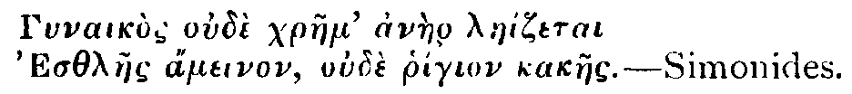
In the Beginning God made the Souls of Womankind out of different Materials, and in a separate State from their Bodies.
The Souls of one Kind of Women were formed out of those Ingredients which compose a Swine. A Woman of this Make is a Slut in her House and a Glutton at her Table. She is uncleanly in her Person, a Slattern in her Dress, and her Family is no better than a Dunghill.
A Second Sort of Female Soul was formed out of the same Materials that enter into the Composition of a Fox. Such an one is what we call a notable discerning Woman, who has an Insight into every thing, whether it be good or bad. In this Species of Females there are some Virtuous and some Vicious.
A Third Kind of Women were made up of Canine Particles. These are what we commonly call Scolds, who imitate the Animals of which they were taken, that are always busy and barking, that snarl at every one who comes in their Way, and live in perpetual Clamour.
The Fourth Kind of Women were made out of the Earth. These are your Sluggards, who pass away their Time in Indolence and Ignorance, hover over the Fire a whole Winter, and apply themselves with Alacrity to no kind of Business but Eating.
The Fifth Species of Females were made out of the Sea. These are Women of variable uneven Tempers, sometimes all Storm and Tempest, sometimes all Calm and Sunshine. The Stranger who sees one of these in her Smiles and Smoothness would cry her up for a Miracle of good Humour; but on a sudden her Looks and her Words are changed, she is nothing but Fury and Outrage, Noise and Hurricane.
The Sixth Species were made up of the Ingredients which compose an Ass, or a Beast of Burden. These are naturally exceeding slothful, but, upon the Husband's exerting his Authority, will live upon hard Fare, and do every thing to please him. They are however far from being averse to Venereal Pleasure, and seldom refuse a Male Companion.
The Cat furnished Materials for a Seventh Species of Women, who are of a melancholy, froward, unamiable Nature, and so repugnant to the Offers of Love, that they fly in the Face of their Husband when he approaches them with conjugal Endearments. This Species of Women are likewise subject to little Thefts, Cheats and Pilferings.
The Mare with a flowing Mane, which was never broke to any servile Toil and Labour, composed an Eighth Species of Women. These are they who have little Regard for their Husbands, who pass away their Time in Dressing, Bathing, and Perfuming; who throw their Hair into the nicest Curls, and trick it up with the fairest Flowers and Garlands. A Woman of this Species is a very pretty Thing for a Stranger to look upon, but very detrimental to the Owner, unless it be a King or Prince who takes a Fancy to such a Toy.
The Ninth Species of Females were taken out of the Ape. These are such as are both ugly and ill-natured, who have nothing beautiful in themselves, and endeavour to detract from or ridicule every thing which appears so in others.
The Tenth and last Species of Women were made out of the Bee; and happy is the Man who gets such an one for his Wife. She is altogether faultless and unblameable; her Family flourishes and improves by her good Management. She loves her Husband, and is beloved by him. She brings him a Race of beautiful and virtuous Children. She distinguishes her self among her Sex. She is surrounded with Graces. She never sits among the loose Tribe of Women, nor passes away her Time with them in wanton Discourses. She is full of Virtue and Prudence, and is the best Wife that Jupiter can bestow on Man.
No. 210 |
Wednesday, October 31, 1711 |
John Hughes |
Nescio quomodo inhæret in mentibus quasi seculorum quoddam augurium futurorum; idque in maximis ingeniis altissimisque animis et existit maxime et apparet facillime.
Cic. Tusc. Quæst.
To the Spectator.
Sir,
'I am fully persuaded that one of the best Springs of generous and worthy Actions, is the having generous and worthy Thoughts of our selves. Whoever has a mean Opinion of the Dignity of his Nature, will act in no higher a Rank than he has allotted himself in his own Estimation. If he considers his Being as circumscribed by the uncertain Term of a few Years, his Designs will be contracted into the same narrow Span he imagines is to bound his Existence. How can he exalt his Thoughts to any thing great and noble, who only believes that, after a short Turn on the Stage of this World, he is to sink into Oblivion, and to lose his Consciousness for ever?
'For this Reason I am of Opinion, that so useful and elevated a Contemplation as that of the Soul's Immortality cannot be resumed too often. There is not a more improving Exercise to the human Mind, than to be frequently reviewing its own great Privileges and Endowments; nor a more effectual Means to awaken in us an Ambition raised above low Objects and little Pursuits, than to value our selves as Heirs of Eternity.
'It is a very great Satisfaction to consider the best and wisest of Mankind in all Nations and Ages, asserting, as with one Voice, this their Birthright, and to find it ratify'd by an express Revelation. At the same time if we turn our Thoughts inward upon our selves, we may meet with a kind of secret Sense concurring with the Proofs of our own Immortality.
'You have, in my Opinion, raised a good presumptive Argument from the increasing Appetite the Mind has to Knowledge, and to the extending its own Faculties, which cannot be accomplished, as the more restrained Perfection of lower Creatures may, in the Limits of a short Life. I think another probable Conjecture may be raised from our Appetite to Duration it self, and from a Reflection on our Progress through the several Stages of it: We are complaining, as you observe in a former Speculation, of the Shortness of Life, and yet are perpetually hurrying over the Parts of it, to arrive at certain little Settlements, or imaginary Points of Rest, which are dispersed up and down in it.
'Now let us consider what happens to us when we arrive at these imaginary Points of Rest: Do we stop our Motion, and sit down satisfied in the Settlement we have gain'd? or are we not removing the Boundary, and marking out new Points of Rest, to which we press forward with the like Eagerness, and which cease to be such as fast as we attain them? Our Case is like that of a Traveller upon the Alps, who should fancy that the Top of the next Hill must end his Journey, because it terminates his Prospect; but he no sooner arrives as it, than he sees new Ground and other Hills beyond it, and continues to travel on as before1.
'This is so plainly every Man's Condition in Life, that there is no one who has observed any thing, but may observe, that as fast as his Time wears away, his Appetite to something future remains. The Use therefore I would make of it is this, That since Nature (as some love to express it) does nothing in vain, or, to speak properly, since the Author of our Being has planted no wandering Passion in it, no Desire which has not its Object, Futurity is the proper Object of the Passion so constantly exercis'd about it; and this Restlessness in the present, this assigning our selves over to further Stages of Duration, this successive grasping at somewhat still to come, appears to me (whatever it may to others) as a kind of Instinct or natural Symptom which the Mind of Man has of its own Immortality.
'I take it at the same time for granted, that the Immortality of the Soul is sufficiently established by other Arguments: And if so, this Appetite, which otherwise would be very unaccountable and absurd, seems very reasonable, and adds Strength to the Conclusion. But I am amazed when I consider there are Creatures capable of Thought, who, in spite of every Argument, can form to themselves a sullen Satisfaction in thinking otherwise. There is something so pitifully mean in the inverted Ambition of that Man who can hope for Annihilation, and please himself to think that his whole Fabrick shall one Day crumble into Dust, and mix with the Mass of inanimate Beings, that it equally deserves our Admiration and Pity. The Mystery of such Mens Unbelief is not hard to be penetrated; and indeed amounts to nothing more than a sordid Hope that they shall not be immortal, because they dare not be so.
'This brings me back to my first Observation, and gives me Occasion to say further, That as worthy Actions spring from worthy Thoughts, so worthy Thoughts are likewise the Consequence of worthy Actions: But the Wretch who has degraded himself below the Character of Immortality, is very willing to resign his Pretensions to it, and to substitute in its Room a dark negative Happiness in the Extinction of his Being.
'The admirable Shakespear has given us a strong Image of the unsupported Condition of such a Person in his last Minutes, in the second Part of King Henry the Sixth, where Cardinal Beaufort, who had been concerned in the Murder of the good Duke Humphrey, is represented on his Death-bed. After some short confused Speeches which shew an Imagination disturbed with Guilt, just as he is expiring, King Henry standing by him full of Compassion, says,Lord Cardinal! if thou think'st on Heaven's Bliss,'The Despair which is here shewn, without a Word or Action on the Part of the dying Person, is beyond what could be painted by the most forcible Expressions whatever.
Hold up thy Hand, make Signal of that Hope!
He dies, and makes no Sign!—
'I shall not pursue this Thought further, but only add, That as Annihilation is not to be had with a Wish, so it is the most abject Thing in the World to wish it. What are Honour, Fame, Wealth, or Power when compared with the generous Expectation of a Being without End, and a Happiness adequate to that Being?
'I shall trouble you no further; but with a certain Gravity which these Thoughts have given me, I reflect upon some Things People say of you, (as they will of Men who distinguish themselves) which I hope are not true; and wish you as good a Man as you are an Author.
I am, Sir,
Your most obedient humble Servant,
T. D.
'Hills peep o'er Hills, and Alps on Alps arise.'Pope's Essay on Criticism, then newly published.
No. 211 |
Thursday, November 1, 1711 |
Addison |
Fictis meminerit nos jocari Fabulis.
Phæd.
Thus all things are but alter'd, nothing dies,Plato in the Vision of Erus the Armenian, which I may possibly make the Subject of a future Speculation, records some beautiful Transmigrations; as that the Soul of Orpheus, who was musical, melancholy, and a Woman-hater, entered into a Swan; the Soul of Ajax, which was all Wrath and Fierceness, into a Lion; the Soul of Agamemnon, that was rapacious and imperial, into an Eagle; and the Soul of Thersites, who was a Mimick and a Buffoon, into a Monkey2.
And here and there th' unbody'd Spirit flies:
By Time, or Force, or Sickness dispossess'd,
And lodges where it lights, in Bird or Beast,
Or hunts without till ready Limbs it find,
And actuates those according to their Kind:
From Tenement to Tenement is toss'd:
The Soul is still the same, the Figure only lost.
Then let not Piety be put to Flight,
To please the Taste of Glutton-Appetite;
But suffer inmate Souls secure to dwell,
Lest from their Seats your Parents you expel;
With rabid Hunger feed upon your Kind,
Or from a Beast dislodge a Brother's Mind.
Thus Aristotle's Soul of old that was,I shall fill up this Paper with some Letters which my last Tuesday's Speculation has produced. My following Correspondents will shew, what I there observed, that the Speculation of that Day affects only the lower Part of the Sex.
May now be damn'd to animate an Ass;
Or in this very House, for ought we know,
Is doing painful Penance in some Beau.
From my House in the Strand, October 30, 1711.L.
Mr. Spectator,
'Upon reading your Tuesday's Paper, I find by several Symptoms in my Constitution that I am a Bee. My Shop, or, if you please to call it so, my Cell, is in that great Hive of Females which goes by the Name of The New Exchange; where I am daily employed in gathering together a little Stock of Gain from the finest Flowers about the Town, I mean the Ladies and the Beaus. I have a numerous Swarm of Children, to whom I give the best Education I am able: But, Sir, it is my Misfortune to be married to a Drone, who lives upon what I get, without bringing any thing into the common Stock. Now, Sir, as on the one hand I take care not to behave myself towards him like a Wasp, so likewise I would not have him look upon me as an Humble-Bee; for which Reason I do all I can to put him upon laying up Provisions for a bad Day, and frequently represent to him the fatal Effects his4 Sloth and Negligence may bring upon us in our old Age. I must beg that you will join with me in your good Advice upon this Occasion, and you will for ever oblige
Your humble Servant,
Melissa.
Picadilly, October 31, 1711.
Sir,
'I am joined in Wedlock for my Sins to one of those Fillies who are described in the old Poet with that hard Name you gave us the other Day. She has a flowing Mane, and a Skin as soft as Silk: But, Sir, she passes half her Life at her Glass, and almost ruins me in Ribbons. For my own part, I am a plain handicraft Man, and in Danger of breaking by her Laziness and Expensiveness. Pray, Master, tell me in your next Paper, whether I may not expect of her so much Drudgery as to take care of her Family, and curry her Hide in case of Refusal.
Your loving Friend,
Barnaby Brittle.
Cheapside, October 30.
Mr. Spectator,
I am mightily pleased with the Humour of the Cat, be so kind as to enlarge upon that Subject.
Yours till Death,
Josiah Henpeck.
P. S. You must know I am married to a Grimalkin.
Wapping, October 31, 1711.
Sir,
'Ever since your Spectator of Tuesday last came into our Family, my Husband is pleased to call me his Oceana, because the foolish old Poet that you have translated says, That the Souls of some Women are made of Sea-Water. This, it seems, has encouraged my Sauce-Box to be witty upon me. When I am angry, he cries Pr'ythee my Dear be calm; when I chide one of my Servants, Pr'ythee Child do not bluster. He had the Impudence about an Hour ago to tell me, That he was a Sea-faring Man, and must expect to divide his Life between Storm and Sunshine. When I bestir myself with any Spirit in my Family, it is high Sea in his House; and when I sit still without doing any thing, his Affairs forsooth are Wind-bound. When I ask him whether it rains, he makes Answer, It is no Matter, so that it be fair Weather within Doors. In short, Sir, I cannot speak my Mind freely to him, but I either swell or rage, or do something that is not fit for a civil Woman to hear. Pray, Mr. Spectator, since you are so sharp upon other Women, let us know what Materials your Wife is made of, if you have one. I suppose you would make us a Parcel of poor-spirited tame insipid Creatures; but, Sir, I would have you to know, we have as good Passions in us as your self, and that a Woman was never designed to be a Milk-Sop.
Martha Tempest.
No. 212 |
Friday, November 2, 1711 |
Steele |
—Eripe turpiT.
Colla jugo, liber, liber dic, sum age—
Hor.
Mr. Spectator,
'I Never look upon my dear Wife, but I think of the Happiness Sir Roger De Coverley enjoys, in having such a Friend as you to expose in proper Colours the Cruelty and Perverseness of his Mistress. I have very often wished you visited in our Family, and were acquainted with my Spouse; she would afford you for some Months at least Matter enough for one Spectator a Week. Since we are not so happy as to be of your Acquaintance, give me leave to represent to you our present Circumstances as well as I can in Writing. You are to know then that I am not of a very different Constitution from Nathaniel Henroost, whom you have lately recorded in your Speculations; and have a Wife who makes a more tyrannical Use of the Knowledge of my easy Temper than that Lady ever pretended to. We had not been a Month married, when she found in me a certain Pain to give Offence, and an Indolence that made me bear little Inconveniences rather than dispute about them. From this Observation it soon came to that pass, that if I offered to go abroad, she would get between me and the Door, kiss me, and say she could not part with me; and then down again I sat. In a Day or two after this first pleasant Step towards confining me, she declared to me, that I was all the World to her, and she thought she ought to be all the World to me. If, she said, my Dear loves me as much as I love him, he will never be tired of my Company. This Declaration was followed by my being denied to all my Acquaintance; and it very soon came to that pass, that to give an Answer at the Door before my Face, the Servants would ask her whether I was within or not; and she would answer No with great Fondness, and tell me I was a good Dear. I will not enumerate more little Circumstances to give you a livelier Sense of my Condition; but tell you in general, that from such Steps as these at first, I now live the Life of a Prisoner of State; my Letters are opened, and I have not the Use of Pen, Ink and Paper, but in her Presence. I never go abroad, except she sometimes takes me with her in her Coach to take the Air, if it may be called so, when we drive, as we generally do, with the Glasses up. I have overheard my Servants lament my Condition, but they dare not bring me Messages without her Knowledge, because they doubt my Resolution to stand by 'em. In the midst of this insipid Way of Life, an old Acquaintance of mine, Tom Meggot, who is a Favourite with her, and allowed to visit me in her Company because he sings prettily, has roused me to rebel, and conveyed his Intelligence to me in the following Manner. My Wife is a great Pretender to Musick, and very ignorant of it; but far gone in the Italian Taste. Tom goes to Armstrong, the famous fine Writer of Musick, and desires him to put this Sentence of Tully1 in the Scale of an Italian Air, and write it out for my Spouse from him.An ille mihi liber cui mulier imperat? Cui leges imponit, præscribit, jubet, vetat quod videtur? Qui nihil imperanti negare, nihil recusare audet? Poscit? dandum est. Vocat? veniendum. Ejicit? abeundum. Minitatur? extimiscendum.'To be short, my Wife was extremely pleased with it; said the Italian was the only Language for Musick; and admired how wonderfully tender the Sentiment was, and how pretty the Accent is of that Language, with the rest that is said by Rote on that Occasion. Mr. Meggot is sent for to sing this Air, which he performs with mighty Applause; and my Wife is in Ecstasy on the Occasion, and glad to find, by my being so much pleased, that I was at last come into the Notion of the Italian; for, said she, it grows upon one when one once comes to know a little of the Language; and pray, Mr. Meggot, sing again those Notes, Nihil Imperanti negare, nihil recusare. You may believe I was not a little delighted with my Friend Tom's Expedient to alarm me, and in Obedience to his Summons I give all this Story thus at large; and I am resolved, when this appears in the Spectator, to declare for my self. The manner of the Insurrection I contrive by your Means, which shall be no other than that Tom Meggot, who is at our Tea-table every Morning, shall read it to us; and if my Dear can take the Hint, and say not one Word, but let this be the Beginning of a new Life without farther Explanation, it is very well; for as soon as the Spectator is read out, I shall, without more ado, call for the Coach, name the Hour when I shall be at home, if I come at all; if I do not, they may go to Dinner. If my Spouse only swells and says nothing, Tom and I go out together, and all is well, as I said before; but if she begins to command or expostulate, you shall in my next to you receive a full Account of her Resistance and Submission, for submit the dear thing must to,
Does he live like a Gentlemanwho is commanded by a Woman? He to whom she gives Law, grants and denies what she pleases? who can neither deny her any thing she asks, or refuse to do any thing she commands?
Sir,
Your most obedient humble Servant,
Anthony Freeman.
P. S. I hope I need not tell you that I desire this may be in your very next.
No. 213 |
Saturday, November 3, 1711 |
Addison |
—Mens sibi conscia recti.
Virg.
Whether or no God will approve of my Actions, I know not; but this I am sure of, that I have at all Times made it my Endeavour to please him, and I have a good Hope that this my Endeavour will be accepted by him.We find in these Words of that great Man the habitual good Intention which I would here inculcate, and with which that divine Philosopher always acted. I shall only add, that Erasmus, who was an unbigotted Roman Catholick, was so much transported with this Passage of Socrates, that he could scarce forbear looking upon him as a Saint, and desiring him to pray for him; or as that ingenious and learned Writer has expressed himself in a much more lively manner:
When I reflect on such a Speech pronounced by such a Person, I can scarce forbear crying out, Sancte Socrates, ora pro nobis: O holy Socrates, pray for us7.L.
No. 214 |
Monday, November 5, 1711 |
Steele |
Perierunt tempora longi
Servitii
Juv. 1
Dulcis inexperta cultura potentis amici,Hor.
Expertus metuit
No. 215 |
Tuesday, November 6, 1711 |
Addison |
—Ingenuas didicisse fideliter artes
Emollit mores, nec sinit esse feros.
Ov.
No. 216 |
Wednesday, November 7, 1711 |
Steele |
Siquidem hercle possis, nil prius, neque fortius:T.
Verum si incipies, neque perficies naviter,
Atque ubi pati non poteris, cum nemo expetet,
Infecta pace ultrò ad eam venies indicans
Te amare, et ferre non posse: Actum est, ilicet,
Perîsti: eludet ubi te victum senserit.
Ter.
To Mr. Spectator,
Sir, This is to inform you, that Mr. Freeman1 had no sooner taken Coach, but his Lady was taken with a terrible Fit of the Vapours, which,'tis feared will make her miscarry, if not endanger her Life; therefore, dear Sir, if you know of any Receipt that is good against this fashionable reigning Distemper, be pleased to communicate it for the Good of the Publick, and you will oblige
Yours,
A. Noewill.
Mr. Spectator,
'The Uproar was so great as soon as I had read the Spectator concerning Mrs. Freeman, that after many Revolutions in her Temper, of raging, swooning, railing, fainting, pitying herself, and reviling her Husband, upon an accidental coming in of a neighbouring Lady (who says she has writ to you also) she had nothing left for it but to fall in a Fit. I had the Honour to read the Paper to her, and have a pretty good Command of my Countenance and Temper on such Occasions; and soon found my historical Name to be Tom Meggot in your Writings, but concealed my self till I saw how it affected Mrs. Freeman. She looked frequently at her Husband, as often at me; and she did not tremble as she filled Tea, till she came to the Circumstance of Armstrong's writing out a Piece of Tully for an Opera Tune: Then she burst out, She was exposed, she was deceiv'd, she was wronged and abused. The Tea-cup was thrown in the Fire; and without taking Vengeance on her Spouse, she said of me, That I was a pretending Coxcomb, a Medler that knew not what it was to interpose in so nice an Affair as between a Man and his Wife. To which Mr. Freeman; Madam, were I less fond of you than I am, I should not have taken this Way of writing to the Spectator, to inform a Woman whom God and Nature has placed under my Direction with what I request of her; but since you are so indiscreet as not to take the Hint which I gave you in that Paper, I must tell you, Madam, in so many Words, that you have for a long and tedious Space of Time acted a Part unsuitable to the Sense you ought to have of the Subordination in which you are placed. And I must acquaint you once for all, that the Fellow without, ha Tom! (here the Footman entered and answered Madam) 'Sirrah don't you know my Voice; look upon me when I speak to you: I say, Madam, this Fellow here is to know of me my self, whether I am at Leisure to see Company or not. I am from this Hour Master of this House; and my Business in it, and every where else, is to behave my self in such a Manner, as it shall be hereafter an Honour to you to bear my Name; and your Pride, that you are the Delight, the Darling, and Ornament of a Man of Honour, useful and esteemed by his Friends; and I no longer one that has buried some Merit in the World, in Compliance to a froward Humour which has grown upon an agreeable Woman by his Indulgence. Mr. Freeman ended this with a Tenderness in his Aspect and a downcast Eye, which shewed he was extremely moved at the Anguish he saw her in; for she sat swelling with Passion, and her Eyes firmly fixed on the Fire; when I, fearing he would lose all again, took upon me to provoke her out of that amiable Sorrow she was in, to fall upon me; upon which I said very seasonably for my Friend, That indeed Mr. Freeman was become the common Talk of the Town; and that nothing was so much a Jest, as when it was said in Company Mr. Freeman had promised to come to such a Place. Upon which the good Lady turned her Softness into downright Rage, and threw the scalding Tea-Kettle upon your humble Servant; flew into the Middle of the Room, and cried out she was the unfortunatest of all Women: Others kept Family Dissatisfactions for Hours of Privacy and Retirement: No Apology was to be made to her, no Expedient to be found, no previous Manner of breaking what was amiss in her; but all the World was to be acquainted with her Errors, without the least Admonition. Mr. Freeman was going to make a soft'ning Speech, but I interposed; Look you, Madam, I have nothing to say to this Matter, but you ought to consider you are now past a Chicken; this Humour, which was well enough in a Girl, is insufferable in one of your Motherly Character. With that she lost all Patience, and flew directly at her Husband's Periwig. I got her in my Arms, and defended my Friend: He making Signs at the same time that it was too much; I beckoning, nodding, and frowning over her Shoulder, that he2 was lost if he did not persist. In this manner 3 flew round and round the Room in a Moment, 'till the Lady I spoke of above and Servants entered; upon which she fell on a Couch as breathless. I still kept up my Friend; but he, with a very silly Air, bid them bring the Coach to the Door, and we went off, I forced to bid the Coachman drive on. We were no sooner come to my Lodgings, but all his Wife's Relations came to enquire after him; and Mrs. Freeman's Mother writ a Note, wherein she thought never to have seen this Day, and so forth.
In a word, Sir, I am afraid we are upon a thing we have no Talents for; and I can observe already, my Friend looks upon me rather as a Man that knows a Weakness of him that he is ashamed of, than one who has rescu'd him from Slavery. Mr. Spectator, I am but a young Fellow, and if Mr. Freeman submits, I shall be looked upon as an Incendiary, and never get a Wife as long as I breathe. He has indeed sent Word home he shall lie at Hampstead to-night; but I believe Fear of the first Onset after this Rupture has too great a Place in this Resolution. Mrs. Freeman has a very pretty Sister; suppose I delivered him up, and articled with the Mother for her for bringing him home. If he has not Courage to stand it, (you are a great Casuist) is it such an ill thing to bring my self off, as well as I can? What makes me doubt my Man, is, that I find he thinks it reasonable to expostulate at least with her; and Capt. SENTREY will tell you, if you let your Orders be disputed, you are no longer a Commander. I wish you could advise me how to get clear of this Business handsomely.
Yours,
Tom Meggot.
No. 217 |
Thursday, November 1, 1711 |
Budgell |
—Tunc fœmina simplex,
Et pariter toto repetitur clamor ab antro.
Juv. Sat. 6.
Mr. Spectator,
'In some of your first Papers you were pleased to give the Publick a very diverting Account of several Clubs and nocturnal Assemblies; but I am a Member of a Society which has wholly escaped your Notice, I mean a Club of She-Romps. We take each a Hackney-Coach, and meet once a Week in a large upper Chamber, which we hire by the Year for that Purpose; our Landlord and his Family, who are quiet People, constantly contriving to be abroad on our Club-Night. We are no sooner come together than we throw off all that Modesty and Reservedness with which our Sex are obliged to disguise themselves in publick Places. I am not able to express the Pleasure we enjoy from Ten at Night 'till four in the Morning, in being as rude as you Men can be, for your Lives. As our Play runs high the Room is immediately filled with broken Fans, torn Petticoats, Lappets of Head-dresses, Flounces, Furbelows, Garters, and Working-Aprons. I had forgot to tell you at first, that besides the Coaches we come in our selves, there is one which stands always empty to carry off our dead Men, for so we call all those Fragments and Tatters with which the Room is strewed, and which we pack up together in Bundles and put into the aforesaid Coach. It is no small Diversion for us to meet the next Night at some Member's Chamber, where every one is to pick out what belonged to her from this confused Bundle of Silks, Stuffs, Laces, and Ribbons. I have hitherto given you an Account of our Diversion on ordinary Club-Nights; but must acquaint you farther, that once a Month we demolish a Prude, that is, we get some queer formal Creature in among us, and unrig her in an Instant. Our last Month's Prude was so armed and fortified in Whalebone and Buckram that we had much ado to come at her; but you would have died with laughing to have seen how the sober awkward Thing looked when she was forced out of her Intrenchments. In short, Sir,'tis impossible to give you a true Notion of our Sports, unless you would come one Night amongst us; and tho' it be directly against the Rules of our Society to admit a Male Visitant, we repose so much Confidence in your Silence and Taciturnity, that 'twas agreed by the whole Club, at our last Meeting, to give you Entrance for one Night as a Spectator.
I am, Your Humble Servant,
Kitty Termagant.
P. S. We shall demolish a Prude next Thursday.
Mr. Spectator,
'It is my Misfortune to be in Love with a young Creature who is daily committing Faults, which though they give me the utmost Uneasiness, I know not how to reprove her for, or even acquaint her with. She is pretty, dresses well, is rich, and good-humour'd; but either wholly neglects, or has no Notion of that which Polite People have agreed to distinguish by the Name of Delicacy. After our Return from a Walk the other Day she threw her self into an Elbow-Chair, and professed before a large Company, that she was all over in a Sweat. She told me this Afternoon that her Stomach aked; and was complaining Yesterday at Dinner of something that stuck in her Teeth. I treated her with a Basket of Fruit last Summer, which she eat so very greedily, as almost made me resolve never to see her more. In short, Sir, I begin to tremble whenever I see her about to speak or move. As she does not want Sense, if she takes these Hints I am happy; if not, I am more than afraid, that these Things which shock me even in the Behaviour of a Mistress, will appear insupportable in that of a Wife.
I am, Sir, Yours, &c.
Mr. Spectator,X.
I am happily arrived at a State of Tranquillity, which few People envy, I mean that of an old Maid; therefore being wholly unconcerned in all that Medley of Follies which our Sex is apt to contract from their silly Fondness of yours, I read your Railleries on us without Provocation. I can say with Hamlet,—Man delights not me,Therefore, dear Sir, as you never spare your own Sex, do not be afraid of reproving what is ridiculous in ours, and you will oblige at least one Woman, who is
Nor Woman neither—
Your humble Servant,
Susannah Frost.
Mr. Spectator,
I am Wife to a Clergyman, and cannot help thinking that in your Tenth or Tithe-Character of Womankind1 you meant my self, therefore I have no Quarrel against you for the other Nine Characters.
Your humble Servant,
A.B.
No. 218 |
Friday, November 9, 1711 |
Steele |
Quid de quoque viro et cui dicas sæpe caveto.
Hor.
No. 219 |
Saturday, November 10, 1711 |
Addison |
Vix ea nostra voco—
Ov.
No. 220 |
Monday, November 12, 1711 |
Steele |
Rumoresque serit variosT.
Virg.1
Sir,
'Why will you apply to my Father for my Love? I cannot help it if he will give you my Person; but I assure you it is not in his Power, nor even in my own, to give you my Heart. Dear Sir, do but consider the ill Consequence of such a Match; you are Fifty-five, I Twenty-one. You are a Man of Business, and mightily conversant in Arithmetick and making Calculations; be pleased therefore to consider what Proportion your Spirits bear to mine; and when you have made a just Estimate of the necessary Decay on one Side, and the Redundance on the other, you will act accordingly. This perhaps is such Language as you may not expect from a young Lady; but my Happiness is at Stake, and I must talk plainly. I mortally hate you; and so, as you and my Father agree, you may take me or leave me: But if you will be so good as never to see me more, you will for ever oblige,
Sir,
Your most humble Servant,
Henrietta.
Mr. Spectator2,
'There are so many Artifices and Modes of false Wit, and such a Variety of Humour discovers it self among its Votaries, that it would be impossible to exhaust so fertile a Subject, if you would think fit to resume it. The following Instances may, if you think fit, be added by Way of Appendix to your Discourses on that Subject.
'That Feat of Poetical Activity mentioned by Horace, of an Author who could compose two hundred Verses while he stood upon one Leg3, has been imitated (as I have heard) by a modern Writer; who priding himself on the Hurry of his Invention, thought it no small Addition to his Fame to have each Piece minuted with the exact Number of Hours or Days it cost him in the Composition. He could taste no Praise till he had acquainted you in how short Space of Time he had deserved it; and was not so much led to an Ostentation of his Art, as of his Dispatch.—Accipe si vis,'This was the whole of his Ambition; and therefore I cannot but think the Flights of this rapid Author very proper to be opposed to those laborious Nothings which you have observed were the Delight of the German Wits, and in which they so happily got rid of such a tedious Quantity of their Time.
Accipe jam tabulas; detur nobis locus, hora,
Custodes: videamus uter plus scribere possit.
Hor.
'I have known a Gentleman of another Turn of Humour, who, despising the Name of an Author, never printed his Works, but contracted his Talent, and by the help of a very fine Diamond which he wore on his little Finger, was a considerable Poet upon Glass. He had a very good Epigrammatick Wit; and there was not a Parlour or Tavern Window where he visited or dined for some Years, which did not receive some Sketches or Memorials of it. It was his Misfortune at last to lose his Genius and his Ring to a Sharper at Play; and he has not attempted to make a Verse since.
'But of all Contractions or Expedients for Wit, I admire that of an ingenious Projector whose Book I have seen4. This Virtuoso being a Mathematician, has, according to his Taste, thrown the Art of Poetry into a short Problem, and contrived Tables by which any one without knowing a Word of Grammar or Sense, may, to his great Comfort, be able to compose or rather to erect Latin Verses. His Tables are a kind of Poetical Logarithms, which being divided into several Squares, and all inscribed with so many incoherent Words, appear to the Eye somewhat like a Fortune-telling Screen. What a Joy must it be to the unlearned Operator to find that these Words, being carefully collected and writ down in Order according to the Problem, start of themselves into Hexameter and Pentameter Verses? A Friend of mine, who is a Student in Astrology, meeting with this Book, performed the Operation, by the Rules there set down; he shewed his Verses to the next of his Acquaintance, who happened to understand Latin; and being informed they described a Tempest of Wind, very luckily prefixed them, together with a Translation, to an Almanack he was just then printing, and was supposed to have foretold the last great Storm5.
'I think the only Improvement beyond this, would be that which the late Duke of Buckingham mentioned to a stupid Pretender to Poetry, as the Project of a Dutch Mechanick, viz. a Mill to make Verses. This being the most compendious Method of all which have yet been proposed, may deserve the Thoughts of our modern Virtuosi who are employed in new Discoveries for the publick Good: and it may be worth the while to consider, whether in an Island where few are content without being thought Wits, it will not be a common Benefit, that Wit as well as Labour should be made cheap.
I am, Sir, Your humble Servant, &c.
Mr. Spectator,
'I often dine at a Gentleman's House, where there are two young Ladies, in themselves very agreeable, but very cold in their Behaviour, because they understand me for a Person that is to break my Mind, as the Phrase is, very suddenly to one of them. But I take this Way to acquaint them, that I am not in Love with either of them, in Hopes they will use me with that agreeable Freedom and Indifference which they do all the rest of the World, and not to drink to one another only, but sometimes cast a kind Look, with their Service to,
Sir, Your humble Servant.
Mr. Spectator,
'I am a young Gentleman, and take it for a Piece of Good-breeding to pull off my Hat when I see any thing particularly charming in any Woman, whether I know her or not. I take care that there is nothing ludicrous or arch in my Manner, as if I were to betray a Woman into a Salutation by Way of Jest or Humour; and yet except I am acquainted with her, I find she ever takes it for a Rule, that she is to look upon this Civility and Homage I pay to her supposed Merit, as an Impertinence or Forwardness which she is to observe and neglect. I wish, Sir, you would settle the Business of salutation; and please to inform me how I shall resist the sudden Impulse I have to be civil to what gives an Idea of Merit; or tell these Creatures how to behave themselves in Return to the Esteem I have for them. My Affairs are such, that your Decision will be a Favour to me, if it be only to save the unnecessary Expence of wearing out my Hat so fast as I do at present.
'There are some that do know me, and won't bow to me.
I am, Sir,
Yours,
T.D.
—Aliena negotia centumHor.
Per caput, et circa saliunt latus.
—in hora saepe ducentos,Sat. I. iv. 10.
Ut magnum, versus dictabat stans pede in uno.
No. 221 |
Tuesday, November 13, 1711 |
Addison |
—Ab Ovo
Usque ad Mala—
Hor.
Adam, Sheth, EnoshHe divided this short Text into many Parts, and by discovering several Mysteries in each Word, made a most Learned and Elaborate Discourse. The Name of this profound Preacher was Doctor Alabaster, of whom the Reader may find a more particular Account in Doctor Fuller's Book of English Worthies5. This Instance will, I hope, convince my Readers that there may be a great deal of fine Writing in the Capital Letters which bring up the Rear of my Paper, and give them some Satisfaction in that Particular. But as for the full Explication of these Matters, I must refer them to Time, which discovers all things.
Abracadabraand so on, till there remained only the initial A. His word was taken, and this use of the charm was popular even in the Spectator's time. It is described by Defoe in his History of the Plague.
Abracadabr
Abracadab
Abracada
No. 222 |
Wednesday, November 14, 1711 |
Steele |
Cur alter fratrum cessare, et ludere, et ungi,
Præferat Herodis palmetis pinguibus
Hor.
Mr. Spectator,
'There is one thing I have often look'd for in your Papers, and have as often wondered to find my self disappointed; the rather, because I think it a Subject every way agreeable to your Design, and by being left unattempted by others, seems reserved as a proper Employment for you; I mean a Disquisition, from whence it proceeds, that Men of the brightest Parts, and most comprehensive Genius, compleatly furnished with Talents for any Province in humane Affairs; such as by their wise Lessons of Œconomy to others have made it evident, that they have the justest Notions of Life and of true Sense in the Conduct of it—: from what unhappy contradictious Cause it proceeds, that Persons thus finished by Nature and by Art, should so often fail in the Management of that which they so well understand, and want the Address to make a right Application of their own Rules. This is certainly a prodigious Inconsistency in Behaviour, and makes much such a Figure in Morals as a monstrous Birth in Naturals, with this Difference only, which greatly aggravates the Wonder, that it happens much more frequently; and what a Blemish does it cast upon Wit and Learning in the general Account of the World? And in how disadvantageous a Light does it expose them to the busy Class of Mankind, that there should be so many Instances of Persons who have so conducted their Lives in spite of these transcendent Advantages, as neither to be happy in themselves, nor useful to their Friends; when every Body sees it was entirely in their own Power to be eminent in both these Characters? For my part, I think there is no Reflection more astonishing, than to consider one of these Gentlemen spending a fair Fortune, running in every Body's Debt without the least Apprehension of a future Reckoning, and at last leaving not only his own Children, but possibly those of other People, by his Means, in starving Circumstances; while a Fellow, whom one would scarce suspect to have a humane Soul, shall perhaps raise a vast Estate out of Nothing, and be the Founder of a Family capable of being very considerable in their Country, and doing many illustrious Services to it. That this Observation is just, Experience has put beyond all Dispute. But though the Fact be so evident and glaring, yet the Causes of it are still in the Dark; which makes me persuade my self, that it would be no unacceptable Piece of Entertainment to the Town, to inquire into the hidden Sources of so unaccountable an Evil. I am,
Sir,
Your most Humble Servant.
A Man so various, that he seem'd to beThis loose State of the Soul hurries the Extravagant from one Pursuit to another; and the Reason that his Expences are greater than another's, is, that his Wants are also more numerous. But what makes so many go on in this Way to their Lives End, is, that they certainly do not know how contemptible they are in the Eyes of the rest of Mankind, or rather, that indeed they are not so contemptible as they deserve. Tully says, it is the greatest of Wickedness to lessen your paternal Estate. And if a Man would thoroughly consider how much worse than Banishment it must be to his Child, to ride by the Estate which should have been his had it not been for his Father's Injustice to him, he would be smitten with the Reflection more deeply than can be understood by any but one who is a Father. Sure there can be nothing more afflicting than to think it had been happier for his Son to have been born of any other Man living than himself.
Not one, but all Mankind's Epitome.
Stiff in Opinion, always in the Wrong,
Was every Thing by Starts, and Nothing long;
But in the Course of one revolving Moon,
Was Chymist, Fidler, Statesman, and Buffoon.
Then all for Women, Painting, Rhiming, Drinking,
Besides ten thousand Freaks that died in thinking;
Blest Madman, who could every Hour employ
In something new to wish or to enjoy!
In squandering Wealth was his peculiar Art,
Nothing went unrewarded but Desert.
No Thanks to him; if he had no Business, he would have nothing to do.T.
No. 223 |
Thursday, November 15, 1711 |
Addison |
O suavis Anima! qualem te dicam bonam
Antehac fuisse, tales cùm sint reliquiæ!
Phæd.
Apparent rari nantes in gurgite vasto.Among the mutilated Poets of Antiquity, there is none whose Fragments are so beautiful as those of Sappho. They give us a Taste of her Way of Writing, which is perfectly conformable with that extraordinary Character we find of her, in the Remarks of those great Criticks who were conversant with her Works when they were entire. One may see by what is left of them, that she followed Nature in all her Thoughts, without descending to those little Points, Conceits, and Turns of Wit with which many of our modern Lyricks are so miserably infected. Her Soul seems to have been made up of Love and Poetry; She felt the Passion in all its Warmth, and described it in all its Symptoms. She is called by ancient Authors the Tenth Muse; and by Plutarch is compared to Cacus the Son of Vulcan, who breathed out nothing but Flame. I do not know, by the Character that is given of her Works, whether it is not for the Benefit of Mankind that they are lost. They were filled with such bewitching Tenderness and Rapture, that it might have been dangerous to have given them a Reading.
| I | O Venus, Beauty of the Skies, To whom a Thousand Temples rise, Gayly false in gentle Smiles, Full of Love's perplexing Wiles; O Goddess! from my Heart remove The wasting Cares and Pains of Love. |
| II | If ever thou hast kindly heard A Song in soft Distress preferr'd, Propitious to my tuneful Vow, O gentle Goddess! hear me now. Descend, thou bright, immortal Guest, In all thy radiant Charms confest. |
| III | Thou once didst leave Almighty Jove, And all the Golden Roofs above: The Carr thy wanton Sparrows drew; Hov'ring in Air they lightly flew, As to my Bower they wing'd their Way: I saw their quiv'ring Pinions play. |
| IV | The Birds dismist (while you remain) Bore back their empty Carr again: Then You, with Looks divinely mild, In ev'ry heav'nly Feature smil'd, And ask'd what new Complaints I made, And why I call'd you to my Aid? |
| V | What Phrenzy in my Bosom rag'd, And by what Care to be asswag'd? What gentle Youth I could allure, Whom in my artful Toiles secure? Who does thy tender Heart subdue, Tell me, my Sappho, tell me Who? |
| VI | Tho' now he Shuns thy longing Arms, He soon shall court thy slighted Charms; Tho' now thy Off'rings he despise, He soon to thee shall Sacrifice; Tho' now he freeze, he soon shall burn, And be thy Victim in his turn. |
| VII | Celestial Visitant, once more Thy needful Presence I implore! In Pity come and ease my Grief, Bring my distemper'd Soul Relief; Favour thy Suppliant's hidden Fires, And give me All my Heart desires. |
When simple Macer, now of high renown,return
First sought a Poet's fortune in the town,
'Twas all the ambition his high soul could feel,
To wear red stockings, and to dine with Steele.
No. 224 |
Friday, November 16, 1711 |
Hughes |
—Fulgente trahit constrictos Gloria curru
Non minus ignotos generosis
Hor. Sat. 6.
Great Julius on the Mountains bred,That he subdued the World, was owing to the Accidents of Art and Knowledge; had he not met with those Advantages, the same Sparks of Emulation would have kindled within him, and prompted him to distinguish himself in some Enterprize of a lower Nature. Since therefore no Man's Lot is so unalterably fixed in this Life, but that a thousand Accidents may either forward or disappoint his Advancement, it is, methinks, a pleasant and inoffensive Speculation, to consider a great Man as divested of all the adventitious Circumstances of Fortune, and to bring him down in one's Imagination to that low Station of Life, the Nature of which bears some distant Resemblance to that high one he is at present possessed of. Thus one may view him exercising in Miniature those Talents of Nature, which being drawn out by Education to their full Length, enable him for the Discharge of some important Employment. On the other Hand, one may raise uneducated Merit to such a Pitch of Greatness as may seem equal to the possible Extent of his improved Capacity.
A Flock perhaps or Herd had led;
He that the World subdued, had been
But the best Wrestler on the Green.2
No. 225 |
Saturday, November 17, 1711 |
Addison |
Nullum numen abest si sit Prudentia
Juv.
Wisdom is glorious, and never fadeth away, yet she is easily seen of them that love her, and found of such as seek her. She preventeth them that desire her, in making herself first known unto them. He that seeketh her early, shall have no great Travel: for he shall find her sitting at his Doors. To think therefore upon her is Perfection of Wisdom, and whoso watcheth for her shall quickly be without Care. For she goeth about seeking such as are worthy of her, sheweth her self favourably unto them in the Ways, and meeteth them in every Thought1.C.
No. 226 |
Monday, November 19, 17111 |
Steele |
—Mutum est pictura poema.
Hor. 2
'Do you ever read the SpectatorS? I never do; they never come in my way; I go to no coffee-houses. They say abundance of them are very pretty; they are going to be printed in small volumes; I'll bring them over with me.'return to footnote mark
Pictura Poesis erit.Hor.
No. 227 |
Tuesday, November 20, 1711 |
Addison |
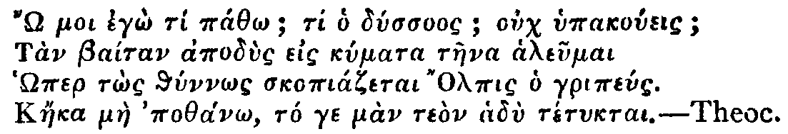
Alas! What will become of me! Wretch that I am! Will you not hear me? I'll throw off my Cloaths, and take a Leap into that Part of the Sea which is so much frequented by Olphis the Fisherman. And tho' I should escape with my Life, I know you will be pleased with it.I shall leave it with the Criticks to determine whether the Place, which this Shepherd so particularly points out, was not the above-mentioned Leucate, or at least some other Lover's Leap, which was supposed to have had the same Effect. I cannot believe, as all the Interpreters do, that the Shepherd means nothing farther here than that he would drown himself, since he represents the Issue of his Leap as doubtful, by adding, That if he should escape with Life2, he knows his Mistress would be pleased with it; which is, according to our Interpretation, that she would rejoice any way to get rid of a Lover who was so troublesome to her.
Mr. Spectator,
'The Lover's Leap, which you mention in your 223d Paper, was generally, I believe, a very effectual Cure for Love, and not only for Love, but for all other Evils. In short, Sir, I am afraid it was such a Leap as that which Hero took to get rid of her Passion for Leander. A Man is in no Danger of breaking his Heart, who breaks his Neck to prevent it. I know very well the Wonders which ancient Authors relate concerning this Leap; and in particular, that very many Persons who tried it, escaped not only with their Lives but their Limbs. If by this Means they got rid of their Love, tho' it may in part be ascribed to the Reasons you give for it; why may not we suppose that the cold Bath into which they plunged themselves, had also some Share in their Cure? A Leap into the Sea or into any Creek of Salt Waters, very often gives a new Motion to the Spirits, and a new Turn to the Blood; for which Reason we prescribe it in Distempers which no other Medicine will reach. I could produce a Quotation out of a very venerable Author, in which the Frenzy produced by Love, is compared to that which is produced by the Biting of a mad Dog. But as this Comparison is a little too coarse for your Paper, and might look as if it were cited to ridicule the Author who has made use of it; I shall only hint at it, and desire you to consider whether, if the Frenzy produced by these two different Causes be of the same Nature, it may not very properly be cured by the same Means.
I am, Sir,
Your most humble Servant, and Well-wisher,
Esculapius.'
Mr. Spectator,
'I am a young Woman crossed in Love. My Story is very long and melancholy. To give you the heads of it: A young Gentleman, after having made his Applications to me for three Years together, and filled my Head with a thousand Dreams of Happiness, some few Days since married another. Pray tell me in what Part of the World your Promontory lies, which you call The Lover's Leap, and whether one may go to it by Land? But, alas, I am afraid it has lost its Virtue, and that a Woman of our Times would find no more Relief in taking such a Leap, than in singing an Hymn to Venus. So that I must cry out with Dido in Dryden's Virgil,Ah! cruel Heaven, that made no Cure for Love!Your disconsolate Servant,
Athenais.'
Mister Spictatur,
' My Heart is so full of Lofes and Passions for Mrs. Gwinifrid, and she is so pettish and overrun with Cholers against me, that if I had the good Happiness to have my Dwelling (which is placed by my Creat-Cranfather upon the Pottom of an Hill) no farther Distance but twenty Mile from the Lofer's Leap, I would indeed indeafour to preak my Neck upon it on Purpose. Now, good Mister Spictatur of Crete Prittain, you must know it there is in Caernaruanshire a fery pig Mountain, the Glory of all Wales, which is named Penmainmaure, and you must also know, it iss no great Journey on Foot from me; but the Road is stony and bad for Shooes. Now, there is upon the Forehead of this Mountain a very high Rock, (like a Parish Steeple) that cometh a huge deal over the Sea; so when I am in my Melancholies, and I do throw myself from it, I do desire my fery good Friend to tell me in his Spictatur, if I shall be cure of my grefous Lofes; for there is the Sea clear as Glass, and as creen as the Leek: Then likewise if I be drown, and preak my Neck, if Mrs. Gwinifrid will not lose me afterwards. Pray be speedy in your Answers, for I am in crete Haste, and it is my Tesires to do my Pusiness without Loss of Time. I remain with cordial Affections, your ever lofing Friend,
Davyth ap Shenkyn.'
P. S. 'My Law-suits have brought me to London, but I have lost my Causes; and so have made my Resolutions to go down and leap before the Frosts begin; for I am apt to take Colds.'
| There is now Printing by Subscription two Volumes of the SpectatorS on
a large Character in Octavo; the Price of the two Vols. well Bound and
Gilt two Guineas. Those who are inclined to Subscribe, are desired to
make their first Payments to Jacob Tonson, Bookseller in the Strand,
the Books being so near finished, that they will be ready for the
Subscribers at or before Christmas next. The Third and Fourth Volumes of the Lucubrations of Isaac Bickerstaff, Esq., are ready to be delivered at the same Place. N .B. The Author desires that such Gentlemen who have not received their Books for which they have Subscribed, would be pleased to signify the same to Mr. Tonson. |
No. 228 |
Wednesday, November 21, 1711 |
Steele |
Percunctatorem fugito, nam Garrulus idem est.
Hor.
Mr. Spectator,
'Plutarch tells us, that Caius Gracchus, the Roman, was frequently hurried by his Passion into so loud and tumultuous a way of Speaking, and so strained his Voice as not to be able to proceed. To remedy this Excess, he had an ingenious Servant, by Name Licinius, always attended him with a Pitch-pipe, or Instrument to regulate the Voice; who, whenever he heard his Master begin to be high, immediately touched a soft Note; at which,'tis said, Caius would presently abate and grow calm.
'Upon recollecting this Story, I have frequently wondered that this useful Instrument should have been so long discontinued; especially since we find that this good Office of Licinius has preserved his Memory for many hundred Years, which, methinks, should have encouraged some one to have revived it, if not for the publick Good, yet for his own Credit. It may be objected, that our loud Talkers are so fond of their own Noise, that they would not take it well to be check'd by their Servants: But granting this to be true, surely any of their Hearers have a very good Title to play a soft Note in their own Defence. To be short, no Licinius appearing and the Noise increasing, I was resolved to give this late long Vacation to the Good of my Country; and I have at length, by the Assistance of an ingenious Artist, (who works to the Royal Society) almost compleated my Design, and shall be ready in a short Time to furnish the Publick with what Number of these Instruments they please, either to lodge at Coffee-houses, or carry for their own private Use. In the mean time I shall pay that Respect to several Gentlemen, who I know will be in Danger of offending against this Instrument, to give them notice of it by private Letters, in which I shall only write, Get a Licinius.
'I should now trouble you no longer, but that I must not conclude without desiring you to accept one of these Pipes, which shall be left for you with Buckley; and which I hope will be serviceable to you, since as you are silent yourself you are most open to the Insults of the Noisy.
I am, Sir, &c.
W. B.
'I had almost forgot to inform you, that as an Improvement in this Instrument, there will be a particular Note, which I call a Hush-Note; and this is to be made use of against a long Story, Swearing, Obsceneness, and the like.
No. 229 |
Thursday, November 22, 1711 |
Addison |
—Spirat adhuc amor,
Vivuntque commissi calores
Æoliæ fidibus puellæ.
Hor.
Ille mî par esse deo videtur,
Ille, si fas est, superare divos,
Qui sedens adversus identidem te,
Spectat, et audit.
Dulce ridentem, misero quod omnis
Eripit sensus mihi: nam simul te,
Lesbia, adspexi, nihil est super mî
Quod loquar amens.
Lingua sed torpet, tenuis sub artus
Flamnia dimanat, sonitu suopte
Tinniunt aures, gemina teguntur
Lumina nocte.
Heureux! qui prés de toi, pour toi seule soûpire:
Qui jouït du plaisir de t'entendre parler:
Qui te voit quelquefois doucement lui soûrire.
Les Dieux, dans son bonheur, peuvent-ils l'égaler?
Je sens de veine en veine une subtile flamme
Courir par tout mon corps, si-tost que je te vois:
Et dans les doux transports, où s'egare mon ame,
Je ne sçaurois trouver de langue, ni de voix.
Un nuage confus se répand sùr ma vuë,
Je n'entens plus, je tombe en de douces langueurs;
Et pâle, sans haleine, interdite, esperduë,
Un frisson me saisit, je tremble, je me meurs.
| I | Blest as th'immortal Gods is he, The Youth who fondly sits by thee, And hears and sees thee all the while Softly speak and sweetly smile. |
| II | 'Twas this deprived my Soul of Rest, And raised such Tumults in my Breast; For while I gaz'd, in Transport tost, My Breath was gone, my Voice was lost: |
| III | My Bosom glowed; the subtle Flame Ran quick through all my vital Frame; O'er my dim Eyes a Darkness hung; My Ears with hollow Murmurs rung. |
| IV | In dewy Damps my Limbs were chil'd; My Blood with gentle Horrors thrill'd; My feeble Pulse forgot to play; I fainted, sunk, and dy'd away. |
'When others entered Antiochus was entirely unaffected. But when Stratonice came in, as she often did, he shewed all the symptoms described by Sappho, the faltering voice, the burning blush, the languid eye, the sudden sweat, the tumultuous pulse; and at length, the passion overcoming his spirits, a swoon and mortal paleness.'return
No. 230 |
Friday, November 23, 1711 |
Steele |
Homines ad Deos nullâ re propiùs accedunt, quam salutem Hominibus dando.
Tull.
To MAXIMUS.T.
What I should gladly do for any Friend of yours, I think I may now with Confidence request for a Friend of mine. Arrianus Maturius is the most considerable Man of his Country; when I call him so, I do not speak with Relation to his Fortune, though that is very plentiful, but to his Integrity, Justice, Gravity, and Prudence; his Advice is useful to me in Business, and his Judgment in Matters of Learning: His Fidelity, Truth, and good Understanding, are very great; besides this, he loves me as you do, than which I cannot say any thing that signifies a warmer Affection. He has nothing that's aspiring; and though he might rise to the highest Order of Nobility, he keeps himself in an inferior Rank; yet I think my self bound to use my Endeavours to serve and promote him; and would therefore find the Means of adding something to his Honours while he neither expects nor knows it, nay, though he should refuse it. Something, in short, I would have for him that may be honourable, but not troublesome; and I entreat that you will procure him the first thing of this kind that offers, by which you will not only oblige me, but him also; for though he does not covet it, I know he will be as grateful in acknowledging your Favour as if he had asked it2.
Mr. Spectator,
The Reflections in some of your Papers on the servile manner of Education now in Use, have given Birth to an Ambition, which, unless you discountenance it, will, I doubt, engage me in a very difficult, tho not ungrateful Adventure. I am about to undertake, for the sake of the British Youth, to instruct them in such a manner, that the most dangerous Page in Virgil or Homer may be read by them with much Pleasure, and with perfect Safety to their Persons.
Could I prevail so far as to be honoured with the Protection of some few of them, (for I am not Hero enough to rescue many) my Design is to retire with them to an agreeable Solitude; though within the Neighbourhood of a City, for the Convenience of their being instructed in Musick, Dancing, Drawing, Designing, or any other such Accomplishments, which it is conceived may make as proper Diversions for them, and almost as pleasant, as the little sordid Games which dirty School-boys are so much delighted with. It may easily be imagined, how such a pretty Society, conversing with none beneath themselves, and sometimes admitted as perhaps not unentertaining Parties amongst better Company, commended and caressed for their little Performances, and turned by such Conversations to a certain Gallantry of Soul, might be brought early acquainted with some of the most polite English Writers. This having given them some tolerable Taste of Books, they would make themselves Masters of the Latin Tongue by Methods far easier than those in Lilly, with as little Difficulty or Reluctance as young Ladies learn to speak French, or to sing Italian Operas. When they had advanced thus far, it would be time to form their Taste something more exactly: One that had any true Relish of fine Writing, might, with great Pleasure both to himself and them, run over together with them the best Roman Historians, Poets, and Orators, and point out their more remarkable Beauties; give them a short Scheme of Chronology, a little View of Geography, Medals, Astronomy, or what else might best feed the busy inquisitive Humour so natural to that Age. Such of them as had the least Spark of Genius, when it was once awakened by the shining Thoughts and great Sentiments of those admired Writers, could not, I believe, be easily withheld from attempting that more difficult Sister Language, whose exalted Beauties they would have heard so often celebrated as the Pride and Wonder of the whole Learned World. In the mean while, it would be requisite to exercise their Style in Writing any light Pieces that ask more of Fancy than of Judgment: and that frequently in their Native Language, which every one methinks should be most concerned to cultivate, especially Letters, in which a Gentleman must have so frequent Occasions to distinguish himself. A Set of genteel good-natured Youths fallen into such a Manner of Life, would form almost a little Academy, and doubtless prove no such contemptible Companions, as might not often tempt a wiser Man to mingle himself in their Diversions, and draw them into such serious Sports as might prove nothing less instructing than the gravest Lessons. I doubt not but it might be made some of their Favourite Plays, to contend which of them should recite a beautiful Part of a Poem or Oration most gracefully, or sometimes to join in acting a Scene of Terence, Sophocles, or our own Shakespear. The Cause of Milo might again be pleaded before more favourable Judges, Cæsar a second time be taught to tremble, and another Race of Athenians be afresh enraged at the Ambition of another Philip. Amidst these noble Amusements, we could hope to see the early Dawnings of their Imagination daily brighten into Sense, their Innocence improve into Virtue, and their unexperienced Good-nature directed to a generous Love of their Country.
I am, &c.
No. 231 |
Saturday, November 24, 1711 |
Addison |
O Pudor! O Pietas!
Mart.
Mr. Spectator1,
You, who are no Stranger to Publick Assemblies, cannot but have observed the Awe they often strike on such as are obliged to exert any Talent before them. This is a sort of elegant Distress, to which ingenuous Minds are the most liable, and may therefore deserve some remarks in your Paper. Many a brave Fellow, who has put his Enemy to Flight in the Field, has been in the utmost Disorder upon making a Speech before a Body of his Friends at home: One would think there was some kind of Fascination in the Eyes of a large Circle of People, when darting altogether upon one Person. I have seen a new Actor in a Tragedy so bound up by it as to be scarce able to speak or move, and have expected he would have died above three Acts before the Dagger or Cup of Poison were brought in. It would not be amiss, if such an one were at first introduced as a Ghost or a Statue, till he recovered his Spirits, and grew fit for some living Part.
As this sudden Desertion of one's self shews a Diffidence, which is not displeasing, it implies at the same time the greatest Respect to an Audience that can be. It is a sort of mute Eloquence, which pleads for their Favour much better than Words could do; and we find their Generosity naturally moved to support those who are in so much Perplexity to entertain them. I was extremely pleased with a late Instance of this Kind at the Opera of Almahide, in the Encouragement given to a young Singer2, whose more than ordinary Concern on her first Appearance, recommended her no less than her agreeable Voice, and just Performance. Meer Bashfulness without Merit is awkward; and Merit without Modesty, insolent. But modest Merit has a double Claim to Acceptance, and generally meets with as many Patrons as Beholders.
I am, &c.
—Linguá melior, sedfrigida belloA bold Tongue and a feeble Arm are the Qualifications of Drances in Virgil; as Homer, to express a Man both timorous and sawcy, makes use of a kind of Point, which is very rarely to be met with in his Writings; namely, that he had the Eyes of a Dog, but the Heart of a Deer3.
Dextera—
No. 232 |
Monday, November 26, 1711 |
Hughes1 |
Nihil largiundo gloriam adeptus est.
Sallust.
'Well then', says Sir Andrew, 'we go off with the Prayers and good Wishes of the Beggars, and perhaps too our Healths will be drunk at the next Ale-house: So all we shall be able to value ourselves upon, is, that we have promoted the Trade of the Victualler and the Excises of the Government. But how few Ounces of Wooll do we see upon the Backs of those poor Creatures? And when they shall next fall in our Way, they will hardly be better dressd; they must always live in Rags to look like Objects of Compassion. If their Families too are such as they are represented, tis certain they cannot be better clothed, and must be a great deal worse fed: One would think Potatoes should be all their Bread, and their Drink the pure Element; and then what goodly Customers are the Farmers like to have for their Wooll, Corn and Cattle? Such Customers, and such a Consumption, cannot choose but advance the landed Interest, and hold up the Rents of the Gentlemen.Sir Andrew then went on to affirm, That the Reduction of the Prices of our Manufactures by the Addition of so many new Hands, would be no Inconvenience to any Man: But observing I was something startled at the Assertion, he made a short Pause, and then resumed the Discourse.
'But of all Men living, we Merchants, who live by Buying and Selling, ought never to encourage Beggars. The Goods which we export are indeed the Product of the lands, but much the greatest Part of their Value is the Labour of the People: but how much of these People's Labour shall we export whilst we hire them to sit still? The very Alms they receive from us, are the Wages of Idleness. I have often thought that no Man should be permitted to take Relief from the Parish, or to ask it in the Street, till he has first purchased as much as possible of his own Livelihood by the Labour of his own Hands; and then the Publick ought only to be taxed to make good the Deficiency. If this Rule was strictly observed, we should see every where such a Multitude of new Labourers, as would in all probability reduce the Prices of all our Manufactures. It is the very Life of Merchandise to buy cheap and sell dear. The Merchant ought to make his Outset as cheap as possible, that he may find the greater Profit upon his Returns; and nothing will enable him to do this like the Reduction of the Price of Labour upon all our Manufactures. This too would be the ready Way to increase the Number of our Foreign Markets: The Abatement of the Price of the Manufacture would pay for the Carriage of it to more distant Countries; and this Consequence would be equally beneficial both to the Landed and Trading Interests. As so great an Addition of labouring Hands would produce this happy Consequence both to the Merchant and the Gentle man; our Liberality to common Beggars, and every other Obstruction to the Increase of Labourers, must be equally pernicious to both.
'It may seem, says he, a Paradox, that the Price of Labour should be reduced without an Abatement of Wages, or that Wages can be abated without any Inconvenience to the Labourer, and yet nothing is more certain than that both those Things may happen. The Wages of the Labourers make the greatest Part of the Price of every Thing that is useful; and if in Proportion with the Wages the Prices of all other Things should be abated, every Labourer with less Wages would be still able to purchase as many Necessaries of Life; where then would be the Inconvenience? But the Price of Labour may be reduced by the Addition of more Hands to a Manufacture, and yet the Wages of Persons remain as high as ever. The admirable Sir William Petty2 has given Examples of this in some of his Writings: One of them, as I remember, is that of a Watch, which I shall endeavour to explain so as shall suit my present Purpose. It is certain that a single Watch could not be made so cheap in Proportion by one only Man, as a hundred Watches by a hundred; for as there is vast Variety in the Work, no one Person could equally suit himself to all the Parts of it; the Manufacture would be tedious, and at last but clumsily performed: But if an hundred Watches were to be made by a hundred Men, the Cases may be assigned to one, the Dials to another, the Wheels to another, the Springs to another, and every other Part to a proper Artist; as there would be no need of perplexing any one Person with too much Variety, every one would be able to perform his single Part with greater Skill and Expedition; and the hundred Watches would be finished in one fourth Part of the Time of the first one, and every one of them at one fourth Part of the Cost, tho' the Wages of every Man were equal. The Reduction of the Price of the Manufacture would increase the Demand of it, all the same Hands would be still employed and as well paid. The same Rule will hold in the Clothing, the Shipping, and all the other Trades whatsoever. And thus an Addition of Hands to our Manufactures will only reduce the Price of them; the Labourer will still have as much Wages, and will consequently be enabled to purchase more Conveniencies of Life; so that every Interest in the Nation would receive a Benefit from the Increase of our Working People.Z.5
Besides, I see no Occasion for this Charity to common Beggars, since every Beggar is an Inhabitant of a Parish, and every Parish is taxed to the Maintenance of their own Poor3.
For my own part, I cannot be mightily pleased with the Laws which have done this, which have provided better to feed than employ the Poor. We have a Tradition from our Forefathers, that after the first of those Laws was made, they were insulted with that famous Song;Hang Sorrow, and cast away Care,And if we will be so good-natured as to maintain them without Work, they can do no less in Return than sing us The Merry Beggars.
The Parish is bound to find us, &c.
What then? Am I against all Acts of Charity? God forbid! I know of no Virtue in the Gospel that is in more pathetical Expressions recommended to our Practice.I was hungry and ye4 gave me no Meat, thirsty and ye gave me no Drink, naked and ye clothed me not, a Stranger and ye took me not in, sick and in prison and ye visited me not.Our Blessed Saviour treats the Exercise or Neglect of Charity towards a poor Man, as the Performance or Breach of this Duty towards himself. I shall endeavour to obey the Will of my Lord and Master: And therefore if an industrious Man shall submit to the hardest Labour and coarsest Fare, rather than endure the Shame of taking Relief from the Parish, or asking it in the Street, this is the Hungry, the Thirsty, the Naked; and I ought to believe, if any Man is come hither for Shelter against Persecution or Oppression, this is the Stranger, and I ought to take him in. If any Countryman of our own is fallen into the Hands of Infidels, and lives in a State of miserable Captivity, this is the Man in Prison, and I should contribute to his Ransom. I ought to give to an Hospital of Invalids, to recover as many useful Subjects as I can; but I shall bestow none of my Bounties upon an Alms-house of idle People; and for the same Reason I should not think it a Reproach to me if I had withheld my Charity from those common Beggars. But we prescribe better Rules than we are able to practise; we are ashamed not to give into the mistaken Customs of our Country: But at the same time, I cannot but think it a Reproach worse than that of common Swearing, that the Idle and the Abandoned are suffered in the Name of Heaven and all that is sacred, to extort from Christian and tender Minds a Supply to a profligate Way of Life, that is always to be supported, but never relieved.
No. 233 |
Tuesday, November 27, 1711 |
Addison |
—Tanquam hec sint nostri medicina furoris,
Aut Deus ille malis hominum mitescere discat. Virg.
Battus, the Son of Menalcas the Sicilian, leaped for Bombyca the Musician: Got rid of his Passion with the Loss of his Right Leg and Arm, which were broken in the Fall.C.
Melissa, in Love with Daphnis, very much bruised, but escaped with Life.
Cynisca, the Wife of Æschines, being in Love with Lycus; and Æschines her Husband being in Love with Eurilla; (which had made this married Couple very uneasy to one another for several Years) both the Husband and the Wife took the Leap by Consent; they both of them escaped, and have lived very happily together ever since.
Larissa, a Virgin of Thessaly, deserted by Plexippus, after a Courtship of three Years; she stood upon the Brow of the Promontory for some time, and after having thrown down a Ring, a Bracelet, and a little Picture, with other Presents which she had received from Plexippus, she threw her self into the Sea, and was taken up alive.
N. B. Larissa, before she leaped, made an Offering of a Silver Cupid in the Temple of Apollo.
Simaetha, in Love with Daphnis the Myndian, perished in the Fall.
Charixus, the Brother of Sappho, in Love with Rhodope the Courtesan, having spent his whole Estate upon her, was advised by his Sister to leap in the Beginning of his Amour, but would not hearken to her till he was reduced to his last Talent; being forsaken by Rhodope, at length resolved to take the Leap. Perished in it.
Aridæus, a beautiful Youth of Epirus, in Love with Praxinoe, the Wife of Thespis, escaped without Damage, saving only that two of his Fore-Teeth were struck out and his Nose a little flatted.
Cleora, a Widow of Ephesus, being inconsolable for the Death of her Husband, was resolved to take this Leap in order to get rid of her Passion for his Memory; but being arrived at the Promontory, she there met with Dimmachus the Miletian, and after a short Conversation with him, laid aside the Thoughts of her Leap, and married him in the Temple of Apollo.
N. B. Her Widow's Weeds are still to be seen hanging up in the Western Corner of the Temple.
Olphis, the Fisherman, having received a Box on the Ear from Thestylis the Day before, and being determined to have no more to do with her, leaped, and escaped with Life.
Atalanta, an old Maid, whose Cruelty had several Years before driven two or three despairing Lovers to this Leap; being now in the fifty fifth Year of her Age, and in Love with an Officer of Sparta, broke her Neck in the Fall.
Hipparchus being passionately fond of his own Wife who was enamoured of Bathyllus, leaped, and died of his Fall; upon which his Wife married her Gallant.
Tettyx, the Dancing-Master, in Love with Olympia an Athenian Matron, threw himself from the Rock with great Agility, but was crippled in the Fall.
Diagoras, the Usurer, in Love with his Cook-Maid; he peeped several times over the Precipice, but his Heart misgiving him, he went back, and married her that Evening.
Cinædus, after having entered his own Name in the Pythian Records, being asked the Name of the Person whom he leaped for, and being ashamed to discover it, he was set aside, and not suffered to leap.
Eunica, a Maid of Paphos, aged Nineteen, in Love with Eurybates. Hurt in the Fall, but recovered.
N. B. This was her second Time of Leaping.
Hesperus, a young Man of Tarentum, in Love with his Master's Daughter. Drowned, the Boats not coming in soon enough to his Relief.
Sappho, the Lesbian, in Love with Phaon, arrived at the Temple of Apollo, habited like a Bride in Garments as white as Snow. She wore a Garland of Myrtle on her Head, and carried in her Hand the little Musical Instrument of her own Invention. After having sung an Hymn to Apollo, she hung up her Garland on one Side of his Altar, and her Harp on the other. She then tuck'd up her Vestments, like a Spartan Virgin, and amidst thousands of Spectators, who were anxious for her Safety, and offered up Vows for her Deliverance, marched1 directly forwards to the utmost Summit of the Promontory, where after having repeated a Stanza of her own Verses, which we could not hear, she threw herself off the Rock with such an Intrepidity as was never before observed in any who had attempted that dangerous Leap. Many who were present related, that they saw her fall into the Sea, from whence she never rose again; tho' there were others who affirmed, that she never came to the Bottom of her Leap, but that she was changed into a Swan as she fell, and that they saw her hovering in the Air under that Shape. But whether or no the Whiteness and Fluttering of her Garments might not deceive those who looked upon her, or whether she might not really be metamorphosed into that musical and melancholy Bird, is still a Doubt among the Lesbians.
Alcæus, the famous Lyrick Poet, who had for some time been passionately in Love with Sappho, arrived at the Promontory of Leucate that very Evening, in order to take the Leap upon her Account; but hearing that Sappho had been there before him, and that her Body could be no where found, he very generously lamented her Fall, and is said to have written his hundred and twenty fifth Ode upon that Occasion.
Leaped in this Olympiad 2502 Males 124 Females 126 Cured 1203 Males 51 Females 69
No. 234 |
Wednesday, November 28, 1711 |
Steele |
Vellum in amicitia erraremus.
Hor.1
To the Spectator.
Devonshire, Nov. 14, 1711.
Sir,
There arrived in this Neighbourhood two Days ago one of your gay Gentlemen of the Town, who being attended at his Entry with a Servant of his own, besides a Countryman he had taken up for a Guide, excited the Curiosity of the Village to learn whence and what he might be. The Countryman (to whom they applied as most easy of Access) knew little more than that the Gentleman came from London to travel and see Fashions, and was, as he heard say, a Free-thinker: What Religion that might be, he could not tell; and for his own Part, if they had not told him the Man was a Free-thinker, he should have guessed, by his way of talking, he was little better than a Heathen; excepting only that he had been a good Gentleman to him, and made him drunk twice in one Day, over and above what they had bargained for.
I do not look upon the Simplicity of this, and several odd Inquiries with which I shall not trouble you to be wondered at, much less can I think that our Youths of fine Wit, and enlarged Understandings, have any Reason to laugh. There is no Necessity that every Squire in Great Britain should know what the Word Free-thinker stands for; but it were much to be wished, that they who value themselves upon that conceited Title were a little better instructed in what it ought to stand for; and that they would not perswade themselves a Man is really and truly a Free-thinker in any tolerable Sense, meerly by virtue of his being an Atheist, or an Infidel of any other Distinction. It may be doubted, with good Reason, whether there ever was in Nature a more abject, slavish, and bigotted Generation than the Tribe of Beaux Esprits, at present so prevailing in this Island. Their Pretension to be Free-thinkers, is no other than Rakes have to be Free-livers, and Savages to be Free-men, that is, they can think whatever they have a Mind to, and give themselves up to whatever Conceit the Extravagancy of their Inclination, or their Fancy, shall suggest; they can think as wildly as they talk and act, and will not endure that their Wit should be controuled by such formal Things as Decency and common Sense: Deduction, Coherence, Consistency, and all the Rules of Reason they accordingly disdain, as too precise and mechanical for Men of a liberal Education.
This, as far as I could ever learn from their Writings, or my own Observation, is a true Account of the British Free-thinker. Our Visitant here, who gave occasion to this Paper, has brought with him a new System of common Sense, the Particulars of which I am not yet acquainted with, but will lose no Opportunity of informing my self whether it contain any thing3 worth Mr. Spectator'S Notice. In the mean time, Sir, I cannot but think it would be for the good of Mankind, if you would take this Subject into your own Consideration, and convince the hopeful Youth of our Nation, that Licentiousness is not Freedom; or, if such a Paradox will not be understood, that a Prejudice towards Atheism is not Impartiality.
I am, Sir, Your most humble Servant,
Philonous.
Splendide mendax.Hor.
No. 235 |
Thursday, November 29, 1711 |
Addison |
Populares
Vincentum strepitus Hor.
No. 236 |
Friday, November 30, 1711 |
Steele |
—Dare Jura maritis.T.
Hor.
Mr. Spectator,
'You have not spoken in so direct a manner upon the Subject of Marriage as that important Case deserves. It would not be improper to observe upon the Peculiarity in the Youth of Great Britain, of railing and laughing at that Institution; and when they fall into it, from a profligate Habit of Mind, being insensible of the Satisfaction1 in that Way of Life, and treating their Wives with the most barbarous Disrespect.
'Particular Circumstances and Cast of Temper, must teach a Man the Probability of mighty Uneasinesses in that State, (for unquestionably some there are whose very Dispositions are strangely averse to conjugal Friendship;) but no one, I believe, is by his own natural Complexion prompted to teaze and torment another for no Reason but being nearly allied to him: And can there be any thing more base, or serve to sink a Man so much below his own distinguishing Characteristick, (I mean Reason) than returning Evil for Good in so open a Manner, as that of treating an helpless Creature with Unkindness, who has had so good an Opinion of him as to believe what he said relating to one of the greatest Concerns of Life, by delivering her Happiness in this World to his Care and Protection? Must not that Man be abandoned even to all manner of Humanity, who can deceive a Woman with Appearances of Affection and Kindness, for no other End but to torment her with more Ease and Authority? Is any Thing more unlike a Gentleman, than when his Honour is engaged for the performing his Promises, because nothing but that can oblige him to it, to become afterwards false to his Word, and be alone the Occasion of Misery to one whose Happiness he but lately pretended was dearer to him than his own? Ought such a one to be trusted in his common Affairs? or treated but as one whose Honesty consisted only in his Incapacity of being otherwise?
'There is one Cause of this Usage no less absurd than common, which takes place among the more unthinking Men: and that is the Desire to appear to their Friends free and at Liberty, and without those Trammels they have so much ridiculed. To avoid2 this they fly into the other Extream, and grow Tyrants that they may seem Masters. Because an uncontroulable Command of their own Actions is a certain Sign of entire Dominion, they won't so much as recede from the Government even in one Muscle, of their Faces. A kind Look they believe would be fawning, and a civil Answer yielding the Superiority. To this must we attribute an Austerity they betray in every Action: What but this can put a Man out of Humour in his Wife's Company, tho' he is so distinguishingly pleasant every where else? The Bitterness of his Replies, and the Severity of his Frowns to the tenderest of Wives, clearly demonstrate, that an ill-grounded Fear of being thought too submissive, is at the Bottom of this, as I am willing to call it, affected Moroseness; but if it be such only, put on to convince his Acquaintance of his entire Dominion, let him take Care of the Consequence, which will be certain, and worse than the present Evil; his seeming Indifference will by Degrees grow into real Contempt, and if it doth not wholly alienate the Affections of his Wife for ever from him, make both him and her more miserable than if it really did so.
However inconsistent it may appear, to be thought a well-bred Person has no small Share in this clownish Behaviour: A Discourse therefore relating to good Breeding towards a loving and a tender Wife, would be of great Use to this Sort of Gentlemen. Could you but once convince them, that to be civil at least is not beneath the Character of a Gentleman, nor even tender Affection towards one who would make it reciprocal, betrays any Softness or Effeminacy that the most masculine Disposition need be ashamed of; could you satisfy them of the Generosity of voluntary Civility, and the Greatness of Soul that is conspicuous in Benevolence without immediate Obligations; could you recommend to People's Practice the Saying of the Gentleman quoted in one of your Speculations, That he thought it incumbent upon him to make the Inclinations of a Woman of Merit go along with her Duty: Could you, I say, perswade these Men of the Beauty and Reasonableness of this Sort of Behaviour, I have so much Charity for some of them at least, to believe you would convince them of a Thing they are only ashamed to allow: Besides, you would recommend that State in its truest, and consequently its most agreeable Colours; and the Gentlemen who have for any Time been such professed Enemies to it, when Occasion should serve, would return you their Thanks for assisting their Interest in prevailing over their Prejudices. Marriage in general would by this Means be a more easy and comfortable Condition; the Husband would be no where so well satisfied as in his own Parlour, nor the Wife so pleasant as in the Company of her Husband: A Desire of being agreeable in the Lover would be increased in the Husband, and the Mistress be more amiable by becoming the Wife. Besides all which, I am apt to believe we should find the Race of Men grow wiser as their Progenitors grew kinder, and the Affection of the Parents would be conspicuous in the Wisdom of their Children; in short, Men would in general be much better humoured than they are, did not they so frequently exercise the worst Turns of their Temper where they ought to exert the best.
MR. Spectator,
I am a Woman who left the Admiration of this whole Town, to throw myself (for3 Love of Wealth) into the Arms of a Fool. When I married him, I could have had any one of several Men of Sense who languished for me; but my Case is just. I believed my superior Understanding would form him into a tractable Creature. But, alas, my Spouse has Cunning and Suspicion, the inseparable Companions of little Minds; and every Attempt I make to divert, by putting on an agreeable Air, a sudden Chearfulness, or kind Behaviour, he looks upon as the first Act towards an Insurrection against his undeserved Dominion over me. Let every one who is still to chuse, and hopes to govern a Fool, remember
Tristissa.
St. Martins, November 25.
Mr. Spectator,
This is to complain of an evil Practice which I think very well deserves a Redress, though you have not as yet taken any Notice of it: If you mention it in your Paper, it may perhaps have a very good Effect. What I mean is the Disturbance some People give to others at Church, by their Repetition of the Prayers after the Minister, and that not only in the Prayers, but also the Absolution and the Commandments fare no better, winch are in a particular Manner the Priest's Office: This I have known done in so audible a manner, that sometimes their Voices have been as loud as his. As little as you would think it, this is frequently done by People seemingly devout. This irreligious Inadvertency is a Thing extremely offensive: But I do not recommend it as a Thing I give you Liberty to ridicule, but hope it may be amended by the bare Mention.
Sir, Your very humble Servant,
T. S.
No. 237 |
Saturday, December 1, 1711 |
Addison |
Visu carentem magna pars veri latet.
Senec. in Œdip.
Others apart sate on a Hill retired,In our present Condition, which is a middle State, our Minds are, as it were, chequered with Truth and Falshood; and as our Faculties are narrow, and our Views imperfect, it is impossible but our Curiosity must meet with many Repulses. The Business of Mankind in this Life being rather to act than to know, their Portion of Knowledge is dealt to them accordingly.
In Thoughts more elevate, and reason'd high
Of Providence, Foreknowledge, Will, and Fate,
First Fate, Freewill, Foreknowledge absolute,
And found no End in wandring Mazes lost.1
No. 238 |
Monday, December 3, 1711 |
Steele |
Nequicquam populo bibulas donaveris Aures;
Respue quod non es
Persius, Sat. 4.
So softens and disarms the Mind,First we flatter ourselves, and then the Flattery of others is sure of Success. It awakens our Self-Love within, a Party which is ever ready to revolt from our better Judgment, and join the Enemy without. Hence it is, that the Profusion of Favours we so often see poured upon the Parasite, are represented to us, by our Self-Love, as Justice done to Man, who so agreeably reconciles us to our selves. When we are overcome by such soft Insinuations and ensnaring Compliances, we gladly recompense the Artifices that are made use of to blind our Reason, and which triumph over the Weaknesses of our Temper and Inclinations.
That not one Arrow can Resistance find.
Mr. Spectator,T.
'The Translations which you have lately given us from the Greek, in some of your last Papers, have been the Occasion of my looking into some of those Authors; among whom I chanced on a Collection of Letters which pass under the Name of Aristænetus. Of all the Remains of Antiquity, I believe there can be Nothing produc'd of an Air so gallant and polite; each Letter contains a little Novel or Adventure, which is told with all the Beauties of Language and heightened with a Luxuriance of Wit. There are several of them translated3, but with such wide Deviations from the Original, and in a Style so far differing from the Authors, that the Translator seems rather to have taken Hints for the expressing his own Sense and Thoughts, than to have endeavoured to render those of Aristænetus. In the following Translation, I have kept as near the Meaning of the Greek as I could, and have only added a few Words to make the Sentences in English fit together a little better than they would otherwise have done. The Story seems to be taken from that of Pygmalion and the Statue in Ovid: Some of the Thoughts are of the same Turn, and the whole is written in a kind of Poetical Prose.
Philopinax to Chromation.
"Never was Man more overcome with so fantastical a Passion as mine. I have painted a beautiful Woman, and am despairing, dying for the Picture. My own Skill has undone me; 'tis not the Dart of Venus, but my own Pencil has thus wounded me. Ah me! with what Anxiety am I necessitated to adore my own Idol? How miserable am I, whilst every one must as much pity the Painter as he praises the Picture, and own my Torment more than equal to my Art. But why do I thus complain? Have there not been more unhappy and unnatural Passions than mine? Yes, I have seen the Representations of Phædra, Narcissus, and Pasiphæ. Phædra was unhappy in her Love; that of Pasiphæ was monstrous; and whilst the other caught at his beloved Likeness, he destroyed the watery Image, which ever eluded his Embraces. The Fountain represented Narcissus to himself, and the Picture both that and him, thirsting after his adored Image. But I am yet less unhappy, I enjoy her Presence continually, and if I touch her, I destroy not the beauteous Form, but she looks pleased, and a sweet Smile sits in the charming Space which divides her Lips. One would swear that Voice and Speech were issuing out, and that one's Ears felt the melodious Sound. How often have I, deceived by a Lover's Credulity, hearkned if she had not something to whisper me? and when frustrated of my Hopes, how often have I taken my Revenge in Kisses from her Cheeks and Eyes, and softly wooed her to my Embrace, whilst she (as to me it seem'd) only withheld her Tongue the more to inflame me. But, Madman that I am, shall I be thus taken with the Representation only of a beauteous Face, and flowing Hair, and thus waste myself and melt to Tears for a Shadow? Ah, sure 'tis something more, 'tis a Reality! for see her Beauties shine out with new Lustre, and she seems to upbraid me with such unkind Reproaches. Oh may I have a living Mistress of this Form, that when I shall compare the Work of Nature with that of Art, I may be still at a loss which to choose, and be long perplex'd with the pleasing Uncertainty.
No. 239 |
Tuesday, December 4, 1711 |
Addison |
Bella, horrida bella!
Virg.
No. 240 |
Wednesday, December 5, 1711 |
Steele |
—Aliter not fit, Avite, liber.T.
Mart.
Mr. Spectator,
I am of one of the most genteel Trades in the City, and understand thus much of liberal Education, as to have an ardent Ambition of being useful to Mankind, and to think That the chief End of Being as to this Life. I had these good Impressions given me from the handsome Behaviour of a learned, generous, and wealthy Man towards me when I first began the World. Some Dissatisfaction between me and my Parents made me enter into it with less Relish of Business than I ought; and to turn off this Uneasiness I gave my self to criminal Pleasures, some Excesses, and a general loose Conduct. I know not what the excellent Man above-mentioned saw in me, but he descended from the Superiority of his Wisdom and Merit, to throw himself frequently into my Company. This made me soon hope that I had something in me worth cultivating, and his Conversation made me sensible of Satisfactions in a regular Way, which I had never before imagined. When he was grown familiar with me, he opened himself like a good Angel, and told me, he had long laboured to ripen me into a Preparation to receive his Friendship and Advice, both which I should daily command, and the Use of any Part of his Fortune, to apply the Measures he should propose to me, for the Improvement of my own. I assure you, I cannot recollect the Goodness and Confusion of the good Man when he spoke to this Purpose to me, without melting into Tears; but in a word, Sir, I must hasten to tell you, that my Heart burns with Gratitude towards him, and he is so happy a Man, that it can never be in my Power to return him his Favours in Kind, but I am sure I have made him the most agreeable Satisfaction I could possibly, in being ready to serve others to my utmost Ability, as far as is consistent with the Prudence he prescribes to me. Dear Mr. Spectator, I do not owe to him only the good Will and Esteem of my own Relations, (who are People of Distinction) the present Ease and Plenty of my Circumstances, but also the Government of my Passions, and Regulation of my Desires. I doubt not, Sir, but in your Imagination such Virtues as these of my worthy Friend, bear as great a Figure as Actions which are more glittering in the common Estimation. What I would ask of you, is to give us a whole Spectator upon Heroick Virtue in common Life, which may incite Men to the same generous Inclinations, as have by this admirable Person been shewn to, and rais'd in,
Sir, Your most humble Servant.
Mr. Spectator,
I am a Country Gentleman, of a good plentiful Estate, and live as the rest of my Neighbours with great Hospitality. I have been ever reckoned among the Ladies the best Company in the World, and have Access as a sort of Favourite. I never came in Publick but I saluted them, tho' in great Assemblies, all round, where it was seen how genteelly I avoided hampering my Spurs in their Petticoats, while I moved amongst them; and on the other side how prettily they curtsied and received me, standing in proper Rows, and advancing as fast as they saw their Elders, or their Betters, dispatch'd by me. But so it is, Mr. Spectator, that all our good Breeding is of late lost by the unhappy Arrival of a Courtier, or Town Gentleman, who came lately among us: This Person where-ever he came into a Room made a profound Bow, and fell back, then recovered with a soft Air, and made a Bow to the next, and so to one or two more, and then took the Gross of the Room, by passing by them in a continued Bow till he arrived at the Person he thought proper particularly to entertain. This he did with so good a Grace and Assurance, that it is taken for the present Fashion; and there is no young Gentlewoman within several Miles of this Place has been kissed ever since his first Appearance among us. We Country Gentlemen cannot begin again and learn these fine and reserved Airs; and our Conversation is at a Stand, till we have your Judgment for or against Kissing, by way of Civility or Salutation; which is impatiently expected by your Friends of both Sexes, but by none so much as
Your humble Servant,
Rustick Sprightly.
December 3, 1711.
Mr. Spectator,
I was the other Night at Philaster1, where I expected to hear your famous Trunk-maker, but was happily disappointed of his Company, and saw another Person who had the like Ambition to distinguish himself in a noisy manner, partly by Vociferation or talking loud, and partly by his bodily Agility. This was a very lusty Fellow, but withal a sort of Beau, who getting into one of the Side-boxes on the Stage before the Curtain drew, was disposed to shew the whole Audience his Activity by leaping over the Spikes; he pass'd from thence to one of the entering Doors, where he took Snuff with a tolerable good Grace, display'd his fine Cloaths, made two or three feint Passes at the Curtain with his Cane, then faced about and appear'd at t'other Door: Here he affected to survey the whole House, bow'd and smil'd at random, and then shew'd his Teeth, which were some of them indeed very white: After this he retired behind the Curtain, and obliged us with several Views of his Person from every Opening.
During the Time of Acting, he appear'd frequently in the Prince's Apartment, made one at the Hunting-match, and was very forward in the Rebellion. If there were no Injunctions to the contrary, yet this Practice must be confess'd to diminish the Pleasure of the Audience, and for that Reason presumptuous and unwarrantable: But since her Majesty's late Command has made it criminal2, you have Authority to take Notice of it.
Sir, Your humble Servant,
Charles Easy.
By her Majesty's Command no Person is to be admitted behind the Scenes.return
No. 241 |
Thursday, December 6, 1711 |
Addison |
—Semperque relinqui
Sola sibi, semper longam incomitata videtur
Ire viam—
Virg.
Mr. Spectator,
Though you have considered virtuous Love inmost of its Distresses, I do not remember that you have given us any Dissertation upon the Absence of Lovers, or laid down any Methods how they should support themselves under those long Separations which they are sometimes forced to undergo. I am at present in this unhappy Circumstance, having parted with the best of Husbands, who is abroad in the Service of his Country, and may not possibly return for some Years. His warm and generous Affection while we were together, with the Tenderness which he expressed to me at parting, make his Absence almost insupportable. I think of him every Moment of the Day, and meet him every Night in my Dreams. Every thing I see puts me in mind of him. I apply myself with more than ordinary Diligence to the Care of his Family and his Estate; but this, instead of relieving me, gives me but so many Occasions of wishing for his Return. I frequent the Rooms where I used to converse with him, and not meeting him there, sit down in his Chair, and fall a weeping. I love to read the Books he delighted in, and to converse with the Persons whom he esteemed. I visit his Picture a hundred times a Day, and place myself over-against it whole Hours together. I pass a great part of my Time in the Walks where I used to lean upon his Arm, and recollect in my Mind the Discourses which have there passed between us: I look over the several Prospects and Points of View which we used to survey together, fix my Eye upon the Objects which he has made me take notice of, and call to mind a thousand [agreeable] Remarks which he has made on those Occasions. I write to him by every Conveyance, and contrary to other People, am always in good Humour when an East-Wind blows, because it seldom fails of bringing me a Letter from him. Let me entreat you, Sir, to give me your Advice upon this Occasion, and to let me know how I may relieve my self in this my Widowhood.
I am, Sir, Your most humble Servant,
Asteria.
It was not kindThe Consolations of Lovers on these Occasions are very extraordinary. Besides those mentioned by Asteria, there are many other Motives of Comfort, which are made use of by absent Lovers.
To leave me like a Turtle, here alone,
To droop and mourn the Absence of my Mate.
When thou art from me, every Place is desert:
And I, methinks, am savage and forlorn.
Thy Presence only 'tis can make me blest,
Heal my unquiet Mind, and tune my Soul.
No. 242 |
Friday, December 7, 1711 |
Steele |
Creditur, ex medio quia res arcessit, habereT.
Sudoris minimum—
Hor.
Mr. Spectator,
Your Speculations do not so generally prevail over Men's Manners as I could wish. A former Paper of yours1 concerning the Misbehaviour of People, who are necessarily in each other's Company in travelling, ought to have been a lasting Admonition against Transgressions of that Kind: But I had the Fate of your Quaker, in meeting with a rude Fellow in a Stage-Coach, who entertained two or three Women of us (for there was no Man besides himself) with Language as indecent as was ever heard upon the Water. The impertinent Observations which the Coxcomb made upon our Shame and Confusion were such, that it is an unspeakable Grief to reflect upon them. As much as you have declaimed against Duelling, I hope you will do us the Justice to declare, that if the Brute has Courage enough to send to the Place where he saw us all alight together to get rid of him, there is not one of us but has a Lover who shall avenge the Insult. It would certainly be worth your Consideration, to look into the frequent Misfortunes of this kind, to which the Modest and Innocent are exposed, by the licentious Behaviour of such as are as much Strangers to good Breeding as to Virtue. Could we avoid hearing what we do not approve, as easily as we can seeing what is disagreeable, there were some Consolation; but since in a Box at a Play,2 in an Assembly of Ladies, or even in a Pew at Church, it is in the Power of a gross Coxcomb to utter what a Woman cannot avoid hearing, how miserable is her Condition who comes within the Power of such Impertinents? And how necessary is it to repeat Invectives against such a Behaviour? If the Licentious had not utterly forgot what it is to be modest, they would know that offended Modesty labours under one of the greatest Sufferings to which human Life can be exposed. If one of these Brutes could reflect thus much, tho' they want Shame, they would be moved, by their Pity, to abhor an impudent Behaviour in the Presence of the Chaste and Innocent. If you will oblige us with a Spectator on this Subject, and procure it to be pasted against every Stage-Coach in Great-Britain, as the Law of the Journey, you will highly oblige the whole Sex, for which you have professed so great an Esteem; and in particular, the two Ladies my late Fellow-Sufferers, and,
Sir, Your most humble Servant,
Rebecca Ridinghood.
Mr. Spectator,
The Matter which I am now going to send you, is an unhappy Story in low Life, and will recommend it self, so that you must excuse the Manner of expressing it. A poor idle drunken Weaver in Spittle-Fields has a faithful laborious Wife, who by her Frugality and Industry had laid by her as much Money as purchased her a Ticket in the present Lottery. She had hid this very privately in the Bottom of a Trunk, and had given her Number to a Friend and Confident, who had promised to keep the Secret, and bring her News of the Success. The poor Adventurer was one Day gone abroad, when her careless Husband, suspecting she had saved some Money, searches every Corner, till at length he finds this same Ticket; which he immediately carries abroad, sells, and squanders away the Money without the Wife's suspecting any thing of the Matter. A Day or two after this, this Friend, who was a Woman, comes and brings the Wife word, that she had a Benefit of Five Hundred Pounds. The poor Creature over-joyed, flies up Stairs to her Husband, who was then at Work, and desires him to leave his Loom for that Evening, and come and drink with a Friend of his and hers below. The Man received this chearful Invitation as bad Husbands sometimes do, and after a cross Word or two told her he wou'dn't come. His Wife with Tenderness renewed her Importunity, and at length said to him, My Love! I have within these few Months, unknown to you, scraped together as much Money as has bought us a Ticket in the Lottery, and now here is Mrs. Quick come3 to tell me, that 'tis come up this Morning a Five hundred Pound Prize. The Husband replies immediately, You lye, you Slut, you have no Ticket, for I have sold it. The poor Woman upon this Faints away in a Fit, recovers, and is now run distracted. As she had no Design to defraud her Husband, but was willing only to participate in his good Fortune, every one pities her, but thinks her Husband's Punishment but just. This, Sir, is Matter of Fact, and would, if the Persons and Circumstances were greater, in a well-wrought Play be called Beautiful Distress. I have only sketched it out with Chalk, and know a good Hand can make a moving Picture with worse Materials.
Sir, &c.
Mr. Spectator,
I am what the World calls a warm Fellow, and by good Success in Trade I have raised myself to a Capacity of making some Figure in the World; but no matter for that. I have now under my Guardianship a couple of Nieces, who will certainly make me run mad; which you will not wonder at, when I tell you they are Female Virtuosos, and during the three Years and a half that I have had them under my Care, they never in the least inclined their Thoughts towards any one single Part of the Character of a notable Woman. Whilst they should have been considering the proper Ingredients for a Sack-posset, you should hear a Dispute concerning the magnetick4, Virtue of the Loadstone, or perhaps the Pressure of the Atmosphere: Their Language is peculiar to themselves, and they scorn to express themselves on the meanest Trifle with Words that are not of a Latin Derivation. But this were supportable still, would they suffer me to enjoy an uninterrupted Ignorance; but, unless I fall in with their abstracted Idea of Things (as they call them) I must not expect to smoak one Pipe in Quiet. In a late Fit of the Gout I complained of the Pain of that Distemper when my Niece Kitty begged Leave to assure me, that whatever I might think, several great Philosophers, both ancient and modern, were of Opinion, that both Pleasure and Pain were imaginary Distinctions5, and that there was no such thing as either in rerum Natura. I have often heard them affirm that the Fire was not hot; and one Day when I, with the Authority of an old Fellow, desired one of them to put my blue Cloak on my Knees; she answered, Sir, I will reach the Cloak; but take notice, I do not do it as allowing your Description; for it might as well be called Yellow as Blue; for Colour is nothing but the various Infractions of the Rays of the Sun. Miss Molly told me one Day; That to say Snow was white, is allowing a vulgar Error; for as it contains a great Quantity of nitrous Particles, it might more reasonably be supposed to6 be black. In short, the young Husseys would persuade me, that to believe one's Eyes is a sure way to be deceived; and have often advised me, by no means, to trust any thing so fallible as my Senses. What I have to beg of you now is, to turn one Speculation to the due Regulation of Female Literature, so far at least, as to make it consistent with the Quiet of such whose Fate it is to be liable to its Insults; and to tell us the Difference between a Gentleman that should make Cheesecakes and raise Paste, and a Lady that reads Locke, and understands the Mathematicks. In which you will extreamly oblige
Your hearty Friend and humble Servant,
Abraham Thrifty.
No. 243 |
Saturday, December 8, 1711 |
Addison |
Formam quidem ipsam, Marce fili, et tanquam faciem Honesti vides: quæ si oculis cerneretur, mirabiles amores (ut ait Plato) excitaret Sapientiæ.—
Tull. Offic.
No. 244 |
Monday, December 10, 1711 |
Steele |
—Judex et callidus audis.T.
Hor.
Covent-Garden, Dec. 7.
Mr. Spectator,
I cannot, without a double Injustice, forbear expressing to you the Satisfaction which a whole Clan of Virtuosos have received from those Hints which you have lately given the Town on the Cartons of the inimitable Raphael. It1 should be methinks the Business of a Spectator to improve the Pleasures of Sight, and there cannot be a more immediate Way to it than recommending the Study and Observation of excellent Drawings and Pictures. When I first went to view those of Raphael which you have celebrated, I must confess 1 was but barely pleased; the next time I liked them better, but at last as I grew better acquainted with them, I fell deeply in love with them, like wise Speeches they sunk deep into my Heart; for you know, Mr. Spectator, that a Man of Wit may extreamly affect one for the Present, but if he has not Discretion, his Merit soon vanishes away, while a Wise Man that has not so great a Stock of Wit, shall nevertheless give you a far greater and more lasting Satisfaction: Just so it is in a Picture that is smartly touched but not well studied; one may call it a witty Picture, tho' the Painter in the mean time may be in Danger of being called a Fool. On the other hand, a Picture that is thoroughly understood in the Whole, and well performed in the Particulars, that is begun on the Foundation of Geometry, carried on by the Rules of Perspective, Architecture, and Anatomy, and perfected by a good Harmony, a just and natural Colouring, and such Passions and Expressions of the Mind as are almost peculiar to Raphael; this is what you may justly style a wise Picture, and which seldom fails to strike us Dumb, till we can assemble all our Faculties to make but a tolerable Judgment upon it. Other Pictures are made for the Eyes only, as Rattles are made for Childrens Ears; and certainly that Picture that only pleases the Eye, without representing some well-chosen Part of Nature or other, does but shew what fine Colours are to be sold at the Colour-shop, and mocks the Works of the Creator. If the best Imitator of Nature is not to be esteemed the best Painter, but he that makes the greatest Show and Glare of Colours; it will necessarily follow, that he who can array himself in the most gaudy Draperies is best drest, and he that can speak loudest the best Orator. Every Man when he looks on a Picture should examine it according to that share of Reason he is Master of, or he will be in Danger of making a wrong Judgment. If Men as they walk abroad would make more frequent Observations on those Beauties of Nature which every Moment present themselves to their View, they would be better Judges when they saw her well imitated at home: This would help to correct those Errors which most Pretenders fall into, who are over hasty in their Judgments, and will not stay to let Reason come in for a share in the Decision. 'Tis for want of this that Men mistake in this Case, and in common Life, a wild extravagant Pencil for one that is truly bold and great, an impudent Fellow for a Man of true Courage and Bravery, hasty and unreasonable Actions for Enterprizes of Spirit and Resolution, gaudy Colouring for that which is truly beautiful, a false and insinuating Discourse for simple Truth elegantly recommended. The Parallel will hold through all the Parts of Life and Painting too; and the Virtuosos above-mentioned will be glad to see you draw it with your Terms of Art. As the Shadows in Picture represent the serious or melancholy, so the Lights do the bright and lively Thoughts: As there should be but one forcible Light in a Picture which should catch the Eye and fall on the Hero, so there should be but one Object of our Love, even the Author of Nature. These and the like Reflections well improved, might very much contribute to open the Beauty of that Art, and prevent young People from being poisoned by the ill Gusto of an extravagant Workman that should be imposed upon us.
I am, Sir,
Your most humble Servant.
Mr. Spectator,
Though I am a Woman, yet I am one of those who confess themselves highly pleased with a Speculation you obliged the World with some time ago2, from an old Greek Poet you call Simonides, in relation to the several Natures and Distinctions of our own Sex. I could not but admire how justly the Characters of Women in this Age, fall in with the Times of Simonides, there being no one of those Sorts I have not at some time or other of my Life met with a Sample of. But, Sir, the Subject of this present Address, are a Set of Women comprehended, I think, in the Ninth Specie of that Speculation, called the Apes; the Description of whom I find to be, "That they are such as are both ugly and ill-natured, who have nothing beautiful themselves, and endeavour to detract from or ridicule every thing that appears so in others." Now, Sir, this Sect, as I have been told, is very frequent in the great Town where you live; but as my Circumstance of Life obliges me to reside altogether in the Country, though not many Miles from London, I can't have met with a great Number of 'em, nor indeed is it a desirable Acquaintance, as I have lately found by Experience. You must know, Sir, that at the Beginning of this Summer a Family of these Apes came and settled for the Season not far from the Place where I live. As they were Strangers in the Country, they were visited by the Ladies about 'em, of whom I was, with an Humanity usual in those that pass most of their Time in Solitude. The Apes lived with us very agreeably our own Way till towards the End of the Summer, when they began to bethink themselves of returning to Town; then it was, Mr. Spectator, that they began to set themselves about the proper and distinguishing Business of their Character; and, as 'tis said of evil Spirits, that they are apt to carry away a Piece of the House they are about to leave, the Apes, without Regard to common Mercy, Civility, or Gratitude, thought fit to mimick and fall foul on the Faces, Dress, and Behaviour of their innocent Neighbours, bestowing abominable Censures and disgraceful Appellations, commonly called Nicknames, on all of them; and in short, like true fine Ladies, made their honest Plainness and Sincerity Matter of Ridicule. I could not but acquaint you with these Grievances, as well at the Desire of all the Parties injur'd, as from my own Inclination. I hope, Sir, if you can't propose entirely to reform this Evil, you will take such Notice of it in some of your future Speculations, as may put the deserving Part of our Sex on their Guard against these Creatures; and at the same time the Apes may be sensible, that this sort of Mirth is so far from an innocent Diversion, that it is in the highest Degree that Vice which is said to comprehend all others3.
I am, Sir, Your humble Servant,
Constantia Field.
Ingratum si dixeris, omnia dixeris.return
No. 245 |
Tuesday, December 11, 1711 |
Addison |
Ficta Voluptatis causâ sint proxima Veris.
Hor.
Sir,
I could heartily wish that you would let us know your Opinion upon several innocent Diversions which are in use among us, and which are very proper to pass away a Winter Night for those who do not care to throw away their Time at an Opera, or at the Play-house. I would gladly know in particular, what Notion you have of Hot-Cockles; as also whether you think that Questions and Commands, Mottoes, Similes, and Cross-Purposes have not more Mirth and Wit in them, than those publick Diversions which are grown so very fashionable among us. If you would recommend to our Wives and Daughters, who read your Papers with a great deal of Pleasure, some of those Sports and Pastimes that may be practised within Doors, and by the Fire-side, we who are Masters of Families should be hugely obliged to you. I need not tell you that I would have these Sports and Pastimes not only merry but innocent, for which Reason I have not mentioned either Whisk or Lanterloo, nor indeed so much as One and Thirty. After having communicated to you my Request upon this Subject, I will be so free as to tell you how my Wife and I pass away these tedious Winter Evenings with a great deal of Pleasure. Tho' she be young and handsome, and good-humoured to a Miracle, she does not care for gadding abroad like others of her Sex. There is a very friendly Man, a Colonel in the Army, whom I am mightily obliged to for his Civilities, that comes to see me almost every Night; for he is not one of those giddy young Fellows that cannot live out of a Play-house. When we are together, we very often make a Party at Blind-Man's Buff, which is a Sport that I like the better, because there is a good deal of Exercise in it. The Colonel and I are blinded by Turns, and you would laugh your Heart out to see what Pains my Dear takes to hoodwink us, so that it is impossible for us to see the least Glimpse of Light. The poor Colonel sometimes hits his Nose against a Post, and makes us die with laughing. I have generally the good Luck not to hurt myself, but am very often above half an Hour before I can catch either of them; for you must know we hide ourselves up and down in Corners, that we may have the more Sport. I only give you this Hint as a Sample of such Innocent Diversions as I would have you recommend; and am,
Most esteemed Sir, your ever loving Friend,
Timothy Doodle.
Sir,
Among the several Ways of Consolation which absent Lovers make use of while their Souls are in that State of Departure, which you say is Death in Love, there are some very material ones that have escaped your Notice. Among these, the first and most received is a crooked Shilling, which has administered great Comfort to our Forefathers, and is still made use of on this Occasion with very good Effect in most Parts of Her Majesty's Dominions. There are some, I know, who think a Crown-Piece cut into two equal Parts, and preserved by the distant Lovers, is of more sovereign Virtue than the former. But since Opinions are divided in this Particular, why may not the same Persons make use of both? The Figure of a Heart, whether cut in Stone or cast in Metal, whether bleeding upon an Altar, stuck with Darts, or held in the Hand of a Cupid, has always been looked upon as Talismanick in Distresses of this Nature. I am acquainted with many a brave Fellow, who carries his Mistress in the Lid of his Snuff-box, and by that Expedient has supported himself under the Absence of a whole Campaign. For my own Part, I have tried all these Remedies, but never found so much Benefit from any as from a Ring, in which my Mistress's Hair is platted together very artificially in a kind of True-Lover's Knot. As I have received great Benefit from this Secret, I think myself obliged to communicate it to the Publick, for the Good of my Fellow-Subjects. I desire you will add this Letter as an Appendix to your Consolations upon Absence, and am, Your very humble Servant,
T. B.
Sir, This will give you to understand, that there is at present in the Society, whereof I am a Member, a very considerable Body of Trojans, who, upon a proper Occasion, would not fail to declare ourselves. In the mean while we do all we can to annoy our Enemies by Stratagem, and are resolved by the first Opportunity to attack Mr. Joshua Barnes1, whom we look upon as the Achilles of the opposite Party. As for myself, I have had the Reputation ever since I came from School, of being a trusty Trojan, and am resolved never to give Quarter to the smallest Particle of Greek, where-ever I chance to meet it. It is for this Reason I take it very ill of you, that you sometimes hang out Greek Colours at the Head of your Paper, and sometimes give a Word of the Enemy even in the Body of it. When I meet with any thing of this nature, I throw down your Speculations upon the Table, with that Form of Words which we make use of when we declare War upon an Author. Græcum est, non potest legi.2 I give you this Hint, that you may for the future abstain from any such Hostilities at your Peril.C.
Troilus.
It is Greek. It cannot be read.This passed into a proverb from Franciscus Accursius, a famous Jurisconsult and son of another Accursius, who was called the Idol of the Jurisconsults. Franciscus Accursius was a learned man of the 13th century, who, in expounding Justinian, whenever he came to one of Justinian's quotations from Homer, said Græcum est, nec potest legi. Afterwards, in the first days of the revival of Greek studies in Europe, it was often said, as reported by Claude d'Espence, for example, that to know anything of Greek made a man suspected, to know anything of Hebrew almost made him a heretic.
No. 246 |
Wednesday, December 12, 1711 |
Steele |
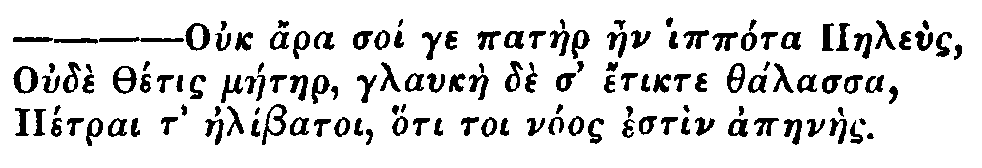T.
Mr. Spectator,
As your Paper is Part of the Equipage of the Tea-Table, I conjure you to print what I now write to you; for I have no other Way to communicate what I have to say to the fair Sex on the most important Circumstance of Life, even the Care of Children. I do not understand that you profess your Paper is always to consist of Matters which are only to entertain the Learned and Polite, but that it may agree with your Design to publish some which may tend to the Information of Mankind in general; and when it does so, you do more than writing Wit and Humour. Give me leave then to tell you, that of all the Abuses that ever you have as yet endeavoured to reform, certainly not one wanted so much your Assistance as the Abuse in nursing1 Children. It is unmerciful to see, that a Woman endowed with all the Perfections and Blessings of Nature, can, as soon as she is delivered, turn off her innocent, tender, and helpless Infant, and give it up to a Woman that is (ten thousand to one) neither in Health nor good Condition, neither sound in Mind nor Body, that has neither Honour nor Reputation, neither Love nor Pity for the poor Babe, but more Regard for the Money than for the whole Child, and never will take further Care of it than what by all the Encouragement of Money and Presents she is forced to; like Æsop's Earth, which would not nurse the Plant of another Ground, altho' never so much improved, by reason that Plant was not of its own Production. And since another's Child is no more natural to a Nurse than a Plant to a strange and different Ground, how can it be supposed that the Child should thrive? and if it thrives, must it not imbibe the gross Humours and Qualities of the Nurse, like a Plant in a different Ground, or like a Graft upon a different Stock? Do not we observe, that a Lamb sucking a Goat changes very much its Nature, nay even its Skin and Wooll into the Goat Kind? The Power of a Nurse over a Child, by infusing into it, with her Milk, her Qualities and Disposition, is sufficiently and daily observed: Hence came that old Saying concerning an ill-natured and malicious Fellow, that he had imbibed his Malice with his Nurse's Milk, or that some Brute or other had been his Nurse. Hence Romulus and Remus were said to have been nursed by a Wolf, Telephus the Son of Hercules by a Hind, Pelias the Son of Neptune by a Mare, and Ægisthus by a Goat; not that they had actually suck'd such Creatures, as some Simpletons have imagin'd, but that their Nurses had been of such a Nature and Temper, and infused such into them.
'Many Instances may be produced from good Authorities and daily Experience, that Children actually suck in the several Passions and depraved Inclinations of their Nurses, as Anger, Malice, Fear, Melancholy, Sadness, Desire, and Aversion. This Diodorus, lib. 2, witnesses, when he speaks, saying, That Nero the Emperor's Nurse had been very much addicted to Drinking; which Habit Nero received from his Nurse, and was so very particular in this, that the People took so much notice of it, as instead of Tiberius Nero, they call'd him Biberius Mero. The same Diodorus also relates of Caligula, Predecessor to Nero, that his Nurse used to moisten the Nipples of her Breast frequently with Blood, to make Caligula take the better Hold of them; which, says Diodorus, was the Cause that made him so blood-thirsty and cruel all his Life-time after, that he not only committed frequent Murder by his own Hand, but likewise wished that all human Kind wore but one Neck, that he might have the Pleasure to cut it off. Such like Degeneracies astonish the Parents, who not knowing after whom the Child can take, see2 one to incline to Stealing, another to Drinking, Cruelty, Stupidity; yet all these are not minded. Nay it is easy to demonstrate, that a Child, although it be born from the best of Parents, may be corrupted by an ill-tempered Nurse. How many Children do we see daily brought into Fits, Consumptions, Rickets, &c., merely by sucking their Nurses when in a Passion or Fury? But indeed almost any Disorder of the Nurse is a Disorder to the Child, and few Nurses can be found in this Town but what labour under some Distemper or other. The first Question that is generally asked a young Woman that wants to be a Nurse, Why3 she should be a Nurse to other People's Children; is answered, by her having an ill Husband, and that she must make Shift to live. I think now this very Answer is enough to give any Body a Shock if duly considered; for an ill Husband may, or ten to one if he does not, bring home to his Wife an ill Distemper, or at least Vexation and Disturbance. Besides as she takes the Child out of meer Necessity, her Food will be accordingly, or else very coarse at best; whence proceeds an ill-concocted and coarse Food for the Child; for as the Blood, so is the Milk; and hence I am very well assured proceeds the Scurvy, the Evil, and many other Distempers. I beg of you, for the Sake of the many poor Infants that may and will be saved, by weighing this Case seriously, to exhort the People with the utmost Vehemence to let the Children suck their own Mothers4, both for the Benefit of Mother and Child. For the general Argument, that a Mother is weakned by giving suck to her Children, is vain and simple; I will maintain that the Mother grows stronger by it, and will have her Health better than she would have otherwise: She will find it the greatest Cure and Preservative for the Vapours and future Miscarriages, much beyond any other Remedy whatsoever: Her Children will be like Giants, whereas otherwise they are but living Shadows and like unripe Fruit; and certainly if a Woman is strong enough to bring forth a Child, she is beyond all Doubt strong enough to nurse it afterwards. It grieves me to observe and consider how many poor Children are daily ruin'd by careless Nurses; and yet how tender ought they to be of a poor Infant, since the least Hurt or Blow, especially upon the Head, may make it senseless, stupid, or otherwise miserable for ever?
'But I cannot well leave this Subject as yet; for it seems to me very unnatural, that a Woman that has fed a Child as Part of her self for nine Months, should have no Desire to nurse it farther, when brought to Light and before her Eyes, and when by its Cry it implores her Assistance and the Office of a Mother. Do not the very cruellest of Brutes tend their young ones with all the Care and Delight imaginable? For how can she be call'd a Mother that will not nurse her young ones? The Earth is called the Mother of all Things, not because she produces, but because she maintains and nurses what she produces. The Generation of the Infant is the Effect of Desire, but the Care of it argues Virtue and Choice. I am not ignorant but that there are some Cases of Necessity where a Mother cannot give Suck, and then out of two Evils the least must be chosen; but there are so very few, that I am sure in a Thousand there is hardly one real Instance; for if a Woman does but know that her Husband can spare about three or six Shillings a Week extraordinary, (altho' this is but seldom considered) she certainly, with the Assistance of her Gossips, will soon perswade the good Man to send the Child to Nurse, and easily impose upon him by pretending In-disposition. This Cruelty is supported by Fashion, and Nature gives Place to Custom.
Sir, Your humble Servant.
No. 247 |
Thursday, December 13, 1711 |
Addison |
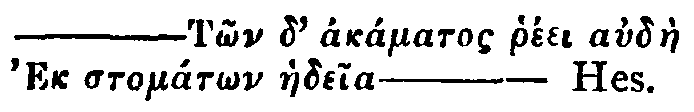
I think, quoth Thomas, Womens Tongues Of Aspen Leaves are made.And Ovid, though in the Description of a very barbarous Circumstance, tells us, That when the Tongue of a beautiful Female was cut out, and thrown upon the Ground, it could not forbear muttering even in that Posture.
—Comprensam forcipe linguamIf a tongue would be talking without a Mouth, what could it have done when it had all its Organs of Speech, and Accomplices of Sound about it? I might here mention the Story of the Pippin-Woman, had not I some Reason to look upon it as fabulous.
Abstulit ense fero. Radix micat ultima linguæ,
Ipsa jacet, terræque tremens immurmurat atræ;
Utque salire solet mutilatæ cauda colubræ
Palpitat:—4`
No. 248 |
Friday, December 14, 1711 |
Steele |
Hoc maximè Officii est, ut quisque maximè opis indigeat, ita ei potissimùm opitulari.
Tull.
Honoured Brother,As great and exalted Spirits undertake the Pursuit of hazardous Actions for the Good of others, at the same Time gratifying their Passion for Glory; so do worthy Minds in the domestick Way of Life deny themselves many Advantages, to satisfy a generous Benevolence which they bear to their Friends oppressed with Distresses and Calamities. Such Natures one may call Stores of Providence, which are actuated by a secret Celestial Influence to undervalue the ordinary Gratifications of Wealth, to give Comfort to an Heart loaded with Affliction, to save a falling Family, to preserve a Branch of Trade in their Neighbourhood, and give Work to the Industrious, preserve the Portion of the helpless Infant, and raise the Head of the mourning Father. People whose Hearts are wholly bent towards Pleasure, or intent upon Gain, never hear of the noble Occurrences among Men of Industry and Humanity. It would look like a City Romance, to tell them of the generous Merchant who the other Day sent this Billet to an eminent Trader under Difficulties to support himself, in whose Fall many hundreds besides himself had perished; but because I think there is more Spirit and true Gallantry in it than in any Letter I have ever read from Strepkon to Phillis, I shall insert it even in the mercantile honest Stile in which it was sent.
I enclose to you the Deeds whereby my Father gave me this House and Land: Had he lived 'till now, he would not have bestowed it in that Manner; he took it from the Man you were, and I restore it to the Man you are. I am,
Sir,
Your affectionate Brother, and humble Servant,
P. T.
Sir,I think there is somewhere in Montaigne Mention made of a Family-book, wherein all the Occurrences that happened from one Generation of that House to another were recorded. Were there such a Method in the Families, which are concerned in this Generosity, it would be an hard Task for the greatest in Europe to give, in their own, an Instance of a Benefit better placed, or conferred with a more graceful Air. It has been heretofore urged, how barbarous and inhuman is any unjust Step made to the Disadvantage of a Trader; and by how much such an Act towards him is detestable, by so much an Act of Kindness towards him is laudable. I remember to have heard a Bencher of the Temple tell a Story of a Tradition in their House, where they had formerly a Custom of chusing Kings for such a Season, and allowing him his Expences at the Charge of the Society: One of our Kings, said my Friend, carried his Royal Inclination a little too far, and there was a Committee ordered to look into the Management of his Treasury. Among other Things it appeared, that his Majesty walking incog, in the Cloister, had overheard a poor Man say to another, Such a small Sum would make me the happiest Man in the World. The King out of his Royal Compassion privately inquired into his Character, and finding him a proper Object of Charity, sent him the Money. When the Committee read their Report, the House passed his Account with a Plaudite without further Examination, upon the Recital of this Article in them.
'I Have heard of the Casualties which have involved you in extreme Distress at this Time; and knowing you to be a Man of great Good-Nature, Industry and Probity, have resolved to stand by you. Be of good Chear, the Bearer brings with him five thousand Pounds, and has my Order to answer your drawing as much more on my Account. I did this in Haste, for fear I should come too late for your Relief; but you may value your self with me to the Sum of fifty thousand Pounds; for I can very chearfully run the Hazard of being so much less rich than I am now, to save an honest Man whom I love.
Your Friend and Servant,
W. S.2
| For making a Man happy: | £ | s. | d. |
| 10 | 0 | 0 |
No. 249 |
Saturday, December 15, 1711 |
Addison |
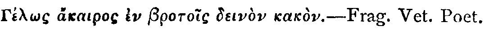
But come thou Goddess fair and free,C.
In Heaven yeleped Euphrosyne,
And by Men, heart-easing Mirth,
Whom lovely Venus at a Birth,
With two Sister Graces more,
To Ivy-crowned Bacchus bore:
Haste thee, Nymph, and bring with thee
Jest and youthful jollity,
Quips and Cranks, and wanton Wiles,
Nods, and Becks, and wreathed Smiles,
Such as hang on Hebe's Cheek,
And love to live in Dimple sleek:
Sport that wrinkled Care derides,
And Laughter holding both his Sides.
Come, and trip it, as you go,
On the light fantastick Toe:
And in thy right Hand lead with thee
The Mountain Nymph, sweet Liberty;
And if I give thee Honour due,
Mirth, admit me of thy Crew,
To live with her, and live with thee,
In unreproved Pleasures free.
The piercing Caustics ply their spiteful Pow'r;return
Emetics ranch, and been Cathartics sour.
The deadly Drugs in double Doses fly;
And Pestles peal a martial Symphony.
No. 250 |
Monday, December 17, 1711 |
Disce docendus adhuc, quæ censet amiculus, ut siQ.
Cæcus iter monstrare velit; tamen aspice si quid
Et nos, quod cures proprium fecisse, loquamur.
Hor.
Mr. Spectator,
'You see the Nature of my Request by the Latin Motto which I address to you. I am very sensible I ought not to use many Words to you, who are one of but few; but the following Piece, as it relates to Speculation in Propriety of Speech, being a Curiosity in its Kind, begs your Patience. It was found in a Poetical Virtuoso's Closet among his Rarities; and since the several Treatises of Thumbs, Ears, and Noses, have obliged the World, this of Eyes is at your Service.
'The first Eye of Consequence (under the invisible Author of all) is the visible Luminary of the Universe. This glorious Spectator is said never to open his Eyes at his Rising in a Morning, without having a whole Kingdom of Adorers in Persian Silk waiting at his Levée. Millions of Creatures derive their Sight from this Original, who, besides his being the great Director of Opticks, is the surest Test whether Eyes be of the same Species with that of an Eagle, or that of an Owl: The one he emboldens with a manly Assurance to look, speak, act or plead before the Faces of a numerous Assembly; the other he dazzles out of Countenance into a sheepish Dejectedness. The Sun-Proof Eye dares lead up a Dance in a full Court; and without blinking at the Lustre of Beauty, can distribute an Eye of proper Complaisance to a Room crowded with Company, each of which deserves particular Regard; while the other sneaks from Conversation, like a fearful Debtor, who never dares to look out, but when he can see no body, and no body him.
The next Instance of Opticks is the famous Argus, who (to speak in the Language of Cambridge) was one of an Hundred; and being used as a Spy in the Affairs of Jealousy, was obliged to have all his Eyes about him. We have no Account of the particular Colours, Casts and Turns of this Body of Eyes; but as he was Pimp for his Mistress Juno, 'tis probable he used all the modern Leers, sly Glances, and other ocular Activities to serve his Purpose. Some look upon him as the then King at Arms to the Heathenish Deities; and make no more of his Eyes than as so many Spangles of his Herald's Coat.
The next upon the Optick List is old Janus, who stood in a double-sighted Capacity, like a Person placed betwixt two opposite Looking-Glasses, and so took a sort of retrospective Cast at one View. Copies of this double-faced Way are not yet out of Fashion with many Professions, and the ingenious Artists pretend to keep up this Species by double-headed Canes and Spoons1; but there is no Mark of this Faculty, except in the emblematical Way of a wise General having an Eye to both Front and Rear, or a pious Man taking a Review and Prospect of his past and future State at the same Time.
I must own, that the Names, Colours, Qualities, and Turns of Eyes vary almost in every Head; for, not to mention the common Appellations of the Black, the Blue, the White, the Gray, and the like; the most remarkable are those that borrow their Titles from Animals, by Vertue of some particular Quality or Resemblance they bear to the Eyes of the respective Creatures; as that of a greedy rapacious Aspect takes its Name from the Cat, that of a sharp piercing Nature from the Hawk, those of an amorous roguish Look derive their Title even from the Sheep, and we say such an one has a Sheep's Eye, not so much to denote the Innocence as the simple Slyness of the Cast: Nor is this metaphorical Inoculation a modern Invention, for we find Homer taking the Freedom to place the Eye of an Ox, Bull, or Cow in one of his principal Goddesses, by that frequent Expression ofNow as to the peculiar Qualities of the Eye, that fine Part of our Constitution seems as much the Receptacle and Seat of our Passions, Appetites and Inclinations as the Mind it self; and at least it is the outward Portal to introduce them to the House within, or rather the common Thorough-fare to let our Affections pass in and out. Love, Anger, Pride, and Avarice, all visibly move in those little Orbs. I know a young Lady that can't see a certain Gentleman pass by without shewing a secret Desire of seeing him again by a Dance in her Eye-balls; nay, she can't for the Heart of her help looking Half a Street's Length after any Man in a gay Dress. You can't behold a covetous Spirit walk by a Goldsmith's Shop without casting a wistful Eye at the Heaps upon the Counter. Does not a haughty Person shew the Temper of his Soul in the supercilious Rowl of his Eye? and how frequently in the Height of Passion does that moving Picture in our Head start and stare, gather a Redness and quick Flashes of Lightning, and make all its Humours sparkle with Fire, as Virgil finely describes it.—Ardentis ab oreAs for the various Turns of the Eye-sight, such as the voluntary or involuntary, the half or the whole Leer, I shall not enter into a very particular Account of them; but let me observe, that oblique Vision, when natural, was anciently the Mark of Bewitchery and magical Fascination, and to this Day 'tis a malignant ill Look; but when 'tis forced and affected it carries a wanton Design, and in Play-houses, and other publick Places, this ocular Intimation is often an Assignation for bad Practices: But this Irregularity in Vision, together with such Enormities as Tipping the Wink, the Circumspective Rowl, the Side-peep through a thin Hood or Fan, must be put in the Class of Heteropticks, as all wrong Notions of Religion are ranked under the general Name of Heterodox. All the pernicious Applications of Sight are more immediately under the Direction of a Spectator; and I hope you will arm your Readers against the Mischiefs which are daily done by killing Eyes, in which you will highly oblige your wounded unknown Friend,
Scintillæ absistunt: oculis micat acribus ignis.3
T. B.
Mr. Spectator,
You professed in several Papers your particular Endeavours in the Province of Spectator, to correct the Offences committed by Starers, who disturb whole Assemblies without any Regard to Time, Place or Modesty. You complained also, that a Starer is not usually a Person to be convinced by Reason of the Thing, nor so easily rebuked, as to amend by Admonitions. I thought therefore fit to acquaint you with a convenient Mechanical Way, which may easily prevent or correct Staring, by an Optical Contrivance of new Perspective-Glasses, short and commodious like Opera Glasses, fit for short-sighted People as well as others, these Glasses making the Objects appear, either as they are seen by the naked Eye, or more distinct, though somewhat less than Life, or bigger and nearer. A Person may, by the Help of this Invention, take a View of another without the Impertinence of Staring; at the same Time it shall not be possible to know whom or what he is looking at. One may look towards his Right or Left Hand, when he is supposed to look forwards: This is set forth at large in the printed Proposals for the Sale of these Glasses, to be had at Mr. Dillon's in Long-Acre, next Door to the White-Hart. Now, Sir, as your Spectator has occasioned the Publishing of this Invention for the Benefit of modest Spectators, the Inventor desires your Admonitions concerning the decent Use of it; and hopes, by your Recommendation, that for the future Beauty may be beheld without the Torture and Confusion which it suffers from the Insolence of Starers. By this means you will relieve the Innocent from an Insult which there is no Law to punish, tho' it is a greater Offence than many which are within the Cognizance of Justice.
I am, Sir,
Your most humble Servant,
Abraham Spy.
No. 251 |
Tuesday, December 18, 1711 |
Addison |
Lingua centum sunt, oraque centum.
Ferrea Vox.
Virgil.
Sir,
"I am a Man of all Business, and would willingly turn my Head to any thing for an honest Livelihood. I have invented several Projects for raising many Millions of Money without burthening the Subject, but I cannot get the Parliament to listen to me, who look upon me, forsooth, as a Crack, and a Projector; so that despairing to enrich either my self or my Country by this Publick-spiritedness, I would make some Proposals to you relating to a Design which I have very much at Heart, and which may procure me a1 handsome Subsistence, if you will be pleased to recommend it to the Cities of Londonand Westminster.
The Post I would aim at, is to be Comptroller-General of the London Cries, which are at present under no manner of Rules or Discipline. I think I am pretty well qualified for this Place, as being a Man of very strong Lungs, of great Insight into all the Branches of our BritishTrades and Manufactures, and of a competent Skill in Musick.
The Cries of Londonmay be divided into Vocal and Instrumental. As for the latter they are at present under a very great Disorder. A Freeman of Londonhas the Privilege of disturbing a whole Street for an Hour together, with the Twanking of a Brass-Kettle or a Frying-Pan. The Watchman's Thump at Midnight startles us in our Beds, as much as the Breaking in of a Thief. The Sowgelder's Horn has indeed something musical in it, but this is seldom heard within the Liberties. I would therefore propose, that no Instrument of this Nature should be made use of, which I have not tuned and licensed, after having carefully examined in what manner it may affect the Ears of her Majesty's liege Subjects.
Vocal Cries are of a much larger Extent, and indeed so full of Incongruities and Barbarisms, that we appear a distracted City to Foreigners, who do not comprehend the Meaning of such enormous Outcries. Milk is generally sold in a note above Ela, and in Sounds so exceeding2 shrill, that it often sets our Teeth on3 Edge. The Chimney-sweeper is confined4 to no certain Pitch; he sometimes utters himself in the deepest Base, and sometimes in the sharpest Treble; sometimes in the highest, and sometimes in the lowest Note of the Gamut. The same Observation might be made on the Retailers of Small-coal, not to mention broken Glasses or Brick-dust. In these therefore, and the like Cases, it should be my Care to sweeten and mellow the Voices of these itinerant Tradesmen, before they make their Appearance in our Streets; as also to accommodate their Cries to their respective Wares; and to take care in particular, that those may not make the most Noise who have the least to sell, which is very observable in the Venders of Card-matches, to whom I cannot but apply that old Proverb of Much Cry but little Wool.
'Some of these last mentioned Musicians are so very loud in the Sale of these trifling Manufactures, that an honest Splenetick Gentleman of my Acquaintance bargained with one of them never to come into the Street where he lived: But what was the Effect of this Contract? Why, the whole Tribe of Card-match-makers which frequent that Quarter, passed by his Door the very next Day, in hopes of being bought off after the same manner.
'It is another great Imperfection in our LondonCries, that there is no just Time nor Measure observed in them. Our News should indeed be published in a very quick Time, because it is a Commodity that will not keep cold. It should not, however, be cried with the same Precipitation as Fire: Yet this is generally the Case. A Bloody Battle alarms the Town from one End to another in an Instant. Every Motion of the Frenchis Published in so great a Hurry, that one would think the Enemy were at our Gates. This likewise I would take upon me to regulate in such a manner, that there should be some Distinction made between the spreading of a Victory, a March, or an Incampment, a Dutch, a Portugalor a SpanishMail. Nor must I omit under this Head, those excessive Alarms with which several boisterous Rusticks infest our Streets in Turnip Season; and which are more inexcusable, because these are Wares which are in no Danger of Cooling upon their Hands.
'There are others who affect a very slow Time, and are, in my Opinion, much more tuneable than the former; the Cooper in particular swells his last Note in an hollow Voice, that is not without its Harmony; nor can I forbear being inspired with a most agreeable Melancholy, when I hear that sad and solemn Air with which the Public are very often asked, if they have any Chairs to mend? Your own Memory may suggest to you many other lamentable Ditties of the same Nature, in which the Musick is wonderfully languishing and melodious.
'I am always pleased with that particular Time of the Year which is proper for the pickling of Dill and Cucumbers; but alas, this Cry, like the Song of the Nightingale5, is not heard above two Months. It would therefore be worth while to consider, whether the same Air might not in some Cases be adapted to other Words.
'It might likewise deserve our most serious Consideration, how far, in a well-regulated City, those Humourists are to be tolerated, who, not contented with the traditional Cries of their Forefathers, have invented particular Songs and Tunes of their own: Such as was, not many Years since, the Pastryman, commonly known by the Name of the Colly-Molly-Puff; and such as is at this Day the Vender of Powder and Wash-balls, who, if I am rightly informed, goes under the Name of Powder-Watt.
'I must not here omit one particular Absurdity which runs through this whole vociferous Generation, and which renders their Cries very often not only incommodious, but altogether useless to the Publick; I mean, that idle Accomplishment which they all of them aim at, of Crying so as not to be understood. Whether or no they have learned this from several of our affected Singers, I will not take upon me to say; but most certain it is, that People know the Wares they deal in rather by their Tunes than by their Words; insomuch that I have sometimes seen a Country Boy run out to buy Apples of a Bellows-mender, and Gingerbread from a Grinder of Knives and Scissars. Nay so strangely infatuated are some very eminent Artists of this particular Grace in a Cry, that none but then Acquaintance are able to guess at their Profession; for who else can know, that Work if I had it, should be the Signification of a Corn-Cutter?
'Forasmuch therefore as Persons of this Rank are seldom Men of Genius or Capacity, I think it would be very proper, that some Man of good Sense and sound Judgment should preside over these Publick Cries, who should permit none to lift up their Voices in our Streets, that have not tuneable Throats, and are not only able to overcome the Noise of the Croud, and the Rattling of Coaches, but also to vend their respective Merchandizes in apt Phrases, and in the most distinct and agreeable Sounds. I do therefore humbly recommend my self as a Person rightly qualified for this Post; and if I meet with fitting Encouragement, shall communicate some other Projects which I have by me, that may no less conduce to the Emolument of the Public.'
I am
Sir, &c.,
Ralph Crotchet.
No. 252 |
Wednesday, December 19, 1711 |
Steele |
Erranti, passimque oculos per cuncta ferenti.T.
Virgil1<
Mr. Spectator,
'I am very sorry to find by your Discourse upon the Eye, 1 that you have not thoroughly studied the Nature and Force of that Part of a beauteous Face. Had you ever been in Love, you would have said ten thousand things, which it seems did not occur to you: Do but reflect upon the Nonsense it makes Men talk, the Flames which it is said to kindle, the Transport it raises, the Dejection it causes in the bravest Men; and if you do believe those things are expressed to an Extravagance, yet you will own, that the Influence of it is very great which moves Men to that Extravagance. Certain it is, that the whole Strength of the Mind is sometimes seated there; that a kind Look imparts all, that a Year's Discourse could give you, in one Moment. What matters it what she says to you, see how she looks, is the Language of all who know what Love is. When the Mind is thus summed up and expressed in a Glance, did you never observe a sudden Joy arise in the Countenance of a Lover? Did you never see the Attendance of Years paid, over-paid in an Instant? You a Spectator, and not know that the Intelligence of Affection is carried on by the Eye only; that Good-breeding has made the Tongue falsify the Heart, and act a Part of continual Constraint, while Nature has preserved the Eyes to her self, that she may not be disguised or misrepresented. The poor Bride can give her Hand, and say, I do, with a languishing Air, to the Man she is obliged by cruel Parents to take for mercenary Reasons, but at the same Time she cannot look as if she loved; her Eye is full of Sorrow, and Reluctance sits in a Tear, while the Offering of the Sacrifice is performed in what we call the Marriage Ceremony. Do you never go to Plays? Cannot you distinguish between the Eyes of those who go to see, from those who come to be seen? I am a Woman turned of Thirty, and am on the Observation a little; therefore if you or your Correspondent had consulted me in your Discourse on the Eye, I could have told you that the Eye of Leonora is slyly watchful while it looks negligent: she looks round her without the Help of the Glasses you speak of, and yet seems to be employed on Objects directly before her. This Eye is what affects Chance-medley, and on a sudden, as if it attended to another thing, turns all its Charms against an Ogler. The Eye of Lusitania is an Instrument of premeditated Murder; but the Design being visible, destroys the Execution of it; and with much more Beauty than that of Leonora, it is not half so mischievous. There is a brave Soldier's Daughter in Town, that by her Eye has been the Death of more than ever her Father made fly before him. A beautiful Eye makes Silence eloquent, a kind Eye makes Contradiction an Assent, an enraged Eye makes Beauty deformed. This little Member gives Life to every other Part about us, and I believe the Story of Argus implies no more than that the Eye is in every Part, that is to say, every other Part would be mutilated, were not its Force represented more by the Eye than even by it self. But this is Heathen Greek to those who have not conversed by Glances. This, Sir, is a Language in which there can be no Deceit, nor can a Skilful Observer be imposed upon by Looks even among Politicians and Courtiers. If you do me the Honour to print this among your Speculations, I shall in my next make you a Present of Secret History, by Translating all the Looks of the next Assembly of Ladies and Gentlemen into Words, to adorn some future Paper.
I am, Sir,
Your faithful Friend,
Mary Heartfree.
Dear Mr. Spectator,
I have a Sot of a Husband that lives a very scandalous Life, and wastes away his Body and Fortune in Debaucheries; and is immoveable to all the Arguments I can urge to him. I would gladly know whether in some Cases a Cudgel may not be allowed as a good Figure of Speech, and whether it may not be lawfully used by a Female Orator.
Your humble Servant,
Barbara Crabtree.
Mr. Spectator2,
Though I am a Practitioner in the Law of some standing, and have heard many eminent Pleaders in my Time, as well as other eloquent Speakers of both Universities, yet I agree with you, that Women are better qualified to succeed in Oratory than the Men, and believe this is to be resolved into natural Causes. You have mentioned only the Volubility of their Tongue; but what do you think of the silent Flattery of their pretty Faces, and the Perswasion which even an insipid Discourse carries with it when flowing from beautiful Lips, to which it would be cruel to deny any thing? It is certain too, that they are possessed of some Springs of Rhetorick which Men want, such as Tears, fainting Fits, and the like, which I have seen employed upon Occasion with good Success. You must know I am a plain Man and love my Money; yet I have a Spouse who is so great an Orator in this Way, that she draws from me what Sum she pleases. Every Room in my House is furnished with Trophies of her Eloquence, rich Cabinets, Piles of China, Japan Screens, and costly Jars; and if you were to come into my great Parlour, you would fancy your self in an India Ware-house: Besides this she keeps a Squirrel, and I am doubly taxed to pay for the China he breaks. She is seized with periodical Fits about the Time of the Subscriptions to a new Opera, and is drowned in Tears after having seen any Woman there in finer Cloaths than herself: These are Arts of Perswasion purely Feminine, and which a tender Heart cannot resist. What I would therefore desire of you, is, to prevail with your Friend who has promised to dissect a Female Tongue, that he would at the same time give us the Anatomy of a Female Eye, and explain the Springs and Sluices which feed it with such ready Supplies of Moisture; and likewise shew by what means, if possible, they may be stopped at a reasonable Expence: Or, indeed, since there is something so moving in the very Image of weeping Beauty, it would be worthy his Art to provide, that these eloquent Drops may no more be lavished on Trifles, or employed as Servants to their wayward Wills; but reserved for serious Occasions in Life, to adorn generous Pity, true Penitence, or real Sorrow.
I am, &c.
quis Temeros oculus mihi fascinat AgnosVirg.
No. 253 |
Thursday, December 20, 1711 |
Addison |
Indignor quicquam reprehendi, non quia crasse
Compositum, illepideve putetur, sed quia nuper.
Hor.
But whither am I strayed? I need not raiseI am sorry to find that an Author, who is very justly esteemed among the best Judges, has admitted some Stroaks of this Nature into a very fine Poem; I mean The Art of Criticism, which was publish'd some Months since, and is a Master-piece in its kind2. The Observations follow one another like those in Horace's Art of Poetry, without that methodical Regularity which would have been requisite in a Prose Author. They are some of them uncommon, but such as the Reader must assent to, when he sees them explained with that Elegance and Perspicuity in which they are delivered. As for those which are the most known, and the most received, they are placed in so beautiful a Light, and illustrated with such apt Allusions, that they have in them all the Graces of Novelty, and make the Reader, who was before acquainted with them, still more convinced of their Truth and Solidity. And here give me leave to mention what Monsieur Boileau has so very well enlarged upon in the Preface to his Works, that Wit and fine Writing doth not consist so much in advancing Things that are new, as in giving Things that are known an agreeable Turn. It is impossible for us, who live in the latter Ages of the World, to make Observations in Criticism, Morality, or in any Art or Science, which have not been touched upon by others. We have little else left us, but to represent the common Sense of Mankind in more strong, more beautiful, or more uncommon Lights. If a Reader examines Horace's Art of Poetry, he will find but very few Precepts in it, which he may not meet with in Aristotle, and which were not commonly known by all the Poets of the Augustan Age. His Way of expressing and applying them, not his Invention of them, is what we are chiefly to admire.
Trophies to thee from other Mens Dispraise:
Nor is thy Fame on lesser Ruins built,
Nor needs thy juster Title the foul Guilt
Of Eastern Kings, who, to secure their Reign,
Must have their Brothers, Sons, and Kindred slain.
These Equal Syllables alone require,The gaping of the Vowels in the second Line, the Expletive do in the third, and the ten Monosyllables in the fourth, give such a Beauty to this Passage, as would have been very much admired in an Ancient Poet. The Reader may observe the following Lines in the same View.
Tho' oft the Ear the open Vowels tire,
While Expletives their feeble Aid do join,
And ten low Words oft creep in one dull Line.
A needless Alexandrine ends the Song,And afterwards,
That like a wounded Snake, drags its slow Length along.
'Tis not enough no Harshness gives Offence,The beautiful Distich upon Ajax in the foregoing Lines, puts me in mind of a Description in Homer's Odyssey, which none of the Criticks have taken notice of3. It is where Sisyphus is represented lifting his Stone up the Hill, which is no sooner carried to the top of it, but it immediately tumbles to the Bottom. This double Motion of the Stone is admirably described in the Numbers of these Verses; As in the four first it is heaved up by several Spondees intermixed with proper Breathing places, and at last trundles down in a continual Line of Dactyls.
The Sound must seem an Eccho to the Sense.
Soft is the Strain when Zephyr gently blows,
And the smooth Stream in smoother Numbers flows;
But when loud Surges lash the sounding Shore,
The hoarse rough Verse shou'd like the Torrent roar.
When Ajax strives some Rock's vast Weight to throw,
The Line too labours, and the Words move slow;
Not so, when swift Camilla scours the Plain,
Flies o'er th' unbending Corn, and skims along the Main.
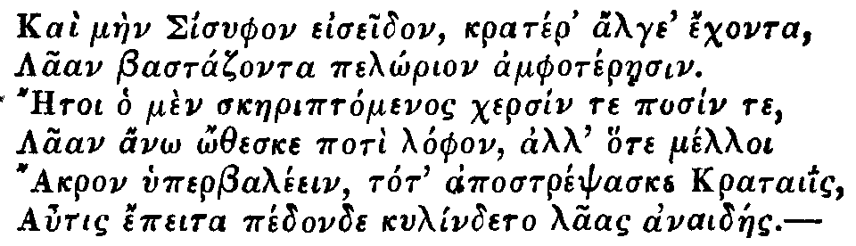It would be endless to quote Verses out of Virgil which have this particular Kind of Beauty in the Numbers; but I may take an Occasion in a future Paper to shew several of them which have escaped the Observation of others.
'Though it be the highest satisfaction to find myself commended by a Writer whom all the world commends, yet I am not more obliged to you for that than for your candour and frankness in acquainting me with the error I have been guilty of in speaking too freely of my brother moderns.'The only moderns of whom he spoke slightingly were men of whom after-time has ratified his opinion: John Dennis, Sir Richard Blackmore, and Luke Milbourne. When, not long afterwards, Dennis attacked with his criticism Addison's Cato, to which Pope had contributed the Prologue, Pope made this the occasion of a bitter satire on Dennis, called The Narrative of Dr. Robert Norris (a well-known quack who professed the cure of lunatics) upon the Frenzy J. D. Addison then, through Steele, wrote to Pope's publisher of this 'manner of treating Mr. Dennis,' that he 'could not be privy' to it, and 'was sorry to hear of it.' In 1715, when Pope issued to subscribers the first volume of Homer, Tickell's translation of the first book of the Iliad appeared in the same week, and had particular praise at Button's from Addison, Tickell's friend and patron. Pope was now indignant, and expressed his irritation in the famous satire first printed in 1723, and, finally, with the name of Addison transformed to Atticus, embodied in the Epistle to Arbuthnot published in 1735. Here, while seeing in Addison a man
Blest with each talent and each art to please, And born to live, converse, and write with ease,he said that should he, jealous of his own supremacy, 'damn with faint praise,' as one
Willing to wound, and yet afraid to strike,But in this Spectator paper young Pope's Essay on Criticism certainly was not damned with faint praise by the man most able to give it a firm standing in the world.
Just hint the fault and hesitate dislike,
Who when two wits on rival themes contest,
Approves of both, but likes the worse the best:
Like Cato, give his little Senate laws,
And sits attentive to his own applause;
While wits and templars every sentence raise:
And wonder with a foolish face of praise:
Who would not laugh if such a man there be?
Who would not weep if Addison were he?
in all Charles's dayshe wrote in heroic couplets an Essay on Translated Verse that was admired by Dryden, Addison, and Pope, and was in highest honour wherever the French influence upon our literature made itself felt. Roscommon believed in the superior energy of English wit, and wrote himself with care and frequent vigour in the turning of his couplets. It is from this poem that we get the often quoted lines,
Roscommon only boasts unspotted lays,
Immodest words admit of no Defence:return
For Want of Decency is Want of Sense.
A faultless monster which the world ne'er saw.When he comes to the epics he is, of course, all for Homer and Virgil.
Read Homer once, and you can read no more;And then it is supposed that 'some Angel' had disclosed to M. Bossu, the French author of the treatise upon Epic Poetry then fashionable, the sacred mysteries of Homer. John Sheffield had a patronizing recognition for the genius of Shakespeare and Milton, and was so obliging as to revise Shakespeare's Julius Cæsar and confine the action of that play within the limits prescribed in the French gospel according to the Unities. Pope, however, had in the Essay on Criticism reckoned Sheffield, Duke of Buckingham, among the sounder few
For all books else appear so mean, so poor,
Verse will seem Prose; but still persist to read,
And Homer will be all the Books you need.
Who durst assert the juster ancient CauseWith those last words which form the second line in the Essay on Poetry Pope's citation has made many familiar. Addison paid young Pope a valid compliment in naming him as a critic in verse with Roscommon, and, what then passed on all hands for a valid compliment, in holding him worthy also to be named as a poet in the same breath with the Lord Chamberlain.
And have restored Wit's Fundamental Laws.
Such was the Muse, whose Rules and Practice tell,
Nature's chief Masterpiece is writing well.
No. 254 |
Friday, December 21, 1711 |
Steele |
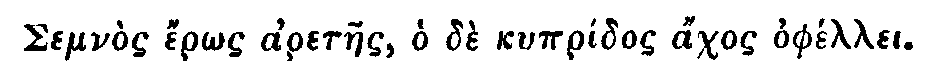
My dear Harriot,
If thou art she, but oh how fallen, how changed, what an Apostate! how lost to all that's gay and agreeable! To be married I find is to be buried alive; I can't conceive it more dismal to be shut up in a Vault to converse with the Shades of my Ancestors, than to be carried down to an old Manor-House in the Country, and confined to the Conversation of a sober Husband and an awkward Chamber-maid. For Variety I suppose you may entertain yourself with Madam in her Grogram Gown, the Spouse of your Parish Vicar, who has by this time I am sure well furnished you with Receipts for making Salves and Possets, distilling Cordial Waters, making Syrups, and applying Poultices.
Blest Solitude! I wish thee Joy, my Dear, of thy loved Retirement, which indeed you would perswade me is very agreeable, and different enough from what I have here described: But, Child, I am afraid thy Brains are a little disordered with Romances and Novels: After six Months Marriage to hear thee talk of Love, and paint the Country Scenes so softly, is a little extravagant; one would think you lived the Lives of Sylvan Deities, or roved among the Walks of Paradise, like the first happy Pair. But pr'ythee leave these Whimsies, and come to Town in order to live and talk like other Mortals. However, as I am extremely interested in your Reputation, I would willingly give you a little good Advice at your first Appearance under the Character of a married Woman: 'Tis a little Insolence in me perhaps, to advise a Matron; but I am so afraid you'll make so silly a Figure as a fond Wife, that I cannot help warning you not to appear in any publick Places with your Husband, and never to saunter about St. James's Park together: If you presume to enter the Ring at Hide-Park together, you are ruined for ever; nor must you take the least notice of one another at the Play-house or Opera, unless you would be laughed at for a very loving Couple most happily paired in the Yoke of Wedlock. I would recommend the Example of an Acquaintance of ours to your Imitation; she is the most negligent and fashionable Wife in the World; she is hardly ever seen in the same Place with her Husband, and if they happen to meet, you would think them perfect Strangers: She never was heard to name him in his Absence, and takes care he shall never be the Subject of any Discourse that she has a Share in. I hope you'll propose this Lady as a Pattern, tho' I am very much afraid you'll be so silly to think Portia, &c. Sabine and Roman Wives much brighter Examples. I wish it may never come into your Head to imitate those antiquated Creatures so far, as to come into Publick in the Habit as well as Air of a Roman Matron. You make already the Entertainment at Mrs. Modish's Tea-Table; she says, she always thought you a discreet Person, and qualified to manage a Family with admirable Prudence: she dies to see what demure and serious Airs Wedlock has given you, but she says she shall never forgive your Choice of so gallant a Man as Bellamour to transform him to a meer sober Husband; 'twas unpardonable: You see, my Dear, we all envy your Happiness, and no Person more than
Your humble Servant,
Lydia.
Be not in pain, good Madam, for my Appearance in Town; I shall frequent no publick Places, or make any Visits where the Character of a modest Wife is ridiculous. As for your wild Raillery on Matrimony, 'tis all Hypocrisy; you, and all the handsome young Women of our Acquaintance, shew yourselves to no other Purpose than to gain a Conquest over some Man of Worth, in order to bestow your Charms and Fortune on him. There's no Indecency in the Confession, the Design is modest and honourable, and all your Affectation can't disguise it.
I am married, and have no other Concern but to please the Man I Love; he's the End of every Care I have; if I dress, 'tis for him; if I read a Poem or a Play, 'tis to qualify myself for a Conversation agreeable to his Taste: He's almost the End of my Devotions; half my Prayers are for his Happiness. I love to talk of him, and never hear him named but with Pleasure and Emotion. I am your Friend, and wish your Happiness, but am sorry to see by the Air of your Letter that there are a Set of Women who are got into the Common-Place Raillery of every Thing that is sober, decent, and proper: Matrimony and the Clergy are the Topicks of People of little Wit and no Understanding. I own to you, I have learned of the Vicar's Wife all you tax me with: She is a discreet, ingenious, pleasant, pious Woman; I wish she had the handling of you and Mrs. Modish; you would find, if you were too free with her, she would soon make you as charming as ever you were, she would make you blush as much as if you had never been fine Ladies. The Vicar, Madam, is so kind as to visit my Husband, and his agreeable Conversation has brought him to enjoy many sober happy Hours when even I am shut out, and my dear Master is entertained only with his own Thoughts. These Things, dear Madam, will be lasting Satisfactions, when the fine Ladies, and the Coxcombs by whom they form themselves, are irreparably ridiculous, ridiculous in old Age.
I am, Madam, your most humble Servant,
Mary Home.
Dear Mr. Spectator,
You have no Goodness in the World, and are not in earnest in any thing you say that is serious, if you do not send me a plain Answer to this: I happened some Days past to be at the Play, where during the Time of Performance, I could not keep my Eyes off from a beautiful young Creature who sat just before me, and who I have been since informed has no Fortune. It would utterly ruin my Reputation for Discretion to marry such a one, and by what I can learn she has a Character of great Modesty, so that there is nothing to be thought on any other Way. My Mind has ever since been so wholly bent on her, that I am much in danger of doing something very extravagant without your speedy Advice to,
Sir, Your most humble Servant.
Dear Correspondent, Would you marry to please other People, or your self?T.
No. 255 |
Saturday, December 22, 1711 |
Addison |
Laudis amore tumes? sunt certa piacula, quæ te
Ter pure lecto poterunt recreare libello.
Hor.
No. 256 |
Monday, December 24, 1711 |
Addison |
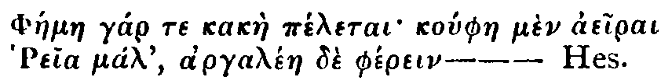
No. 257 |
Tuesday, December 25, 17111 |
Addison |
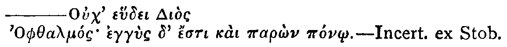
No. 258 |
Wednesday, December 26, 1711 |
Steele |
Divide et Impera.
Mr. Spectator,
'I am considerably obliged to you for your speedy Publication of my last in yours of the 18th Instant, and am in no small Hopes of being settled in the Post of Comptroller of the Cries. Of all the Objections I have hearkened after in publick Coffee-houses there is but one that seems to carry any Weight with it, viz. That such a Post would come too near the Nature of a Monopoly. Now, Sir, because I would have all Sorts of People made easy, and being willing to have more Strings than one to my Bow; in case that of Comptroller should fail me, I have since formed another Project, which, being grounded on the dividing a present Monopoly, I hope will give the Publick an Equivalent to their full Content. You know, Sir, it is allowed that the Business of the Stage is, as the Latin has it, Jucunda et Idonea dicere Vitæ. Now there being but one Dramatick Theatre licensed for the Delight and Profit of this extensive Metropolis, I do humbly propose, for the Convenience of such of its Inhabitants as are too distant from Covent-Garden, that another Theatre of Ease may be erected in some spacious Part of the City; and that the Direction thereof may be made a Franchise in Fee to me, and my Heirs for ever. And that the Town may have no Jealousy of my ever coming to an Union with the Set of Actors now in being, I do further propose to constitute for my Deputy my near Kinsman and Adventurer, Kit Crotchet1, whose long Experience and Improvements in those Affairs need no Recommendation. 'Twas obvious to every Spectator what a quite different Foot the Stage was upon during his Government; and had he not been bolted out of his Trap-Doors, his Garrison might have held out for ever, he having by long Pains and Perseverance arriv'd at the Art of making his Army fight without Pay or Provisions. I must confess it, with a melancholy Amazement, I see so wonderful a Genius laid aside, and the late Slaves of the Stage now become its Masters, Dunces that will be sure to suppress all Theatrical Entertainments and Activities that they are not able themselves to shine in!
Every Man that goes to a Play is not obliged to have either Wit or Understanding; and I insist upon it, that all who go there should see something which may improve them in a Way of which they are capable. In short, Sir, I would have something done as well as said on the Stage. A Man may have an active Body, though he has not a quick Conception; for the Imitation therefore of such as are, as I may so speak, corporeal Wits or nimble Fellows, I would fain ask any of the present Mismanagers, Why should not Rope-dancers, Vaulters, Tumblers, Ladder-walkers, and Posture-makers appear again on our Stage? After such a Representation, a Five-bar Gate would be leaped with a better Grace next Time any of the Audience went a Hunting. Sir, these Things cry loud for Reformation and fall properly under the Province of Spectator General; but how indeed should it be otherwise, while Fellows (that for Twenty Years together were never paid but as their Master was in the Humour) now presume to pay others more than ever they had in their Lives; and in Contempt of the Practice of Persons of Condition, have the Insolence to owe no Tradesman a Farthing at the End of the Week. Sir, all I propose is the publick Good; for no one can imagine I shall ever get a private Shilling by it: Therefore I hope you will recommend this Matter in one of your this Week's Papers, and desire when my House opens you will accept the Liberty of it for the Trouble you have receiv'd from,
Sir,
Your Humble Servant,
Ralph Crotchet.
P. S. I have Assurances that the Trunk-maker will declare for us.
Mr. Spectator,
"We whose Names are subscribed2, think you the properest Person to signify what we have to offer the Town in Behalf of our selves, and the Art which we profess, Musick. We conceive Hopes of your Favour from the Speculations on the Mistakes which the Town run into with Regard to their Pleasure of this Kind; and believing your Method of judging is, that you consider Musick only valuable, as it is agreeable to, and heightens the Purpose of Poetry, we consent that That is not only the true Way of relishing that Pleasure, but also, that without it a Composure of Musick is the same thing as a Poem, where all the Rules of Poetical Numbers are observed, tho' the Words have no Sense or Meaning; to say it shorter, meer musical Sounds are in our Art no other than nonsense Verses are in Poetry. Musick therefore is to aggravate what is intended by Poetry; it must always have some Passion or Sentiment to express, or else Violins, Voices, or any other Organs of Sound, afford an Entertainment very little above the Rattles of Children. It was from this Opinion of the Matter, that when Mr. Clayton had finished his Studies in Italy, and brought over the Opera of Arsinoe, that Mr. Haym and Mr. Dieupart, who had the Honour to be well known and received among the Nobility and Gentry, were zealously inclined to assist, by their Solicitations, in introducing so elegant an Entertainment as the Italian Musick grafted upon English Poetry. For this End Mr. Dieupart and Mr. Haym, according to their several Opportunities, promoted the Introduction of Arsinoe, and did it to the best Advantage so great a Novelty would allow. It is not proper to trouble you with Particulars of the just Complaints we all of us have to make; but so it is, that without Regard to our obliging Pains, we are all equally set aside in the present Opera. Our Application therefore to you is only to insert this Letter, in your Papers, that the Town may know we have all Three joined together to make Entertainments of Musick for the future at Mr. Clayton's House in York-buildings. What we promise ourselves, is, to make a Subscription of two Guineas, for eight Times; and that the Entertainment, with the Names of the Authors of the Poetry, may be printed, to be sold in the House, with an Account of the several Authors of the Vocal as well as the Instrumental Musick for each Night; the Money to be paid at the Receipt of the Tickets, at Mr. Charles Lillie's. It will, we hope, Sir, be easily allowed, that we are capable of undertaking to exhibit by our joint Force and different Qualifications all that can be done in Musick; but lest you should think so dry a thing as an Account of our Proposal should be a Matter unworthy your Paper, which generally contains something of publick Use; give us leave to say, that favouring our Design is no less than reviving an Art, which runs to ruin by the utmost Barbarism under an Affectation of Knowledge. We aim at establishing some settled Notion of what is Musick, as recovering from Neglect and Want very many Families who depend upon it, at making all Foreigners who pretend to succeed in England to learn the Language of it as we our selves have done, and not be so insolent as to expect a whole Nation, a refined and learned Nation, should submit to learn them. In a word, Mr. Spectator, with all Deference and Humility, we hope to behave ourselves in this Undertaking in such a Manner, that all English Men who have any Skill in Musick may be furthered in it for their Profit or Diversion by what new Things we shall produce; never pretending to surpass others, or asserting that any Thing which is a Science is not attainable by all Men of all Nations who have proper Genius for it: We say, Sir, what we hope for is not expected will arrive to us by contemning others, but through the utmost Diligence recommending ourselves.
We are, Sir,
Your most humble Servants,
Thomas Clayton,
Nicolino Haym,
Charles Dieupart.
'has a perfect art in being unintelligible in discourse and uncomeatable in business. But he, having no understanding in his polite way, brought in upon us, to get in his money, ladder-dancers, rope-dancers, jugglers, and mountebanks, to strut in the place of Shakespeare's heroes and Jonson's humorists.'return to footnote mark
No. 259 |
Thursday, December 27, 1711 |
Steele |
Quod decet honestum est, et quod honestum est decet.
Tull.
No. 260 |
Friday, December 28, 1711 |
Steele |
Singula de nobis anni prædantur euntes.T.
Hor.
Mr. Spectator,
I am now in the Sixty fifth Year of my Age, and having been the greater Part of my Days a Man of Pleasure, the Decay of my Faculties is a Stagnation of my Life. But how is it, Sir, that my Appetites are increased upon me with the Loss of Power to gratify them? I write this, like a Criminal, to warn People to enter upon what Reformation they may please to make in themselves in their Youth, and not expect they shall be capable of it from a fond Opinion some have often in their Mouths, that if we do not leave our Desires they will leave us. It is far otherwise; I am now as vain in my Dress, and as flippant if I see a pretty Woman, as when in my Youth I stood upon a Bench in the Pit to survey the whole Circle of Beauties. The Folly is so extravagant with me, and I went on with so little Check of my Desires, or Resignation of them, that I can assure you, I very often meerly to entertain my own Thoughts, sit with my Spectacles on, writing Love-Letters to the Beauties that have been long since in their Graves. This is to warm my Heart with the faint Memory of Delights which were once agreeable to me; but how much happier would my Life have been now, if I could have looked back on any worthy Action done for my Country? If I had laid out that which I profused in Luxury and Wantonness, in Acts of Generosity or Charity? I have lived a Batchelor to this Day; and instead of a numerous Offspring, with which, in the regular Ways of Life, I might possibly have delighted my self, I have only to amuse my self with the Repetition of Old Stories and Intrigues which no one will believe I ever was concerned in. I do not know whether you have ever treated of it or not; but you cannot fall on a better Subject, than that of the Art of growing old. In such a Lecture you must propose, that no one set his Heart upon what is transient; the Beauty grows wrinkled while we are yet gazing at her. The witty Man sinks into a Humourist imperceptibly, for want of reflecting that all Things around him are in a Flux, and continually changing: Thus he is in the Space of ten or fifteen Years surrounded by a new Set of People whose Manners are as natural to them as his Delights, Method of Thinking, and Mode of Living, were formerly to him and his Friends. But the Mischief is, he looks upon the same kind of Errors which he himself was guilty of with an Eye of Scorn, and with that sort of Ill-will which Men entertain against each other for different Opinions: Thus a crasie Constitution, and an uneasie Mind is fretted with vexatious Passions for young Mens doing foolishly what it is Folly to do at all. Dear Sir, this is my present State of Mind; I hate those I should laugh at, and envy those I contemn. The Time of Youth and vigorous Manhood passed the Way in which I have disposed of it, is attended with these Consequences; but to those who live and pass away Life as they ought, all Parts of it are equally pleasant; only the Memory of good and worthy Actions is a Feast which must give a quicker Relish to the Soul than ever it could possibly taste in the highest Enjoyments or Jollities of Youth. As for me, if I sit down in my great Chair and begin to ponder, the Vagaries of a Child are not more ridiculous than the Circumstances which are heaped up in my Memory. Fine Gowns, Country Dances, Ends of Tunes, interrupted Conversations, and midnight Quarrels, are what must necessarily compose my Soliloquy. I beg of you to print this, that some Ladies of my Acquaintance, and my Years, may be perswaded to wear warm Night-caps this cold Season: and that my old Friend Jack Tawdery may buy him a Cane, and not creep with the Air of a Strut. I must add to all this, that if it were not for one Pleasure, which I thought a very mean one 'till of very late Years, I should have no one great Satisfaction left; but if I live to the 10th of March, 1714, and all my Securities are good, I shall be worth Fifty thousand Pound.
I am, Sir,
Your most humble Servant,
Jack Afterday.
Mr. Spectator,
You will infinitely oblige a distressed Lover, if you will insert in your very next Paper, the following Letter to my Mistress. You must know, I am not a Person apt to despair, but she has got an odd Humour of stopping short unaccountably, and, as she her self told a Confident of hers, she has cold Fits. These Fits shall last her a Month or six Weeks together; and as she falls into them without Provocation, so it is to be hoped she will return from them without the Merit of new Services. But Life and Love will not admit of such Intervals, therefore pray let her be admonished as follows.Madam,
I Love you, and I honour you: therefore pray do not tell me of waiting till Decencies, till Forms, till Humours are consulted and gratified. If you have that happy Constitution as to be indolent for ten Weeks together, you should consider that all that while I burn in Impatiences and Fevers; but still you say it will be Time enough, tho' I and you too grow older while we are yet talking. Which do you think the more reasonable, that you should alter a State of Indifference for Happiness, and that to oblige me, or I live in Torment, and that to lay no Manner of Obligation upon you? While I indulge your Insensibility I am doing nothing; if you favour my Passion, you are bestowing bright Desires, gay Hopes, generous Cares, noble Resolutions and transporting Raptures upon, Madam,
Your most devoted humble Servant.
Mr. Spectator,
Here's a Gentlewoman lodges in the same House with me, that I never did any Injury to in my whole Life; and she is always railing at me to those that she knows will tell me of it. Don't you think she is in Love with me? or would you have me break my Mind yet or not?
Your Servant,
T. B.
Mr. Spectator,
I am a Footman in a great Family, and am in Love with the House-maid. We were all at Hot-cockles last Night in the Hall these Holidays; when I lay down and was blinded, she pulled off her Shoe, and hit me with the Heel such a Rap, as almost broke my Head to Pieces. Pray, Sir, was this Love or Spite?
No. 261 |
Saturday, December 29, 1711 |
Addison |
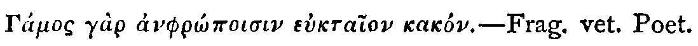
No. 262 |
Monday, December 31, 1711 |
Steele |
Nulla venenato Littera mista Joco est.
Ovid.
—Si quid novisti rectius istis,C.
Candidus imperti; si non, his utere mecum,
'If you have made any better Remarks of your own, communicate them with Candour; if not, make use of these I present you with.'
No. 263 |
Tuesday, January 1, 1712 |
Steele |
Gratulor quod eum quem necesse erat diligere, qualiscunque esset, talem habemus ut libenter quoque diligamus.T.
Trebonius apud Tull.
Mr, Spectator,
I am the happy Father of a very towardly Son, in whom I do not only see my Life, but also my Manner of Life, renewed. It would be extremely beneficial to Society, if you would frequently resume Subjects which serve to bind these sort of Relations faster, and endear the Ties of Blood with those of Good-will, Protection, Observance, Indulgence, and Veneration. I would, methinks, have this done after an uncommon Method, and do not think any one, who is not capable of writing a good Play, fit to undertake a Work wherein there will necessarily occur so many secret Instincts, and Biasses of human Nature which would pass unobserved by common Eyes. I thank Heaven I have no outrageous Offence against my own excellent Parents to answer for; but when I am now and then alone, and look back upon my past Life, from my earliest Infancy to this Time, there are many Faults which I committed that did not appear to me, even till I my self became a Father. I had not till then a Notion of the Earnings of Heart, which a Man has when he sees his Child do a laudable Thing, or the sudden Damp which seizes him when he fears he will act something unworthy. It is not to be imagined, what a Remorse touched me for a long Train of childish Negligencies of my Mother, when I saw my Wife the other Day look out of the Window, and turn as pale as Ashes upon seeing my younger Boy sliding upon the Ice. These slight Intimations will give you to understand, that there are numberless little Crimes which Children take no notice of while they are doing, which upon Reflection, when they shall themselves become Fathers, they will look upon with the utmost Sorrow and Contrition, that they did not regard, before those whom they offended were to be no more seen. How many thousand Things do I remember, which would have highly pleased my Father, and I omitted for no other Reason, but that I thought what he proposed the Effect of Humour and old Age, which I am now convinced had Reason and good Sense in it. I cannot now go into the Parlour to him, and make his Heart glad with an Account of a Matter which was of no Consequence, but that I told it, and acted in it. The good Man and Woman are long since in their Graves, who used to sit and plot the Welfare of us their Children, while, perhaps, we were sometimes laughing at the old Folks at another End of the House. The Truth of it is, were we merely to follow Nature in these great Duties of Life, tho' we have a strong Instinct towards the performing of them, we should be on both Sides very deficient. Age is so unwelcome to the Generality of Mankind, and Growth towards Manhood so desirable to all, that Resignation to Decay is too difficult a Task in the Father; and Deference, amidst the Impulse of gay Desires, appears unreasonable to the Son. There are so few who can grow old with a good Grace, and yet fewer who can come slow enough into the World, that a Father, were he to be actuated by his Desires, and a Son, were he to consult himself only, could neither of them behave himself as he ought to the other. But when Reason interposes against Instinct, where it would carry either out of the Interests of the other, there arises that happiest Intercourse of good Offices between those dearest Relations of human Life. The Father, according to the Opportunities which are offered to him, is throwing down Blessings on the Son, and the Son endeavouring to appear the worthy Offspring of such a Father. It is after this manner that Camillus and his firstborn dwell together. Camillus enjoys a pleasing and indolent old Age, in which Passion is subdued, and Reason exalted. He waits the Day of his Dissolution with a Resignation mixed with Delight, and the Son fears the Accession of his Father's Fortune with Diffidence, lest he should not enjoy or become it as well as his Predecessor. Add to this, that the Father knows he leaves a Friend to the Children of his Friends, an easie Landlord to his Tenants, and an agreeable Companion to his Acquaintance. He believes his Son's Behaviour will make him frequently remembered, but never wanted. This Commerce is so well cemented, that without the Pomp of saying, Son, be a Friend to such a one when I am gone; Camillus knows, being in his Favour, is Direction enough to the grateful Youth who is to succeed him, without the Admonition of his mentioning it. These Gentlemen are honoured in all their Neighbourhood, and the same Effect which the Court has on the Manner of a Kingdom, their Characters have on all who live within the Influence of them.
My Son and I are not of Fortune to communicate our good Actions or Intentions to so many as these Gentlemen do; but I will be bold to say, my Son has, by the Applause and Approbation which his Behaviour towards me has gained him, occasioned that many an old Man, besides my self, has rejoiced. Other Men's Children follow the Example of mine, and I have the inexpressible Happiness of overhearing our Neighbours, as we ride by, point to their Children, and say, with a Voice of Joy, There they go.
'You cannot, Mr. Spectator, pass your time better than insinuating the Delights which these Relations well regarded bestow upon each other. Ordinary Passions are no longer such, but mutual Love gives an Importance to the most indifferent things, and a Merit to Actions the most insignificant. When we look round the World, and observe the many Misunderstandings which are created by the Malice and Insinuation of the meanest Servants between People thus related, how necessary will it appear that it were inculcated that Men would be upon their Guard to support a Constancy of Affection, and that grounded upon the Principles of Reason, not the Impulses of Instinct.
It is from the common Prejudices which Men receive from their Parents, that Hatreds are kept alive from one Generation to another; and when Men act by Instinct, Hatreds will descend when good Offices are forgotten. For the Degeneracy of human Life is such, that our Anger is more easily transferred to our Children than our Love. Love always gives something to the Object it delights in, and Anger spoils the Person against whom it is moved of something laudable in him. From this Degeneracy therefore, and a sort of Self-Love, we are more prone to take up the Ill-will of our Parents, than to follow them in their Friendships.
One would think there should need no more to make Men keep up this sort of Relation with the utmost Sanctity, than to examine their own Hearts. If every Father remembered his own Thoughts and Inclinations when he was a Son, and every Son remembered what he expected from his Father, when he himself was in a State of Dependance, this one Reflection would preserve Men from being dissolute or rigid in these several Capacities. The Power and Subjection between them, when broken, make them more emphatically Tyrants and Rebels against each other, with greater Cruelty of Heart, than the Disruption of States and Empires can possibly produce. I shall end this Application to you with two Letters which passed between a Mother and Son very lately, and are as follows.Dear FRANK,
If the Pleasures, which I have the Grief to hear you pursue in Town, do not take up all your Time, do not deny your Mother so much of it, as to read seriously this Letter. You said before Mr. Letacre, that an old Woman might live very well in the Country upon half my Jointure, and that your Father was a fond Fool to give me a Rent-Charge of Eight hundred a Year to the Prejudice of his Son. What Letacre said to you upon that Occasion, you ought to have born with more Decency, as he was your Father's well-beloved Servant, than to have called him Country-put. In the first place, Frank, I must tell you, I will have my Rent duly paid, for I will make up to your Sisters for the Partiality I was guilty of, in making your Father do so much as he has done for you. I may, it seems, live upon half my Jointure! I lived upon much less, Frank, when I carried you from Place to Place in these Arms, and could neither eat, dress, or mind any thing for feeding and tending you a weakly Child, and shedding Tears when the Convulsions you were then troubled with returned upon you. By my Care you outgrew them, to throw away the Vigour of your Youth in the Arms of Harlots, and deny your Mother what is not yours to detain. Both your Sisters are crying to see the Passion which I smother; but if you please to go on thus like a Gentleman of the Town, and forget all Regards to your self and Family, I shall immediately enter upon your Estate for the Arrear due to me, and without one Tear more contemn you for forgetting the Fondness of your Mother, as much as you have the Example of your Father. O Frank, do I live to omit writing myself,
Your Affectionate Mother, A.T.
MADAM,
I will come down to-morrow and pay the Money on my Knees. Pray write so no more. I will take care you never shall, for I will be for ever hereafter,
Your most dutiful Son,
F.T.
I will bring down new Heads for my Sisters. Pray let all be forgotten.
No. 264 |
Wednesday, January 2, 1712 |
Steele |
—Secretum iter et fallentis Semita vitæ.
Hor.
Mr. Spectator,T.
Having observed in Lilly's Grammar how sweetly Bacchus and Apollo run in a Verse: I have (to preserve the Amity between them) call'd in Bacchus to the Aid of my Profession of the Theatre. So that while some People of Quality are bespeaking Plays of me to be acted upon such a Day, and others, Hogsheads for their Houses against such a Time; I am wholly employ'd in the agreeable Service of Wit and Wine: Sir, I have sent you Sir Roger de Coverley's Letter to me, which pray comply with in Favour of the Bumper Tavern. Be kind, for you know a Player's utmost Pride is the Approbation of the Spectator.
I am your Admirer, tho' unknown,
Richard Estcourt1
To Mr. Estcourt at his House in Covent-Garden.
Coverley, December the 18th, 1711.
Old Comical Ones,
The Hogsheads of Neat Port came safe, and have gotten thee good Reputation in these Parts; and I am glad to hear, that a Fellow who has been laying out his Money ever since he was born, for the meer Pleasure of Wine, has bethought himself of joining Profit and Pleasure together. Our Sexton (poor Man) having received Strength from thy Wine since his fit of the Gout, is hugely taken with it: He says it is given by Nature for the Use of Families, that no Steward's Table can be without it, that it strengthens Digestion, excludes Surfeits, Fevers and Physick; which green Wines of any kind can't do. Pray get a pure snug Room, and I hope next Term to help fill your Bumper with our People of the Club; but you must have no Bells stirring when the Spectator comes; I forbore ringing to Dinner while he was down with me in the Country. Thank you for the little Hams and Portugal Onions; pray keep some always by you. You know my Supper is only good Cheshire Cheese, best Mustard, a golden Pippin, attended with a Pipe of John Sly's Best. Sir Harry has stoln all your Songs, and tells the Story of the 5th of November to Perfection.
Yours to serve you,
Roger de Coverley.
We've lost old John since you were here.'
'neat natural wines, fresh and in perfection; being bought by Brooke and Hellier, by whom the said Tavern will from time to time be supplied with the best growths that shall be imported; to be sold by wholesale as well as retail, with the utmost fidelity by his old servant, trusty Anthony, who has so often adorned both the theatres in England and Ireland; and as he is a person altogether unknowing in the wine trade, it cannot be doubted but that he will deliver the wine in the same natural purity that he receives it from the said merchants; and on these assurances he hopes that all his friends and acquaintance will become his customers, desiring a continuance of their favours no longer than they shall find themselves well served.'This is the venture which Steele here backs for his friend with the influence of the Spectator.
No. 265 |
Thursday, January 3, 1712 |
Addison |
Dixerit e multis aliquis, quid virus in angues
Adjicis? et rabidæ tradis ovile lupæ?
Ov.
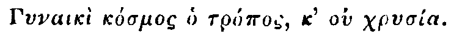C.4
'I will not meddle with the Spectator. Let him fair-sex it to the world's end.'Swift's Journal to Stella.
No. 266 |
Friday, January 4, 1712 |
Steele |
Id vero est, quod ego mihi puto palmarium,
Me reperisse, quomodo adolescentulus
Meretricum ingenia et mores possit noscere:
Mature ut cum cognórit perpetuo oderit.
Ter. Eun. Act. 5, Sc. 4.
Her Maidenhead will yield me; let me see now;These Creatures are very well instructed in the Circumstances and Manners of all who are any Way related to the Fair One whom they have a Design upon. As Cloe is to be purchased with 3502 Crowns, and the Father taken off with a Pad; the Merchant's Wife next to her, who abounds in Plenty, is not to have downright Money, but the mercenary Part of her Mind is engaged with a Present of Plate and a little Ambition. She is made to understand that it is a Man of Quality who dies for her. The Examination of a young Girl for Business, and the crying down her Value for being a slight Thing, together with every other Circumstance in the Scene, are inimitably excellent, and have the true Spirit of Comedy; tho' it were to be wished the Author had added a Circumstance which should make Leucippe's Baseness more odious.
She is not Fifteen they say: For her Complexion—-
Cloe, Cloe, Cloe, here I have her,
Cloe, the Daughter of a Country Gentleman;
Here Age upon Fifteen. Now her Complexion,
A lovely brown; here 'tis; Eyes black and rolling,
The Body neatly built; she strikes a Lute well,
Sings most enticingly: These Helps consider'd,
Her Maidenhead will amount to some three hundred,
Or three hundred and fifty Crowns, 'twill bear it handsomly.
Her Father's poor, some little Share deducted,
To buy him a Hunting Nag—
No. 267 |
Saturday, January 5, 1712 |
Addison |
Cedite Romani Scriptores, cedite Graii.1
Propert.
'Give place to him, Writers of Rome and Greece.'This application to Milton of a line from the last elegy (25th) in the second book of Propertius is not only an example of Addison's felicity in choice of motto for a paper, but was so bold and well-timed that it must have given a wholesome shock to the minds of many of the Spectator's readers. Addison was not before Steele in appreciation of Milton and diffusion of a true sense of his genius. Milton was the subject of the first piece of poetical criticism in the Tatler; where, in his sixth number, Steele, having said that 'all Milton's 'thoughts are wonderfully just and natural,' dwelt on the passage in which Adam tells his thoughts upon first falling asleep, soon after his creation. This passage he contrasts with 'the same apprehension of Annihilation' ascribed to Eve in a much lower sense by Dryden in his operatic version of Paradise Lost. In Tatlers and Spectators Steele and Addison had been equal contributors to the diffusion of a sense of Milton's genius. In Addison it had been strong, even when, at Oxford, in April, 1694, a young man trained in the taste of the day, he omitted Shakespeare from a rhymed 'Account of the chief English Poets,' but of Milton said:
'Whate'er his pen describes I more than see,Eighteen years older than he was when he wrote that, Addison now prepares by a series of Saturday Essays,—the Saturday Paper which reached many subscribers only in time for Sunday reading, being always set apart in the Spectator for moral or religious topics, to show that, judged also by Aristotle and the "critics' nicer laws," Milton was even technically a greater epic poet than either Homer or Virgil. This nobody had conceded. Dryden, the best critic of the outgoing generation, had said in the Dedication of the Translations of Juvenal and Persius, published in 1692,
Whilst ev'ry verse, array'd in majesty,
Bold and sublime, my whole attention draws,
And seems above the critics' nicer laws.'
"As for Mr. Milton, whom we all admire with so much Justice, his Subject, is not that of an Heroick Poem, properly so call'd: His Design is the Losing of our Happiness; his Event is not prosperous, like that of all other Epique Works" (Dryden's French spelling of the word Epic is suggestive. For this new critical Mode was one of the fashions that had been imported from Paris); "His Heavenly Machines are many, and his Human Persons are but two. But I will not take Mr. Rymer's work out of his Hands: He has promised the World a Critique on that Author; wherein, tho' he will not allow his Poem for Heroick, I hope he will grant us, that his Thoughts are elevated, his Words sounding, and that no Man has so happily copy'd the manner of Homer; or so copiously translated his Grecisms and the Latin Elegancies of Virgil. 'Tis true he runs into a Flat of Thought, sometimes for a Hundred Lines together, but 'tis when he is got into a Track of Scripture ... Neither will I justify Milton for his Blank Verse, tho' I may excuse him, by the Example of Hanabal Caro and other Italians who have used it: For whatever Causes he alledges for the abolishing of Rhime (which I have not now the leisure to examine), his own particular Reason is plainly this, that Rhime was not his Talent; he had neither the Ease of doing it, nor the Graces of it."So Dryden, who appreciated Milton better than most of his critical neighbours, wrote of him in 1692. The promise of Rymer to discuss Milton was made in 1678, when, on the last page of his little book, The Tragedies of the Last Age consider'd and examined by the Practice of the Ancients and by the Common Sense of all Ages, in a letter to Fleetwold Shepheard, Esq. (father of two ladies who contribute an occasional letter to the Spectator), he said:
"With the remaining Tragedies I shall also send you some reflections on that Paradise Lost of Milton's, which some are pleased to call a Poem, and assert Rhime against the slender Sophistry wherewith he attaques it."But two years after the appearance of Dryden's Juvenal and Persius Rymer prefixed to his translation of Réné Rapin's Reflections on Aristotle's Poesie some Reflections of his own on Epic Poets. Herein he speaks under the head Epic Poetry of Chaucer, 'in whose time language was not capable of heroic character;' or Spenser, who "wanted a true Idea, and lost himself by following an unfaithful guide, besides using a stanza which is in no wise proper for our language;" of Sir William Davenant, who, in Gondibert, "has some strokes of an extraordinary judgment," but "is for unbeaten tracks and new ways of thinking;" "his heroes are foreigners;" of Cowley, in whose Davideis "David is the least part of the Poem," and there is want of the "one illustrious and perfect action which properly is the subject of an Epick Poem": all failing through ignorance or negligence of the Fundamental Rules or Laws of Aristotle. But he contemptuously passes over Milton without 'mention.' Réné Rapin, that great French oracle of whom Dryden said, in the Preface to his own conversion of Paradise Lost into an opera, that he was 'alone sufficient, were all other critics lost, to teach anew the Art of Writing,' Réné Rapin in the work translated and introduced by Rymer, worshipped in Aristotle the one God of all orthodox critics. Of his Laws he said,
'There is no arriving at Perfection but by these Rules, and they certainly go astray that take a different course.... And if a Poem made by these Rules fails of success, the fault lies not in the Art, but in the Artist; all who have writ of this Art, have followed no other Idea but that of Aristotle.'Again as to Style,
'to say the truth, what is good on this subject is all taken from Aristotle, who is the only source whence good sense is to be drawn, when one goes about to write.'This was the critical temper Addison resolved to meet on its own ground and do battle with for the honour of that greatest of all Epic Poets to whom he fearlessly said that all the Greeks and Latins must give place. In so doing he might suggest here and there cautiously, and without bringing upon himself the discredit of much heresy,—indeed, without being much of a heretic, —that even the Divine Aristotle sometimes fell short of perfection. The conventional critics who believed they kept the gates of Fame would neither understand nor credit him. Nine years after these papers appeared, Charles Gildon, who passed for a critic of considerable mark, edited with copious annotation as 'the Laws of Poetry' (1721), the Duke of Buckingham's 'Essay on Poetry,' Roscommon's 'Essay on Translated Verse,' and Lord Lansdowne 'on Unnatural Flights in Poetry,' and in the course of comment Gildon said that
'Mr. Addison in the Spectators, in his criticisms upon Milton, seems to have mistaken the matter, in endeavouring to bring that poem to the rules of the epopœia, which cannot be done ... It is not an Heroic Poem, but a Divine one, and indeed of a new species. It is plain that the proposition of all the heroic poems of the ancients mentions some one person as the subject of their poem... But Milton begins his poem of things, and not of men.'The Gildons are all gone; and when, in the next generation after theirs, national life began, in many parts of Europe, strongly to assert itself in literature against the pedantry of the French critical lawgivers, in Germany Milton's name was inscribed on the foremost standard of the men who represented the new spirit of the age. Gottsched, who dealt French critical law from Leipzig, by passing sentence against Milton in his 'Art of Poetry' in 1737, raised in Bodmer an opponent who led the revolt of all that was most vigorous in German thought, and put an end to French supremacy. Bodmer, in a book published in 1740 Vom Wunderbaren in der Poesie, justified and exalted Milton, and brought Addison to his aid by appending to his own work a translation of these Milton papers out of the Spectator. Gottsched replied; Bodmer retorted. Bodmer translated Paradise Lost; and what was called the English or Milton party (but was, in that form, really a German national party) were at last left masters of the field. It was right that these papers of Addison should be brought in as aids during the contest. Careful as he was to conciliate opposing prejudices, he was yet first in the field, and this motto to the first of his series of Milton papers, 'Yield place to him, Writers of Greece and Rome,' is as the first trumpet note of the one herald on a field from which only a quick ear can yet distinguish among stir of all that is near, the distant tramp of an advancing host.
'with respect to that species of Poetry which imitates by Narration ... it is obvious, that the Fable ought to be dramatically constructed, like that of Tragedy, and that it should have for its Subject one entire and perfect action, having a beginning, a middle, and an end;'forming a complete whole, like an animal, and therein differing, Aristotle says, from History, which treats not of one Action, but of one Time, and of all the events, casually connected, which happened to one person or to many during that time.
'Epic Poetry agrees so far with Tragic as it is an imitation of great characters and actions.'Aristotle (from whose opinion, in this matter alone, his worshippers departed, right though he was) ranked a perfect tragedy above a perfect epic; for, he said,
'all the parts of the Epic poem are to be found in Tragedy, not all those of Tragedy in the Epic poem.'return
Nec reditum Diomedis ab interitu Meleagri,De Arte Poet. II. 146-9.
Nec gemino bellum Trojanum orditur ab ovo,
Semper ad eventum festinat, et in medias res,
Non secus ac notas, auditorem rapit—
'there is less Unity in all Epic imitation; as appears from this—that any Epic Poem will furnish matter for several Tragedies ... The Iliad, for example, and the Odyssey, contain many such subordinate parts, each of which has a certain Magnitude and Unity of its own; yet is the construction of those Poems as perfect, and as nearly approaching to the imitation of a single action, as possible.'return
'the felicity does not consist in the ingenuity of his original conception, but in the minutely artificial strokes by which the reader is perpetually reminded of the dependence of the one part of the Play on the other. These are so frequent, and appear so very natural, that the comic plot, instead of diverting our attention from the tragic business, recalls it to our mind by constant and unaffected allusion. No great event happens in the higher region of the camp or court that has not some indirect influence upon the intrigues of Lorenzo and Elvira; and the part which the gallant is called upon to act in the revolution that winds up the tragic interest, while it is highly in character, serves to bring the catastrophe of both parts of the play under the eye of the spectator, at one and the same time.'return
'And as young striplings whip the top for sport,return
On the smooth pavement of an empty court,
The wooden engine files and whirls about,
Admir'd, with clamours, of the beardless rout;
They lash aloud, each other they provoke,
And lend their little souls at every stroke:
Thus fares the Queen, and thus her fury blows
Amidst the crowds, and trundles as she goes.'
No. 268 |
Monday, January 7, 1712 |
Steele |
—Minus aptus acutisT.
Naribus Horum Hominum.
Hor.
Mr. Spectator1,
'As you are Spectator-General, I apply myself to you in the following Case; viz. I do not wear a Sword, but I often divert my self at the Theatre, where I frequently see a Set of Fellows pull plain People, by way of Humour and2 Frolick, by the Nose, upon frivolous or no Occasions. A Friend of mine the other Night applauding what a graceful Exit Mr. Wilks made, one of these Nose-wringers overhearing him, pinched him by the nose. I was in the Pit the other Night, (when it was very much crowded) a Gentleman leaning upon me, and very heavily, I very civilly requested him to remove his Hand; for which he pulled me by the Nose. I would not resent it in so publick a Place, because I was unwilling to create a Disturbance; but have since reflected upon it as a thing that is unmanly and disingenuous, renders the Nose-puller odious, and makes the Person pulled by the Nose look little and contemptible. This Grievance I humbly request you would endeavour to redress.
I am your Admirer, &c.
James Easy.
Mr. Spectator,
Your Discourse of the 29th of December on Love and Marriage is of so useful a Kind, that I cannot forbear adding my Thoughts to yours on that Subject. Methinks it is a Misfortune, that the Marriage State, which in its own Nature is adapted to give us the compleatest Happiness this Life is capable of, should be so uncomfortable a one to so many as it daily proves. But the Mischief generally proceeds from the unwise Choice People make for themselves, and Expectation of Happiness from Things not capable of giving it. Nothing but the good Qualities of the Person beloved can be a Foundation for a Love of Judgment and Discretion; and whoever expects Happiness from any Thing but Virtue, Wisdom, Good-humour, and a Similitude of Manners, will find themselves widely mistaken. But how few are there who seek after these things, and do not rather make Riches their chief if not their only Aim? How rare is it for a Man, when he engages himself in the Thoughts of Marriage, to place his Hopes of having in such a Woman a constant, agreeable Companion? One who will divide his Cares and double his Joys? Who will manage that Share of his Estate he intrusts to her Conduct with Prudence and Frugality, govern his House with Œconomy and Discretion, and be an Ornament to himself and Family? Where shall we find the Man who looks out for one who places her chief Happiness in the Practice of Virtue, and makes her Duty her continual Pleasure? No: Men rather seek for Money as the Complement of all their Desires; and regardless of what kind of Wives they take, they think Riches will be a Minister to all kind of Pleasures, and enable them to keep Mistresses, Horses, Hounds, to drink, feast, and game with their Companions, pay their Debts contracted by former Extravagancies, or some such vile and unworthy End; and indulge themselves in Pleasures which are a Shame and Scandal to humane Nature. Now as for the Women; how few of them are there who place the Happiness of their Marriage in the having a wise and virtuous Friend? one who will be faithful and just to all, and constant and loving to them? who with Care and Diligence will look after and improve the Estate, and without grudging allow whatever is prudent and convenient? Rather, how few are there who do not place their Happiness in outshining others in Pomp and Show? and that do not think within themselves when they have married such a rich Person, that none of their Acquaintance shall appear so fine in their Equipage, so adorned in their Persons, or so magnificent in their Furniture as themselves? Thus their Heads are filled with vain Ideas; and I heartily wish I could say that Equipage and Show were not the Chief Good of so many Women as I fear it is.
After this Manner do both Sexes deceive themselves, and bring Reflections and Disgrace upon the most happy and most honourable State of Life; whereas if they would but correct their depraved Taste, moderate their Ambition, and place their Happiness upon proper Objects, we should not find Felicity in the Marriage State such a Wonder in the World as it now is.
Sir, if you think these Thoughts worth inserting among3 your own, be pleased to give them a better Dress, and let them pass abroad; and you will oblige Your Admirer,
A. B.
Mr. Spectator,
As I was this Day walking in the Street, there happened to pass by on the other Side of the Way a Beauty, whose Charms were so attracting that it drew my Eyes wholly on that Side, insomuch that I neglected my own Way, and chanced to run my Nose directly against a Post; which the Lady no sooner perceived, but fell out into a Fit of Laughter, though at the same time she was sensible that her self was the Cause of my Misfortune, which in my Opinion was the greater Aggravation of her Crime. I being busy wiping off the Blood which trickled down my Face, had not Time to acquaint her with her Barbarity, as also with my Resolution, viz. never to look out of my Way for one of her Sex more: Therefore, that your humble Servant may be revenged, he desires you to insert this in one of your next Papers, which he hopes will be a Warning to all the rest of the Women Gazers, as well as to poor
Anthony Gape.
Mr. Spectator,
I desire to know in your next, if the merry Game of The Parson has lost his Cloak, is not mightily in Vogue amongst the fine Ladies this Christmas; because I see they wear Hoods of all Colours, which I suppose is for that Purpose: If it is, and you think it proper, I will carry some of those Hoods with me to our Ladies in Yorkshire; because they enjoyned me to bring them something from London that was very New. If you can tell any Thing in which I can obey their Commands more agreeably, be pleased to inform me, and you will extremely oblige
Your humble Servant
Oxford, Dec. 29.
Mr. Spectator,
Since you appear inclined to be a Friend to the Distressed, I beg you would assist me in an Affair under which I have suffered very much. The reigning Toast of this Place is Patetia; I have pursued her with the utmost Diligence this Twelve-month, and find nothing stands in my Way but one who flatters her more than I can. Pride is her Favourite Passion; therefore if you would be so far my Friend as to make a favourable Mention of her in one of your Papers, I believe I should not fail in my Addresses. The Scholars stand in Rows, as they did to be sure in your Time, at her Pew-door: and she has all the Devotion paid to her by a Crowd of Youths who are unacquainted with the Sex, and have Inexperience added to their Passion: However, if it succeeds according to my Vows, you will make me the happiest Man in the World, and the most obliged amongst all
Your humble Servants.
Mr. Spectator,
I came to4 my Mistress's Toilet this Morning, for I am admitted when her Face is stark naked: She frowned, and cryed Pish when I said a thing that I stole; and I will be judged by you whether it was not very pretty. Madam, said I, you shall5 forbear that Part of your Dress; it may be well in others, but you cannot place a Patch where it does not hide a Beauty.
No. 269 |
Tuesday, January 8, 1712 |
Addison |
—Ævo rarissima nostro
Simplicitas—
Ovid.
No. 270 |
Wednesday, January 9, 1712 |
Steele |
Discit enim citius, meminitque libentius illud,
Quod quis deridet, quam quod probat.
Hor.
No. 271 |
Thursday, January 10, 1712 |
Addison |
Mille trahens varios adverso sole colores.
Virg.
Sir,L.
'I was last Thursday in an Assembly of Ladies, where there were Thirteen different coloured Hoods. Your Spectator of that Day lying upon the Table, they ordered me to read it to them, which I did with a very clear Voice, 'till I came to the Greek Verse at the End of it. I must confess I was a little startled at its popping upon me so unexpectedly. However, I covered my Confusion as well as I could, and after having mutter'd two or three hard Words to my self, laugh'd heartily, and cried, A very good Jest, Faith. The Ladies desired me to explain it to them; but I begged their pardon for that, and told them, that if it had been proper for them to hear, they may be sure the Author would not have wrapp'd it up in Greek. I then let drop several Expressions, as if there was something in it that was not fit to be spoken before a Company of Ladies. Upon which the Matron of the Assembly, who was dressed in a Cherry-coloured Hood, commended the Discretion of the Writer for having thrown his filthy Thoughts into Greek, which was likely to corrupt but few of his Readers. At the same time she declared herself very well pleased, that he had not given a decisive Opinion upon the new-fashioned Hoods; for to tell you truly, says she, I was afraid he would have made us ashamed to shew our Heads. Now, Sir, you must know, since this unlucky Accident happened to me in a Company of Ladies, among whom I passed for a most ingenious Man, I have consulted one who is well versed in the Greek Language, and he assures me upon his Word, that your late Quotation means no more, than that Manners and not Dress are the Ornaments of a Woman. If this comes to the Knowledge of my Female Admirers, I shall be very hard put to it to bring my self off handsomely. In the mean while I give you this Account, that you may take care hereafter not to betray any of your Well-wishers into the like Inconveniencies. It is in the Number of these that I beg leave to subscribe my self,
Tom Trippit.
Mr. Spectator,
' Your Readers are so well pleased with your Character of Sir Roger De Coverley, that there appeared a sensible Joy in every Coffee-house, upon hearing the old Knight was come to Town. I am now with a Knot of his Admirers, who make it their joint Request to you, that you would give us publick Notice of the Window or Balcony where the Knight intends to make his Appearance. He has already given great Satisfaction to several who have seen him at Squire's Coffee-house. If you think fit to place your short Face at Sir Roger's Left Elbow, we shall take the Hint, and gratefully acknowledge so great a Favour.
I am, Sir,
Your most Devoted
Humble Servant,
C. D.
Sir,
' Knowing that you are very Inquisitive after every thing that is Curious in Nature, I will wait on you if you please in the Dusk of the Evening, with my Show upon my Back, which I carry about with me in a Box, as only consisting of a Man, a Woman, and an Horse. The two first are married, in which State the little Cavalier has so well acquitted himself, that his Lady is with Child. The big-bellied Woman, and her Husband, with their whimsical Palfry, are so very light, that when they are put together into a Scale, an ordinary Man may weigh down the whole Family. The little Man is a Bully in his Nature; but when he grows cholerick I confine him to his Box till his Wrath is over, by which Means I have hitherto prevented him from doing Mischief. His Horse is likewise very vicious, for which Reason I am forced to tie him close to his Manger with a Pack-thread. The Woman is a Coquet. She struts as much as it is possible for a Lady of two Foot high, and would ruin me in Silks, were not the Quantity that goes to a large Pin-Cushion sufficient to make her a Gown and Petticoat. She told me the other Day, that she heard the Ladies wore coloured Hoods, and ordered me to get her one of the finest Blue. I am forced to comply with her Demands while she is in her present Condition, being very willing to have more of the same Breed. I do not know what she may produce me, but provided it be a Show I shall be very well satisfied. Such Novelties should not, I think, be concealed from the British Spectator; for which Reason I hope you will excuse this Presumption in
Your most Dutiful,
most Obedient,
and most Humble Servant,
S. T.
No. 272 |
Friday, January 11, 1712 |
Steele |
Longa est injuria, longæ
Ambages
Virg.1
Mr. Spectator,
The Occasion of this Letter is of so great Importance, and the Circumstances of it such, that I know you will but think it just to insert it, in Preference of all other Matters that can present themselves to your Consideration. I need not, after I have said this, tell you that I am in Love. The Circumstances of my Passion I shall let you understand as well as a disordered Mind will admit. That cursed Pickthank Mrs. Jane! Alas, I am railing at one to you by her Name as familiarly as if you were acquainted with her as well as my self: But I will tell you all, as fast as the alternate Interruptions of Love and Anger will give me Leave. There is a most agreeable young Woman in the World whom I am passionately in Love with, and from whom I have for some space of Time received as great Marks of Favour as were fit for her to give, or me to desire. The successful Progress of the Affair of all others the most essential towards a Man's Happiness, gave a new Life and Spirit not only to my Behaviour and Discourse, but also a certain Grace to all my Actions in the Commerce of Life in all Things tho' never so remote from Love. You know the predominant Passion spreads its self thro' all a Man's Transactions, and exalts or depresses him2 according to the Nature of such Passion. But alas, I have not yet begun my Story, and what is making Sentences and Observations when a Man is pleading for his Life? To begin then: This Lady has corresponded with me under the Names of Love, she my Belinda, I her Cleanthes. Tho' I am thus well got into the Account of my Affair, I cannot keep in the Thread of it so much as to give you the Character of Mrs. Jane, whom I will not hide under a borrowed Name; but let you know that this Creature has been since I knew her very handsome, (tho' I will not allow her even she has been for the future) and during the Time of her Bloom and Beauty was so great a Tyrant to her Lovers, so over-valued her self and under-rated all her Pretenders, that they have deserted her to a Man; and she knows no Comfort but that common one to all in her Condition, the Pleasure of interrupting the Amours of others. It is impossible but you must have seen several of these Volunteers in Malice, who pass their whole Time in the most labourous Way of Life in getting Intelligence, running from Place to Place with new Whispers, without reaping any other Benefit but the Hopes of making others as unhappy as themselves. Mrs. Jane happened to be at a Place where I, with many others well acquainted with my Passion for Belinda, passed a Christmas Evening. There was among the rest a young Lady so free in Mirth, so amiable in a just Reserve that accompanied it; I wrong her to call it a Reserve, but there appeared in her a Mirth or Chearfulness which was not a Forbearance of more immoderate Joy, but the natural Appearance of all which could flow from a Mind possessed of an Habit of Innocence and Purity. I must have utterly forgot Belinda to have taken no Notice of one who was growing up to the same womanly Virtues which shine to Perfection in her, had I not distinguished one who seemed to promise to the World the same Life and Conduct with my faithful and lovely Belinda. When the Company broke up, the fine young Thing permitted me to take Care of her Home. Mrs. Jane saw my particular Regard to her, and was informed of my attending her to her Father's House. She came early to Belinda the next Morning, and asked her if Mrs. Such-a-one had been with her? No. If Mr. Such-a-one's Lady? No. Nor your Cousin Such-a-one? No. Lord, says Mrs. Jane, what is the Friendship of Woman?—Nay, they may laugh at it. And did no one tell you any thing of the Behaviour of your Lover Mr. What d'ye call last Night? But perhaps it is nothing to you that he is to be married to young Mrs.—on Tuesday next? Belinda was here ready to die with Rage and Jealousy. Then Mrs. Jane goes on: I have a young Kinsman who is Clerk to a Great Conveyancer, who shall shew you the rough Draught of the Marriage Settlement. The World says her Father gives him Two Thousand Pounds more than he could have with you. I went innocently to wait on Belinda as usual, but was not admitted; I writ to her, and my Letter was sent back unopened. Poor Betty her Maid, who is on my Side, has been here just now blubbering, and told me the whole Matter. She says she did not think I could be so base; and that she is now odious to her Mistress for having so often spoke well of me, that she dare not mention me more. All our Hopes are placed in having these Circumstances fairly represented in the Spectator, which Betty says she dare not but bring up as soon as it is brought in; and has promised when you have broke the Ice to own this was laid between us: And when I can come to an Hearing, the young Lady will support what we say by her Testimony, that I never saw her but that once in my whole Life. Dear Sir, do not omit this true Relation, nor think it too particular; for there are Crowds of forlorn Coquets who intermingle themselves with other Ladies, and contract Familiarities out of Malice, and with no other Design but to blast the Hopes of Lovers, the Expectation of Parents, and the Benevolence of Kindred. I doubt not but I shall be,
Sir,
Your most obliged
humble Servant,
Cleanthes.
Will's Coffee-house, Jan. 10.
Sir,
The other Day entering a Room adorned with the Fair Sex, I offered, after the usual Manner, to each of them a Kiss; but one, more scornful than the rest, turned her Cheek. I did not think it proper to take any Notice of it till I had asked your Advice.
Your humble Servant, E. S.
Ubi visus eris nostra medicabilis arte Fac monitis fugias otia prima meis.Ovid. Rem. Am.
No. 273 |
Saturday, January 12, 1712 |
Addison |
Notandi sunt tibi Mores.
Hor.
Fortemque Gyan, fortemque Cloanthum.There are indeed several very Natural Incidents on the Part of Ascanius; as that of Dido cannot be sufficiently admired. I do not see any thing new or particular in Turnus. Pallas and Evander are remote Copies of Hector and Priam, as Lausus and Mezentius are almost Parallels to Pallas and Evander. The Characters of Nisus and Eurialus are beautiful, but common. We must not forget the Parts of Sinon, Camilla, and some few others, which are fine Improvements on the Greek Poet. In short, there is neither that Variety nor Novelty in the Persons of the Æneid, which we meet with in those of the Iliad.
'If a Man of perfect and consummate Virtue falls into a Misfortune, it raises our Pity, but not our Terror, because we do not fear that it may be our own Case, who do not resemble the Suffering Person. But as that great Philosopher adds, If we see a Man of Virtue mixt with Infirmities, fall into any Misfortune, it does not only raise our Pity but our Terror; because we are afraid that the like Misfortunes may happen to our selves, who resemble the Character of the Suffering Person.'I shall take another Opportunity to observe, that a Person of an absolute and consummate Virtue should never be introduced in Tragedy, and shall only remark in this Place, that the foregoing Observation of Aristotle12 tho' it may be true in other Occasions, does not hold in this; because in the present Case, though the Persons who fall into Misfortune are of the most perfect and consummate Virtue, it is not to be considered as what may possibly be, but what actually is our own Case; since we are embarked with them on the same Bottom, and must be Partakers of their Happiness or Misery.
'one of the greatest and most daring Genius's that has appear'd in the World, and who has made his country a glorious present of the most lofty, but most irregular Poem, that has been produc'd by the Mind of Man. That great Man had a desire to give the World something like an Epick Poem; but he resolv'd at the same time to break thro' the Rules of Aristotle. Not that he was ignorant of them, or contemned them.... Milton was the first who in the space of almost 4000 years resolv'd for his Country's Honour and his own, to present the World with an Original Poem; that is to say, a Poem that should have his own thoughts, his own images, and his own spirit. In order to this he was resolved to write a Poem, that, by virtue of its extraordinary Subject, cannot so properly be said to be against the Rules as it may be affirmed to be above them all ... We shall now shew for what Reasons the choice of Milton's Subject, as it set him free from the obligation which he lay under to the Poetical Laws, so it necessarily threw him upon new Thoughts, new Images, and an Original Spirit. In the next place we shall shew that his Thoughts, his Images, and by consequence too, his Spirit are actually new, and different from those of Homer and Virgil. Thirdly, we shall shew, that besides their Newness, they have vastly the Advantage of Homer and Virgil.']return
'Shrill Colon's person took,return
In morals loose, but most precise in look.'
'this is neither terrible nor piteous, but 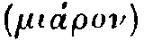 shocking. Then he adds that our pity is excited by undeserved misfortune, and our terror by some resemblance between the sufferer and ourselves.'return
No. 274 |
Monday, January 14, 1712 |
Steele |
Audire est operæ pretium, procedere recte
Qui mœchis non vultis.
Hor.
January 5, 1711.T.
Mr. Spectator,
'The Subject of your Yesterday's Paper is of so great Importance, and the thorough handling of it may be so very useful to the Preservation of many an innocent young Creature, that I think every one is obliged to furnish you with what Lights he can, to expose the pernicious Arts and Practices of those unnatural Women called Bawds. In order to this the enclosed is sent you, which is verbatim the Copy of a Letter written by a Bawd of Figure in this Town to a noble Lord. I have concealed the Names of both, my Intention being not to expose the Persons but the Thing.
I am,
Sir,
Your humble ServantMy Lord,
'I having a great Esteem for your Honour, and a better Opinion of you than of any of the Quality, makes me acquaint you of an Affair that I hope will oblige you to know. I have a Niece that came to Town about a Fortnight ago. Her Parents being lately dead she came to me, expecting to a found me in so good a Condition as to a set her up in a Milliner's Shop. Her Father gave Fourscore Pounds with her for five Years: Her Time is out, and she is not Sixteen; as pretty a black Gentlewoman as ever you saw, a little Woman, which I know your Lordship likes: well shaped, and as fine a Complection for Red and White as ever I saw; I doubt not but your Lordship will be of the same Opinion. She designs to go down about a Month hence except I can provide for her, which I cannot at present. Her Father was one with whom all he had died with him, so there is four Children left destitute; so if your Lordship thinks fit to make an Appointment where I shall wait on you with my Niece, by a Line or two, I stay for your Answer; for I have no Place fitted up since I left my House, fit to entertain your Honour. I told her she should go with me to see a Gentleman a very good Friend of mine; so I desire you to take no Notice of my Letter by reason she is ignorant of the Ways of the Town. My Lord, I desire if you meet us to come alone; for upon my Word and Honour you are the first that ever I mentioned her to. So I remain,
Your Lordship's
Most humble Servant to Command.
'I beg of you to burn it when you've read it.
No. 275 |
Tuesday, January 15, 1712 |
Addison |
—tribus Anticyris caput insanabile—
Juv.
No. 276 |
Wednesday, January 16, 1712 |
Steele |
Errori nomen virtus posuisset honestum.T.
Hor.
Mr. Spectator,
'I hope you have Philosophy enough to be capable of bearing the Mention of your Faults. Your Papers which regard the fallen Part of the Fair Sex, are, I think, written with an Indelicacy, which makes them unworthy to be inserted in the Writings of a Moralist who knows the World. I cannot allow that you are at Liberty to observe upon the Actions of Mankind with the Freedom which you seem to resolve upon; at least if you do, you should take along with you the Distinction of Manners of the World, according to the Quality and Way of Life of the Persons concerned. A Man of Breeding speaks of even Misfortune among Ladies without giving it the most terrible Aspect it can bear: And this Tenderness towards them, is much more to be preserved when you speak of Vices. All Mankind are so far related, that Care is to be taken, in things to which all are liable, you do not mention what concerns one in Terms which shall disgust another. Thus to tell a rich Man of the Indigence of a Kinsman of his, or abruptly inform a virtuous Woman of the Lapse of one who till then was in the same degree of Esteem with her self, is in a kind involving each of them in some Participation of those Disadvantages. It is therefore expected from every Writer, to treat his Argument in such a Manner, as is most proper to entertain the sort of Readers to whom his Discourse is directed. It is not necessary when you write to the Tea-table, that you should draw Vices which carry all the Horror of Shame and Contempt: If you paint an impertinent Self-love, an artful Glance, an assumed Complection, you say all which you ought to suppose they can possibly be guilty of. When you talk with this Limitation, you behave your self so as that you may expect others in Conversation may second your Raillery; but when you do it in a Stile which every body else forbears in Respect to their Quality, they have an easy Remedy in forbearing to read you, and hearing no more of their Faults. A Man that is now and then guilty of an Intemperance is not to be called a Drunkard; but the Rule of polite Raillery, is to speak of a Man's Faults as if you loved him. Of this Nature is what was said by Cæsar: When one was railing with an uncourtly Vehemence, and broke out, What must we call him who was taken in an Intrigue with another Man's Wife? Cæsar answered very gravely, A careless Fellow. This was at once a Reprimand for speaking of a Crime which in those Days had not the Abhorrence attending it as it ought, as well as an Intimation that all intemperate Behaviour before Superiors loses its Aim, by accusing in a Method unfit for the Audience. A Word to the Wise. All I mean here to say to you is, That the most free Person of Quality can go no further than being a kind Woman1; and you should never say of a Man of Figure worse, than that he knows the World.
I am, Sir,
Your most humble Servant,
Francis Courtly.
Mr. Spectator,
'I am a Woman of an unspotted Reputation, and know nothing I have ever done which should encourage such Insolence; but here was one the other Day, and he was dressed like a Gentleman too, who took the Liberty to name the Words Lusty Fellow in my Presence. I doubt not but you will resent it in Behalf of,
Sir,
Your Humble Servant,
Celia.
Mr. Spectator,
'You lately put out a dreadful Paper, wherein you promise a full Account of the State of criminal Love; and call all the Fair who have transgressed in that Kind by one very rude Name which I do not care to repeat: But 1 desire to know of you whether I am or I am not of those? My Case is as follows. I am kept by an old Batchelour, who took me so young, that I knew not how he came by me: He is a Bencher of one of the Inns of Court, a very gay healthy old Man; which is a lucky thing for him, who has been, he tells me, a Scowrer, a Scamperer, a Breaker of Windows, an Invader of Constables, in the Days of Yore when all Dominion ended with the Day, and Males and Females met helter skelter, and the Scowrers drove before them all who pretended to keep up Order or Rule to the Interruption of Love and Honour. This is his way of Talk, for he is very gay when he visits me; but as his former Knowledge of the Town has alarmed him into an invincible Jealousy, he keeps me in a pair of Slippers, neat Bodice, warm Petticoats, and my own Hair woven in Ringlets, after a Manner, he says, he remembers. I am not Mistress of one Farthing of Money, but have all Necessaries provided for me, under the Guard of one who procured for him while he had any Desires to gratify. I know nothing of a Wench's Life, but the Reputation of it: I have a natural Voice, and a pretty untaught Step in Dancing. His Manner is to bring an old Fellow who has been his Servant from his Youth, and is gray-headed: This Man makes on the Violin a certain Jiggish Noise to which I dance, and when that is over I sing to him some loose Air, that has more Wantonness than Musick in it. You must have seen a strange window'd House near Hide-Park, which is so built that no one can look out of any of the Apartments; my Rooms are after that manner, and I never see Man, Woman, or Child, but in Company with the two Persons above-mentioned. He sends me in all the Books, Pamphlets, Plays, Operas and Songs that come out; and his utmost Delight in me as a Woman, is to talk over old Amours in my Presence, to play with my Neck, say the Time was, give me a Kiss, and bid me be sure to follow the Directions of my Guardian (the above-mentioned Lady) and I shall never want. The Truth of my Case is, I suppose, that I was educated for a Purpose he did not know he should be unfit for when I came to Years. Now, Sir, what I ask of you, as a Casuist, is to tell me how far in these Circumstances I am innocent, though submissive; he guilty, though impotent?
I am,
Sir,
Your constant Reader,
Pucella.
To the Man called the Spectator.
Friend,
'Forasmuch as at the Birth of thy Labour, thou didst promise upon thy Word, that letting alone the Vanities that do abound, thou wouldst only endeavour to strengthen the crooked Morals of this our Babylon, I gave Credit to thy fair Speeches, and admitted one of thy Papers, every Day save Sunday, into my House; for the Edification of my Daughter Tabitha, and to the end that Susannah the Wife of my Bosom might profit thereby. But alas, my Friend, I find that thou art a Liar, and that the Truth is not in thee; else why didst thou in a Paper which thou didst lately put forth, make mention of those vain Coverings for the Heads of our Females, which thou lovest to liken unto Tulips, and which are lately sprung up amongst us? Nay why didst thou make mention of them in such a seeming, as if thou didst approve the Invention, insomuch that my Daughter Tabitha beginneth to wax wanton, and to lust after these foolish Vanities? Surely thou dost see with the Eyes of the Flesh. Verily therefore, unless thou dost speedily amend and leave off following thine own Imaginations, I will leave off thee.
Thy Friend as hereafter thou dost demean thyself,
Hezekiah Broadbrim.
No. 277 |
Thursday, January 17, 1712 |
Budgell |
—fas est et ab hoste doceri. Virg.
Mr. Spectator,
'I am so great a Lover of whatever is French, that I lately discarded an humble Admirer, because he neither spoke that Tongue, nor drank Claret. I have long bewailed, in secret, the Calamities of my Sex during the War, in all which time we have laboured under the insupportable Inventions of English Tire-Women, who, tho' they sometimes copy indifferently well, can never compose with that Goût they do in France.
I was almost in Despair of ever more seeing a Model from that dear Country, when last Sunday I over-heard a Lady, in the next Pew to me, whisper another, that at the Seven Stars in King-street Covent-garden, there was a Madamoiselle compleatly dressed just come from Paris.
I was in the utmost Impatience during the remaining part of the Service, and as soon as ever it was over, having learnt the Milleners Addresse, I went directly to her House in King-street, but was told that the French Lady was at a Person of Qualitys in Pall-mall, and would not be back again till very late that Night. I was therefore obliged to renew my Visit very early this Morning, and had then a full View of the dear Moppet from Head to Foot.
You cannot imagine, worthy Sir, how ridiculously I find we have all been trussed up during the War, and how infinitely the French Dress excels ours.
The Mantua has no Leads in the Sleeves, and I hope we are not lighter than the French Ladies, so as to want that kind of Ballast; the Petticoat has no Whale-bone; but fits with an Air altogether galant and degagé: the Coiffeure is inexpressibly pretty, and in short, the whole Dress has a thousand Beauties in it, which I would not have as yet made too publick.
I thought fit, however, to give this Notice, that you may not be surprized at my appearing à la mode de Paris on the next Birth-Night. I am, Sir,
Your humble Servant,
Teraminta.
Sir,
'On Saturday last, being the 12th Instant, there arrived at my House in King-street, Covent-Garden, a French Baby for the Year 1712. I have taken the utmost Care to have her dressed by the most celebrated Tyre-women and Mantua-makers in Paris, and do not find that I have any Reason to be sorry for the Expence I have been at in her Cloaths and Importation: However, as I know no Person who is so good a Judge of Dress as your self, if you please to call at my House in your Way to the City, and take a View of her, I promise to amend whatever you shall disapprove in your next Paper, before I exhibit her as a Pattern to the Publick.
I am, Sir,
Your most humble Admirer,
and most obedient Servant,
Betty Cross-stitch.
No. 278 |
Friday, January 18, 1712 |
Steele |
Sermones ego mallem
Repentes per humum.
Hor.
Mr. Spectator,
Sir,
Your having done considerable Service in this great City, by rectifying the Disorders of Families, and several Wives having preferred your Advice and Directions to those of their Husbands, emboldens me to apply to you at this Time. I am a Shop-keeper, and tho but a young Man, I find by Experience that nothing but the utmost Diligence both of Husband and Wife (among trading People) can keep Affairs in any tolerable Order. My Wife at the Beginning of our Establishment shewed her self very assisting to me in my Business as much as could lie in her Way, and I have Reason to believe twas with her Inclination; but of late she has got acquainted with a Schoolman, who values himself for his great Knowledge in the Greek Tongue. He entertains her frequently in the Shop with Discourses of the Beauties and Excellencies of that Language; and repeats to her several Passages out of the Greek Poets, wherein he tells her there is unspeakable Harmony and agreeable Sounds that all other Languages are wholly unacquainted with. He has so infatuated her with his Jargon, that instead of using her former Diligence in the Shop, she now neglects the Affairs of the House, and is wholly taken up with her Tutor in learning by Heart Scraps of Greek, which she vents upon all Occasions. She told me some Days ago, that whereas I use some Latin Inscriptions in my Shop, she advised me with a great deal of Concern to have them changed into Greek; it being a Language less understood, would be more conformable to the Mystery of my Profession; that our good Friend would be assisting to us in this Work; and that a certain Faculty of Gentlemen would find themselves so much obliged to me, that they would infallibly make my Fortune: In short her frequent Importunities upon this and other Impertinences of the like Nature make me very uneasy; and if your Remonstrances have no more Effect upon her than mine, I am afraid I shall be obliged to ruin my self to procure her a Settlement at Oxford with her Tutor, for she's already too mad for Bedlam. Now, Sir, you see the Danger my Family is exposed to, and the Likelihood of my Wife's becoming both troublesome and useless, unless her reading her self in your Paper may make her reflect. She is so very learned that I cannot pretend by Word of Mouth to argue with her. She laughed out at your ending a Paper in Greek, and said 'twas a Hint to Women of Literature, and very civil not to translate it to expose them to the Vulgar. You see how it is with,
Sir,
Your humble Servant.
Mr. Spectator,
If you have that Humanity and Compassion in your Nature that you take such Pains to make one think you have, you will not deny your Advice to a distressed Damsel, who intends to be determined by your Judgment in a Matter of great Importance to her. You must know then, There is an agreeable young Fellow, to whose Person, Wit, and Humour no body makes any Objection, that pretends to have been long in Love with me. To this I must add, (whether it proceeds from the Vanity of my Nature, or the seeming Sincerity of my Lover, I won't pretend to say) that I verily believe he has a real Value for me; which if true, you'll allow may justly augment his Merit for his Mistress. In short, I am so sensible of his good Qualities, and what I owe to his Passion, that I think I could sooner resolve to give up my Liberty to him than any body else, were there not an Objection to be made to his Fortunes, in regard they don't answer the utmost mine may expect, and are not sufficient to secure me from undergoing the reproachful Phrase so commonly used, That she has played the Fool. Now, tho' I am one of those few who heartily despise Equipage, Diamonds, and a Coxcomb, yet since such opposite Notions from mine prevail in the World, even amongst the best, and such as are esteemed the most prudent People, I can't find in my Heart to resolve upon incurring the Censure of those wise Folks, which I am conscious I shall do, if when I enter into a married State, I discover a Thought beyond that of equalling, if not advancing my Fortunes. Under this Difficulty I now labour, not being in the least determined whether I shall be governed by the vain World, and the frequent Examples I meet with, or hearken to the Voice of my Lover, and the Motions I find in my Heart in favour of him. Sir, Your Opinion and Advice in this Affair, is the only thing I know can turn the Ballance; and which I earnestly intreat I may receive soon; for till I have your Thoughts upon it, I am engaged not to give my Swain a final Discharge.
Besides the particular Obligation you will lay on me, by giving this Subject Room in one of your Papers, tis possible it may be of use to some others of my Sex, who will be as grateful for the Favour as,
Sir,
Your Humble Servant,
Florinda.
P. S. To tell you the Truth I am Married to Him already, but pray say something to justify me.
Mr. Spectator,
You will forgive Us Professors of Musick if We make a second Application to You, in order to promote our Design of exhibiting Entertainments of Musick in York-Buildings. It is industriously insinuated that Our Intention is to destroy Operas in General, but we beg of you to insert this plain Explanation of our selves in your Paper. Our Purpose is only to improve our Circumstances, by improving the Art which we profess. We see it utterly destroyed at present; and as we were the Persons who introduced Operas, we think it a groundless Imputation that we should set up against the Opera in it self. What we pretend to assert is, That the Songs of different Authors injudiciously put together, and a Foreign Tone and Manner which are expected in every thing now performed among us, has put Musick it self to a stand; insomuch that the Ears of the People cannot now be entertained with any thing but what has an impertinent Gayety, without any just Spirit, or a Languishment of Notes, without any Passion or common Sense. We hope those Persons of Sense and Quality who have done us the Honour to subscribe, will not be ashamed of their Patronage towards us, and not receive Impressions that patronising us is being for or against the Opera, but truly promoting their own Diversions in a more just and elegant Manner than has been hitherto performed. We are, Sir,
Your most humble Servants,
Thomas Clayton.
Nicolino Haym.
Charles Dieupart1.
No. 279 |
Saturday, January 19, 1712 |
Addison |
Reddere personæ scit convenientia cuique.
Hor.
—Satan beheld their Plight,I.
And to his Mates thus in Derision call'd.
O Friends, why come not on those Victors proud?
Ere-while they fierce were coming, and when we,
To entertain them fair with open Front,
And Breast, (what could we more?) propounded terms
Of Composition, straight they chang'd their Minds,*
Flew off, and into strange Vagaries fell
As they would dance: yet for a Dance they seem'd
Somewhat extravagant, and wild; perhaps
For Joy of offer'd Peace; but I suppose
If our Proposals once again were heard,
We should compel them to a quick Result.
To whom thus Belial in like gamesome Mood:
Leader, the Terms we sent were Terms of Weight,
Of hard Contents, and full of force urg'd home;
Such as we might perceive amus'd them all,
And stumbled many: who receives them right,
Had need, from Head to Foot, will understand;
Not understood, this Gift they have besides,
They shew us when our Foes walk not upright.
Thus they among themselves in pleasant vein
Stood scoffing17——
'I mean the contexture of incidents, or the Plot. By Manners, I mean, whatever marks the Character of the Persons. By Sentiments, whatever they say, whether proving any thing, or delivering a general sentiment, &c.'In dividing Sentiments from Diction, he says (§22): The Sentiments include whatever is the Object of speech, Diction (§ 23-25) the words themselves. Concerning Sentiment, he refers his reader to the rhetoricians.
'What is base and ignoble at one time and in one country, is not always so in others. We are apt to smile at Homer's comparing Ajax to an Ass in his Iliad. Such a comparison now-a-days would be indecent and ridiculous; because it would be indecent and ridiculous for a person of quality to ride upon such a steed. But heretofore this Animal was in better repute: Kings and princes did not disdain the best so much as mere tradesman do in our time. 'Tis just the same with many other smiles which in Homer's time were allowable. We should now pity a Poet that should be so silly and ridiculous as to compare a Hero to a piece of Fat. Yet Homer does it in a comparison he makes of Ulysses... The reason is that in these Primitive Times, wherein the Sacrifices ... were living creatures, the Blood and the Fat were the most noble, the most august, and the most holy things.'return
While scarce the skies her horrid head can bound,Of horses of the gods:
She stalks on earth.
(Iliad iv.)
Far as a shepherd from some spot on highLonginus quotes also from the Iliad xix., the combat of the Gods, the description of Neptune, Iliad xi., and the Prayer of Ajax, Iliad xvii.
O'er the wide main extends his boundless eye,
Through such a space of air, with thund'ring sound,
At one long leap th' immortal coursers bound.
(Iliad v.)
Num copti potuere copi, num incense cremorunt Pergama?Were the Trojans taken even after they were Captives, or did Troy burn even when it was in Flames?
No. 280 |
Monday, January 21, 1712 |
Steele |
Principibus Placuisse viris non ultima I laus est.
Hor.
No. 281 |
Tuesday, January 22, 1712 |
Addison |
Pectoribus inhians spirantia consulit exta.
Virg.
No. 282 |
Wednesday, January 23, 1712 |
Steele |
Spes incerta futuri.
Virg.1
| Father's | £800→ | £16000 | |
| Uncle's | £400→ | £8000 | |
| Aunts' | £10000 | ||
| +£6000→ | £16000 | ||
| Grandmother | £900→ | £18000 | |
| Own each | £1000→ | £3000 | |
| Total | £61000 | This equally divided between us three, amounts to £20000; and, allowance being given for Enlargement upon common Fame, we may lawfully pass for £30000 Fortunes. |
January the 14th, 1712.T.
Mr. Spectator,
I am a young Woman and have my Fortune to make; for which Reason I come constantly to Church to hear Divine Service, and make Conquests: But one great Hindrance in this my Design, is, that our Clerk, who was once a Gardener, has this Christmas so over-deckt the Church with Greens, that he has quite spoilt my Prospect, insomuch that I have scarce seen the young Baronet I dress at these three Weeks, though we have both been very constant at our Devotions, and don't sit above three Pews off. The Church, as it is now equipt, looks more like a Green-house than a Place of Worship: The middle Isle is a very pretty shady Walk, and the Pews look like so many Arbours of each Side of it. The Pulpit itself has such Clusters of Ivy, Holly, and Rosemary about it, that a light Fellow in our Pew took occasion to say, that the Congregation heard the Word out of a Bush, like Moses. Sir Anthony Love's Pew in particular is so well hedged, that all my Batteries have no Effect. I am obliged to shoot at random among the Boughs, without taking any manner of Aim. Mr. Spectator, unless youll give Orders for removing these Greens, I shall grow a very awkward Creature at Church, and soon have little else to do there but to say my Prayers. I am in haste,
Dear Sir,
Your most Obedient Servant,
Jenny Simper.
No. 283 |
Thursday, January 24, 1712 |
Budgell |
Magister artis et largitor ingeni
Venter
Pers.
Never do that by Proxy which you can do yourself.A third Instrument of growing Rich, is Method in Business, which, as well as the two former, is also attainable by Persons of the meanest Capacities.
Never defer that 'till To-morrow which you can do To-day.
Never neglect small Matters and Expences.
No. 284 |
Thursday, January 1, 1712 |
Addison |
Posthabui tamen illorum mea seria Ludo.
Virg.1
Sir, The Post is just going out, and I have many other Letters of very great Importance to write this Evening, but I could not omit making my Compliments to you for your Civilities to me when I was last in Town. It is my Misfortune to be so full of Business, that I cannot tell you a Thousand Things which I have to say to you. I must desire you to communicate the Contents of this to no one living; but believe me to be, with the greatest Fidelity,T.
Sir,
Your most Obedient,
Humble Servant,
Stephen Courier.
Madam,
I hate Writing, of all Things in the World; however, though I have drunk the Waters, and am told I ought not to use my Eyes so much, I cannot forbear writing to you, to tell you I have been to the last Degree hipped since I saw you. How could you entertain such a Thought, as that I should hear of that silly Fellow with Patience? Take my Word for it, there is nothing in it; and you may believe it when so lazy a Creature as I am undergo the Pains to assure you of it by taking Pen, Ink, and Paper in my Hand. Forgive this, you know I shall not often offend in this Kind. I am very much Your Servant,
Bridget Eitherdown.
The Fellow is of your Country, pr'ythee send me Word how ever whether he has so great an Estate.
Jan. 24, 1712.
Mr. Spectator,
'I am Clerk of the Parish from whence Mrs. Simper sends her Complaint, in your Yesterday's Spectator. I must beg of you to publish this as a publick Admonition to the aforesaid Mrs. Simper, otherwise all my honest Care in the Disposition of the Greens in the Church will have no Effect: I shall therefore with your Leave lay before you the whole Matter. I was formerly, as she charges me, for several Years a Gardener in the County of Kent: But I must absolutely deny, that 'tis out of any Affection I retain for my old Employment that I have placed my Greens so liberally about the Church, but out of a particular Spleen I conceived against Mrs. Simper (and others of the same Sisterhood) some time ago. As to herself, I had one Day set the Hundredth Psalm, and was singing the first Line in order to put the Congregation into the Tune, she was all the while curtsying to Sir Anthony in so affected and indecent a manner, that the Indignation I conceived at it made me forget my self so far, as from the Tune of that Psalm to wander into Southwell Tune, and from thence into Windsor Tune, still unable to recover my self till I had with the utmost Confusion set a new one. Nay, I have often seen her rise up and smile and curtsy to one at the lower End of the Church in the midst of a Gloria Patri; and when I have spoke the Assent to a Prayer with a long Amen uttered with decent Gravity, she has been rolling her Eyes around about in such a Manner, as plainly shewed, however she was moved, it was not towards an Heavenly Object. In fine, she extended her Conquests so far over the Males, and raised such Envy in the Females, that what between Love of those and the Jealousy of these, I was almost the only Person that looked in the Prayer-Book all Church-time. I had several Projects in my Head to put a Stop to this growing Mischief; but as I have long lived in Kent, and there often heard how the Kentish Men evaded the Conqueror, by carrying green Boughs over their Heads, it put me in mind of practising this Device against Mrs. Simper. I find I have preserved many a young Man from her Eye-shot by this Means; therefore humbly pray the Boughs may be fixed, till she shall give Security for her peaceable Intentions.
Your Humble Servant,
Francis Sternhold.
Strenua nos exercet inertia.Hor.
No. 285 |
Saturday, January 26, 1712 |
Addison |
Ne, quicunque Deus, quicunque adhibebitur heros,
Regali conspectus in auro nuper et ostro,
Migret in Obscuras humili sermone tabernas:
Aut, dum vitat humum, nubes et inania captet.
Hor.
—God and his Son except,And that in which he describes Adam and Eve.
Created thing nought valu'd he nor shunn'd.
Adam the goodliest Man of Men since bornIt is plain, that in the former of these Passages according to the natural Syntax, the Divine Persons mentioned in the first Line are represented as created Beings; and that, in the other, Adam and Eve are confounded with their Sons and Daughters. Such little Blemishes as these, when the Thought is great and natural, we should, with Horace2 impute to a pardonable Inadvertency, or to the Weakness of human Nature, which cannot attend to each minute Particular, and give the last Finishing to every Circumstance in so long a Work. The Ancient Criticks therefore, who were acted by a Spirit of Candour, rather than that of Cavilling, invented certain Figures of Speech, on purpose to palliate little Errors of this nature in the Writings of those Authors who had so many greater Beauties to attone for them.
His Sons, the fairest of her Daughters Eve.
Embrios and Idiots, Eremites and Fryars,The Great Masters in Composition, knew very well that many an elegant Phrase becomes improper for a Poet or an Orator, when it has been debased by common Use. For this Reason the Works of Ancient Authors, which are written in dead Languages, have a great Advantage over those which are written in Languages that are now spoken. Were there any mean Phrases or Idioms in Virgil and Homer, they would not shock the Ear of the most delicate Modern Reader, so much as they would have done that of an old Greek or Roman, because we never hear them pronounced in our Streets, or in ordinary Conversation.
White, Black, and Grey,—with all their Trumpery,
Here Pilgrims roam—
—A while discourse they hold,
No fear lest Dinner cool;—when thus began
Our Author—
Who of all Ages to succeed, but feeling
The Evil on him brought by me, will curse
My Head, ill fare our Ancestor impure,
For this we may thank Adam—
Imparadised in one another's Arms.In these and innumerable other Instances, the Metaphors are very bold but just; I must however observe that the Metaphors are not so thick sown in Milton which always savours too much of Wit; that they never clash with one another, which, as Aristotle observes, turns a Sentence into a kind of an Enigma or Riddle6; and that he seldom has recourse to them where the proper and natural Words will do as well.
—And in his Hand a Reed
Stood waving tipt with Fire.—
The grassie Clods now calv'd,—
Spangled with Eyes—
Nor did they not perceive the evil PlightUnder this Head may be reckon'd the placing the Adjective after the Substantive, the Transposition of Words, the turning the Adjective into a Substantive, with several other Foreign Modes of Speech which this Poet has naturalized to give his Verse the greater Sound, and throw it out of Prose.
In which they were, or the fierce Pains not feel,
Yet to their Gen'ral's Voice they soon obey'd.—
—Who shall tempt with wand'ring Feet
The dark unbottom'd Infinite Abyss,
And through the palpable Obscure find out
His uncouth way, or spread his airy Flight
Upborn with indefatigable Wings
Over the vast Abrupt!
—So both ascend
In the Visions of God— Book 2.
'The excellence of Diction consists in being perspicuous without being mean.'return to footnote mark
Verum ubi plura nitent in carmine, non ego paucisDe Ar. Poet., II. 351-3.
Offendar maculis, quas aut incuria fudit,
Aut humana parum cavit natura.
'That language is elevated and remote from the vulgar idiom which employs unusual words: by unusual, I mean foreign, metaphorical, extended—all, in short, that are not common words. Yet, should a poet compose his Diction entirely of such words, the result would be either an enigma or a barbarous jargon: an enigma if composed of metaphors, a barbarous jargon if composed of foreign words. For the essence of an enigma consists in putting together things apparently inconsistent and impossible, and at the same time saying nothing but what is true. Now this cannot be effected by the mere arrangement of words; by the metaphorical use of them it may.'return
'A judicious intermixture is requisite ... It is without reason, therefore, that some critics have censured these modes of speech, and ridiculed the poet for the use of them; as old Euclid did, objecting that versification would be an easy business, if it were permitted to lengthen words at pleasure, and then giving a burlesque example of that sort of diction... In the employment of all the species of unusual words, moderation is necessary: for metaphors, foreign words, or any of the others improperly used, and with a design to be ridiculous, would produce the same effect. But how great a difference is made by a proper and temperate use of such words may be seen in heroic verse. Let any one put common words in the place of the metaphorical, the foreign, and others of the same kind, and he will be convinced of the truth of what I say.'He then gives two or three examples of the effect of changing poetical for common words. As, that (in plays now lost)
'the same Iambic verse occurs in Æschylus and Euripides; but by means of a single alteration—the substitution of a foreign for a common and usual word—one of these verses appears beautiful, the other ordinary. For Æschylus in his Philoctetes says, "The poisonous wound that eats my flesh." But Euripides for "eats" says 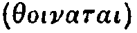 "banquets on."'return
Invoke thy aid to my adventurous song.Again a few lines later,
That to the height of this great argumentTen lines farther we read of the Serpent
I may assert Eternal Providence.
Stirr'd up with envy and revenge.We have only an apparent elision of y a few lines later in his aspiring
To set himself in glory above his peers,for the line would be ruined were the y to be omitted by a reader. The extreme shortness of the two unaccented syllables, y and a, gives them the quantity of one in the metre, and allows by the turn of voice a suggestion of exuberance, heightening the force of the word glory. Three lines lower Milton has no elision of the y before a vowel in the line,
Against the throne and monarchy of God.Nor eight lines after that in the words 'day and night.' There is elision of y in the line,
That were an ignominy and shame beneathBut none a few lines lower down in
This downfall.
Sole reigning holds the tyranny of heaven.When the y stands by itself, unaccented, immediately after an accented syllable, and precedes a vowel that is part of another unaccented syllable standing immediately before an accented one, Milton accepts the consequence, and does not attempt to give it the force of a distinct syllable. But Addison's vague notion that it was Milton's custom to cut off the final y when it precedes a vowel, and that for the sake of being uncommon, came of inaccurate observation. For the reasons just given, the y of the word glory runs into the succeeding syllable, and most assuredly is not cut off, when we read of
the excessbut the y in ' misty ' stands as a full syllable because the word air is accented. So again in
Of Glory obscured: as when the sun, new ris'n,
Looks through the horizontal misty air,
Death as oft accusedThe y of ' tardy' is a syllable because the vowel following it is accented; the y also of ' day' remains, because, although an unaccented vowel follows, it is itself part of an accented syllable.
Of tardy execution, since denounc'd
The day of his offence.
No. 286 |
Monday, January 28, 1712 |
Steele |
Nomina Honesta prætenduntur vitiis.T.2
Tacit.
York, Jan. 18, 1712.
Mr. Spectator,
I pretend not to inform a Gentleman of so just a Taste, whenever he pleases to use it; but it may not be amiss to inform your Readers, that there is a false Delicacy as well as a true one. True Delicacy, as I take it, consists in Exactness of Judgment and Dignity of Sentiment, or if you will, Purity of Affection, as this is opposed to Corruption and Grossness. There are Pedants in Breeding as well as in Learning. The Eye that cannot bear the Light is not delicate but sore. A good Constitution appears in the Soundness and Vigour of the Parts, not in the Squeamishness of the Stomach; And a false Delicacy is Affectation, not Politeness. What then can be the Standard of Delicacy but Truth and Virtue? Virtue, which, as the Satyrist long since observed, is real Honour; whereas the other Distinctions among Mankind are meerly titular. Judging by that Rule, in my Opinion, and in that of many of your virtuous Female Readers, you are so far from deserving Mr. Courtly's Accusation, that you seem too gentle, and to allow too many Excuses for an enormous Crime, which is the Reproach of the Age, and is in all its Branches and Degrees expresly forbidden by that Religion we pretend to profess; and whose Laws, in a Nation that calls it self Christian, one would think should take Place of those Rules which Men of corrupt Minds, and those of weak Understandings follow. I know not any thing more pernicious to good Manners, than the giving fair Names to foul Actions; for this confounds Vice and Virtue, and takes off that natural Horrour we have to Evil. An innocent Creature, who would start at the Name of Strumpet, may think it pretty to be called a Mistress, especially if her Seducer has taken care to inform her, that a Union of Hearts is the principal Matter in the Sight of Heaven, and that the Business at Church is a meer idle Ceremony. Who knows not that the Difference between obscene and modest Words expressing the same Action, consists only in the accessary Idea, for there is nothing immodest in Letters and Syllables. Fornication and Adultery are modest Words: because they express an Evil Action as criminal, and so as to excite Horrour and Aversion: Whereas Words representing the Pleasure rather than the Sin, are for this Reason indecent and dishonest. Your Papers would be chargeable with something worse than Indelicacy, they would be Immoral, did you treat the detestable Sins of Uncleanness in the same manner as you rally an impertinent Self-love and an artful Glance; as those Laws would be very unjust, that should chastise Murder and Petty Larceny with the same Punishment. Even Delicacy requires that the Pity shewn to distressed indigent Wickedness, first betrayed into, and then expelled the Harbours of the Brothel, should be changed to Detestation, when we consider pampered Vice in the Habitations of the Wealthy. The most free Person of Quality, in Mr. Courtly's Phrase, that is, to speak properly, a Woman of Figure who has forgot her Birth and Breeding, dishonoured her Relations and her self, abandoned her Virtue and Reputation, together with the natural Modesty of her Sex, and risqued her very Soul, is so far from deserving to be treated with no worse Character than that of a kind Woman, (which is doubtless Mr. Courtly's Meaning, if he has any,) that one can scarce be too severe on her, in as much as she sins against greater Restraints, is less exposed, and liable to fewer Temptations, than Beauty in Poverty and Distress. It is hoped therefore, Sir, that you will not lay aside your generous Design of exposing that monstrous Wickedness of the Town, whereby a Multitude of Innocents are sacrificed in a more barbarous Manner than those who were offered to Moloch. The Unchaste are provoked to see their Vice exposed, and the Chaste cannot rake into such Filth without Danger of Defilement; but a meer Spectator may look into the Bottom, and come off without partaking in the Guilt. The doing so will convince us you pursue publick Good, and not meerly your own Advantage: But if your Zeal slackens, how can one help thinking that Mr. Courtly's Letter is but a Feint to get off from a Subject, in which either your own, or the private and base Ends of others to whom you are partial, or those of whom you are afraid, would not endure a Reformation?
I am, Sir, your humble Servant and Admirer, so long as you tread in the Paths of Truth, Virtue, and Honour.
Mr. Spectator,
Trin. Coll. Cantab. Jan. 12, 1711-12.
It is my Fortune to have a Chamber-Fellow, with whom, tho' I agree very well in many Sentiments, yet there is one in which we are as contrary as Light and Darkness. We are both in Love: his Mistress is a lovely Fair, and mine a lovely Brown. Now as the Praise of our Mistresses Beauty employs much of our Time, we have frequent Quarrels in entering upon that Subject, while each says all he can to defend his Choice. For my own part, I have racked my Fancy to the utmost; and sometimes, with the greatest Warmth of Imagination, have told him, That Night was made before Day, and many more fine Things, tho' without any effect: Nay, last Night I could not forbear saying with more Heat than Judgment, that the Devil ought to be painted white. Now my Desire is, Sir, that you would be pleased to give us in Black and White your Opinion in the Matter of Dispute between us; which will either furnish me with fresh and prevailing Arguments to maintain my own Taste, or make me with less Repining allow that of my Chamber-Fellow. I know very well that I have Jack Cleveland1 and Bond's Horace on my Side; but then he has such a Band of Rhymers and Romance-Writers, with which he opposes me, and is so continually chiming to the Tune of Golden Tresses, yellow Locks, Milk, Marble, Ivory, Silver, Swan, Snow, Daisies, Doves, and the Lord knows what; which he is always sounding with so much Vehemence in my Ears, that he often puts me into a brown Study how to answer him; and I find that I am in a fair Way to be quite confounded, without your timely Assistance afforded to,
Sir,
Your humble Servant,
Philobrune.
No. 287 |
Tuesday, January 29, 1712 |
Addison |
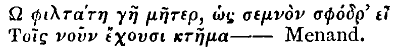
No. 288 |
Wednesday, January 30, 1712 |
Steele |
—Pavor est utrique molestus.
Hor.
Mr. Spectator,
'When you spoke of the Jilts and Coquets, you then promised to be very impartial, and not to spare even your own Sex, should any of their secret or open Faults come under your Cognizance; which has given me Encouragement to describe a certain Species of Mankind under the Denomination of Male Jilts. They are Gentlemen who do not design to marry, yet, that they may appear to have some Sense of Gallantry, think they must pay their Devoirs to one particular Fair; in order to which they single out from amongst the Herd of Females her to whom they design to make their fruitless Addresses. This done, they first take every Opportunity of being in her Company, and then never fail upon all Occasions to be particular to her, laying themselves at her Feet, protesting the Reality of their Passion with a thousand Oaths, solliciting a Return, and saying as many fine Things as their Stock of Wit will allow; and if they are not deficient that way, generally speak so as to admit of a double Interpretation; which the credulous Fair is apt to turn to her own Advantage, since it frequently happens to be a raw, innocent, young Creature, who thinks all the World as sincere as her self, and so her unwary Heart becomes an easy Prey to those deceitful Monsters, who no sooner perceive it, but immediately they grow cool, and shun her whom they before seemed so much to admire, and proceed to act the same common-place Villany towards another. A Coxcomb flushed with many of these infamous Victories shall say he is sorry for the poor Fools, protest and vow he never thought of Matrimony, and wonder talking civilly can be so strangely misinterpreted. Now, Mr. Spectator, you that are a professed Friend to Love, will, I hope, observe upon those who abuse that noble Passion, and raise it in innocent Minds by a deceitful Affectation of it, after which they desert the Enamoured. Pray bestow a little of your Counsel to those fond believing Females who already have or are in Danger of broken Hearts; in which you will oblige a great Part of this Town, but in a particular Manner,
Sir Your (yet Heart-whole) Admirer,
and devoted humble Servant,
Melainia.
To the Spectator.T.
Sir1,
'Since so many Dealers turn Authors, and write quaint Advertisements in praise of their Wares, one who from an Author turn'd Dealer may be allowed for the Advancement of Trade to turn Author again. I will not however set up like some of 'em, for selling cheaper than the most able honest Tradesman can; nor do I send this to be better known for Choice and Cheapness of China and Japan Wares, Tea, Fans, Muslins, Pictures, Arrack, and other Indian Goods. Placed as I am in Leadenhall-street, near the India-Company, and the Centre of that Trade, Thanks to my fair Customers, my Warehouse is graced as well as the Benefit Days of my Plays and Operas; and the foreign Goods I sell seem no less acceptable than the foreign Books I translated, Rabelais and Don Quixote: This the Criticks allow me, and while they like my Wares they may dispraise my Writing. But as 'tis not so well known yet that I frequently cross the Seas of late, and speaking Dutch and French, besides other Languages, I have the Conveniency of buying and importing rich Brocades, Dutch Atlasses, with Gold and Silver, or without, and other foreign Silks of the newest Modes and best Fabricks, fine Flanders Lace, Linnens, and Pictures, at the best Hand: This my new way of Trade I have fallen into I cannot better publish than by an Application to you. My Wares are fit only for such as your Readers; and I would beg of you to print this Address in your Paper, that those whose Minds you adorn may take the Ornaments for their Persons and Houses from me. This, Sir, if I may presume to beg it, will be the greater Favour, as I have lately received rich Silks and fine Lace to a considerable Value, which will be sold cheap for a quick Return, and as I have also a large Stock of other Goods. Indian Silks were formerly a great Branch of our Trade; and since we must not sell 'em, we must seek Amends by dealing in others. This I hope will plead for one who would lessen the Number of Teazers of the Muses, and who, suiting his Spirit to his Circumstances, humbles the Poet to exalt the Citizen. Like a true Tradesman, I hardly ever look into any Books but those of Accompts. To say the Truth, I cannot, I think, give you a better Idea of my being a downright Man of Traffick, than by acknowledging I oftener read the Advertisements, than the Matter of even your Paper. I am under a great Temptation to take this Opportunity of admonishing other Writers to follow my Example, and trouble the Town no more; but as it is my present Business to increase the Number of Buyers rather than Sellers, I hasten to tell you that I am,
Sir, Your most humble,
and most obedient Servant,
Peter Motteux.
No. 289 |
Thursday, January 31, 1712 |
Addison |
Vitæ summa brevis spem nos vetat inchoare longam.
Hor.
No. 290 |
Friday, February 1, 1712 |
Steele |
Projicit ampullas et sesquipedalia verba.
Hor.1
Mr. Spectator,
I am appointed to act a Part in the new Tragedy called The Distressed Mother: It is the celebrated Grief of Orestes which I am to personate; but I shall not act it as I ought, for I shall feel it too intimately to be able to utter it. I was last Night repeating a Paragraph to my self, which I took to be an Expression of Rage, and in the middle of the Sentence there was a Stroke of Self-pity which quite unmanned me. Be pleased, Sir, to print this Letter, that when I am oppressed in this manner at such an Interval, a certain Part of the Audience may not think I am out; and I hope with this Allowance to do it to Satisfaction. I am, Sir,
Your most humble Servant,
George Powell.
Mr. Spectator,
'As I was walking t'other Day in the Park, I saw a Gentleman with a very short Face; I desire to know whether it was you. Pray inform me as soon as you can, lest I become the most heroick Hecatissa's Rival.
Your humble Servant to command,
Sophia.
Spirat Tragicum satis, et fœliciter Audet.Hor.
No. 291 |
Saturday, February 2, 1712 |
Addison |
Ubi plura nitent in carmine, non ego paucis
Offendor maculis, quas aut Incuria fudit,
Aut Humana parum cavit Natura.
Hor.
Errors, like Straws, upon the Surface flow;A true Critick ought to dwell rather upon Excellencies than Imperfections, to discover the concealed Beauties of a Writer, and communicate to the World such things as are worth their Observation. The most exquisite Words and finest Strokes of an Author are those which very often appear the most doubtful and exceptionable to a Man who wants a Relish for polite Learning; and they are these, which a sower undistinguishing Critick generally attacks with the greatest Violence. Tully observes, that it is very easie to brand or fix a Mark upon what he calls Verbum ardens4, or, as it may be rendered into English, a glowing bold Expression, and to turn it into Ridicule by a cold ill-natured Criticism. A little Wit is equally capable of exposing a Beauty, and of aggravating a Fault; and though such a Treatment of an Author naturally produces Indignation in the Mind of an understanding Reader, it has however its Effect among the Generality of those whose Hands it falls into, the Rabble of Mankind being very apt to think that every thing which is laughed at with any Mixture of Wit, is ridiculous in it self.
He who would search for Pearls must dive below3.
'he has long dictated in this part of letters. He is acknowledged as the great arbitrator between the merits of the best writers; and during the course of almost thirty years there have been few appeals from his sentence.'(See also a note on p. 168, vol. i. [Volume 1 links:Footnote 3 of No. 44]) René le Bossu, the great French authority on Epic Poetry, born in 1631, was a regular canon of St. Genevieve, and taught the Humanities in several religious houses of his order. He died, subprior of the Abbey of St. Jean de Cartres, in 1680. He wrote, besides his Treatise upon Epic Poetry, a parallel between the philosophies of Aristotle and Descartes, which appeared a few months earlier (in 1674) with less success. Another authority was Father Bouhours, of whom see note on p. 236, vol. i. [Volume 1 links:Footnote 4 of No. 62. ] Another was Bernard le Bovier de Fontenelle. called by Voltaire the most universal genius of his age. He was born at Rouen in 1657, looking so delicate that he was baptized in a hurry, and at 16 was unequal to the exertion of a game at billiards, being caused by any unusual exercise to spit blood, though he lived to the age of a hundred, less one month and two days. He was taught by the Jesuits, went to the bar to please his father, pleaded a cause, lost it, and gave up the profession to devote his time wholly to literature and philosophy. He went to Paris, wrote plays and the Dialogues of the Dead, living then with his uncle, Thomas Corneille. A discourse on the Eclogue prefixed to his pastoral poems made him an authority in this manner of composition. It was translated by Motteux for addition to the English translation of Bossu on the Epic, which had also appended to it an Essay on Satire by another of these French critics, André Dacier. Dacier, born at Castres in 1651, was educated at Saumur under Taneguy le Févre, who was at the same time making a scholar of his own daughter Anne. Dacier and the young lady became warmly attached to one another, married, united in abjuring Protestantism, and were for forty years, in the happiest concord, man and wife and fellow-scholars. Dacier and his wife, as well as Fontenelle, were alive when the Spectator was appearing; his wife dying, aged 69, in 1720, the husband, aged 71, in 1722. André Dacier translated and annotated the Poetics of Aristotle in 1692, and that critical work was regarded as his best performance.
'Facile est enim verbum aliquod ardens (ut ita dicam) notare, idque restinctis jam animorum incendiis, irridere.'return
The First and Second Volumes of the Spectator in 8vo are now ready to be delivered to the subscribers by J. Tonson, at Shakespeare's Head, over-against Catherine Street in the Strand.return
No. 292 |
Monday, February 4, 1712 |
Addison |
Illam, quicquid agit, quoquo Vestigia flectit,
Componit furlim, subsequiturque decor.
Tibull. L. 4.
Pliny to Quintilian.Thus should a Benefaction be done with a good Grace, and shine in the strongest Point of Light; it should not only answer all the Hopes and Exigencies of the Receiver, but even out-run his Wishes: 'Tis this happy manner of Behaviour which adds new Charms to it, and softens those Gifts of Art and Nature, which otherwise would be rather distasteful than agreeable. Without it, Valour would degenerate into Brutality, Learning into Pedantry, and the genteelest Demeanour into Affectation. Even Religion its self, unless Decency be the Handmaid which waits upon her, is apt to make People appear guilty of Sourness and ill Humour: But this shews Virtue in her first original Form, adds a Comeliness to Religion, and gives its Professors the justest Title to the Beauty of Holiness. A Man fully instructed in this Art, may assume a thousand Shapes, and please in all: He may do a thousand Actions shall become none other but himself; not that the Things themselves are different, but the Manner of doing them.
Tho I am fully acquainted with the Contentment and just Moderation of your Mind, and the Conformity the Education you have given your Daughter bears to your own Character; yet since she is suddenly to be married to a Person of Distinction, whose Figure in the World makes it necessary for her to be at a more than ordinary Expence in Cloaths and Equipage suitable to her Husbands Quality; by which, tho her intrinsick Worth be not augmented, yet will it receive both Ornament and Lustre: And knowing your Estate to be as moderate as the Riches of your Mind are abundant, I must challenge to my self some part of the Burthen; and as a Parent of your Child. I present her with Twelve hundred and fifty Crowns towards these Expences; which Sum had been much larger, had I not feared the Smallness of it would be the greatest Inducement with you to accept of it. Farewell.
So spake the Cherub, and his grave Rebuke,The Care of doing nothing unbecoming has accompanied the greatest Minds to their last Moments. They avoided even an indecent Posture in the very Article of Death. Thus Cæsar gathered his Robe about him, that he might not fall in a manner unbecoming of himself: and the greatest Concern that appeared in the Behaviour of Lucretia, when she stabbed her self, was, that her Body should lie in an Attitude worthy the Mind which had inhabited it.
Severe in youthful Beauty, added Grace
Invincible: Abash'd the Devil stood,
And felt how awful Goodness is, and saw
Virtue in her own Shape ho'w lovely I saw, and pin'd
His Loss2.
Ne non procumbat honesteZ.
Extrema hæc etiam cura, cadentis erat3.
'Twas her last Thought, How decently to fall.
Mr. Spectator,
I am a young Woman without a Fortune; but of a very high Mind: That is, Good Sir, I am to the last degree Proud and Vain. I am ever railing at the Rich, for doing Things, which, upon Search into my Heart, I find I am only angry because I cannot do the same my self. I wear the hooped Petticoat, and am all in Callicoes when the finest are in Silks. It is a dreadful thing to be poor and proud; therefore if you please, a Lecture on that Subject for the Satisfaction of
Your Uneasy Humble Servant,
JEZEBEL.
No. 293 |
Tuesday, February 5, 1712 |
Addison |
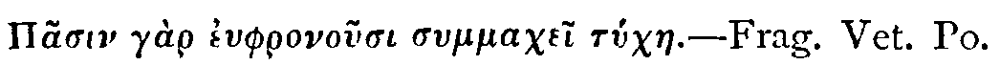
No. 294 |
Wednesday, February 6, 1712 |
Steele |
Difficile est plurimum virtutem revereri qui semper secunda fortuna sit usus.
Tull. ad Herennium.
The wise Providence has amply compensated the Disadvantages of the Poor and Indigent, in wanting many of the Conveniencies of this Life, by a more abundant Provision for their Happiness in the next. Had they been higher born, or more richly endowed, they would have wanted this Manner of Education, of which those only enjoy the Benefit, who are low enough to submit to it; where they have such Advantages without Money, and without Price, as the Rich cannot purchase with it. The Learning which is given, is generally more edifying to them, than that which is sold to others: Thus do they become more exalted in Goodness, by being depressed in Fortune, and their Poverty is, in Reality, their Preferment2.T.
'Just Published.return
'A very neat Pocket Edition of the Spectator, in two volumes 12mo. Printed for S. Buckley, at the Dolphin, in Little Britain, and J. Tonson, at Shakespear's Head, over-against Catherine-Street in the Strand.'
No. 295 |
Thursday, February 7, 1712 |
Addison |
Prodiga non sentit pereuntem fæmina censum:
At velut exhaustâ redivivus pullulet arcâ
Nummus, et è pleno semper tollatur acervo,
Non unquam reputat quanti sibi gandia constent.
Juv.
Mr. Spectator,
I am turned of my great Climacteric, and am naturally a Man of a meek Temper. About a dozen Years ago I was married, for my Sins, to a young Woman of a good Family, and of an high Spirit; but could not bring her to close with me, before I had entered into a Treaty with her longer than that of the Grand Alliance. Among other Articles, it was therein stipulated, that she should have £400 a Year for Pin-money, which I obliged my self to pay Quarterly into the hands of one who had acted as her Plenipotentiary in that Affair. I have ever since religiously observed my part in this solemn Agreement. Now, Sir, so it is, that the Lady has had several Children since I married her; to which, if I should credit our malicious Neighbours, her Pin-money has not a little contributed. The Education of these my Children, who, contrary to my Expectation, are born to me every Year, streightens me so much, that I have begged their Mother to free me from the Obligation of the above-mentioned Pin-money, that it may go towards making a Provision for her Family. This Proposal makes her noble Blood swell in her Veins, insomuch that finding me a little tardy in her last Quarter's Payment, she threatens me every Day to arrest me; and proceeds so far as to tell me, that if I do not do her Justice, I shall die in a Jayl. To this she adds, when her Passion will let her argue calmly, that she has several Play-Debts on her Hand, which must be discharged very suddenly, and that she cannot lose her Money as becomes a Woman of her Fashion, if she makes me any Abatements in this Article. I hope, Sir, you will take an Occasion from hence to give your Opinion upon a Subject which you have not yet touched, and inform us if there are any Precedents for this Usage among our Ancestors; or whether you find any mention of Pin-money in Grotius, Puffendorf, or any other of the Civilians.
I am ever
the humblest of your Admirers,
Josiah Fribble, Esq.
No. 296 |
Friday, February 8, 1712 |
Steele |
Nugis addere pondus.
Hor.
Dear Spec.
Having lately conversed much with the Fair Sex on the Subject of your Speculations, (which since their Appearance in Publick, have been the chief Exercise of the Female loquacious Faculty) I found the fair Ones possess'd with a Dissatisfaction at your prefixing Greek Motto's to the Frontispiece of your late Papers; and, as a Man of Gallantry, I thought it a Duty incumbent on me to impart it to you, in Hopes of a Reformation, which is only to be effected by a Restoration of the Latin to the usual Dignity in your Papers, which of late, the Greek, to the great Displeasure of your Female Readers, has usurp'd; for tho' the Latin has the Recommendation of being as unintelligible to them as the Greek, yet being written of the same Character with their Mother-Tongue, by the Assistance of a Spelling-Book it's legible; which Quality the Greek wants: And since the Introduction of Operas into this Nation, the Ladies are so charmed with Sounds abstracted from their Ideas, that they adore and honour the Sound of Latin as it is old Italian. I am a Sollicitor for the Fair Sex, and therefore think my self in that Character more likely to be prevalent in this Request, than if I should subscribe myself by my proper Name.
J.M.
I desire you may insert this in one of your Speculations, to shew my Zeal for removing the Dissatisfaction of the Fair Sex, and restoring you to their Favour.
Sir,
I was some time since in Company with a young Officer, who entertained us with the Conquest he had made over a Female Neighbour of his; when a Gentleman who stood by, as I suppose, envying the Captain's good Fortune, asked him what Reason he had to believe the Lady admired him? Why, says he, my Lodgings are opposite to hers, and she is continually at her Window either at Work, Reading, taking Snuff, or putting her self in some toying Posture on purpose to draw my Eyes that Way. The Confession of this vain Soldier made me reflect on some of my own Actions; for you must know, Sir, I am often at a Window which fronts the Apartments of several Gentlemen, who I doubt not have the same Opinion of me. I must own I love to look at them all, one for being well dressed, a second for his fine Eye, and one particular one, because he is the least Man I ever saw; but there is something so easie and pleasant in the Manner of my little Man, that I observe he is a Favourite of all his Acquaintance. I could go on to tell you of many others that I believe think I have encouraged them from my Window: But pray let me have your Opinion of the Use of the Window in a beautiful Lady: and how often she may look out at the same Man, without being supposed to have a Mind to jump out to him. Yours,
Aurelia Careless.'
Mr. Spectator,
'I have for some Time made Love to a Lady, who received it with all the kind Returns I ought to expect. But without any Provocation, that I know of, she has of late shunned me with the utmost Abhorrence, insomuch that she went out of Church last Sunday in the midst of Divine Service, upon my coming into the same Pew. Pray, Sir, what must I do in this Business?
Your Servant,
Euphues.'
York, Jan. 20, 1711-12.
Mr. Spectator,
'We have in this Town a sort of People who pretend to Wit and write Lampoons: I have lately been the Subject of one of them. The Scribler had not Genius enough in Verse to turn my Age, as indeed I am an old Maid, into Raillery, for affecting a youthier Turn than is consistent with my Time of Day; and therefore he makes the Title to his Madrigal, The Character of Mrs. Judith Lovebane, born in the Year 16801. What I desire of you is, That you disallow that a Coxcomb who pretends to write Verse, should put the most malicious Thing he can say in Prose. This I humbly conceive will disable our Country Wits, who indeed take a great deal of Pains to say any thing in Rhyme, tho' they say it very ill.
I am, Sir,
Your Humble Servant,
Susanna Lovebane.'
Mr. Spectator,
'We are several of us, Gentlemen and Ladies, who Board in the same House, and after Dinner one of our Company (an agreeable Man enough otherwise) stands up and reads your Paper to us all. We are the civillest People in the World to one another, and therefore I am forced to this way of desiring our Reader, when he is doing this Office, not to stand afore the Fire. This will be a general Good to our Family this cold Weather. He will, I know, take it to be our common Request when he comes to these Words, Pray, Sir, sit down; which I desire you to insert, and you will particularly oblige
Your Daily Reader,
Charity Frost.'
Sir,
I am a great Lover of Dancing, but cannot perform so well as some others; however, by my Out-of-the-Way Capers, and some original Grimaces, I don't fail to divert the Company, particularly the Ladies, who laugh immoderately all the Time. Some, who pretend to be my Friends, tell me they do it in Derision, and would advise me to leave it off, withal that I make my self ridiculous. I don't know what to do in this Affair, but I am resolved not to give over upon any Account, 'till I have the Opinion of the Spectator.
Your humble Servant,
John Trott.'
No. 297 |
Saturday, February 9, 1712 |
Addison |
—velut si
Egregio inspersos reprendas corpore nævos.
Hor.
—The small InfantryAnother Blemish that13 appears in some of his Thoughts, is his frequent Allusion to Heathen Fables, which are not certainly of a Piece with the Divine Subject, of which he treats. I do not find fault with these Allusions, where the Poet himself represents them as fabulous, as he does in some Places, but where he mentions them as Truths and Matters of Fact. The Limits of my Paper will not give me leave to be particular in Instances of this kind; the Reader will easily remark them in his Perusal of the Poem.
Warrdon by Cranes—
And brought into the World a World of Woe.I know there are Figures for this kind of Speech, that some of the greatest Ancients have been guilty of it, and that Aristotle himself has given it a place in his Rhetorick among the Beauties of that Art.14 But as it is in its self poor and trifling, it is I think at present universally exploded by all the Masters of Polite Writing.
—Begirt th' Almighty throne
Beseeching or besieging—
This tempted our attempt—
At one slight bound high overleapt all bound.
Tack to the Larboard, and stand off to Sea.Milton makes use of Larboard in the same manner. When he is upon Building he mentions Doric Pillars, Pilasters, Cornice, Freeze, Architrave. When he talks of Heavenly Bodies, you meet with Eccliptic and Eccentric, the trepidation, Stars dropping from the Zenith, Rays culminating from the Equator. To which might be added many Instances of the like kind in several other Arts and Sciences.
Veer Star-board Sea and Land.
'Spencer has a better for his "Fairy Queen" had his action been finished, or been one; and Milton if the Devil had not been his hero, instead of Adam; if the giant had not foiled the knight, and driven him out of his stronghold, to wander through the world with his lady-errant; and if there had not been more machining persons that human in his poem.'return
'ambitious to figure throughout themselves, imitate but little and seldom. Homer, after a few preparatory lines, immediately introduces a man or woman or some other character, for all have their character.'Of Lucan, as an example of the contrary practice, Hobbes said in his 'Discourse concerning the Virtues of an Heroic Poem,'
'No Heroic Poem raises such admiration of the Poet, as his hath done, though not so great admiration of the persons he introduceth.'return
'rhetoric taught out of the rules of Plato, Aristotle, Phalereus, Cicero, Hermogenes, Longinus. To which poetry would be made subsequent, or, indeed, rather precedent, as being less subtile and fine, but more simple, sensuous, and passionate. I mean not here the prosody of a verse, which they could not but have hit on before among the rudiments of grammar; but that sublime art which in Aristotle's Poetics, in Horace, and the Italian commentaries of Castelvetro, Tasso, Mazzoni, and others, teaches what the laws are of a true epic poem, what of a dramatic, what of a lyric, what decorum is, which is the grand masterpiece to observe. This would make them soon perceive what despicable creatures our common rhymers and play-writers be; and show them what religious, what glorious and magnificent use might be made of poetry, both in divine and human things.'return
No. 298 |
Monday, February 11, 1712 |
Steele |
Nusquam Tuta fides.T.
Virg.
'I am a Virgin, and in no Case despicable; but yet such as I am I must remain, or else become, 'tis to be feared, less happy: for I find not the least good Effect from the just Correction you some time since gave, that too free, that looser Part of our Sex which spoils the Men; the same Connivance at the Vices, the same easie Admittance of Addresses, the same vitiated Relish of the Conversation of the greatest of Rakes (or in a more fashionable Way of expressing one's self, of such as have seen the World most) still abounds, increases, multiplies.
'The humble Petition therefore of many of the most strictly virtuous, and of my self, is, That you'll once more exert your Authority, and that according to your late Promise, your full, your impartial Authority, on this sillier Branch of our Kind: For why should they be the uncontroulable Mistresses of our Fate? Why should they with Impunity indulge the Males in Licentiousness whilst single, and we have the dismal Hazard and Plague of reforming them when married? Strike home, Sir, then, and spare not, or all our maiden Hopes, our gilded Hopes of nuptial Felicity are frustrated, are vanished, and you your self, as well as Mr. Courtly, will, by smoothing over immodest Practices with the Gloss of soft and harmless Names, for ever forfeit our Esteem. Nor think that I'm herein more severe than need be: If I have not reason more than enough, do you and the World judge from this ensuing Account, which, I think, will prove the Evil to be universal.
'You must know then, that since your Reprehension of this Female Degeneracy came out, I've had a Tender of Respects from no less than five Persons, of tolerable Figure too as Times go: But the Misfortune is, that four of the five are professed Followers of the Mode. They would face me down, that all Women of good Sense ever were, and ever will be, Latitudinarians in Wedlock; and always did, and will, give and take what they profanely term Conjugal Liberty of Conscience.
'The two first of them, a Captain and a Merchant, to strengthen their Argument, pretend to repeat after a Couple, a Brace of Ladies of Quality and Wit, That Venus was always kind to Mars; and what Soul that has the least spark of Generosity, can deny a Man of Bravery any thing? And how pitiful a Trader that, whom no Woman but his own Wife will have Correspondence and Dealings with? Thus these; whilst the third, the Country Squire, confessed, That indeed he was surprized into good Breeding, and entered into the Knowledge of the World unawares. That dining t'other Day at a Gentleman's House, the Person who entertained was obliged to leave him with his Wife and Nieces; where they spoke with so much Contempt of an absent Gentleman for being slow at a Hint, that he had resolved never to be drowsy, unmannerly, or stupid for the future at a Friend's House; and on a hunting Morning, not to pursue the Game either with the Husband abroad, or with the Wife at home.
'The next that came was a Tradesman, no1 less full of the Age than the former; for he had the Gallantry to tell me, that at a late Junket which he was invited to, the Motion being made, and the Question being put, 'twas by Maid, Wife and Widow resolved nemine contradicente, That a young sprightly Journeyman is absolutely necessary in their Way of Business: To which they had the Assent and Concurrence of the Husbands present. I dropped him a Curtsy, and gave him to understand that was his Audience of Leave.
'I am reckoned pretty, and have had very many Advances besides these; but have been very averse to hear any of them, from my Observation on these above-mentioned, 'till I hoped some Good from the Character of my present Admirer, a Clergyman. But I find even amongst them there are indirect Practices in relation to Love, and our Treaty is at present a little in Suspence, 'till some Circumstances are cleared. There is a Charge against him among the Women, and the Case is this: It is alledged, That a certain endowed Female would have appropriated her self to and consolidated her self with a Church, which my Divine now enjoys; (or, which is the same thing, did prostitute her self to her Friend's doing this for her): That my Ecclesiastick, to obtain the one, did engage himself to take off the other that lay on Hand; but that on his Success in the Spiritual, he again renounced the Carnal.
I put this closely to him, and taxed him with Disingenuity. He to clear himself made the subsequent Defence, and that in the most solemn Manner possible: That he was applied to and instigated to accept of a Benefice: That a conditional Offer thereof was indeed made him at first, but with Disdain by him rejected: That when nothing (as they easily perceived) of this Nature could bring him to their Purpose, Assurance of his being entirely unengaged before-hand, and safe from all their After-Expectations (the only Stratagem left to draw him in) was given him: That pursuant to this the Donation it self was without Delay, before several reputable Witnesses, tendered to him gratis, with the open Profession of not the least Reserve, or most minute Condition; but that yet immediately after Induction, his insidious Introducer (or her crafty Procurer, which you will) industriously spread the Report, which had reached my Ears, not only in the Neighbourhood of that said Church, but in London, in the University, in mine and his own County, and where-ever else it might probably obviate his Application to any other Woman, and so confine him to this alone: And, in a Word, That as he never did make any previous Offer of his Service, or the least Step to her Affection; so on his Discovery of these Designs thus laid to trick him, he could not but afterwards, in Justice to himself, vindicate both his Innocence and Freedom by keeping his proper Distance.
'This is his Apology, and I think I shall be satisfied with it. But I cannot conclude my tedious Epistle, without recommending to you not only to resume your former Chastisement, but to add to your Criminals the Simoniacal Ladies, who seduce the sacred Order into the Difficulty of either breaking a mercenary Troth made to them whom they ought not to deceive, or by breaking or keeping it offending against him whom they cannot deceive. Your Assistance and Labours of this sort would be of great Benefit, and your speedy Thoughts on this Subject would be very seasonable to,
Sir, Your most obedient Servant,
Chastity Loveworth.'
No. 299 |
Tuesday, February 12, 1712 |
Addison |
Malo Venusinam, quam te, Cornelia, Mater
Gracchorum, si cum magnis virtutibus affers
Grande supercilium, et numeras in dote triumphos.
Tolle tuum precor Annibalem victumque Syphacem
In castris, et cum totâ Carthagine migra.
Juv.
Mr. Spectator,L.
'Having carefully perused a Letter sent you by Josiah Fribble, Esq., with your subsequent Discourse upon Pin-Money, I do presume to trouble you with an Account of my own Case, which I look upon to be no less deplorable than that of Squire Fribble. I am a Person of no Extraction, having begun the World with a small parcel of Rusty Iron, and was for some Years commonly known by the Name of Jack Anvil1. I have naturally a very happy Genius for getting Money, insomuch that by the Age of Five and twenty I had scraped together Four thousand two hundred Pounds Five Shillings, and a few odd Pence. I then launched out into considerable Business, and became a bold Trader both by Sea and Land, which in a few Years raised me a very great2 Fortune. For these my Good Services I was Knighted in the thirty fifth Year of my Age, and lived with great Dignity among my City-Neighbours by the Name of Sir John Anvil. Being in my Temper very Ambitious, I was now bent upon making a Family, and accordingly resolved that my Descendants should have a Dash of Good Blood in their Veins. In order to this, I made Love to the Lady Mary Oddly, an Indigent young Woman of Quality. To cut short the Marriage Treaty, I threw her a Charte Blanche, as our News Papers call it, desiring her to write upon it her own Terms. She was very concise in her Demands, insisting only that the Disposal of my Fortune, and the Regulation of my Family, should be entirely in her Hands. Her Father and Brothers appeared exceedingly averse to this Match, and would not see me for some time; but at present are so well reconciled, that they Dine with me almost every Day, and have borrowed considerable Sums of me; which my Lady Mary very often twits me with, when she would shew me how kind her Relations are to me. She had no Portion, as I told you before, but what she wanted in Fortune, she makes up in Spirit. She at first changed my Name to Sir John Envil, and at present writes her self Mary Enville. I have had some Children by her, whom she has Christened with the Sirnames of her Family, in order, as she tells me, to wear out the Homeliness of their Parentage by the Father's Side. Our eldest Son is the Honourable Oddly Enville, Esq., and our eldest Daughter Harriot Enville. Upon her first coming into my Family, she turned off a parcel of very careful Servants, who had been long with me, and introduced in their stead a couple of Black-a-moors, and three or four very genteel Fellows in Laced Liveries, besides her French woman, who is perpetually making a Noise in the House in a Language which no body understands, except my Lady Mary. She next set her self to reform every Room of my House, having glazed all my Chimney-pieces with Looking-glass, and planted every Corner with such heaps of China, that I am obliged to move about my own House with the greatest Caution and Circumspection, for fear of hurting some of our Brittle Furniture. She makes an Illumination once a Week with Wax-Candles in one of the largest Rooms, in order, as she phrases it, to see Company. At which time she always desires me to be Abroad, or to confine my self to the Cock-loft, that I may not disgrace her among her Visitants of Quality. Her Footmen, as I told you before, are such Beaus that I do not much care for asking them Questions; when I do, they answer me with a sawcy Frown, and say that every thing, which I find Fault with, was done by my Lady Mary's Order. She tells me that she intends they shall wear Swords with their next Liveries, having lately observed the Footmen of two or three Persons of Quality hanging behind the Coach with Swords by their Sides. As soon as the first Honey-Moon was over, I represented to her the Unreasonableness of those daily Innovations which she made in my Family, but she told me I was no longer to consider my self as Sir John Anvil, but as her Husband; and added, with a Frown, that I did not seem to know who she was. I was surprized to be treated thus, after such Familiarities as had passed between us. But she has since given me to know, that whatever Freedoms she may sometimes indulge me in, she expects in general to be treated with the Respect that is due to her Birth and Quality. Our Children have been trained up from their Infancy with so many Accounts of their Mother's Family, that they know the Stories of all the great Men and Women it has produced. Their Mother tells them, that such an one commanded in such a Sea Engagement, that their Great Grandfather had a Horse shot under him at Edge-hill, that their Uncle was at the Siege of Buda, and that her Mother danced in a Ball at Court with the Duke of Monmouth; with abundance of Fiddle-faddle of the same Nature. I was, the other Day, a little out of Countenance at a Question of my little Daughter Harriot, who asked me, with a great deal of Innocence, why I never told them of the Generals and Admirals that had been in my Family. As for my Eldest Son Oddly, he has been so spirited up by his Mother, that if he does not mend his Manners I shall go near to disinherit him. He drew his Sword upon me before he was nine years old, and told me, that he expected to be used like a Gentleman; upon my offering to correct him for his Insolence, my Lady Mary stept in between us, and told me, that I ought to consider there was some Difference between his Mother and mine. She is perpetually finding out the Features of her own Relations in every one of my Children, tho', by the way, I have a little Chubfaced Boy as like me as he can stare, if I durst say so; but what most angers me, when she sees me playing with any of them upon my Knee, she has begged me more than once to converse with the Children as little as possibly, that they may not learn any of my awkward Tricks.
'You must farther know, since I am opening my Heart to you, that she thinks her self my Superior in Sense, as much as she is in Quality, and therefore treats me like a plain well-meaning Man, who does not know the World. She dictates to me in my own Business, sets me right in Point of Trade, and if I disagree with her about any of my Ships at Sea, wonders that I will dispute with her, when I know very well that her Great Grandfather was a Flag Officer.
'To compleat my Sufferings, she has teazed me for this Quarter of a3 Year last past, to remove into one of the Squares at the other End of the Town, promising for my Encouragement, that I shall have as good a Cock-loft as any Gentleman in the Square; to which the Honourable Oddly Enville, Esq., always adds, like a Jack-a-napes as he is, that he hopes 'twill be as near the Court as possible.
'In short, Mr. Spectator, I am so much out of my natural Element, that to recover my old Way of Life I would be content to begin the World again, and be plain Jack Anvil; but alas! I am in for Life, and am bound to subscribe my self, with great Sorrow of Heart,
Your humble Servant,
John Enville, Knt.'
No. 300 |
Wednesday, February 13, 1712 |
Steele |
Diversum vitio vitium prope majus.T.
Hor.
Mr. Spectator,
'When you talk of the Subject of Love, and the Relations arising from it, methinks you should take Care to leave no Fault unobserved which concerns the State of Marriage. The great Vexation that I have observed in it, is, that the wedded Couple seem to want Opportunities of being often enough alone together, and are forced to quarrel and be fond before Company. Mr. Hotspur and his Lady, in a Room full of their Friends, are ever saying something so smart to each other, and that but just within Rules, that the whole Company stand in the utmost Anxiety and Suspence for fear of their falling into Extremities which they could not be present at. On the other Side, Tom Faddle and his pretty Spouse where-ever they come are billing at such a Rate, as they think must do our Hearts good who behold 'em. Cannot you possibly propose a Mean between being Wasps and Doves in Publick? I should think if you advised to hate or love sincerely it would be better: For if they would be so discreet as to hate from the very Bottom of their Hearts, their Aversion would be too strong for little Gibes every Moment; and if they loved with that calm and noble Value which dwells in the Heart, with a Warmth like that of Life-Blood, they would not be so impatient of their Passion as to fall into observable Fondness. This Method, in each Case, would save Appearances; but as those who offend on the fond Side are by much the fewer, I would have you begin with them, and go on to take Notice of a most impertinent Licence married Women take, not only to be very loving to their Spouses in Publick, but also make nauseous Allusions to private Familiarities, and the like. Lucina is a Lady of the greatest Discretion, you must know, in the World; and withal very much a Physician: Upon the Strength of these two Qualities there is nothing she will not speak of before us Virgins; and she every Day talks with a very grave Air in such a Manner, as is very improper so much as to be hinted at but to obviate the greatest Extremity. Those whom they call good Bodies, notable People, hearty Neighbours, and the purest goodest Company in the World, are the great Offenders in this Kind. Here I think I have laid before you an open Field for Pleasantry; and hope you will shew these People that at least they are not witty: In which you will save from many a Blush a daily Sufferer, who is very much
Your most humble Servant,
Susanna Loveworth.'
Mr. Spectator,
'In yours of Wednesday the 30th past, you and your Correspondent are very severe on a sort of Men, whom you call Male Coquets; but without any other Reason, in my Apprehension, than that of paying a shallow Compliment to the fair Sex, by accusing some Men of imaginary Faults, that the Women may not seem to be the more faulty Sex; though at the same time you suppose there are some so weak as to be imposed upon by fine Things and false Addresses. I can't persuade my self that your Design is to debar the Sexes the Benefit of each other's Conversation within the Rules of Honour; nor will you, I dare say, recommend to 'em, or encourage the common Tea-Table Talk, much less that of Politicks and Matters of State: And if these are forbidden Subjects of Discourse, then, as long as there are any Women in the World who take a Pleasure in hearing themselves praised, and can bear the Sight of a Man prostrate at their Feet, so long I shall make no Wonder that there are those of the other Sex who will pay them those impertinent Humiliations. We should have few People such Fools as to practise Flattery, if all were so wise as to despise it. I don't deny but you would do a meritorious Act, if you could prevent all Impositions on the Simplicity of young Women; but I must confess I don't apprehend you have laid the Fault on the proper Person, and if I trouble you with my Thoughts upon it I promise my self your Pardon. Such of the Sex as are raw and innocent, and most exposed to these Attacks, have, or their Parents are much to blame if they have not, one to advise and guard 'em, and are obliged themselves to take Care of 'em: but if these, who ought to hinder Men from all Opportunities of this sort of Conversation, instead of that encourage and promote it, the Suspicion is very just that there are some private Reasons for it; and I'll leave it to you to determine on which Side a Part is then acted. Some Women there are who are arrived at Years of Discretion, I mean are got out of the Hands of their Parents and Governours, and are set up for themselves, who yet are liable to these Attempts; but if these are prevailed upon, you must excuse me if I lay the Fault upon them, that their Wisdom is not grown with their Years. My Client, Mr. Strephon, whom you summoned to declare himself, gives you Thanks however for your Warning, and begs the Favour only to inlarge his Time for a Week, or to the last Day of the Term, and then he'll appear gratis, and pray no Day over.
Yours,
Philanthropes.'
Mr. Spectator,
'I was last Night to visit a Lady who I much esteem, and always took for my Friend; but met with so very different a Reception from what I expected, that I cannot help applying my self to you on this Occasion. In the room of that Civility and Familiarity I used to be treated with by her, an affected Strangeness in her Looks, and Coldness in her Behaviour, plainly told me I was not the welcome Guest which the Regard and Tenderness she has often expressed for me gave me Reason to flatter my self to think I was. Sir, this is certainly a great Fault, and I assure you a very common one; therefore I hope you will think it a fit Subject for some Part of a Spectator. Be pleased to acquaint us how we must behave our selves towards this valetudinary Friendship, subject to so many Heats and Colds, and you will oblige,
Sir, Your humble Servant,
Miranda.'
Sir,
'I cannot forbear acknowledging the Delight your late Spectators on Saturdays have given me; for it is writ in the honest Spirit of Criticism, and called to my Mind the following four Lines I had read long since in a Prologue to a Play called Julius Cæsar1 which has deserved a better Fate. The Verses are addressed to the little Criticks.Shew your small Talent, and let that suffice ye;Yours, D. G.'
But grow not vain upon it, I advise ye.
For every Fop can find out Faults in Plays:
You'll ne'er arrive at Knowing when to praise.
No. 301 |
Thursday, February 14, 1712 |
Budgell |
Possint ut Juvenes visere fervidi
Multo non sine risu,
Dilapsam in cineres facem.
Hor.
To Cloe.X.
Madam,
'Since my waking Thoughts have never been able to influence you in my Favour, I am resolved to try whether my Dreams can make any Impression on you. To this end I shall give you an Account of a very odd one which my Fancy presented to me last Night, within a few Hours after I left you.
'Methought I was unaccountably conveyed into the most delicious Place mine Eyes ever beheld, it was a large Valley divided by a River of the purest Water I had ever seen. The Ground on each Side of it rose by an easie Ascent, and was covered with Flowers of an infinite Variety, which as they were reflected in the Water doubled the Beauties of the Place, or rather formed an Imaginary Scene more beautiful than the real. On each Side of the River was a Range of lofty Trees, whose Boughs were loaden with almost as many Birds as Leaves. Every Tree was full of Harmony.
'I had not gone far in this pleasant Valley, when I perceived that it was terminated by a most magnificent Temple. The Structure was ancient, and regular. On the Top of it was figured the God Saturn, in the same Shape and Dress that the Poets usually represent Time.
'As I was advancing to satisfie my Curiosity by a nearer View, I was stopped by an Object far more beautiful than any I had before discovered in the whole Place. I fancy, Madam, you will easily guess that this could hardly be any thing but your self; in reality it was so; you lay extended on the Flowers by the side of the River, so that your Hands which were thrown in a negligent Posture, almost touched the Water. Your Eyes were closed; but if your Sleep deprived me of the Satisfaction of seeing them, it left me at leisure to contemplate several other Charms, which disappear when your Eyes are open. I could not but admire the Tranquility you slept in, especially when I considered the Uneasiness you produce in so many others.
'While I was wholly taken up in these Reflections, the Doors of the Temple flew open, with a very great Noise; and lifting up my Eyes, I saw two Figures, in human Shape, coming into the Valley. Upon a nearer Survey, I found them to be Youth and Love. The first was encircled with a kind of Purple Light, that spread a Glory over all the Place; the other held a flaming Torch in his Hand. I could observe, that all the way as they came towards us, the Colours of the Flowers appeared more lively, the Trees shot out in Blossoms, the Birds threw themselves into Pairs, and Serenaded them as they passed: The whole Face of Nature glowed with new Beauties. They were no sooner arrived at the Place where you lay, when they seated themselves on each Side of you. On their Approach, methought I saw a new Bloom arise in your Face, and new Charms diffuse themselves over your whole Person. You appeared more than Mortal; but, to my great Surprise, continued fast asleep, tho' the two Deities made several gentle Efforts to awaken you.
'After a short Time, Youth (displaying a Pair of Wings, which I had not before taken notice of) flew off. Love still remained, and holding the Torch which he had in his Hand before your Face, you still appeared as beautiful as ever. The glaring of the Light in your Eyes at length awakened you; when, to my great Surprise, instead of acknowledging the Favour of the Deity, you frowned upon him, and struck the Torch out of his Hand into the River. The God after having regarded you with a Look that spoke at once1 his Pity and Displeasure, flew away. Immediately a kind of Gloom overspread the whole Place. At the same time I saw an hideous Spectre enter at one end of the Valley. His Eyes were sunk into his Head, his Face was pale and withered, and his Skin puckered up in Wrinkles. As he walked on the sides of the Bank the River froze, the Flowers faded, the Trees shed their Blossoms, the Birds dropped from off the Boughs, and fell dead at his Feet. By these Marks I knew him to be Old-age. You were seized with the utmost Horror and Amazement at his Approach. You endeavoured to have fled, but the Phantome caught you in his Arms. You may easily guess at the Change you suffered in this Embrace. For my own Part, though I am still too full of the frightful2 Idea, I will not shock you with a Description of it. I was so startled at the Sight that my Sleep immediately left me, and I found my self awake, at leisure to consider of a Dream which seems too extraordinary to be without a Meaning. I am, Madam, with the greatest Passion,
Your most Obedient,
most Humble Servant, &c.'
No. 302 |
Friday, February 15, 1712 |
Steele |
Lachrymæque decoræ,
Gratior et pulchro veniens in corpore Virtus.
Vir. Æn. 5.
Mr. Spectator1,T.
If this Paper has the good Fortune to be honoured with a Place in your Writings, I shall be the more pleased, because the Character of Emilia is not an imaginary but a real one. I have industriously obscured the whole by the Addition of one or two Circumstances of no Consequence, that the Person it is drawn from might still be concealed; and that the Writer of it might not be in the least suspected, and for other2 Reasons, I chuse not to give it the Form of a Letter: But if, besides the Faults of the Composition, there be any thing in it more proper for a Correspondent than the Spectator himself to write, I submit it to your better Judgment, to receive any other Model you think fit.
I am, Sir,
Your very humble Servant.'There is nothing which gives one so pleasing a Prospect of human Nature, as the Contemplation of Wisdom and Beauty: The latter is the peculiar Portion of that Sex which is therefore called Fair; but the happy Concurrence of both these Excellencies in the same Person, is a Character too celestial to be frequently met with. Beauty is an over-weaning self-sufficient thing, careless of providing it self any more substantial Ornaments; nay so little does it consult its own Interests, that it too often defeats it self by betraying that Innocence which renders it lovely and desirable. As therefore Virtue makes a beautiful Woman appear more beautiful, so Beauty makes a virtuous Woman really more virtuous. Whilst I am considering these two Perfections gloriously united in one Person, I cannot help representing to my Mind the Image of Emilia.
Who ever beheld the charming Emilia, without feeling in his Breast at once the Glow of Love and the Tenderness of virtuous Friendship? The unstudied Graces of her Behaviour, and the pleasing Accents of her Tongue, insensibly draw you on to wish for a nearer Enjoyment of them; but even her Smiles carry in them a silent Reproof to the Impulses of licentious Love. Thus, tho' the Attractives of her Beauty play almost irresistibly upon you and create Desire, you immediately stand corrected not by the Severity but the Decency of her Virtue. That Sweetness and Good-humour which is so visible in her Face, naturally diffuses it self into every Word and Action: A Man must be a Savage, who at the Sight of Emilia, is not more inclined to do her Good than gratifie himself. Her Person, as it is thus studiously embellished by Nature, thus adorned with unpremeditated Graces, is a fit Lodging for a Mind so fair and lovely; there dwell rational Piety, modest Hope, and chearful Resignation.
Many of the prevailing Passions of Mankind do undeservedly pass under the Name of Religion; which is thus made to express itself in Action, according to the Nature of the Constitution in which it resides: So that were we to make a Judgment from Appearances, one would imagine Religion in some is little better than Sullenness and Reserve, in many Fear, in others the Despondings of a melancholly Complexion, in others the Formality of insignificant unaffecting Observances, in others Severity, in others Ostentation. In Emilia it is a Principle founded in Reason and enlivened with Hope; it does not break forth into irregular Fits and Sallies of Devotion, but is an uniform and consistent Tenour of Action; It is strict without Severity, compassionate without Weakness; it is the Perfection of that good Humour which proceeds from the Understanding, not the Effect of an easy Constitution.
By a generous Sympathy in Nature, we feel our selves disposed to mourn when any of our Fellow-Creatures are afflicted; but injured Innocence and Beauty in Distresses an Object that carries in it something inexpressibly moving: It softens the most manly Heart with the tenderest Sensations of Love and Compassion, till at length it confesses its Humanity, and flows out into Tears.
Were I to relate that part of Emilia's Life which has given her an Opportunity of exerting the Heroism of Christianity, it would make too sad, too tender a Story: But when I consider her alone in the midst of her Distresses, looking beyond this gloomy Vale of Affliction and Sorrow into the Joys of Heaven and Immortality, and when I see her in Conversation thoughtless and easie as if she were the most happy Creature in the World, I am transported with Admiration. Surely never did such a Philosophic Soul inhabit such a beauteous Form! For Beauty is often made a Privilege against Thought and Reflection; it laughs at Wisdom, and will not abide the Gravity of its Instructions.
Were I able to represent Emilia's Virtues in their proper Colours and their due Proportions, Love or Flattery might perhaps be thought to have drawn the Picture larger than Life; but as this is but an imperfect Draught of so excellent a Character, and as I cannot, will not hope to have any Interest in her Person, all that I can say of her is but impartial Praise extorted from me by the prevailing Brightness of her Virtues. So rare a Pattern of Female Excellence ought not to be concealed, but should be set out to the View and Imitation of the World; for how amiable does Virtue appear thus as it were made visible to us in so fair an Example!
Honoria's Disposition is of a very different Turn: Her Thoughts are wholly bent upon Conquest and arbitrary Power. That she has some Wit and Beauty no Body denies, and therefore has the Esteem of all her Acquaintance as a Woman of an agreeable Person and Conversation; but (whatever her Husband may think of it) that is not sufficient for Honoria: She waves that Title to Respect as a mean Acquisition, and demands Veneration in the Right of an Idol; for this Reason her natural Desire of Life is continually checked with an inconsistent Fear of Wrinkles and old Age.
Emilia cannot be supposed ignorant of her personal Charms, tho' she seems to be so; but she will not hold her Happiness upon so precarious a Tenure, whilst her Mind is adorned with Beauties of a more exalted and lasting Nature. When in the full Bloom of Youth and Beauty we saw her surrounded with a Crowd of Adorers, she took no Pleasure in Slaughter and Destruction, gave no false deluding Hopes which might encrease the Torments of her disappointed Lovers; but having for some Time given to the Decency of a Virgin Coyness, and examined the Merit of their several Pretensions, she at length gratified her own, by resigning herself to the ardent Passion of Bromius. Bromius was then Master of many good Qualities and a moderate Fortune, which was soon after unexpectedly encreased to a plentiful Estate. This for a good while proved his Misfortune, as it furnished his unexperienced Age with the Opportunities of Evil Company and a sensual Life. He might have longer wandered in the Labyrinths of Vice and Folly, had not Emilia's prudent Conduct won him over to the Government of his Reason. Her Ingenuity has been constantly employed in humanizing his Passions and refining his Pleasures. She shewed him by her own Example, that Virtue is consistent with decent Freedoms and good Humour, or rather, that it cannot subsist without 'em. Her good Sense readily instructed her, that a silent Example and an easie unrepining Behaviour, will always be more perswasive than the Severity of Lectures and Admonitions; and that there is so much Pride interwoven into the Make of human Nature, that an obstinate Man must only take the Hint from another, and then be left to advise and correct himself. Thus by an artful Train of Management and unseen Perswasions, having at first brought him not to dislike, and at length to be pleased with that which otherwise he would not have bore to hear of, she then knew how to press and secure this Advantage, by approving it as his Thoughts, and seconding it as his Proposal. By this Means she has gained an Interest in some of his leading Passions, and made them accessary to his Reformation.
There is another Particular of Emilia's Conduct which I can't forbear mentioning: To some perhaps it may at first Sight appear but a trifling inconsiderable Circumstance but for my Part, I think it highly worthy of Observation, and to be recommended to the Consideration of the fair Sex. I have often thought wrapping Gowns and dirty Linnen, with all that huddled Œconomy of Dress which passes under the general Name of a Mob, the Bane of conjugal Love, and one of the readiest Means imaginable to alienate the Affection of an Husband, especially a fond one. I have heard some Ladies, who have been surprized by Company in such a Deshabille, apologize for it after this Manner; Truly I am ashamed to be caught in this Pickle; but my Husband and I were sitting all alone by our selves, and I did not expect to see such good Company —This by the way is a fine Compliment to the good Man, which 'tis ten to one but he returns in dogged Answers and a churlish Behaviour, without knowing what it is that puts him out of Humour.
Emilia's Observation teaches her, that as little Inadvertencies and Neglects cast a Blemish upon a great Character; so the Neglect of Apparel, even among the most intimate Friends, does insensibly lessen their Regards to each other, by creating a Familiarity too low and contemptible. She understands the Importance of those Things which the Generality account Trifles; and considers every thing as a Matter of Consequence, that has the least Tendency towards keeping up or abating the Affection of her Husband; him she esteems as a fit Object to employ her Ingenuity in pleasing, because he is to be pleased for Life.
By the Help of these, and a thousand other nameless Arts, which 'tis easier for her to practise than for another to express, by the Obstinacy of her Goodness and unprovoked Submission, in spight of all her Afflictions and ill Usage, Bromius is become a Man of Sense and a kind Husband, and Emilia a happy Wife.
Ye guardian Angels to whose Care Heaven has entrusted its dear Emilia, guide her still forward in the Paths of Virtue, defend her from the Insolence and Wrongs of this undiscerning World; at length when we must no more converse with such Purity on Earth, lead her gently hence innocent and unreprovable to a better Place, where by an easie Transition from what she now is, she may shine forth an Angel of Light.
No. 303 |
Saturday, February 16, 1712 |
Addison |
—volet hæc sub luce videri,
Judicis argulum quæ non formidat acumen.
Hor.
Of Man's first disobedience, and the fruitThese Lines are perhaps as plain, simple and unadorned as any of the whole Poem, in which Particular the Author has conformed himself to the Example of Homer and the Precept of Horace.
Of that forbidden tree, whose mortal taste
Brought Death into the World and all our woe,
With loss of Eden, till one greater Man
Restore us, and regain the blisful Seat,
Sing Heavenly Muse—
Thus Satan talking to his nearest Mate,To which we may add his Call to the fallen Angels that lay plunged and stupified in the Sea of Fire.
With head up-lift above the wave, and eyes
That sparkling blazed, his other parts beside
Prone on the Flood, extended long and large,
Lay floating many a rood—
Forthwith upright he rears from off the pool
His mighty Stature; on each hand the flames
Driv'n backward slope their pointing Spires, and roared
In Billows, leave i'th' midst a horrid vale.
Then with expanded wings he steers his flight
Aloft, incumbent on the dusky Air
That felt unusual weight—
—His pondrous Shield
Ethereal temper, massie, large and round,
Behind him cast; the broad circumference
Hung on his Shoulders like the Moon, whose orb
Thro' Optick Glass the Tuscan Artist views
At Ev'ning, from the top of Fesole,
Or in Valdarno, to descry new Lands,
Rivers, or Mountains, on her spotted Globe.
His Spear (to equal which the tallest pine
Hewn on Norwegian Hills to be the Mast
Of some great Admiral, were but a wand)
He walk'd with, to support uneasie Steps
Over the burning Marl—
He call'd so loud, that all the hollow deepBut there is no single Passage in the whole Poem worked up to a greater Sublimity, than that wherein his Person is described in those celebrated Lines:
Of Hell resounded—
—He, above the restHis Sentiments are every way answerable to his Character, and suitable to a created Being of the most exalted and most depraved Nature. Such is that in which he takes Possession of his Place of Torments.
In shape and gesture proudly eminent
Stood like a Tower, &c.
—Hail Horrors! hailAnd Afterwards,
Infernal World! and thou profoundest Hell
Receive thy new Possessor, one who brings
A mind not to be changed by place or time.
—Here at leastAmidst those Impieties which this Enraged Spirit utters in other places of the Poem, the Author has taken care to introduce none that is not big with absurdity, and incapable of shocking a Religious Reader; his Words, as the Poet himself describes them, bearing only a Semblance of Worth, not Substance. He is likewise with great Art described as owning his Adversary to be Almighty. Whatever perverse Interpretation he puts on the Justice, Mercy, and other Attributes of the Supreme Being, he frequently confesses his Omnipotence, that being the Perfection he was forced to allow him, and the only Consideration which could support his Pride under the Shame of his Defeat.
We shall be free; th'Almighty hath not built
Here for his envy, will not drive us hence:
Here we may reign secure; and in my choice
To reign is worth Ambition, tho' in Hell:
Better to reign in Hell, than serve in Heav'n.
—He now preparedThe Catalogue of Evil Spirits has abundance of Learning in it, and a very agreeable turn of Poetry, which rises in a great measure from its1 describing the Places where they were worshipped, by those beautiful Marks of Rivers so frequent among the Ancient Poets. The Author had doubtless in this place Homer's Catalogue of Ships, and Virgil's List of Warriors, in his View. The Characters of Moloch and Belial prepare the Reader's Mind for their respective Speeches and Behaviour in the second and sixth Book. The Account of Thammuz is finely Romantick, and suitable to what we read among the Ancients of the Worship which was paid to that Idol.
To speak; whereat their doubled ranks they bend
From wing to wing, and half enclose him round
With all his Peers: Attention held them mute.
Thrice he assayed, and thrice in spite of Scorn
Tears such as Angels weep, burst forth—
—Thammuz came next behind.The Reader will pardon me if I insert as a Note on this beautiful Passage, the Account given us by the late ingenious Mr. Maundrell2 of this Ancient Piece of Worship, and probably the first Occasion of such a Superstition.
Whose annual Wound in Lebanon allured
The Syrian Damsels to lament his fate,
In amorous Ditties all a Summer's day,
While smooth Adonis from his native Rock
Ran purple to the Sea, supposed with Blood
Of Thammuz yearly wounded: the Love tale
Infected Zion's Daughters with like Heat,
Whose wanton Passions in the sacred Porch
Ezekiel saw, when by the Vision led
His Eye survey'd the dark Idolatries
Of alienated Judah.—
'We came to a fair large River—doubtless the Ancient River Adonis, so famous for the Idolatrous Rites performed here in Lamentation of Adonis. We had the Fortune to see what may be supposed to be the Occasion of that Opinion which Lucian relates, concerning this River, viz. That this Stream, at certain Seasons of the Year, especially about the Feast of Adonis, is of a bloody Colour; which the Heathens looked upon as proceeding from a kind of Sympathy in the River for the Death of Adonis, who was killed by a wild Boar in the Mountains, out of which this Stream rises. Something like this we saw actually come to pass; for the Water was stain'd to a surprizing Redness; and, as we observ'd in Travelling, had discolour'd the Sea a great way into a reddish Hue, occasion'd doubtless by a sort of Minium, or red Earth, washed into the River by the Violence of the Rain, and not by any Stain from Adonis's Blood.'The Passage in the Catalogue, explaining the manner how Spirits transform themselves by Contractions or Enlargement of their Dimensions, is introduced with great Judgment, to make way for several surprizing Accidents in the Sequel of the Poem. There follows one, at the very End of the first Book, which is what the French Criticks call Marvellous, but at the same time probable by reason of the Passage last mentioned. As soon as the Infernal Palace is finished, we are told the Multitude and Rabble of Spirits immediately shrunk themselves into a small Compass, that there might be Room for such a numberless Assembly in this capacious Hall. But it is the Poet's Refinement upon this Thought which I most admire, and which is indeed very noble in its self. For he tells us, that notwithstanding the vulgar, among the fallen Spirits, contracted their Forms, those of the first Rank and Dignity still preserved their natural Dimensions.
Thus incorporeal Spirits to smallest FormsThe Character of Mammon and the Description of the Pandæmonium, are full of Beauties.
Reduced their Shapes immense, and were at large,
Though without Number, still amidst the Hall
Of that Infernal Court. But far within,
And in their own Dimensions like themselves,
The great Seraphick Lords and Cherubim,
In close recess and secret conclave sate,
A thousand Demy-Gods on Golden Seats,
Frequent and full—
The Seat of Desolation, void of Light,The Shout of the whole Host of fallen Angels when drawn up in Battel Array:
Save what the glimm'ring of those livid Flames
Casts pale and dreadful—
—The universal Host up sentThe Review, which the Leader makes of his Infernal Army:
A Shout that tore Hell's Concave, and beyond
Frighted the reign of Chaos and old Night.
—He thro' the armed filesThe Flash of Light which appear'd upon the drawing of their Swords:
Darts his experienc'd eye, and soon traverse
The whole Battalion mews, their Order due,
Their Visages and Stature as of Gods.
Their Number last he sums; and now his Heart
Distends with Pride, and hard'ning in his strength
Glories—
He spake: and to confirm his words outflewThe sudden Production of the Pandæmonium;
Millions of flaming Swords, drawn from the thighs
Of mighty Cherubim; the sudden Blaze
Far round illumin'd Hell—
Anon out of the Earth a Fabrick hugeThe Artificial Illuminations made in it:
Rose like an Exhalation, with the Sound
Of dulcet Symphonies and Voices sweet.
—From the arched RoofThere are also several noble Similes and Allusions in the First Book of Paradise Lost. And here I must observe, that when Milton alludes either to Things or Persons, he never quits his Simile till it rises to some very great Idea, which is often foreign to the Occasion that gave Birth to it. The Resemblance does not, perhaps, last above a Line or two, but the Poet runs on with the Hint till he has raised out of it some glorious Image or Sentiment, proper to inflame the Mind of the Reader, and to give it that sublime kind of Entertainment, which is suitable to the Nature of an Heroick Poem. Those who are acquainted with Homer's and Virgil's way of Writing, cannot but be pleased with this kind of Structure in Milton's Similitudes. I am the more particular on this Head, because ignorant Readers, who have formed their Taste upon the quaint Similes, and little Turns of Wit, which are so much in Vogue among Modern Poets, cannot relish these Beauties which are of a much higher Nature, and are therefore apt to censure Milton's Comparisons in which they do not see any surprizing Points of Likeness. Monsieur Perrault was a Man of this viciated Relish, and for that very Reason has endeavoured to turn into Ridicule several of Homer's Similitudes, which he calls Comparisons a longue queue, Long-tail'd Comparisons3. I shall conclude this Paper on the First Book of Milton with the Answer which Monsieur Boileau makes to Perrault on this Occasion;
Pendent by subtle Magick, many a Row
Of Starry Lamps and blazing Crescets, fed
With Naphtha and Asphaltus, yielded Light
As from a Sky—
'Comparisons, says he, in Odes and Epic Poems, are not introduced only to illustrate and embellish the Discourse, but to amuse and relax the Mind of the Reader, by frequently disengaging him from too painful an Attention to the Principal Subject, and by leading him into other agreeable Images. Homer, says he, excelled in this Particular, whose Comparisons abound with such Images of Nature as are proper to relieve and diversifie his Subjects. He continually instructs the Reader, and makes him take notice, even in Objects which are every Day before our Eyes, of such Circumstances as we should not otherwise have observed.'To this he adds, as a Maxim universally acknowledged,
'That it is not necessary in Poetry for the Points of the Comparison to correspond with one another exactly, but that a general Resemblance is sufficient, and that too much Nicety in this Particular favours of the Rhetorician and Epigrammatist.'In short, if we look into the Conduct of Homer, Virgil and Milton, as the great Fable is the Soul of each Poem, so to give their Works an agreeable Variety, their Episodes are so many short Fables, and their Similes so many short Episodes; to which you may add, if you please, that their Metaphors are so many short Similes. If the Reader considers the Comparisons in the first Book of Milton, of the Sun in an Eclipse, of the Sleeping Leviathan, of the Bees swarming about their Hive, of the Fairy Dance, in the view wherein I have here placed them, he will easily discover the great Beauties that are in each of those Passages.
No. 304 |
Monday, February 18, 1712 |
Steele |
Vulnus alit venis et cæco carpitur igni.
Virg.
Mr. Spectator,
I have for some Years indulged a Passion for a young Lady of Age and Quality suitable to my own, but very much superior in Fortune. It is the Fashion with Parents (how justly I leave you to judge) to make all Regards give way to the Article of Wealth. From this one Consideration it is that I have concealed the ardent Love I have for her; but I am beholden to the Force of my Love for many Advantages which I reaped from it towards the better Conduct of my Life. A certain Complacency to all the World, a strong Desire to oblige where-ever it lay in my Power, and a circumspect Behaviour in all my Words and Actions, have rendered me more particularly acceptable to all my Friends and Acquaintance. Love has had the same good Effect upon my Fortune; and I have encreased in Riches in proportion to my Advancement in those Arts which make a man agreeable and amiable. There is a certain Sympathy which will tell my Mistress from these Circumstances, that it is I who writ this for her Reading, if you will please to insert it. There is not a downright Enmity, but a great Coldness between our Parents; so that if either of us declared any kind Sentiment for each other, her Friends would be very backward to lay an Obligation upon our Family, and mine to receive it from hers. Under these delicate Circumstances it is no easie Matter to act with Safety. I have no Reason to fancy my Mistress has any Regard for me, but from a very disinterested Value which I have for her. If from any Hint in any future Paper of yours she gives me the least Encouragement, I doubt not but I shall surmount all other Difficulties; and inspired by so noble a Motive for the Care of my Fortune, as the Belief she is to be concerned in it, I will not despair of receiving her one Day from her Father's own Hand.
I am, Sir,
Your most obedient humble Servant,
Clytander.
To his Worship the Spectator,
The humble Petition of Anthony Title-Page, Stationer, in the Centre of Lincolns-Inn-Fields,
Sheweth,
That your Petitioner and his Fore-Fathers have been Sellers of Books for Time immemorial; That your Petitioner's Ancestor, Crouchback Title-Page, was the first of that Vocation in Britain; who keeping his Station (in fair Weather) at the Corner of Lothbury, was by way of Eminency called the Stationer, a Name which from him all succeeding Booksellers have affected to bear: That the Station of your Petitioner and his Father has been in the Place of his present Settlement ever since that Square has been built: That your Petitioner has formerly had the Honour of your Worship's Custom, and hopes you never had Reason to complain of your Penny-worths; that particularly he sold you your first Lilly's Grammar, and at the same Time a Wit's Commonwealth almost as good as new: Moreover, that your first rudimental Essays in Spectatorship were made in your Petitioner's Shop, where you often practised for Hours together, sometimes on his Books upon the Rails, sometimes on the little Hieroglyphicks either gilt, silvered, or plain, which the Egyptian Woman on the other Side of the Shop had wrought in Gingerbread, and sometimes on the English Youth, who in sundry Places there were exercising themselves in the traditional Sports of the Field.
From these Considerations it is, that your Petitioner is encouraged to apply himself to you, and to proceed humbly to acquaint your Worship, That he has certain Intelligence that you receive great Numbers of defamatory Letters designed by their Authors to be published, which you throw aside and totally neglect: Your Petitioner therefore prays, that you will please to bestow on him those Refuse Letters, and he hopes by printing them to get a more plentiful Provision for his Family; or at the worst, he may be allowed to sell them by the Pound Weight to his good Customers the Pastry-Cooks of London and Westminster. And your Petitioner shall ever pray, &c.
To the Spectator,
The humble Petition of Bartholomew Ladylove, of Round-Court in the Parish of St. Martins in the Fields, in Behalf of himself and Neighbours,
Sheweth,
That your Petitioners have with great Industry and Application arrived at the most exact Art of Invitation or Entreaty: That by a beseeching Air and perswasive Address, they have for many Years last past peaceably drawn in every tenth Passenger, whether they intended or not to call at their Shops, to come in and buy; and from that Softness of Behaviour, have arrived among Tradesmen at the gentle Appellation of the Fawners.
That there have of late set up amongst us certain Persons of Monmouth-street and Long-lane, who by the Strength of their Arms, and Loudness of their Throats, draw off the Regard of all Passengers from your said Petitioners; from which Violence they are distinguished by the Name of the Worriers.
That while your Petitioners stand ready to receive Passengers with a submissive Bow, and repeat with a gentle Voice, Ladies, what do you want? pray look in here; the Worriers reach out their Hands at Pistol-shot, and seize the Customers at Arms Length.
That while the Fawners strain and relax the Muscles of their Faces in making Distinction between a Spinster in a coloured Scarf and an Handmaid in a Straw-Hat, the Worriers use the same Roughness to both, and prevail upon the Easiness of the Passengers, to the Impoverishment of your Petitioners.
Your Petitioners therefore most humbly pray, that the Worriers may not be permitted to inhabit the politer Parts of the Town; and that Round-Court may remain a Receptacle for Buyers of a more soft Education.
And your Petitioners, &c.
No. 305 |
Tuesday, February 19, 1712 |
Addison |
Non tali auxilio, nec defensoribus istis
Tempus eget.
Virg.
Paris, February 12.Cardinal Richelieu's Politicks made France the Terror of Europe. The Statesmen who have appeared in the Nation of late Years, have on the contrary rendered it either the Pity or Contempt of its Neighbours. The Cardinal erected that famous Academy which has carried all the Parts of Polite Learning to the greatest Height. His chief Design in that Institution was to divert the Men of Genius from meddling with Politicks, a Province in which he did not care to have any one else interfere with him. On the contrary, the Marquis de Torcy seems resolved to make several young Men in France as Wise as himself, and is therefore taken up at present in establishing a Nursery of Statesmen.
''Tis confirmed that the King has resolved to establish a new Academy for Politicks, of which the Marquis de Torcy, Minister and Secretary of State, is to be Protector. Six Academicians are to be chosen, endowed with proper Talents, for beginning to form this Academy, into which no Person is to be admitted under Twenty-five Years of Age: They must likewise each have an Estate of Two thousand Livres a Year, either in Possession, or to come to 'em by Inheritance. The King will allow to each a Pension of a Thousand Livres. They are likewise to have able Masters to teach 'em the necessary Sciences, and to instruct them in all the Treaties of Peace, Alliance, and others, which have been made in several Ages past. These Members are to meet twice a Week at the Louvre. From this Seminary are to be chosen Secretaries to Ambassies, who by degrees may advance to higher Employments.
No. 306 |
Wednesday, February 20, 1712 |
Steele |
Quæ forma, ut se tibi semper
Imputet?
Juv.
Mr. Spectator1,
'I write this to communicate to you a Misfortune which frequently happens, and therefore deserves a consolatory Discourse on the Subject. I was within this Half-Year in the Possession of as much Beauty and as many Lovers as any young Lady in England. But my Admirers have left me, and I cannot complain of their Behaviour. I have within that Time had the Small-Pox; and this Face, which (according to many amorous Epistles which I have by me) was the Seat of all that is beautiful in Woman, is now disfigured with Scars. It goes to the very Soul of me to speak what I really think of my Face; and tho' I think I did not over-rate my Beauty while I had it, it has extremely advanc'd in its value with me now it is lost. There is one Circumstance which makes my Case very particular; the ugliest Fellow that ever pretended to me, was and is most in my Favour, and he treats me at present the most unreasonably. If you could make him return an Obligation which he owes me, in liking a Person that is not amiable;—But there is, I fear, no Possibility of making Passion move by the Rules of Reason and Gratitude. But say what you can to one who has survived her self, and knows not how to act in a new Being. My Lovers are at the Feet of my Rivals, my Rivals are every Day bewailing me, and I cannot enjoy what I am, by reason of the distracting Reflection upon what I was. Consider the Woman I was did not die of old Age, but I was taken off in the Prime of my Youth, and according to the Course of Nature may have Forty Years After-Life to come. I have nothing of my self left which I like, but that
I am, Sir,
Your most humble Servant,
Parthenissa.'
Sir,The Lover thought there was something so sprightly in her Behaviour, that he answered,
'If you flattered me before I had this terrible Malady, pray come and see me now: But if you sincerely liked me, stay away; for I am not the same
Corinna.'
Madam,If Parthenissa can now possess her own Mind, and think as little of her Beauty as she ought to have done when she had it, there will be no great Diminution of her Charms; and if she was formerly affected too much with them, an easie Behaviour will more than make up for the Loss of them. Take the whole Sex together, and you find those who have the strongest Possession of Men's Hearts are not eminent for their Beauty: You see it often happen that those who engage Men to the greatest Violence, are such as those who are Strangers to them would take to be remarkably defective for that End. The fondest Lover I know, said to me one Day in a Crowd of Women at an Entertainment of Musick, You have often heard me talk of my Beloved: That Woman there, continued he, smiling when he had fixed my Eye, is her very Picture. The Lady he shewed me was by much the least remarkable for Beauty of any in the whole Assembly; but having my Curiosity extremely raised, I could not keep my Eyes off of her. Her Eyes at last met mine, and with a sudden Surprize she looked round her to see who near her was remarkably handsome that I was gazing at. This little Act explain'd the Secret: She did not understand herself for the Object of Love, and therefore she was so. The Lover is a very honest plain Man; and what charmed him was a Person that goes along with him in the Cares and Joys of Life, not taken up with her self, but sincerely attentive with a ready and chearful Mind, to accompany him in either.
'I am not obliged, since you are not the same Woman, to let you know whether I flattered you or not; but I assure you, I do not, when I tell you I now like you above all your Sex, and hope you will bear what may befall me when we are both one, as well as you do what happens to your self now you are single; therefore I am ready to take such a Spirit for my Companion as soon as you please.
Amilcar.'
No. 307 |
Thursday, February 21, 1712 |
Budgell |
—Versate diu quid ferre recusent
Quid valeant humeri—
Hor.
Sir,X.
'Though I believe none of your Readers more admire your agreeable manner of working up Trifles than my self, yet as your Speculations are now swelling into Volumes, and will in all Probability pass down to future Ages, methinks I would have no single Subject in them, wherein the general Good of Mankind is concern'd, left unfinished.
'I have a long time expected with great Impatience that you would enlarge upon the ordinary Mistakes which are committed in the Education of our Children. I the more easily flattered my self that you would one time or other resume this Consideration, because you tell us that your [Volume 1 link:168th Paper] was only composed of a few broken Hints; but finding myself hitherto disappointed, I have ventur'd to send you my own Thoughts on this Subject.
'I remember Pericles in his famous Oration at the Funeral of those Athenian young Men who perished in the Samian Expedition, has a Thought very much celebrated by several Ancient Criticks, namely, That the Loss which the Commonwealth suffered by the Destruction of its Youth, was like the Loss which the Year would suffer by the Destruction of the Spring. The Prejudice which the Publick sustains from a wrong Education of Children, is an Evil of the same Nature, as it in a manner starves Posterity, and defrauds our Country of those Persons who, with due Care, might make an eminent Figure in their respective Posts of Life.
'I have seen a Book written by Juan Huartes1, a Spanish Physician, entitled Examen de Ingenios, wherein he lays it down as one of his first Positions, that Nothing but Nature can qualifie a Man for Learning; and that without a proper Temperament for the particular Art or Science which he studies, his utmost Pains and Application, assisted by the ablest Masters, will be to no purpose.
'He illustrates this by the Example of Tully's Son Marcus.
'Cicero, in order to accomplish his Son in that sort of Learning which he designed him for, sent him to Athens, the most celebrated Academy at that time in the World, and where a vast Concourse, out of the most Polite Nations, could not but furnish a young Gentleman with a Multitude of great Examples, and Accidents that might insensibly have instructed him in his designed Studies: He placed him under the Care of Cratippus, who was one of the greatest Philosophers of the Age, and, as if all the Books which were at that time written had not been sufficient for his Use, he composed others on purpose for him: Notwithstanding all this, History informs us, that Marcus proved a meer Blockhead, and that Nature, (who it seems was even with the Son for her Prodigality to the Father) rendered him incapable of improving by all the Rules of Eloquence, the Precepts of Philosophy, his own Endeavours, and the most refined Conversation in Athens. This Author therefore proposes, that there should be certain Tryers or Examiners appointed by the State to inspect the Genius of every particular Boy, and to allot him the Part that is most suitable to his natural Talents.
'Plato in one of his Dialogues tells us, that Socrates, who was the Son of a Midwife, used to say, that as his Mother, tho' she was very skilful in her Profession, could not deliver a Woman, unless she was first with Child; so neither could he himself raise Knowledge out of a Mind, where Nature had not planted it.
'Accordingly the Method this Philosopher took, of instructing his Scholars by several Interrogatories or Questions, was only helping the Birth, and bringing their own Thoughts to Light.
'The Spanish Doctor above mentioned, as his Speculations grow more refined, asserts that every kind of Wit has a particular Science corresponding to it, and in which alone it can be truly Excellent. As to those Genius's, which may seem to have an equal Aptitude for several things, he regards them as so many unfinished Pieces of Nature wrought off in haste.
'There are, indeed, but very few to whom Nature has been so unkind, that they are not capable of shining in some Science or other. There is a certain Byass towards Knowledge in every Mind, which may be strengthened and improved by proper Applications.
'The Story of Clavius2 is very well known; he was entered in a College of Jesuits, and after having been tryed at several Parts of Learning, was upon the Point of being dismissed as an hopeless Blockhead, 'till one of the Fathers took it into his Head to make an assay of his Parts in Geometry, which it seems hit his Genius so luckily that he afterwards became one of the greatest Mathematicians of the Age. It is commonly thought that the Sagacity of these Fathers, in discovering the Talent of a young Student, has not a little contributed to the Figure which their Order has made in the World.
'How different from this manner of Education is that which prevails in our own Country? Where nothing is more usual than to see forty or fifty Boys of several Ages, Tempers and Inclinations, ranged together in the same Class, employed upon the same Authors, and enjoyned the same Tasks? Whatever their natural Genius may be, they are all to be made Poets, Historians, and Orators alike. They are all obliged to have the same Capacity, to bring in the same Tale of Verse, and to furnish out the same Portion of Prose. Every Boy is bound to have as good a Memory as the Captain of the Form. To be brief, instead of adapting Studies to the particular Genius of a Youth, we expect from the young Man, that he should adapt his Genius to his Studies. This, I must confess, is not so much to be imputed to the Instructor, as to the Parent, who will never be brought to believe, that his Son is not capable of performing as much as his Neighbour's, and that he may not make him whatever he has a Mind to.
'If the present Age is more laudable than those which have gone before it in any single Particular, it is in that generous Care which several well-disposed Persons have taken in the Education of poor Children; and as in these Charity-Schools there is no Place left for the over-weening Fondness of a Parent, the Directors of them would make them beneficial to the Publick, if they considered the Precept which I have been thus long inculcating. They might easily, by well examining the Parts of those under their Inspection, make a just Distribution of them into proper Classes and Divisions, and allot to them this or that particular Study, as their Genius qualifies them for Professions, Trades, Handicrafts, or Service by Sea or Land.
'How is this kind of Regulation wanting in the three great Professions!
'Dr. South complaining of Persons who took upon them Holy Orders, tho' altogether unqualified for the Sacred Function, says somewhere, that many a Man runs his Head against a Pulpit, who might have done his Country excellent Service at a Plough-tail.
'In like manner many a Lawyer, who makes but an indifferent Figure at the Bar, might have made a very elegant Waterman, and have shined at the Temple Stairs, tho' he can get no Business in the House.
'I have known a Corn-cutter, who with a right Education would have been an excellent Physician.
'To descend lower, are not our Streets filled with sagacious Draymen, and Politicians in Liveries? We have several Taylors of six Foot high, and meet with many a broad pair of Shoulders that are thrown away upon a Barber, when perhaps at the same time we see a pigmy Porter reeling under a Burthen, who might have managed a Needle with much Dexterity, or have snapped his Fingers with great Ease to himself, and Advantage to the Publick.
'The Spartans, tho' they acted with the Spirit which I am here speaking of, carried it much farther than what I propose: Among them it was not lawful for the Father himself to bring up his Children after his own Fancy. As soon as they were seven Years old they were all listed in several Companies, and disciplined by the Publick. The old Men were Spectators of their Performances, who often raised Quarrels among them, and set them at Strife with one another, that by those early Discoveries they might see how their several Talents lay, and without any regard to their Quality, dispose of them accordingly for the Service of the Commonwealth. By this Means Sparta soon became the Mistress of Greece, and famous through the whole World for her Civil and Military Discipline.
'If you think this Letter deserves a place among your Speculations, I may perhaps trouble you with some other Thoughts on the same Subject.
I am, &c.
No. 308 |
Friday, February 22, 1712 |
Steele |
Jam proterva
Fronte petet Lalage maritum.
Hor.
Mr. Spectator,
'I give you this Trouble in order to propose my self to you as an Assistant in the weighty Cares which you have thought fit to undergo for the publick Good. I am a very great Lover of Women, that is to say honestly, and as it is natural to study what one likes, I have industriously applied my self to understand them. The present Circumstance relating to them, is, that I think there wants under you, as Spectator, a Person to be distinguished and vested in the Power and Quality of a Censor on Marriages. I lodge at the Temple, and know, by seeing Women come hither, and afterwards observing them conducted by their Council to Judges Chambers, that there is a Custom in Case of making Conveyance of a Wife's Estate, that she is carried to a Judge's Apartment and left alone with him, to be examined in private whether she has not been frightened or sweetned by her Spouse into the Act she is going to do, or whether it is of her own free Will. Now if this be a Method founded upon Reason and Equity, why should there not be also a proper Officer for examining such as are entring into the State of Matrimony, whether they are forced by Parents on one Side, or moved by Interest only on the other, to come together, and bring forth such awkward Heirs as are the Product of half Love and constrained Compliances? There is no Body, though I say it my self, would be fitter for this Office than I am: For I am an ugly Fellow of great Wit and Sagacity. My Father was an hail Country-'Squire, my Mother a witty Beauty of no Fortune: The Match was made by Consent of my Mother's Parents against her own: and I am the Child of a Rape on the Wedding-Night; so that I am as healthy and as homely as my Father, but as sprightly and agreeable as my Mother. It would be of great Ease to you if you would use me under you, that Matches might be better regulated for the future, and we might have no more Children of Squabbles. I shall not reveal all my Pretensions till I receive your Answer; and am, Sir,
Your most humble Servant,
Mules Palfrey.
Mr. Spectator,
I am one of those unfortunate Men within the City-Walls, who am married to a Woman of Quality, but her Temper is something different from that of Lady Anvil. My Lady's whole Time and Thoughts are spent in keeping up to the Mode both in Apparel and Furniture. All the Goods in my House have been changed three times in seven Years. I have had seven Children by her; and by our Marriage Articles she was to have her Apartment new furnished as often as she lay in. Nothing in our House is useful but that which is fashionable; my Pewter holds out generally half a Year, my Plate a full Twelvemonth; Chairs are not fit to sit in that were made two Years since, nor Beds fit for any thing but to sleep in that have stood up above that Time. My Dear is of Opinion that an old-fashioned Grate consumes Coals, but gives no Heat: If she drinks out of Glasses of last Year, she cannot distinguish Wine from Small-Beer. Oh dear Sir you may guess all the rest. Yours.
P. S. I could bear even all this, if I were not obliged also to eat fashionably. I have a plain Stomach, and have a constant Loathing of whatever comes to my own Table; for which Reason I dine at the Chop-House three Days a Week: Where the good Company wonders they never see you of late. I am sure by your unprejudiced Discourses you love Broth better than Soup.
Will's, Feb. 19.
Mr. Spectator,
You may believe you are a Person as much talked of as any Man in Town. I am one of your best Friends in this House, and have laid a Wager you are so candid a Man and so honest a Fellow, that you will print this Letter, tho' it is in Recommendation of a new Paper called The Historian1. I have read it carefully, and find it written with Skill, good Sense, Modesty, and Fire. You must allow the Town is kinder to you than you deserve; and I doubt not but you have so much Sense of the World, Change of Humour, and instability of all humane Things, as to understand, that the only Way to preserve Favour, is to communicate it to others with Good-Nature and Judgment. You are so generally read, that what you speak of will be read. This with Men of Sense and Taste is all that is wanting to recommend The Historian.
I am, Sir,
Your daily Advocate,
Reader Gentle.
Mr. Spectator, The Privilege you have indulged John Trot has proved of very bad Consequence to our illustrious Assembly, which, besides the many excellent Maxims it is founded upon, is remarkable for the extraordinary Decorum always observed in it. One Instance of which is that the Carders, (who are always of the first Quality) never begin to play till the French-Dances are finished, and the Country-Dances begin: But John Trot having now got your Commission in his Pocket, (which every one here has a profound Respect for) has the Assurance to set up for a Minuit-Dancer. Not only so, but he has brought down upon us the whole Body of the Trots, which are very numerous, with their Auxiliaries the Hobblers and the Skippers, by which Means the Time is so much wasted, that unless we break all Rules of Government, it must redound to the utter Subversion of the Brag-Table, the discreet Members of which value Time as Fribble's Wife does her Pin-Money. We are pretty well assured that your Indulgence to Trot was only in relation to Country-Dances; however we have deferred the issuing an Order of Council upon the Premisses, hoping to get you to join with us, that Trot, nor any of his Clan, presume for the future to dance any but Country-Dances, unless a Horn-Pipe upon a Festival-Day. If you will do this you will oblige a great many Ladies, and particularly Your most humble Servant,
Eliz. Sweepstakes.
York, Feb. 16.
No. 309 |
Saturday, February 23, 1712 |
Addison |
Dî, quibus imperium est animarum, umbræque silentes,
Et Chaos, et Phlegethon, loca nocte silentia late;
Sit mihi fas audita loqui! sit numine vestro
Pandere res alta terra et caligine mersas.
Virg.
Satan was now at hand, and from his SeatThe same Boldness and Intrepidity of Behaviour discovers it self in the several Adventures which he meets with during his Passage through the Regions of unformed Matter, and particularly in his Address to those tremendous Powers who are described as presiding over it.
The Monster moving onward came as fast
With horrid strides, Hell trembled as he strode,
Th' undaunted Fiend what this might be admir'd,
Admired, not fear'd—
—Where the might of Gabriel fought,It may be worth while to observe, that Milton has represented this violent impetuous Spirit, who is hurried only by such precipitate Passions, as the first that rises in that Assembly, to give his Opinion upon their present Posture of Affairs. Accordingly he declares himself abruptly for War, and appears incensed at his Companions, for losing so much Time as even to deliberate upon it. All his Sentiments are Rash, Audacious and Desperate. Such is that of arming themselves with their Tortures, and turning their Punishments upon him who inflicted them.
And with fierce Ensigns pierc'd the deep array
Of Moloc, furious King, who him defy'd,
And at his chariot wheels to drag him bound
Threatened, nor from the Holy one of Heav'n
Refrain'd his tongue blasphemous; but anon
Down cloven to the waste, with shatter'd arms
And uncouth pain fled bellowing.—
—No, let us rather chuse,His preferring Annihilation to Shame or Misery, is also highly suitable to his Character; as the Comfort he draws from their disturbing the Peace of Heaven, that if it be not Victory it is Revenge, is a Sentiment truly Diabolical, and becoming the Bitterness of this implacable Spirit.
Arm'd with Hell flames and fury, all at once
O'er Heavens high tow'rs to force resistless way,
Turning our tortures into horrid arms
Against the Torturer; when to meet the Noise
Of his almighty Engine he shall hear
Infernal Thunder, and for Lightning see
Black fire and horror shot with equal rage
Among his Angels; and his throne it self
Mixt with Tartarean Sulphur, and strange Fire,
His own invented Torments—
—This deep WorldBeelzebub, who is reckoned the second in Dignity that fell, and is, in the First Book, the second that awakens out of the Trance, and confers with Satan upon the Situation of their Affairs, maintains his Rank in the Book now before us. There is a wonderful Majesty described in his rising up to speak. He acts as a kind of Moderator between the two opposite Parties, and proposes a third Undertaking, which the whole Assembly gives into. The Motion he makes of detaching one of their Body in search of a new World is grounded upon a Project devised by Satan, and cursorily proposed by him in the following Lines of the first Book.
Of Darkness do we dread? How oft amidst
Thick cloud and dark doth Heav'ns all-ruling Sire
Chuse to reside, his Glory unobscured,
And with the Majesty of Darkness round
Covers his Throne; from whence deep Thunders roar
Mustering their Rage, and Heav'n resembles Hell?
As he our Darkness, cannot we his Light
Imitate when we please? This desart Soil
Wants not her hidden Lustre, Gems and Gold;
Nor want we Skill or Art, from whence to raise
Magnificence; and what can Heav'n shew more?
Space may produce new Worlds, whereof so rifeIt is on this Project that Beelzebub grounds his Proposal.
There went a Fame in Heav'n, that he erelong
Intended to create, and therein plant
A Generation, whom his choice Regard
Should favour equal to the Sons of Heaven:
Thither, if but to pry, shall be perhaps
Our first Eruption, thither or elsewhere:
For this Infernal Pit shall never hold
Celestial Spirits in Bondage, nor th' Abyss
Long under Darkness cover. But these Thoughts
Full Counsel must mature:—
—What if we findThe Reader may observe how just it was not to omit in the First Book the Project upon which the whole Poem turns: As also that the Prince of the fallen Angels was the only proper Person to give it Birth, and that the next to him in Dignity was the fittest to second and support it.
Some easier Enterprise? There is a Place
(If ancient and prophetick Fame in Heav'n
Err not) another World, the happy Seat
Of some new Race call'd Man, about this Time
To be created like to us, though less
In Power and Excellence, but favoured more
Of him who rules above; so was his Will
Pronounc'd among the Gods, and by an Oath,
That shook Heav'n's whole Circumference, confirm'd.
Their rising all at once was as the SoundThe Diversions of the fallen Angels, with the particular Account of their Place of Habitation, are described with great Pregnancy of Thought, and Copiousness of Invention. The Diversions are every way suitable to Beings who had nothing left them but Strength and Knowledge misapplied. Such are their Contentions at the Race, and in Feats of Arms, with their Entertainment in the following Lines.
Of Thunder heard remote—
Others with vast Typhæan rage more fellTheir Musick is employed in celebrating their own criminal Exploits, and their Discourse in sounding the unfathomable Depths of Fate, Free-will and Fore-knowledge.
Rend up both Rocks and Hills, and ride the Air
In Whirlwind; Hell scarce holds the wild Uproar.
—Nature breeds,This Episode of the fallen Spirits, and their Place of Habitation, comes in very happily to unbend the Mind of the Reader from its Attention to the Debate. An ordinary Poet would indeed have spun out so many Circumstances to a great Length, and by that means have weakned, instead of illustrated, the principal Fable.
Perverse, all monstrous, all prodigious Things,
Abominable, inutterable, and worse
Than Fables yet have feign'd, or Fear conceiv'd,
Gorgon's, and Hydra's, and Chimera's dire.
Before mine Eyes in Opposition sitsI need not mention to the Reader the beautiful Circumstance in the last Part of this Quotation. He will likewise observe how naturally the three Persons concerned in this Allegory are tempted by one common Interest to enter into a Confederacy together, and how properly Sin is made the Portress of Hell, and the only Being that can open the Gates to that World of Tortures.
Grim Death my Son and Foe, who sets them on,
And me his Parent would full soon devour
For want of other Prey, but that he knows
His End with mine involv'd—
—On a sudden open flyIn Satan's Voyage through the Chaos there are several Imaginary Persons described, as residing in that immense Waste of Matter. This may perhaps be conformable to the Taste of those Criticks who are pleased with nothing in a Poet which has not Life and Manners ascribed to it; but for my own Part, I am pleased most with those Passages in this Description which carry in them a greater Measure of Probability, and are such as might possibly have happened. Of this kind is his first mounting in the Smoke that rises from the Infernal Pit, his falling into a Cloud of Nitre, and the like combustible Materials, that by their Explosion still hurried him forward in his Voyage; his springing upward like a Pyramid of Fire, with his laborious Passage through that Confusion of Elements which the Poet calls
With impetuous Recoil and jarring Sound
Th' infernal Doors, and on their Hinges grate
Harsh Thunder, that the lowest Bottom shook
Of Erebus. She open'd, but to shut
Excell'd her Pow'r; the Gates wide open stood,
That with extended Wings a banner'd Host
Under spread Ensigns marching might pass through
With Horse and Chariots rank'd in loose Array;
So wide they stood, and like a Furnace Mouth
Cast forth redounding Smoak and ruddy Flame.
The Womb of Nature, and perhaps her Grave.The Glimmering Light which shot into the Chaos from the utmost Verge of the Creation, with the distant discovery of the Earth that hung close by the Moon, are wonderfully Beautiful and Poetical.
No. 310 |
Monday, February 25, 1712 |
Steele |
Connubio Jungam stabili—
Virg.
Mr. Spectator,
'I am a certain young Woman that love a certain young Man very heartily; and my Father and Mother were for it a great while, but now they say I can do better, but I think I cannot. They bid me love him, and I cannot unlove him. What must I do? speak quickly.
Biddy Dow-bake.
Dear Spec,
Feb. 19, 1712.
'I have lov'd a Lady entirely for this Year and Half, tho' for a great Part of the Time (which has contributed not a little to my Pain) I have been debarred the Liberty of conversing with her. The Grounds of our Difference was this; that when we had enquired into each other's Circumstances, we found that at our first setting out into the World, we should owe five hundred Pounds more than her Fortune would pay off. My Estate is seven hundred Pounds a Year, besides the benefit of Tin-Mines. Now, dear Spec, upon this State of the Case, and the Lady's positive Declaration that there is still no other Objection, I beg you'll not fail to insert this, with your Opinion as soon as possible, whether this ought to be esteemed a just Cause or Impediment why we should not be join'd, and you will for ever oblige
Yours sincerely,
Dick Lovesick.
P. S. Sir, if I marry this Lady by the Assistance of your Opinion, you may expect a Favour for it.
Mr. Spectator,
I have the misfortune to be one of those unhappy Men who are distinguished by the Name of discarded Lovers; but I am the less mortified at my Disgrace, because the young Lady is one of those Creatures who set up for Negligence of Men, are forsooth the most rigidly Virtuous in the World, and yet their Nicety will permit them, at the Command of Parents, to go to Bed to the most utter Stranger that can be proposed to them. As to me my self, I was introduced by the Father of my Mistress; but find I owe my being at first received to a Comparison of my Estate with that of a former Lover, and that I am now in like manner turned off, to give Way to an humble Servant still richer than I am. What makes this Treatment the more extravagant is, that the young Lady is in the Management of this way of Fraud, and obeys her Father's Orders on these Occasions without any Manner of Reluctance, and does it with the same Air that one of your Men of the World would signifie the Necessity of Affairs for turning another out of Office. When I came home last Night I found this Letter from my Mistress.Sir,This great Indifference on this Subject, and the mercenary Motives for making Alliances, is what I think lies naturally before you, and I beg of you to give me your Thoughts upon it. My Answer to Lydia was as follows, which I hope you will approve; for you are to know the Woman's Family affect a wonderful Ease on these Occasions, tho' they expect it should be painfully received on the Man's Side.
I hope you will not think it is any manner of Disrespect to your Person or Merit, that the intended Nuptials between us are interrupted. My Father says he has a much better Offer for me than you can make, and has ordered me to break off the Treaty between us. If it had proceeded, I should have behaved my self with all suitable Regard to you, but as it is, I beg we may be Strangers for the Future. Adieu.
Lydia.Madam,
"I have received yours, and knew the Prudence of your House so well, that I always took Care to be ready to obey your Commands, tho' they should be to see you no more. Pray give my Service to all the good Family.
Adieu,
The Opera Subscription is full.
Clitophon."
Mr. Spectator,
There is an elderly Person, lately left off Business and settled in our Town, in order, as he thinks, to retire from the World; but he has brought with him such an Inclination to Talebearing, that he disturbs both himself and all our Neighbourhood. Notwithstanding this Frailty, the honest Gentleman is so happy as to have no Enemy: At the same time he has not one Friend who will venture to acquaint him with his Weakness. It is not to be doubted but if this Failing were set in a proper Light, he would quickly perceive the Indecency and evil Consequences of it. Now, Sir, this being an Infirmity which I hope may be corrected, and knowing that he pays much Deference to you, I beg that when you are at Leisure to give us a Speculation on Gossiping, you would think of my Neighbour: You will hereby oblige several who will be glad to find a Reformation in their gray-hair'd Friend: And how becoming will it be for him, instead of pouring forth Words at all Adventures to set a Watch before the Door of his Mouth, to refrain his Tongue, to check its Impetuosity, and guard against the Sallies of that little, pert, forward, busie Person; which, under a sober Conduct, might prove a useful Member of a Society. In Compliance with whose Intimations, I have taken the Liberty to make this Address to you.
I am, Sir,
Your most obscure Servant
Philanthropos.
Mr. Spectator,
Feb. 16, 1712.
'This is to Petition you in Behalf of my self and many more of your gentle Readers, that at any time when you have private Reasons against letting us know what you think your self, you would be pleased to pardon us such Letters of your Correspondents as seem to be of no use but to the Printer.
'It is further our humble Request, that you would substitute Advertisements in the Place of such Epistles; and that in order hereunto Mr. Buckley may be authorized to take up of your zealous Friend Mr. Charles Lillie, any Quantity of Words he shall from time to time have occasion for.
'The many useful parts of Knowledge which may be communicated to the Publick this Way, will, we hope, be a Consideration in favour of your Petitioners.'
And your Petitioners, &c.
No. 311 |
Tuesday, February 26, 1712 |
Addison |
Nec Veneris pharetris macer est; aut lampade fervet:
Inde faces ardent, veniunt a dote sagittæ.
Juv.
Mr. Spectator,
'I am amazed that among all the Variety of Characters, with which you have enriched your Speculations, you have never given us a Picture of those audacious young Fellows among us, who commonly go by the Name of Fortune-Stealers. You must know, Sir, I am one who live in a continual Apprehension of this sort of People that lye in wait, Day and Night, for our Children, and may be considered as a kind of Kidnappers within the Law. I am the Father of a Young Heiress, whom I begin to look upon as Marriageable, and who has looked upon her self as such for above these Six Years. She is now in the Eighteenth Year of her Age. The Fortune-hunters have already cast their Eyes upon her, and take care to plant themselves in her View whenever she appears in any Publick Assembly. I have my self caught a young Jackanapes with a pair of Silver Fringed Gloves, in the very Fact. You must know, Sir, I have kept her as a Prisoner of State ever since she was in her Teens. Her Chamber Windows are cross-barred, she is not permitted to go out of the House but with her Keeper, who is a stay'd Relation of my own; I have likewise forbid her the use of Pen and Ink for this Twelve-Month last past, and do not suffer a Ban-box to be carried into her Room before it has been searched. Notwithstanding these Precautions, I am at my Wits End for fear of any sudden Surprize. There were, two or three Nights ago, some Fiddles heard in the Street, which I am afraid portend me no Good; not to mention a tall Irish-Man, that has been seen walking before my House more than once this Winter. My Kinswoman likewise informs me, that the Girl has talked to her twice or thrice of a Gentleman in a Fair Wig, and that she loves to go to Church more than ever she did in her Life. She gave me the slip about a Week ago, upon which my whole House was in Alarm. I immediately dispatched a Hue and Cry after her to the Change, to her Mantua-maker, and to the young Ladies that Visit her; but after above an Hour's search she returned of herself, having been taking a Walk, as she told me, by Rosamond's Pond. I have hereupon turned off her Woman, doubled her Guards, and given new Instructions to my Relation, who, to give her her due, keeps a watchful Eye over all her Motions. This, Sir, keeps me in a perpetual Anxiety, and makes me very often watch when my Daughter sleeps, as I am afraid she is even with me in her turn. Now, Sir, what I would desire of you is, to represent to this fluttering Tribe of young Fellows, who are for making their Fortunes by these indirect Means, that stealing a Man's Daughter for the sake of her Portion, is but a kind of Tolerated Robbery; and that they make but a poor Amends to the Father, whom they plunder after this Manner, by going to bed with his Child. Dear Sir, be speedy in your Thoughts on this Subject, that, if possible, they may appear before the Disbanding of the Army.
I am, Sir,
Your most humble Servant,
Tim. Watchwell.
—took his Standis daily employed in throwing Darts, and kindling Flames. But as for Widows, they are such a Subtle Generation of People, that they may be left to their own Conduct; or if they make a false Step in it, they are answerable for it to no Body but themselves. The young innocent Creatures who have no Knowledge and Experience of the World, are those whose Safety I would principally consult in this Speculation. The stealing of such an one should, in my Opinion, be as punishable as a Rape. Where there is no Judgment there is no Choice; and why the inveigling a Woman before she is come to Years of Discretion, should not be as Criminal as the seducing of her before she is ten Years old, I am at a Loss to comprehend.
Upon a Widow's Jointure Land2,
No. 312 |
Wednesday, February 27, 1712 |
Steele |
Quod huic Officium, quæ laus, quod Decus erit tanti, quod adipisci cum colore Corporis velit, qui dolorem summum malum sibi persuaserit? Quam porro quis ignominiam, quam turpitudinem non pertulerit, ut effugiat dolorem, si id summum malum esse decrevit?
Tull. de Dolore tolerando.
Mr. Spectator, Having seen in several of your Papers, a Concern for the Honour of the Clergy, and their doing every thing as becomes their Character, and particularly performing the publick Service with a due Zeal and Devotion; I am the more encouraged to lay before them, by your Means, several Expressions used by some of them in their Prayers before Sermon, which I am not well satisfied in: As their giving some Titles and Epithets to great Men, which are indeed due to them in their several Ranks and Stations, but not properly used, I think, in our Prayers. Is it not Contradiction to say, Illustrious, Right, Reverend, and Right Honourable poor Sinners? These Distinctions are suited only to our State here, and have no place in Heaven: We see they are omitted in the Liturgy; which I think the Clergy should take for their Pattern in their own Forms of Devotion1. There is another Expression which I would not mention, but that I have heard it several times before a learned Congregation, to bring in the last Petition of the Prayer in these Words, O let not the Lord be angry and I will speak but this once; as if there was no Difference between Abraham's interceding for Sodom, for which he had no Warrant as we can find, and our asking those Things which we are required to pray for; they would therefore have much more Reason to fear his Anger if they did not make such Petitions to him. There is another pretty Fancy: When a young Man has a Mind to let us know who gave him his Scarf, he speaks a Parenthesis to the Almighty, Bless, as I am in Duty bound to pray, the right honourable the Countess; is not that as much as to say, Bless her, for thou knowest I am her Chaplain?T.
Your humble Servant,
J. O.
No. 313 |
Thursday, February 28, 1712 |
Budgell |
Exigite ut mores teneros ceu pollice ducat,
Ut si quis cerâ vultum facit.
Juv.
Sir,X.
'I send you, according to my Promise, some farther Thoughts on the Education of Youth, in which I intend to discuss that famous Question, whether the Education at a Publick School, or under a private Tutor, is to be preferred?
'As some of the greatest Men in most Ages have been of very different Opinions in this Matter, i shall give a short Account of what i think may be best urged on both sides, and afterwards leave every Person to determine for himself.
'It is certain from Suetonius, that the Romans thought the Education of their Children a business properly belonging to the Parents themselves; and Plutarch, in the Life of Marcus Cato, tells us, that as soon as his Son was capable of Learning, Cato would suffer no Body to Teach him but himself, tho' he had a Servant named Chilo, who was an excellent Grammarian, and who taught a great many other Youths.
'On the contrary, the Greeks seemed more inclined to Publick Schools and Seminaries.
' A private Education promises in the first place Virtue and Good-Breeding; a publick School Manly Assurance, and an early Knowledge in the Ways of the World.
' Mr. Locke in his celebrated Treatise of Education1, confesses that there are Inconveniencies to be feared on both sides; If, says he, I keep my Son at Home, he is in danger of becoming my young Master; If I send him Abroad, it is scarce possible to keep him from the reigning Contagion of Rudeness and Vice. He will perhaps be more Innocent at Home, but more ignorant of the World, and more sheepish when he comes Abroad. However, as this learned Author asserts, That Virtue is much more difficult to be attained than Knowledge of the World; and that Vice is a more stubborn, as well as a more dangerous Fault than Sheepishness, he is altogether for a private Education; and the more so, because he does not see why a Youth, with right Management, might not attain the same Assurance in his Father's House, as at a publick School. To this end he advises Parents to accustom their Sons to whatever strange Faces come to the House; to take them with them when they Visit their Neighbours, and to engage them in Conversation with Men of Parts and Breeding.
'It may be objected to this Method, that Conversation is not the only thing necessary, but that unless it be a Conversation with such as are in some measure their Equals in Parts and Years, there can be no room for Emulation, Contention, and several of the most lively Passions of the Mind; which, without being sometimes moved by these means, may possibly contract a Dulness and Insensibility.
'One of the greatest Writers our Nation ever produced observes, That a Boy who forms Parties, and makes himself Popular in a School or a College, would act the same Part with equal ease in a Senate or a Privy Council; and Mr. Osborn speaking like a Man versed in the Ways of the World, affirms, that the well laying and carrying on of a design to rob an Orchard, trains up a Youth insensibly to Caution, Secrecy and Circumspection, and fits him for Matters of greater Importance.
'In short, a private Education seems the most natural Method for the forming of a virtuous Man; a Publick Education for making a Man of Business. The first would furnish out a good Subject for Plato's Republick, the latter a Member for a Community over-run with Artifice and Corruption.
'It must however be confessed, that a Person at the head of a publick School has sometimes so many Boys under his Direction, that it is impossible he should extend a due proportion of his Care to each of them. This is, however, in reality, the Fault of the Age, in which we often see twenty Parents, who tho' each expects his Son should be made a Scholar, are not contented altogether to make it worth while for any Man of a liberal Education to take upon him the Care of their Instruction.
'In our great Schools indeed this Fault has been of late Years rectified, so that we have at present not only Ingenious Men for the chief Masters, but such as have proper Ushers and Assistants under them; I must nevertheless own, that for want of the same Encouragement in the Country, we have many a promising Genius spoiled and abused in those Seminaries.
'I am the more inclined to this Opinion, having my self experienced the Usage of two Rural Masters, each of them very unfit for the Trust they took upon them to discharge. The first imposed much more upon me than my Parts, tho' none of the weakest, could endure; and used me barbarously for not performing Impossibilities. The latter was of quite another Temper; and a Boy, who would run upon his Errands, wash his Coffee-pot, or ring the Bell, might have as little Conversation with any of the Classicks as he thought fit. I have known a Lad at this Place excused his Exercise for assisting the Cook-maid; and remember a Neighbouring Gentleman's Son was among us five Years, most of which time he employed in airing and watering our Master's grey Pad. I scorned to Compound for my Faults, by doing any of these Elegant Offices, and was accordingly the best Scholar, and the worst used of any Boy in the School.
'I shall conclude this Discourse with an Advantage mentioned by Quintilian, as accompanying a Publick way of Education, which I have not yet taken notice of; namely, That we very often contract such Friendships at School, as are a Service to us all the following Part of our Lives.
'I shall give you, under this Head, a Story very well known to several Persons, and which you may depend upon as a real Truth.
'Every one, who is acquainted with Westminster-School, knows that there is a Curtain which used to be drawn a-cross the Room, to separate the upper School from the lower. A Youth happened, by some Mischance, to tear the above-mentioned Curtain: The Severity of the Master2 was too well known for the Criminal to expect any Pardon for such a Fault; so that the Boy, who was of a meek Temper, was terrified to Death at the Thoughts of his Appearance, when his Friend, who sat next to him, bad him be of good Cheer, for that he would take the Fault on himself. He kept his word accordingly. As soon as they were grown up to be Men the Civil War broke out, in which our two Friends took the opposite Sides, one of them followed the Parliament, the other the Royal Party.
'As their Tempers were different, the Youth, who had torn the Curtain, endeavoured to raise himself on the Civil List, and the other, who had born the Blame of it, on the Military: The first succeeded so well, that he was in a short time made a Judge under the Protector. The other was engaged in the unhappy Enterprize of Penruddock and Groves in the West. I suppose, Sir, I need not acquaint you with the Event of that Undertaking. Every one knows that the Royal Party was routed, and all the Heads of them, among whom was the Curtain Champion, imprisoned at Exeter. It happened to be his Friend's Lot at that time to go to the Western Circuit: The Tryal of the Rebels, as they were then called, was very short, and nothing now remained but to pass Sentence on them; when the Judge hearing the Name of his old Friend, and observing his Face more attentively, which he had not seen for many Years, asked him, if he was not formerly a Westminster-Scholar; by the Answer, he was soon convinced that it was his former generous Friend; and, without saying any thing more at that time, made the best of his Way to London, where employing all his Power and Interest with the Protector, he saved his Friend from the Fate of his unhappy Associates.
'The Gentleman, whose Life was thus preserv'd by the Gratitude of his School-Fellow, was afterwards the Father of a Son, whom he lived to see promoted in the Church, and who still deservedly fills one of the highest Stations in it3.
No. 314 |
Friday, February 29, 1712 |
Steele |
Tandem desine Matrem
Tempestiva sequi viro.
Hor. Od. 23.
Feb. 7, 1711-12.
Mr. Spectator,
I am a young Man about eighteen Years of Age, and have been in Love with a young Woman of the same Age about this half Year. I go to see her six Days in the Week, but never could have the Happiness of being with her alone. If any of her Friends are at home, she will see me in their Company; but if they be not in the Way, she flies to her Chamber. I can discover no Signs of her Aversion; but either a Fear of falling into the Toils of Matrimony, or a childish Timidity, deprives us of an Interview apart, and drives us upon the Difficulty of languishing out our Lives in fruitless Expectation. Now, Mr. Spectator, if you think us ripe for Œconomy, perswade the dear Creature, that to pine away into Barrenness and Deformity under a Mother's Shade, is not so honourable, nor does she appear so amiable, as she would in full Bloom. [There is a great deal left out before he concludes] Mr. Spectator,
Your humble Servant,
Bob Harmless.
Mr. Spectator,
I shall ever own my self your obliged humble Servant for the Advice you gave me concerning my Dancing; which unluckily came too late: For, as I said, I would not leave off Capering till I had your Opinion of the Matter; was at our famous Assembly the Day before I received your Papers, and there was observed by an old Gentleman, who was informed I had a Respect for his Daughter; told me I was an insignificant little Fellow, and said that for the future he would take Care of his Child; so that he did not doubt but to crosse my amorous Inclinations. The Lady is confined to her Chamber, and for my Part, am ready to hang my self with the Thoughts that I have danced my self out of Favour with her Father. I hope you will pardon the Trouble I give; but shall take it for a mighty Favour, if you will give me a little more of your Advice to put me in a write Way to cheat the old Dragon and obtain my Mistress. I am once more,
Sir,
Your obliged humble Servant, John Trott.
York, Feb. 23, 1711-12.
Let me desire you to make what Alterations you please, and insert this as soon as possible. Pardon Mistake by Haste.
Feb. 27, 1711-12.
Sir,
Pray be so kind as to let me know what you esteem to be the chief Qualification of a good Poet, especially of one who writes Plays; and you will very much oblige,
Sir, Your very humble Servant, N. B.
Mr. Spectator,T.
You are to know that I am naturally Brave, and love Fighting as well as any Man in England. This gallant Temper of mine makes me extremely delighted with Battles on the Stage. I give you this Trouble to complain to you, that Nicolini refused to gratifie me in that Part of the Opera for which I have most Taste. I observe it's become a Custom, that whenever any Gentlemen are particularly pleased with a Song, at their crying out Encore or Altro Volto, the Performer is so obliging as to sing it over again. I was at the Opera the last time Hydaspes was performed. At that Part of it where the Heroe engages with the Lion, the graceful Manner with which he put that terrible Monster to Death gave me so great a Pleasure, and at the same time so just a Sense of that Gentleman's Intrepidity and Conduct, that I could not forbear desiring a Repetition of it, by crying out Altro Volto in a very audible Voice; and my Friends flatter me, that I pronounced those Words with a tolerable good Accent, considering that was but the third Opera I had ever seen in my Life. Yet, notwithstanding all this, there was so little Regard had to me, that the Lion was carried off, and went to Bed, without being killed any more that Night. Now, Sir, pray consider that I did not understand a Word of what Mr. Nicolini said to this cruel Creature; besides, I have no Ear for Musick; so that during the long Dispute between 'em, the whole Entertainment I had was from my Eye; Why then have not I as much Right to have a graceful Action repeated as another has a pleasing Sound, since he only hears as I only see, and we neither of us know that there is any reasonable thing a doing? Pray, Sir, settle the Business of this Claim in the Audience, and let us know when we may cry Altro Volto, Anglicè, again, again, for the Future. I am an Englishman, and expect some Reason or other to be given me, and perhaps an ordinary one may serve; but I expect your Answer.
I am, Sir,
Your most humble Servant,
Toby Rentfree.
Nov. 29.
Mr. Spectator,
You must give me Leave, amongst the rest of your Female Correspondents, to address you about an Affair which has already given you many a Speculation; and which, I know, I need not tell you have had a very happy Influence over the adult Part of our Sex: But as many of us are either too old to learn, or too obstinate in the Pursuit of the Vanities which have been bred up with us from our Infancy, and all of us quitting the Stage whilst you are prompting us to act our Part well; you ought, methinks, rather to turn your Instructions for the Benefit of that Part of our Sex, who are yet in their native Innocence, and ignorant of the Vices and that Variety of Unhappinesses that reign amongst us.
I must tell you, Mr. Spectator, that it is as much a Part of your Office to oversee the Education of the female Part of the Nation, as well as of the Male; and to convince the World you are not partial, pray proceed to detect the Male Administration of Governesses as successfully as you have exposed that of Pedagogues; and rescue our Sex from the Prejudice and Tyranny of Education as well as that of your own, who without your seasonable Interposition are like to improve upon the Vices that are now in vogue.
I who know the Dignity of your Post, as Spectator, and the Authority a skilful Eye ought to bear in the Female World, could not forbear consulting you, and beg your Advice in so critical a Point, as is that of the Education of young Gentlewomen. Having already provided myself with a very convenient House in a good Air, I'm not without Hope but that you will promote this generous Design. I must farther tell you, Sir, that all who shall be committed to my Conduct, beside the usual Accomplishments of the Needle, Dancing, and the French Tongue, shall not fail to be your constant Readers. It is therefore my humble Petition, that you will entertain the Town on this important Subject, and so far oblige a Stranger, as to raise a Curiosity and Enquiry in my Behalf, by publishing the following Advertisement.
I am, Sir,
Your constant Admirer,
M. W.
No. 315 |
Saturday, March 1, 1712 |
Addison |
Nec deus intersit, nisi dignus vindice nodus
Inciderit.
Hor.
Now had th' Almighty Father from above,Satan's Approach to the Confines of the Creation, is finely imaged in the beginning of the Speech, which immediately follows. The Effects of this Speech in the blessed Spirits, and in the Divine Person to whom it was addressed, cannot but fill the Mind of the Reader with a secret Pleasure and Complacency.
(From the pure Empyrean where he sits
High thron'd above all height) bent down his Eye,
His own Works and their Works at once to view.
About him all the Sanctities of Heav'n
Stood thick as Stars, and from his Sight received
Beatitude past utt'rance: On his right
The radiant Image of his Glory sat,
His only Son. On earth he first beheld
Our two first Parents, yet the only two
Of Mankind, in the happy garden plac'd,
Reaping immortal fruits of Joy and Love;
Uninterrupted Joy, unrival'd Love
In blissful Solitude. He then surveyed
Hell and the Gulph between, and Satan there
Coasting the Wall of Heaven on this side Night,
In the dun air sublime; and ready now
To stoop with wearied wings, and willing feel
On the bare outside of this world, that seem'd
Firm land imbosom'd without firmament;
Uncertain which, in Ocean or in Air.
Him God beholding from his prospect high,
Wherein past, present, future he beholds,
Thus to his only Son foreseeing spake.
Thus while God spake, ambrosial fragrance fill'dI need not point out the Beauty of that Circumstance, wherein the whole Host of Angels are represented as standing Mute; nor shew how proper the Occasion was to produce such a Silence in Heaven. The Close of this Divine Colloquy, with the Hymn of Angels that follows upon it, are so wonderfully Beautiful and Poetical, that I should not forbear inserting the whole Passage, if the Bounds of my Paper would give me leave.
All Heav'n, and in the blessed Spirits elect
Sense of new Joy ineffable diffus'd.
Beyond compare the Son of God was seen
Most glorious, in him all his Father shone
Substantially expressed, and in his face
Divine Compassion visibly appeared,
Love without end, and without measure Grace.
No sooner had th' Almighty ceas'd, but allSatan's Walk upon the Outside of the Universe, which, at a Distance, appeared to him of a globular Form, but, upon his nearer Approach, looked like an unbounded Plain, is natural and noble: As his Roaming upon the Frontiers of the Creation between that Mass of Matter, which was wrought into a World, and that shapeless unformed Heap of Materials, which still lay in Chaos and Confusion, strikes the Imagination with something astonishingly great and wild. I have before spoken of the Limbo of Vanity, which the Poet places upon this outermost Surface of the Universe, and shall here explain my self more at large on that, and other Parts of the Poem, which are of the same Shadowy Nature.
The multitudes of Angels with a shout
(Loud as from numbers without number, sweet
As from blest Voices) utt'ring Joy, Heav'n rung
With Jubilee, and loud Hosanna's fill'd
Th' eternal regions; &c. &c.--
I saw when at his Word the formless Mass,In the following Part of the Speech he points out the Earth with such Circumstances, that the Reader can scarce forbear fancying himself employed on the same distant View of it.
This World's material Mould, came to a Heap:
Confusion heard his Voice, and wild Uproar
Stood rul'd, stood vast Infinitude confin'd.
Till at his second Bidding Darkness fled,
Light shon, &c.
Look downward on the Globe whose hither SideI must not conclude my Reflections upon this Third Book of Paradise Lost, without taking Notice of that celebrated Complaint of Milton with which it opens, and which certainly deserves all the Praises that have been given it; tho' as I have before hinted, it may rather be looked upon as an Excrescence, than as an essential Part of the Poem. The same Observation might be applied to that beautiful Digression upon Hypocrisie, in the same Book.
With Light from hence, tho but reflected, shines;
That place is Earth, the Seat of Man, that Light
His Day, &c.
'The surprising is necessary in tragedy; but the Epic Poem goes farther, and admits even the improbable and incredible, from which the highest degree of the surprising results, because there the action is not seen.'return
No. 316 |
Monday, March 3, 1712 |
John Hughes |
Libertas; quæ sera tamen respexit Inertem.Z.
Virg. Ecl. I.
'Mr. Spectator,
'If you ever read a Letter which is sent with the more Pleasure for the Reality of its Complaints, this may have Reason to hope for a favourable Acceptance; and if Time be the most irretrievable Loss, the Regrets which follow will be thought, I hope, the most justifiable. The regaining of my Liberty from a long State of Indolence and Inactivity, and the Desire of resisting the further Encroachments of Idleness, make me apply to you; and the Uneasiness with which I I recollect the past Years, and the Apprehensions with which I expect the Future, soon determined me to it.
'Idleness is so general a Distemper that I cannot but imagine a Speculation on this Subject will be of universal Use. There is hardly any one Person without some Allay of it; and thousands besides my self spend more Time in an idle Uncertainty which to begin first of two Affairs, that would have been sufficient to have ended them both. The Occasion of this seems to be the Want of some necessary Employment, to put the Spirits in Motion, and awaken them out of their Lethargy. If I had less Leisure, I should have more; for I should then find my Time distinguished into Portions, some for Business, and others for the indulging of Pleasures: But now one Face of Indolence overspreads the whole, and I have no Land-mark to direct my self by. Were one's Time a little straitned by Business, like Water inclosed in its Banks, it would have some determined Course; but unless it be put into some Channel it has no Current, but becomes a Deluge without either Use or Motion.
'When Scanderbeg Prince of Epirus was dead, the Turks, who had but too often felt the Force of his Arm in the Battels he had won from them, imagined that by wearing a piece of his Bones near their Heart, they should be animated with a Vigour and Force like to that which inspired him when living. As I am like to be but of little use whilst I live, I am resolved to do what Good I can after my Decease; and have accordingly ordered my Bones to be disposed of in this Manner for the Good of my Countrymen, who are troubled with too exorbitant a Degree of Fire. All Fox-hunters upon wearing me, would in a short Time be brought to endure their Beds in a Morning, and perhaps even quit them with Regret at Ten: Instead of hurrying away to teaze a poor Animal, and run away from their own Thoughts, a Chair or a Chariot would be thought the most desirable Means of performing a Remove from one Place to another. I should be a Cure for the unnatural Desire of John Trott for Dancing, and a Specifick to lessen the Inclination Mrs. Fidget has to Motion, and cause her always to give her Approbation to the present Place she is in. In fine, no Egyptian Mummy was ever half so useful in Physick, as I should be to these feaverish Constitutions, to repress the violent Sallies of Youth, and give each Action its proper Weight and Repose.
'I can stifle any violent Inclination, and oppose a Torrent of Anger, or the Sollicitations of Revenge, with Success. But Indolence is a Stream which flows slowly on, but yet undermines the Foundation of every Virtue. A Vice of a more lively Nature were a more desirable Tyrant than this Rust of the Mind, which gives a Tincture of its Nature to every Action of ones Life. It were as little Hazard to be lost in a Storm, as to lye thus perpetually becalmed: And it is to no Purpose to have within one the Seeds of a thousand good Qualities, if we want the Vigour and Resolution necessary for the exerting them. Death brings all Persons back to an Equality; and this Image of it, this Slumber of the Mind, leaves no Difference between the greatest Genius and the meanest Understanding: A Faculty of doing things remarkably praise-worthy thus concealed, is of no more use to the Owner, than a Heap of Gold to the Man who dares not use it.
'To-Morrow is still the fatal Time when all is to be rectified: To-Morrow comes, it goes, and still I please my self with the Shadow, whilst I lose the Reality; unmindful that the present Time alone is ours, the future is yet unborn, and the past is dead, and can only live (as Parents in their Children) in the Actions it has produced.
'The Time we live ought not to be computed by the Numbers of Years, but by the Use has been made of it; thus 'tis not the Extent of Ground, but the yearly Rent which gives the Value to the Estate. Wretched and thoughtless Creatures, in the only Place where Covetousness were a Virtue we turn Prodigals! Nothing lies upon our Hands with such Uneasiness, nor has there been so many Devices for any one Thing, as to make it slide away imperceptibly and to no purpose. A Shilling shall be hoarded up with Care, whilst that which is above the Price of an Estate, is flung away with Disregard and Contempt. There is nothing now-a-days so much avoided, as a sollicitous Improvement of every part of Time; 'tis a Report must be shunned as one tenders the Name of a Wit and a fine Genius, and as one fears the Dreadful Character of a laborious Plodder: But notwithstanding this, the greatest Wits any Age has produced thought far otherwise; for who can think either Socrates or Demosthenes lost any Reputation, by their continual Pains both in overcoming the Defects and improving the Gifts of Nature. All are acquainted with the Labour and Assiduity with which Tully acquired his Eloquence.
'Seneca in his Letters to Lucelius1 assures him, there was not a Day in which he did not either write something, or read and epitomize some good Author; and I remember Pliny in one of his Letters, where he gives an Account of the various Methods he used to fill up every Vacancy of Time, after several Imployments which he enumerates; sometimes, says he, I hunt; but even then I carry with me a Pocket-Book, that whilst my Servants are busied in disposing of the Nets and other Matters I may be employed in something that may be useful to me in my Studies; and that if I miss of my Game, I may at the least bring home some of my own Thoughts with me, and not have the Mortification of having caught nothing all Day2.
'Thus, Sir, you see how many Examples I recall to Mind, and what Arguments I use with my self, to regain my Liberty: But as I am afraid 'tis no Ordinary Perswasion that will be of Service, I shall expect your Thoughts on this Subject, with the greatest Impatience, especially since the Good will not be confined to me alone, but will be of Universal Use. For there is no Hopes of Amendment where Men are pleased with their Ruin, and whilst they think Laziness is a desirable Character: Whether it be that they like the State it self, or that they think it gives them a new Lustre when they do exert themselves, seemingly to be able to do that without Labour and Application, which others attain to but with the greatest Diligence.
I am, Sir,
Your most obliged humble Servant,
Samuel Slack.
Clytander to Cleone.
'Madam,
Permission to love you is all I desire, to conquer all the Difficulties those about you place in my Way, to surmount and acquire all those Qualifications you expect in him who pretends to the Honour of being,
'Madam,
Your most humble Servant,
'Clytander.
No. 317 |
Tuesday, March 4, 1712 |
Addison |
—fruges consumere nati.
Hor.
| Monday | Eight-a-Clock | I put on my Cloaths and walked into the Parlour. |
| Nine a-Clock | ditto. Tied my Knee-strings, and washed my Hands. | |
| Hours Ten, Eleven and Twelve. | Smoaked three Pipes of Virginia. Read the Supplement and Daily Courant. Things go ill in the North. Mr. Nisby's Opinion thereupon. | |
| One a-Clock in the Afternoon. | Chid Ralph for mislaying my Tobacco-Box. | |
| Two a-Clock. | Sate down to Dinner. Mem. Too many Plumbs, and no Sewet. | |
| From Three to Four. | Took my Afternoon's Nap. | |
| From Four to Six. | Walked into the Fields. Wind, S. S. E. | |
| From Six to Ten. | At the Club. Mr. Nisby's Opinion about the Peace. | |
| Ten a-Clock. | Went to Bed, slept sound. | |
| Tuesday, Being Holiday, | Eight a-Clock. | Rose as usual. |
| Nine a-Clock. | Washed Hands and Face, shaved, put on my double-soaled Shoes. | |
| Ten, Eleven, Twelve. | Took a Walk to Islington. | |
| One. | Took a Pot of Mother Cob's Mild. | |
| Between Two and Three. | Return'd, dined on a Knuckle of Veal and Bacon. Mem. Sprouts wanting. | |
| Three. | Nap as usual. | |
| From Four to Six. | Coffee-house. Read the News. A Dish of Twist. Grand Vizier strangled. | |
| From Six to Ten. | At the Club. Mr. Nisby's Account of the Great Turk. | |
| Ten. | Dream of the Grand Vizier. Broken Sleep. | |
| Wednesday | Eight a-Clock. | Tongue of my Shooe-Buckle broke. Hands but not Face. |
| Nine. | Paid off the Butcher's Bill. Mem. To be allowed for the last Leg of Mutton. | |
| Ten, Eleven. | At the Coffee-house. More Work in the North. Stranger in a black Wigg asked me how Stocks went. | |
| From Twelve to One. | Walked in the Fields. Wind to the South. | |
| From One to Two. | Smoaked a Pipe and an half. | |
| Two. | Dined as usual. Stomach good. | |
| Three. | Nap broke by the falling of a Pewter Dish. Mem. Cook-maid in Love, and grown careless. | |
| From Four to Six. | At the Coffee-house. Advice from Smyrna, that the Grand Vizier was first of all strangled, and afterwards beheaded. | |
| Six a-Clock in the Evening. | Was half an Hour in the Club before any Body else came. Mr. Nisby of Opinion that the Grand Vizier was not strangled the Sixth Instant. | |
| Ten at Night. | Went to Bed. Slept without waking till Nine next Morning. | |
| Thursday | Nine a-Clock. | Staid within till Two a-Clock for Sir Timothy; who did not bring me my Annuity according to his Promise. |
| Two in the Afternoon. | Sate down to Dinner. Loss of Appetite. Small Beer sour. Beef over-corned. | |
| Three. | Gave Ralph a box on the Ear. Turned off my Cookmaid. Sent a Message to Sir Timothy. Mem. I did not go to the Club to-night. Went to Bed at Nine a-Clock. | |
| Friday | Passed the Morning in Meditation upon Sir Timothy, who was with me a Quarter before Twelve. | |
| Twelve a-Clock. | Bought a new Head to my Cane, and a Tongue to my Buckle. Drank a Glass of Purl to recover Appetite. | |
| Two and Three. | Dined, and Slept well. | |
| From Four to Six. | Went to the Coffee-house. Met Mr. Nisby there. Smoaked several Pipes. Mr. Nisby of opinion that laced Coffee is bad for the Head. | |
| Six a-Clock. | At the Club as Steward. Sate late. | |
| Twelve a-Clock. | Went to Bed, dreamt that I drank Small Beer with the Grand Vizier. | |
| Saturday | Waked at Eleven, walked in the Fields. Wind N. E. | |
| Twelve. | Caught in a Shower. | |
| One in the Afternoon. | Returned home, and dryed my self. | |
| Two. | Mr. Nisby dined with me. First Course Marrow-bones, Second Ox-Cheek, with a Bottle of Brooks and Hellier. | |
| Three a-Clock. | Overslept my self. | |
| Six. | Went to the Club. Like to have faln into a Gutter. Grand Vizier certainly Dead. etc. |
No. 318 |
Wednesday, March 5, 1712 |
Steele |
—non omnia possumus omnes.T.
Virg.1
Mr. Spectator,
A certain Vice which you have lately attacked, has not yet been considered by you as growing so deep in the Heart of Man, that the Affectation outlives the Practice of it. You must have observed that Men who have been bred in Arms preserve to the most extreme and feeble old Age a certain Daring in their Aspect: In like manner, they who have pass'd their Time in Gallantry and Adventure, keep up, as well as they can, the Appearance of it, and carry a petulant Inclination to their last Moments. Let this serve for a Preface to a Relation I am going to give you of an old Beau in Town, that has not only been amorous, and a Follower of Women in general, but also, in Spite of the Admonition of grey Hairs, been from his sixty-third Year to his present seventieth, in an actual Pursuit of a young Lady, the Wife of his Friend, and a Man of Merit. The gay old Escalus has Wit, good Health, and is perfectly well bred; but from the Fashion and Manners of the Court when he was in his Bloom, has such a natural Tendency to amorous Adventure, that he thought it would be an endless Reproach to him to make no use of a Familiarity he was allowed at a Gentleman's House, whose good Humour and Confidence exposed his Wife to the Addresses of any who should take it in their Head to do him the good Office. It is not impossible that Escalus might also resent that the Husband was particularly negligent of him; and tho' he gave many Intimations of a Passion towards the Wife, the Husband either did not see them, or put him to the Contempt of over-looking them. In the mean time Isabella, for so we shall call our Heroine, saw his Passion, and rejoiced in it as a Foundation for much Diversion, and an Opportunity of indulging her self in the dear Delight of being admired, addressed to, and flattered, with no ill Consequence to her Reputation. This Lady is of a free and disengaged Behaviour, ever in good Humour, such as is the Image of Innocence with those who are innocent, and an Encouragement to Vice with those who are abandoned. From this Kind of Carriage, and an apparent Approbation of his Gallantry, Escalus had frequent Opportunities of laying amorous Epistles in her Way, of fixing his Eyes attentively upon her Action, of performing a thousand little Offices which are neglected by the Unconcerned, but are so many Approaches towards Happiness with the Enamoured. It was now, as is above hinted, almost the End of the seventh Year of his Passion, when Escalus from general Terms, and the ambiguous Respect which criminal Lovers retain in their Addresses, began to bewail that his Passion grew too violent for him to answer any longer for his Behaviour towards her; and that he hoped she would have Consideration for his long and patient Respect, to excuse the Motions of a Heart now no longer under the Direction of the unhappy Owner of it. Such for some Months had been the Language of Escalus both in his Talk and his Letters to Isabella; who returned all the Profusion of kind Things which had been the Collection of fifty Years with I must not hear you; you will make me forget that y'ou are a Gentleman, I would not willingly lose you as a Friend; and the like Expressions, which the Skilful interpret to their own Advantage, as well knowing that a feeble Denial is a modest Assent. I should have told you, that Isabella, during the whole Progress of this Amour, communicated it to her Husband; and that an Account of Escalus's Love was their usual Entertainment after half a Day's Absence: Isabella therefore, upon her Lover's late more open Assaults, with a Smile told her Husband she could hold out no longer, but that his Fate was now come to a Crisis. After she had explained her self a little farther, with her Husband's Approbation she proceeded in the following Manner. The next Time that Escalus was alone with her, and repeated his Importunity, the crafty Isabella looked on her Fan with an Air of great Attention, as considering of what Importance such a Secret was to her; and upon the Repetition of a warm Expression, she looked at him with an Eye of Fondness, and told him he was past that Time of Life which could make her fear he would boast of a Lady's Favour; then turned away her Head with a very well-acted Confusion, which favoured the Escape of the aged Escalus. This Adventure was Matter of great Pleasantry to Isabella and her Spouse; and they had enjoyed it two Days before Escalus could recollect himself enough to form the following Letter.Madam,Isabella, with the Help of her Husband, returned the following Answer.
"What happened the other Day, gives me a lively Image of the Inconsistency of human Passions and Inclinations. We pursue what we are denied, and place our Affections on what is absent, tho' we neglected it when present. As long as you refused my Love, your Refusal did so strongly excite my Passion, that I had not once the Leisure to think of recalling my Reason to aid me against the Design upon your Virtue. But when that Virtue began to comply in my Favour, my Reason made an Effort over my Love, and let me see the Baseness of my Behaviour in attempting a Woman of Honour. I own to you, it was not without the most violent Struggle that I gained this Victory over my self; nay, I will confess my Shame, and acknowledge I could not have prevailed but by Flight. However, Madam, I beg that you will believe a Moment's Weakness has not destroyed the Esteem I had for you, which was confirmed by so many Years of Obstinate Virtue. You have Reason to rejoice that this did not happen within the Observation of one of the young Fellows, who would have exposed your Weakness, and gloried in his own Brutish Inclinations.
I am, Madam,
Your most devoted Humble Servant."Sir,
"I cannot but account my self a very happy Woman, in having a Man for a Lover that can write so well, and give so good a Turn to a Disappointment. Another Excellence you have above all other Pretenders I ever heard of; on Occasions where the most reasonable Men lose all their Reason, you have yours most powerful. We are each of us to thank our Genius, that the Passion of one abated in Proportion as that of the other grew violent. Does it not yet come into your Head, to imagine that I knew my Compliance was the greatest Cruelty I could be guilty of towards you? In Return for your long and faithful Passion, I must let you know that you are old enough to become a little more Gravity; but if you will leave me and coquet it any where else, may your Mistress yield.
Isabella."'
'Rideat et pulset Lasciva decentius Ætas.'Hor.
No. 319 |
Thursday, March 6, 1712 |
Budgell |
Quo teneam vultus mutantem Protea nodo?
Hor.
Mr. Spectator,
'I always make one among a Company of young Females, who peruse your Speculations every Morning. I am at present Commissioned, by our whole Assembly, to let you know, that we fear you are a little enclined to be partial towards your own Sex. We must however acknowledge, with all due Gratitude, that in some Cases you have given us our Revenge on the Men, and done us Justice. We could not easily have forgiven you several Strokes in the Dissection of the Coquets Heart, if you had not, much about the same time, made a Sacrifice to us of a Beau's Scull.
'You may, however, Sir, please to remember, that long since you attacked our Hoods and Commodes in such manner, as, to use your own Expression, made very many of us ashamed to shew our Heads. We must, therefore, beg leave to represent to you, that we are in Hopes, if you would please to make a due Enquiry, the Men in all Ages would be found to have been little less whimsical in adorning that Part, than our selves. The different Forms of their Wiggs, together with the various Cocks of their Hats, all flatter us in this Opinion.
'I had an humble Servant last Summer, who the first time he declared himself, was in a Full-Bottom'd Wigg; but the Day after, to my no small Surprize, he accosted me in a thin Natural one. I received him, at this our second Interview, as a perfect Stranger, but was extreamly confounded, when his Speech discovered who he was. I resolved, therefore, to fix his Face in my Memory for the future; but as I was walking in the Park the same Evening, he appeared to me in one of those Wiggs that I think you call a Night-cap, which had altered him more effectually than before. He afterwards played a Couple of Black Riding Wiggs upon me, with the same Success; and, in short, assumed a new Face almost every Day in the first Month of his Courtship.
'I observed afterwards, that the Variety of Cocks into which he moulded his Hat, had not a little contributed to his Impositions upon me.
'Yet, as if all these ways were not sufficient to distinguish their Heads, you must, doubtless, Sir, have observed, that great Numbers of young Fellows have, for several Months last past, taken upon them to wear Feathers.
'We hope, therefore, that these may, with as much Justice, be called Indian Princes, as you have styled a Woman in a coloured Hood an Indian Queen; and that you will, in due time, take these airy Gentlemen into Consideration.
'We the more earnestly beg that you would put a Stop to this Practice, since it has already lost us one of the most agreeable Members of our Society, who after having refused several good Estates, and two Titles, was lured from us last Week by a mixed Feather.
'I am ordered to present you the Respects of our whole Company, and am, Sir,
Your very humble Servant,
Dorinda.
Note, The Person wearing the Feather, tho' our Friend took him for an Officer in the Guards, has proved to be an arrant Linnen-Draper1.'
Sir,
'I presume I need not inform you, that among Men of Dress it is a common Phrase to say Mr. Such an one has struck a bold Stroke; by which we understand, that he is the first Man who has had Courage enough to lead up a Fashion. Accordingly, when our Taylors take Measure of us, they always demand whether we will have a plain Suit, or strike a bold Stroke. 1 think I may without Vanity say, that I have struck some of the boldest and most successful Strokes of any Man in Great Britain. I was the first that struck the Long Pocket about two Years since: I was likewise the Author of the Frosted Button, which when I saw the Town came readily into, being resolved to strike while the Iron was hot, I produced much about the same time the Scallop Flap, the knotted Cravat, and made a fair Push for the Silver-clocked Stocking.
'A few Months after I brought up the modish Jacket, or the Coat with close Sleeves. I struck this at first in a plain Doily; but that failing, I struck it a second time in blue Camlet; and repeated the Stroke in several kinds of Cloth, till at last it took effect. There are two or three young Fellows at the other End of the Town, who have always their Eye upon me, and answer me Stroke for Stroke. I was once so unwary as to mention my Fancy in relation to the new-fashioned Surtout before one of these Gentlemen, who was disingenuous enough to steal my Thought, and by that means prevented my intended Stroke.
'I have a Design this Spring to make very considerable Innovations in the Wastcoat, and have already begun with a Coup d'essai upon the Sleeves, which has succeeded very well.
'I must further inform you, if you will promise to encourage or at least to connive at me, that it is my Design to strike such a Stroke the Beginning of the next Month, as shall surprise the whole Town.
'I do not think it prudent to acquaint you with all the Particulars of my intended Dress; but will only tell you, as a Sample of it, that I shall very speedily appear at White's in a Cherry-coloured Hat. I took this Hint from the Ladies Hoods, which I look upon as the boldest Stroke that Sex has struck for these hundred Years last past.
I am, Sir,
Your most Obedient, most Humble Servant,
Will. Sprightly.'
No. 320 |
Friday, March 7, 1712 |
Steele |
'—non pronuba Juno,
Non Hymenæus adest, non illi Gratia lecto,
Eumenides stravere torum.'
Ovid1.
Mr. Spectator,
'You have given many Hints in your Papers to the Disadvantage of Persons of your own Sex, who lay Plots upon Women. Among other hard Words you have published the Term Male-Coquets, and been very severe upon such as give themselves the Liberty of a little Dalliance of Heart, and playing fast and loose, between Love and Indifference, till perhaps an easie young Girl is reduced to Sighs, Dreams and Tears; and languishes away her Life for a careless Coxcomb, who looks astonished, and wonders at such an Effect from what in him was all but common Civility. Thus you have treated the Men who are irresolute in Marriage; but if you design to be impartial, pray be so honest as to print the Information I now give you, of a certain Set of Women who never Coquet for the Matter, but with an high Hand marry whom they please to whom they please. As for my Part, I should not have concerned my self with them, but that I understand I am pitched upon by them, to be married, against my Will, to one I never saw in my Life. It has been my Misfortune, Sir, very innocently, to rejoice in a plentiful Fortune, of which I am Master, to bespeak a fine Chariot, to give Direction for two or three handsome Snuff-Boxes, and as many Suits of fine Cloaths; but before any of these were ready, I heard Reports of my being to be married to two or three different young Women. Upon my taking Notice of it to a young Gentleman who is often in my Company he told me smiling, I was in the Inquisition. You may believe I was not a little startled at what he meant, and more so when he asked me if I had bespoke any thing of late that was fine. I told him several; upon which he produced a Description of my Person from the Tradesmen whom I had employed, and told me that they had certainly informed against me. Mr. Spectator, Whatever the World may think of me, I am more Coxcomb than Fool, and I grew very inquisitive upon this Head, not a little pleased with the Novelty. My Friend told me there were a certain Set of Women of Fashion whereof the Number of Six made a Committee, who sat thrice a Week, under the Title of the Inquisition on Maids and Batchelors. It seems, whenever there comes such an unthinking gay Thing as my self to Town, he must want all Manner of Necessaries, or be put into the Inquisition by the first Tradesman he employs. They have constant Intelligence with Cane-Shops, Perfumers, Toymen, Coach-makers, and China-houses. From these several Places, these Undertakers for Marriages have as constant and regular Correspondence, as the Funeral-men have with Vintners and Apothecaries. All Batchelors are under their immediate Inspection, and my Friend produced to me a Report given into their Board, wherein an old Unkle of mine, who came to Town with me, and my self, were inserted, and we stood thus; the Unkle smoaky, rotten, poor; the Nephew raw, but no Fool, sound at present, very rich. My Information did not end here, but my Friend's Advices are so good, that he could shew me a Copy of the Letter sent to the young Lady who is to have me which I enclose to you.Madam,
'This is to let you know, that you are to be Married to a Beau that comes out on Thursday Six in the Evening. Be at the Park. You cannot but know a Virgin Fop; they have a Mind to look saucy, but are out of Countenance. The Board has denied him to several good Families. I wish you Joy.
Corinna.'
Temple, March 3, 1711.T.
Sir,
Your Speculation this Day on the Subject of Idleness, has employed me, ever since I read it, in sorrowful Reflections on my having loitered away the Term (or rather the Vacation) of ten Years in this Place, and unhappily suffered a good Chamber and Study to lie idle as long. My Books (except those I have taken to sleep upon) have been totally neglected, and my Lord Coke and other venerable Authors were never so slighted in their Lives. I spent most of the Day at a Neighbouring Coffee-House, where we have what I may call a lazy Club. We generally come in Night-Gowns, with our Stockings about our Heels, and sometimes but one on. Our Salutation at Entrance is a Yawn and a Stretch, and then without more Ceremony we take our Place at the Lolling Table; where our Discourse is, what I fear you would not read out, therefore shall not insert. But I assure you, Sir, I heartily lament this Loss of Time, and am now resolved (if possible, with double Diligence) to retrieve it, being effectually awakened by the Arguments of Mr. Slack out of the Senseless Stupidity that has so long possessed me. And to demonstrate that Penitence accompanies my Confession, and Constancy my Resolutions, I have locked my Door for a Year, and desire you would let my Companions know I am not within. I am with great Respect,
Sir, Your most obedient Servant,
N. B.
Hæ sunt qui tenui sudant in Cyclade.Hor.
No. 3211 |
Saturday, March 8, 1712 |
Addison |
Nec satis est pulchra esse poemata, dulcia sunto.
Hor.
O thou that with surpassing Glory crown'd,This Speech is, I think, the finest that is ascribed to Satan in the whole Poem. The Evil Spirit afterwards proceeds to make his Discoveries concerning our first Parents, and to learn after what manner they may be best attacked. His bounding over the Walls of Paradise; his sitting in the Shape of a Cormorant upon the Tree of Life, which stood in the Center of it, and overtopped all the other Trees of the Garden, his alighting among the Herd of Animals, which are so beautifully represented as playing about Adam and Eve, together with his transforming himself into different Shapes, in order to hear their Conversation, are Circumstances that give an agreeable Surprize to the Reader, and are devised with great Art, to connect that Series of Adventures in which the Poet has engaged this3 Artificer of Fraud.
Look'st from thy sole Dominion like the God
Of this new World; at whose Sight all the Stars
Hide their diminish'd Heads; to thee I call,
But with no friendly Voice, and add thy name,
O Sun! to tell thee how I hate thy beams,
That bring to my Remembrance from what State
I fell, how glorious once above thy Sphere.
Know ye not then, said Satan, fll'd with Scorn,Zephon's Rebuke, with the Influence it had on Satan, is exquisitely Graceful and Moral. Satan is afterwards led away to Gabriel, the chief of the Guardian Angels, who kept watch in Paradise. His disdainful Behaviour on this Occasion is so remarkable a Beauty, that the most ordinary Reader cannot but take Notice of it. Gabriel's discovering his Approach at a Distance, is drawn with great strength and liveliness of Imagination.
Know ye not Me? ye knew me once no mate
For you, there sitting where you durst not soar;
Not to know Me argues your selves unknown,
The lowest of your throng;—
O Friends, I hear the tread of nimble FeetThe Conference between Gabriel and Satan abounds with Sentiments proper for the Occasion, and suitable to the Persons of the two Speakers. Satan cloathing himself with Terror when he prepares for the Combat is truly sublime, and at least equal to Homer's Description of Discord celebrated by Longinus, or to that of Fame in Virgil, who are both represented with their Feet standing upon the Earth, and their Heads reaching above the Clouds.
Hasting this Way, and now by glimps discern
Ithuriel and Zephon through the shade;
And with them comes a third of Regal Port,
But faded splendor wan; who by his gait
And fierce demeanor seems the Prince of Hell;
Not likely to part hence without contest:
Stand firm, for in his look defiance lours.
While thus he spake, th' Angelic Squadron brightI must here take notice6, that Milton is every where full of Hints and sometimes literal Translations, taken from the greatest of the Greek and Latin Poets. But this I may reserve for a Discourse by it self, because I would not break the Thread of these Speculations, that are designed for English Readers, with such Reflections as would be of no use but to the Learned.
Turn'd fiery red, sharpning in mooned Horns
Their Phalanx, and began to hem him round
With ported Spears, &c.
—On the other side Satan alarm'd,
Collecting all his might dilated stood
Like Teneriff, or Atlas, unremov'd.
His Stature reached the Sky, and on his Crest
Sat horror plum'd;—
So saying, on he led his radiant files,as that Account of the Hymns which our first Parents used to hear them sing in these their Midnight Walks, is altogether Divine, and inexpressibly amusing to the Imagination.
Dazling the Moon;—
Two of far nobler Shape erect and tall,There is a fine Spirit of Poetry in the Lines which follow, wherein they are described as sitting on a Bed of Flowers by the side of a Fountain, amidst a mixed Assembly of Animals.
God-like erect! with native honour clad
In naked Majesty, seem'd lords of all;
And worthy seem'd: for in their looks divine
The image of their glorious Maker shon,
Truth, Wisdom, Sanctitude severe and pure;
Severe, but in true filial freedom plac'd:
For contemplation he and valour form'd,
For softness she and sweet attractive grace;
He for God only, she for God in him.
His fair large front, and eye sublime, declar'd
Absolute rule; and Hyacinthin Locks
Round from his parted forelock manly hung
Clustring, but not beneath his Shoulders broad.
She, as a Veil, down to her slender waste
Her unadorned golden tresses wore
Dis-shevel'd, but in wanton ringlets wav'd.
So pass'd they naked on, nor shun'd the Sight
Of God or Angel, for they thought no ill:
So hand in hand they passed, the loveliest pair
That ever since in love's embraces met.
—When Adam first of Men—The remaining part of Eve's Speech, in which she gives an Account of her self upon her first Creation, and the manner in which she was brought to Adam, is I think as beautiful a Passage as any in Milton, or perhaps in any other Poet whatsoever. These Passages are all worked off with so much Art, that they are capable of pleasing the most delicate Reader, without offending the most severe.
Sole partner and sole part of all these joys,
Dearer thy self than all;—
But let us ever praise him, and extol
His bounty, following our delightful Task,
To prune these growing plants, and tend these flow'rs;
Which were it toilsome, yet with thee were sweet.
To whom thus Eve reply'd. O thou for whom,
And from whom I was form'd, flesh of thy flesh,
And without whom am to no end, my Guide
And Head, what thou hast said is just and right.
For we to him indeed all praises owe.
And daily thanks; I chiefly, who enjoy
So far the happier Lot, enjoying thee
Preeminent by so much odds, while thou
Like consort to thy self canst no where find, &c.
That Day I oft remember, when from Sleep, &c.A Poet of less Judgment and Invention than this great Author, would have found it very difficult to have filled these7 tender Parts of the Poem with Sentiments proper for a State of Innocence; to have described the Warmth of Love, and the Professions of it, without Artifice or Hyperbole: to have made the Man speak the most endearing things, without descending from his natural Dignity, and the Woman receiving them without departing from the Modesty of her Character; in a Word, to adjust the Prerogatives of Wisdom and Beauty, and make each appear to the other in its proper Force and Loveliness. This mutual Subordination of the two Sexes is wonderfully kept up in the whole Poem, as particularly in the Speech of Eve I have before mentioned, and upon the Conclusion of it in the following Lines.
So spake our general Mother, and with eyesThe Poet adds, that the Devil turned away with Envy at the sight of so much Happiness.
Of Conjugal attraction unreproved,
And meek surrender, half embracing lean'd
On our first father; half her swelling breast
Naked met his under the flowing Gold
Of her loose tresses hid: he in delight
Both of her beauty and submissive charms
Smil'd with superior Love.—
Thus at their shady Lodge arriv'd, both stood,Most of the Modern Heroick Poets have imitated the Ancients, in beginning a Speech without premising, that the Person said thus or thus; but as it is easie to imitate the Ancients in the Omission of two or three Words, it requires Judgment to do it in such a manner as they shall not be missed, and that the Speech may begin naturally without them. There is a fine Instance of this Kind out of Homer, in the Twenty Third Chapter of Longinus.
Both turn'd, and under open Sky, ador'd
The God that made both Sky, Air, Earth and Heaven,
Which they beheld, the Moon's resplendent Globe,
And Starry Pole: Thou also mad'st the Night,
Maker Omnipotent, and thou the Day, &c.
'The diction should be most laboured in the idle parts of the poem; those in which neither manners nor sentiments prevail; for the manners and the sentiments are only obscured by too splendid a diction.'return
No. 322 |
Monday, March 10, 1712 |
Steele |
Ad humum mærore gravi deducit et angit.
Hor.
Mr. Spectator,T.
'Some Years ago it happened that I lived in the same House with a young Gentleman of Merit; with whose good Qualities I was so much taken, as to make it my Endeavour to shew as many as I was able in my self. Familiar Converse improved general Civilities into an unfeigned Passion on both Sides. He watched an Opportunity to declare himself to me; and I, who could not expect a Man of so great an Estate as his, received his Addresses in such Terms, as gave him no reason to believe I was displeased by them, tho' I did nothing to make him think me more easy than was decent. His Father was a very hard worldly Man, and proud; so that there was no reason to believe he would easily be brought to think there was any thing in any Woman's Person or Character that could ballance the Disadvantage of an unequal Fortune. In the mean time the Son continued his Application to me, and omitted no Occasion of demonstrating the most disinterested Passion imaginable to me; and in plain direct Terms offer'd to marry me privately, and keep it so till he should be so happy as to gain his Father's Approbation, or become possessed of his Estate. I passionately loved him, and you will believe I did not deny such a one what was my Interest also to grant. However I was not so young, as not to take the Precaution of carrying with me a faithful Servant, who had been also my Mother's Maid, to be present at the Ceremony. When that was over I demanded a Certificate, signed by the Minister, my Husband, and the Servant I just now spoke of. After our Nuptials, we conversed together very familiarly in the same House; but the Restraints we were generally under, and the Interviews we had, being stolen and interrupted, made our Behaviour to each other have rather the impatient Fondness which is visible in Lovers, than the regular and gratified Affection which is to be observed in Man and Wife. This Observation made the Father very anxious for his Son, and press him to a Match he had in his Eye for him. To relieve my Husband from this Importunity, and conceal the Secret of our Marriage, which I had reason to know would not be long in my power in Town, it was resolved that I should retire into a remote Place in the Country, and converse under feigned Names by Letter. We long continued this Way of Commerce; and I with my Needle, a few Books, and reading over and over my Husband's Letters, passed my Time in a resigned Expectation of better Days. Be pleased to take notice, that within four Months after I left my Husband I was delivered of a Daughter, who died within few Hours after her Birth. This Accident, and the retired Manner of Life I led, gave criminal Hopes to a neighbouring Brute of a Country Gentle-man, whose Folly was the Source of all my Affliction. This Rustick is one of those rich Clowns, who supply the Want of all manner of Breeding by the Neglect of it, and with noisy Mirth, half Understanding, and ample Fortune, force themselves upon Persons and Things, without any Sense of Time and Place. The poor ignorant People where I lay conceal'd, and now passed for a Widow, wondered I could be so shy and strange, as they called it, to the Squire; and were bribed by him to admit him whenever he thought fit. I happened to be sitting in a little Parlour which belonged to my own Part of the House, and musing over one of the fondest of my Husband's Letters, in which I always kept the Certificate of my Marriage, when this rude Fellow came in, and with the nauseous Familiarity of such unbred Brutes, snatched the Papers out of my Hand. I was immediately under so great a Concern, that I threw my self at his Feet, and begged of him to return them. He with the same odious Pretence to Freedom and Gaiety, swore he would read them. I grew more importunate, he more curious, till at last, with an Indignation arising from a Passion I then first discovered in him, he threw the Papers into the Fire, swearing that since he was not to read them, the Man who writ them should never be so happy as to have me read them over again. It is insignificant to tell you my Tears and Reproaches made the boisterous Calf leave the Room ashamed and out of Countenance, when I had leisure to ruminate on this Accident with more than ordinary Sorrow: However, such was then my Confidence in my Husband, that I writ to him the Misfortune, and desired another Paper of the same kind. He deferred writing two or three Posts, and at last answered me in general, That he could not then send me what I asked for, but when he could find a proper Conveyance, I should be sure to have it. From this time his Letters were more cold every Day than the other, and as he grew indifferent I grew jealous. This has at last brought me to Town, where I find both the Witnesses of my Marriage dead, and that my Husband, after three Months Cohabitation, has buried a young Lady whom he married in Obedience to his Father. In a word, he shuns and disowns me. Should I come to the House and confront him, the Father would join in supporting him against me, though he believed my Story; should I talk it to the World, what Reparation can I expect for an Injury I cannot make out? I believe he means to bring me, through Necessity, to resign my Pretentions to him for some Provision for my Life; but I will die first. Pray bid him remember what he said, and how he was charmed when he laughed at the heedless Discovery I often made of my self; let him remember how awkward he was in my dissembled Indifference towards him before Company; ask him how I, who could never conceal my Love for him, at his own Request, can part with him for ever? Oh, Mr. Spectator, sensible Spirits know no Indifference in Marriage; what then do you think is my piercing Affliction?—- I leave you to represent my Distress your own way, in which I desire you to be speedy, if you have Compassion for Innocence exposed to Infamy.
Octavia.
No. 323 |
Tuesday, March 11, 1712 |
Addison |
Modo Vir, modo Fœmina.
Virg.1
Dear Mr. Spectator,
'You having set your Readers an Exercise in one of your last Week's Papers, I have perform'd mine according to your Orders, and herewith send it you enclosed. You must know, Mr. Spectator, that I am a Maiden Lady of a good Fortune, who have had several Matches offered me for these ten Years last past, and have at present warm Applications made to me by a very pretty Fellow. As I am at my own Disposal, I come up to Town every Winter, and pass my Time in it after the manner you will find in the following Journal, which I begun to write upon the very Day after your Spectator upon that Subject.
| Tuesday | Night. | Could not go to sleep till one in the Morning for thinking of my Journal. |
| Wednesday | From Eight 'till Ten | Drank two Dishes of Chocolate in Bed, and fell asleep after 'em. |
| From Ten to Eleven. | Eat a Slice of Bread and Butter, drank a Dish of Bohea, read the Spectator. | |
| From Eleven to One. | At my Toilet, try'd a new Head. Gave Orders for Veny to be combed and washed. Mem. I look best in Blue. | |
| From One till Half an Hour after Two. | Drove to the Change. Cheapned a Couple of Fans. | |
| Till Four. | At Dinner. Mem. Mr. Froth passed by in his new Liveries. | |
| From Four to Six. | Dressed, paid a Visit to old Lady Blithe and her Sister, having before heard they were gone out of Town that Day. | |
| From Six to Eleven. | At Basset. Mem. Never set again upon the Ace of Diamonds. | |
| Thursday | From Eleven at Night to Eight in the Morning. | Dream'd that I punted to Mr. Froth. |
| From Eight to Ten. | Chocolate. Read two Acts in Aurenzebe2 abed. | |
| From Ten to Eleven. | Tea-Table. Sent to borrow Lady Faddle's Cupid for Veny. Read the Play-Bills. Received a Letter from Mr. Froth. Mem. locked it up in my strong Box. | |
| Rest of the Morning. | Fontange, the Tire-woman, her Account of my Lady Blithe's Wash. Broke a Tooth in my little Tortoise-shell Comb. Sent Frank to know how my Lady Hectick rested after her Monky's leaping out at Window. Looked pale. Fontange tells me my Glass is not true. Dressed by Three. | |
| From Three to Four. | Dinner cold before I sat down. | |
| From Four to Eleven. | Saw Company. Mr. Froth's Opinion of Milton. His Account of the Mohocks. His Fancy for a Pin-cushion. Picture in the Lid of his Snuff-box. Old Lady Faddle promises me her Woman to cut my Hair. Lost five Guineas at Crimp. | |
| Twelve a-Clock at Night. | Went to Bed. | |
| Friday | Eight in the Morning. | Abed. Read over all Mr. Froth's Letters. Cupid and Veny. |
| Ten a-Clock. | Stay'd within all day, not at home. | |
| From Ten to Twelve. | In Conference with my Mantua-Maker. Sorted a Suit of Ribbands. Broke my Blue China Cup. | |
| From Twelve to One. | Shut my self up in my Chamber, practised Lady Betty Modely's Skuttle. | |
| One in the Afternoon. | Called for my flowered Handkerchief. Worked half a Violet-Leaf in it. Eyes aked and Head out of Order. Threw by my Work, and read over the remaining Part of Aurenzebe. | |
| From Three to Four. | Dined. | |
| From Four to Twelve. | Changed my Mind, dressed, went abroad, and play'd at Crimp till Midnight. Found Mrs. Spitely at home. Conversation: Mrs. Brilliant's Necklace false Stones. Old Lady Loveday going to be married to a young Fellow that is not worth a Groat. Miss Prue gone into the Country. Tom Townley has red Hair. Mem. Mrs. Spitely whispered in my Ear that she had something to tell me about Mr. Froth, I am sure it is not true. | |
| Between Twelve and One. | Dreamed that Mr. Froth lay at my Feet, and called me Indamora3. | |
| Saturday | Rose at Eight a-Clock in the Morning. Sate down to my Toilet. | |
| From Eight to Nine. | Shifted a Patch for Half an Hour before I could determine it. Fixed it above my left Eye-brow. | |
| From Nine to Twelve. | Drank my Tea, and dressed. | |
| From Twelve to Two. | At Chappel. A great deal of good Company. Mem. The third Air in the new Opera. Lady Blithe dressed frightfully. | |
| From Three to Four. | Dined. Miss Kitty called upon me to go to the Opera before I was risen from Table. | |
| From Dinner to Six. | Drank Tea. Turned off a Footman for being rude to Veny. | |
| Six a-Clock. | Went to the Opera. I did not see Mr. Froth till the beginning of the second Act. Mr. Froth talked to a Gentleman in a black Wig. Bowed to a Lady in the front Box. Mr. Froth and his Friend clapp'd Nicolini in the third Act. Mr. Froth cried out Ancora. Mr. Froth led me to my Chair. I think he squeezed my Hand. | |
| Eleven at Night. | Went to Bed. Melancholy Dreams. Methought Nicolini said he was Mr. Froth. | |
| Sunday | Indisposed. | |
| Monday | Eight a-Clock. | Waked by Miss Kitty. Aurenzebe lay upon the Chair by me. Kitty repeated without Book the Eight best Lines in the Play. Went in our Mobbs to the dumb Man4, according to Appointment. Told me that my Lover's Name began with a G. Mem. The Conjurer was within a Letter of Mr. Froth's Name, &c. |
Upon looking back into this my Journal, I find that I am at a loss to know whether I pass my Time well or ill; and indeed never thought of considering how I did it before I perused your Speculation upon that Subject. I scarce find a single Action in these five Days that I can thoroughly approve of, except the working upon the Violet-Leaf, which I am resolved to finish the first Day I am at leisure. As for Mr. Froth and Veny I did not think they took up so much of my Time and Thoughts, as I find they do upon my Journal. The latter of them I will turn off, if you insist upon it; and if Mr. Froth does not bring Matters to a Conclusion very suddenly, I will not let my Life run away in a Dream.
Your humble Servant,
Clarinda.
On the Countess Dowager of Pembroke.
Underneath this Marble Hearse
Lies the Subject of all Verse,
Sidney's Sister, Pembroke's Mother:
Death, ere thou hast kil'd another,
Fair, and learn'd, and good as she,
Time shall throw a Dart at thee.
No. 324 |
Wednesday, March 12, 1712 |
Steele |
O curvæ in terris animæ, et cœlestium inanes.
Pers. 1
Mr. Spectator,
The Materials you have collected together towards a general History of Clubs, make so bright a Part of your Speculations, that I think it is but a Justice we all owe the learned World to furnish you with such Assistances as may promote that useful Work. For this Reason I could not forbear communicating to you some imperfect Informations of a Set of Men (if you will allow them a place in that Species of Being) who have lately erected themselves into a Nocturnal Fraternity, under the Title of the Mohock Club, a Name borrowed it seems from a sort of Cannibals in India, who subsist by plundering and devouring all the Nations about them. The President is styled Emperor of the Mohocks; and his Arms are a Turkish Crescent, which his Imperial Majesty bears at present in a very extraordinary manner engraven upon his Forehead. Agreeable to their Name, the avowed design of their Institution is Mischief; and upon this Foundation all their Rules and Orders are framed. An outrageous Ambition of doing all possible hurt to their Fellow-Creatures, is the great Cement of their Assembly, and the only Qualification required in the Members. In order to exert this Principle in its full Strength and Perfection, they take care to drink themselves to a pitch, that is, beyond the Possibility of attending to any Motions of Reason and Humanity; then make a general Sally, and attack all that are so unfortunate as to walk the Streets through which they patrole. Some are knock'd down, others stabb'd, others cut and carbonado'd. To put the Watch to a total Rout, and mortify some of those inoffensive Militia, is reckon'd a Coup d'éclat. The particular Talents by which these Misanthropes are distinguished from one another, consist in the various kinds of Barbarities which they execute upon their Prisoners. Some are celebrated for a happy Dexterity in tipping the Lion upon them; which is performed by squeezing the Nose flat to the Face, and boring out the Eyes with their Fingers: Others are called the Dancing-Masters, and teach their Scholars to cut Capers by running Swords thro' their Legs; a new Invention, whether originally French I cannot tell: A third sort are the Tumblers, whose office it is to set Women on their Heads, and commit certain Indecencies, or rather Barbarities, on the Limbs which they expose. But these I forbear to mention, because they can't but be very shocking to the Reader as well as the Spectator. In this manner they carry on a War against Mankind; and by the standing Maxims of their Policy, are to enter into no Alliances but one, and that is Offensive and Defensive with all Bawdy-Houses in general, of which they have declared themselves Protectors and Guarantees2.
'I must own, Sir, these are only broken incoherent Memoirs of this wonderful Society, but they are the best I have been yet able to procure; for being but of late Establishment, it is not ripe for a just History; And to be serious, the chief Design of this Trouble is to hinder it from ever being so. You have been pleas'd, out of a concern for the good of your Countrymen, to act under the Character of Spectator, not only the Part of a Looker-on, but an Overseer of their Actions; and whenever such Enormities as this infest the Town, we immediately fly to you for Redress. I have reason to believe, that some thoughtless Youngsters, out of a false Notion of Bravery, and an immoderate Fondness to be distinguished for Fellows of Fire, are insensibly hurry'd into this senseless scandalous Project: Such will probably stand corrected by your Reproofs, especially if you inform them, that it is not Courage for half a score Fellows, mad with Wine and Lust, to set upon two or three soberer than themselves; and that the Manners of Indian Savages are no becoming Accomplishments to an English fine Gentleman. Such of them as have been Bullies and Scowrers of a long standing, and are grown Veterans in this kind of Service, are, I fear, too hardned to receive any Impressions from your Admonitions. But I beg you would recommend to their Perusal your [Volume 1 link:ninth] Speculation: They may there be taught to take warning from the Club of Duellists; and be put in mind, that the common Fate of those Men of Honour was to be hang'd.
I am, Sir,
Your most humble Servant,
Philanthropos
March the 10th, 1711-12.
To her I very much respect, Mrs. Margaret Clark.
'Lovely, and oh that I could write loving Mrs. Margaret Clark, I pray you let Affection excuse Presumption. Having been so happy as to enjoy the Sight of your sweet Countenance and comely Body, sometimes when I had occasion to buy Treacle or Liquorish Powder at the Apothecary's Shop, I am so enamoured with you, that I can no more keep close my flaming Desire to become your Servant. And I am the more bold now to write to your sweet self, because I am now my own Man, and may match where I please; for my Father is taken away, and now I am come to my Living, which is Ten Yard Land, and a House; and there is never a Yard of Land in our Field but it is as well worth ten Pound a Year, as a Thief is worth a Halter; and all my Brothers and Sisters are provided for: Besides I have good Houshold-stuff, though I say it, both Brass and Pewter, Linnens and Woollens; and though my House be thatched, yet, if you and I match, it shall go hard but I will have one half of it slated. If you think well of this Motion, I will wait upon you as soon as my new Cloaths is made and Hay Harvest is in. I could, 'though I say it, have good—'
'Sævis inter se convenit Ursis.'Juv.
'Grub-street papers about them fly like lightning, and a list printed of near eighty put into several prisons, and all a lie, and I begin to think there is no truth, or very little, in the whole story.'On the 18th of March an attempt was made to put the Mohocks down by Royal Proclamation.
No. 325 |
Thursday, March 13, 1712 |
Budgell |
Quid frustra Simulacra fugacia captas?
Quod petis, est nusquam: quod amas avertere, perdes.
Ista repercussæ quam cernis imaginis umbra est,
Nil habet ista sui; tecum venitque, manetque,
Tecum discedet si tu discedere possis.
Ovid.
Sir,
'I have read your last Saturday's Observations on the Fourth Book of Milton with great Satisfaction, and am particularly pleased with the hidden Moral, which you have taken notice of in several Parts of the Poem. The Design of this Letter is to desire your Thoughts, whether there may not also be some Moral couched under that Place in the same Book where the Poet lets us know, that the first Woman immediately after her Creation ran to a Looking-Glass, and became so enamoured of her own Face, that she had never removed to view any of the other Works of Nature, had not she been led off to a Man. If you think fit to set down the whole Passage from Milton, your Readers will be able to judge for themselves, and the Quotation will not a little contribute to the filling up of your Paper.
Your humble Servant,
R. T.'
That Day I oft remember, when from sleepX.
I first awaked, and found my self repos d
Under a shade of flow'rs, much wondering where
And what I was, whence thither brought, and how.
Not distant far from thence a murmuring Sound
Of Waters issu'd from a Cave, and spread
Into a liquid Plain, then stood unmoved
Pure as th' Expanse of Heav'n: I thither went
With unexperienced Thought, and laid me down
On the green Bank, to look into the clear
Smooth Lake, that to me seemed another Sky.
As I bent down to look, just opposite,
A Shape within the watry Gleam appeared
Bending to look on me; I started back,
It started back; but pleas'd I soon returned,
Pleas'd it return'd as soon with answering Looks
Of Sympathy and Love; there I had fix d
Mine Eyes till now, and pined with vain Desire,
Had not a Voice thus warn'd me, What thou seest,
What there thou seest, fair Creature, is thy self,
With thee it came and goes: but follow me,
And I will bring thee where no Shadow stays
Thy coming, and thy soft Embraces, he
Whose Image thou art, him thou shalt enjoy
Inseparably thine, to him shalt bear
Multitudes like thy self, and thence be call'd
Mother of Human Race. What could I do,
But follow streight, invisibly thus led?
Till I espy'd thee, fair indeed and tall,
Under a Platan, yet methought less fair,
Less winning soft, less amiably mild,
Than that smooth watry Image: back I turn'd,
Thou following cry'dst aloud, Return fair Eve,
Whom fly'st thou? whom thou fly'st, of him thou art,
His Flesh, his Bone; to give thee Being, I lent
Out of my Side to thee, nearest my Heart,
Substantial Life, to have thee by my side
Henceforth an individual Solace dear.
Part of my Soul I seek thee, and thee claim
My other half!—-With that thy gentle hand
Seized mine, I yielded, and from that time see
How Beauty is excell'd by manly Grace,
And Wisdom, which alone is truly fair.
So spake our general Mother,—
No. 326 |
Friday, March 14, 1712 |
Steele |
Inclusam Danaen turris aheneaT.
Robustæque fores, et vigilum canum
Tristes exubiæ, munierant satis
Nocturnis ab adulteris;
Si non—
Hor.
Mr. Spectator,
'Your Correspondent's Letter relating to Fortune-Hunters, and your subsequent Discourse upon it, have given me Encouragement to send you a State of my Case, by which you will see, that the Matter complained of is a common Grievance both to City and Country.
'I am a Country Gentleman of between five and six thousand a Year. It is my Misfortune to have a very fine Park and an only Daughter; upon which account I have been so plagu'd with Deer-Stealers and Fops, that for these four Years past I have scarce enjoy'd a Moment's Rest. I look upon my self to be in a State of War, and am forc'd to keep as constant watch in my Seat, as a Governour would do that commanded a Town on the Frontier of an Enemy's Country. I have indeed pretty well secur'd my Park, having for this purpose provided my self of four Keepers, who are Left-handed, and handle a Quarter-Staff beyond any other Fellow in the Country. And for the Guard of my House, besides a Band of Pensioner-Matrons and an old Maiden Relation, whom I keep on constant Duty, I have Blunderbusses always charged, and Fox-Gins planted in private Places about my Garden, of which I have given frequent Notice in the Neighbourhood; yet so it is, that in spite of all my Care, I shall every now and then have a saucy Rascal ride by reconnoitring (as I think you call it) under my Windows, as sprucely drest as if he were going to a Ball. I am aware of this way of attacking a Mistress on Horseback, having heard that it is a common Practice in Spain; and have therefore taken care to remove my Daughter from the Road-side of the House, and to lodge her next the Garden. But to cut short my Story; what can a Man do after all? I durst not stand for Member of Parliament last Election, for fear of some ill Consequence from my being off of my Post. What I would therefore desire of you, is, to promote a Project I have set on foot; and upon which I have writ to some of my Friends; and that is, that care may be taken to secure our Daughters by Law, as well as our Deer; and that some honest Gentleman of a publick Spirit, would move for Leave to bring in a Bill For the better preserving of the Female Game.
I am, Sir,
Your humble Servant.
Mile-End-Green, March 6, 1711-12.
Mr. Spectator,
Here is a young Man walks by our Door every Day about the Dusk of the Evening. He looks up at my Window, as if to see me; and if I steal towards it to peep at him, he turns another way, and looks frightened at finding what he was looking for. The Air is very cold; and pray let him know that if he knocks at the Door, he will be carry'd to the Parlour Fire; and I will come down soon after, and give him an Opportunity to break his Mind.
I am, Sir,
Your humble Servant,
Mary Comfitt.
If I observe he cannot speak, I'll give him time to recover himself, and ask him how he does.
Dear Sir,
I beg you to print this without Delay, and by the first Opportunity give us the natural Causes of Longing in Women; or put me out of Fear that my Wife will one time or other be delivered of something as monstrous as any thing that has yet appeared to the World; for they say the Child is to bear a Resemblance of what was desird by the Mother. I have been marryd upwards of six Years, have had four Children, and my Wife is now big with the fifth. The Expences she has put me to in procuring what she has longed for during her Pregnancy with them, would not only have handsomely defrayd the Charges of the Month, but of their Education too; her Fancy being so exorbitant for the first Year or two, as not to confine it self to the usual Objects of Eatables and Drinkables, but running out after Equipage and Furniture, and the like Extravagancies. To trouble you only with a few of them: When she was with Child of Tom, my eldest Son, she came home one day just fainting, and told me she had been visiting a Relation, whose Husband had made her a Present of a Chariot and a stately pair of Horses; and that she was positive she could not breathe a Week longer, unless she took the Air in the Fellow to it of her own within that time: This, rather than lose an Heir, I readily complyd with. Then the Furniture of her best Room must be instantly changed, or she should mark the Child with some of the frightful Figures in the old-fashion'd Tapestry. Well, the Upholsterer was called, and her Longing sav'd that bout. When she went with Molly, she had fix'd her Mind upon a new Set of Plate, and as much China as would have furnished an India Shop: These also I chearfully granted, for fear of being Father to an Indian Pagod. Hitherto I found her Demands rose upon every Concession; and had she gone on, I had been ruined: But by good Fortune, with her third, which was Peggy, the Height of her Imagination came down to the Corner of a Venison Pasty, and brought her once even upon her Knees to gnaw off the Ears of a Pig from the Spit. The Gratifications of her Palate were easily preferred to those of her Vanity; and sometimes a Partridge or a Quail, a Wheat-Ear or the Pestle of a Lark, were chearfully purchased; nay, I could be contented tho' I were to feed her with green Pease in April, or Cherries in May. But with the Babe she now goes, she is turned Girl again, and fallen to eating of Chalk, pretending 'twill make the Child's Skin white; and nothing will serve her but I must bear her Company, to prevent its having a Shade of my Brown: In this however I have ventur'd to deny her. No longer ago than yesterday, as we were coming to Town, she saw a parcel of Crows so heartily at Break-fast upon a piece of Horse-flesh, that she had an invincible Desire to partake with them, and (to my infinite Surprize) begged the Coachman to cut her off a Slice as if 'twere for himself, which the Fellow did; and as soon as she came home she fell to it with such an Appetite, that she seemed rather to devour than eat it. What her next Sally will be, I cannot guess: but in the mean time my Request to you is, that if there be any way to come at these wild unaccountable Rovings of Imagination by Reason and Argument, you'd speedily afford us your Assistance. This exceeds the Grievance of Pin-Money, and I think in every Settlement there ought to be a Clause inserted, that the Father should be answerable for the Longings of his Daughter. But I shall impatiently expect your Thoughts in this Matter and am
Sir,
Your most Obliged, and
most Faithful Humble Servant,
T.B.
Let me know whether you think the next Child will love Horses as much as Molly does China-Ware.
No. 327 |
Saturday, March 15, 1712 |
Addison |
Major rerum mihi nascitur ordo.
Virg.
His wonder was, to find unwaken'd EveI cannot but take notice that Milton, in the Conferences between Adam and Eve, had his Eye very frequently upon the Book of Canticles, in which there is a noble Spirit of Eastern Poetry; and very often not unlike what we meet with in Homer, who is generally placed near the Age of Solomon. I think there is no question but the Poet in the preceding Speech remember'd those two Passages which are spoken on the like occasion, and fill'd with the same pleasing Images of Nature.
With Tresses discompos'd, and glowing Cheek,
As through unquiet Rest: he on his side
Leaning half-rais'd, with Looks of cordial Love
Hung over her enamour'd, and beheld
Beauty, which whether waking or asleep,
Shot forth peculiar Graces: then, with Voice
Mild, as when Zephyrus on Flora breathes,
Her Hand soft touching, whisper'd thus: Awake
My Fairest, my Espous'd, my latest found,
Heav'n's last best Gift, my ever new Delight!
Awake: the Morning shines, and the fresh Field
Calls us, we lose the Prime, to mark how spring
Our tended Plants, how blows the Citron Grove,
What drops the Myrrh, and what the balmy Reed,
How Nature paints her Colours, how the Bee
Sits on the Bloom, extracting liquid Sweets.
Such whispering wak'd her, but with startled Eye
On Adam, whom embracing, thus she spake:
O Sole, in whom my Thoughts find all Repose,
My Glory, my Perfection! glad I see
Thy Face, and Morn return'd—
My beloved spake, and said unto me, Rise up, my Love, my Fair one, and come away; for lo the Winter is past, the Rain is over and gone, the Flowers appear on the Earth, the Time of the singing of Birds is come, and the Voice of the Turtle is heard in our Land. The Fig-tree putteth forth her green Figs, and the Vines with the tender Grape give a good Smell. Arise my Love, my Fair-one and come away.His preferring the Garden of Eden, to that
Come, my Beloved, let us go forth into the Field; let us get up early to the Vineyards, let us see if the Vine flourish, whether the tender Grape appear, and the Pomegranates bud forth.
—Where the Sapient Kingshews that the Poet had this delightful Scene in his mind.
Held Dalliance with his fair Egyptian Spouse,
Why sleep'st thou Eve? now is the pleasant Time,An injudicious Poet would have made Adam talk thro' the whole Work in such Sentiments as these: But Flattery and Falshood are not the Courtship of Milton's Adam, and could not be heard by Eve in her State of Innocence, excepting only in a Dream produc'd on purpose to taint her Imagination. Other vain Sentiments of the same kind in this Relation of her Dream, will be obvious to every Reader. Tho' the Catastrophe of the Poem is finely presag'd on this Occasion, the Particulars of it are so artfully shadow'd, that they do not anticipate the Story which follows in the ninth Book. I shall only add, that tho' the Vision it self is founded upon Truth, the Circumstances of it are full of that Wildness and Inconsistency which are natural to a Dream. Adam, conformable to his superior Character for Wisdom, instructs and comforts Eve upon this occasion.
The cool, the silent, save where Silence yields
To the night-warbling Bird, that now awake
Tunes sweetest his love-labour'd Song; now reigns
Full orb'd the Moon, and with more pleasing1 Light
Shadowy sets off the Face of things: In vain,
If none regard. Heav'n wakes with all his Eyes,
Whom to behold but thee, Nature's Desire,
In whose sight all things joy, with Ravishment,
Attracted by thy Beauty still to gaze!
So chear'd he his fair Spouse, and she was chear'd,The Morning Hymn is written in Imitation of one of those Psalms, where, in the overflowings of Gratitude and Praise, the Psalmist calls not only upon the Angels, but upon the most conspicuous Parts of the inanimate Creation, to join with him in extolling their common Maker. Invocations of this nature fill the Mind with glorious Ideas of God's Works, and awaken that Divine Enthusiasm, which is so natural to Devotion. But if this calling upon the dead Parts of Nature, is at all times a proper kind of Worship, it was in a particular manner suitable to our first Parents, who had the Creation fresh upon their Minds, and had not seen the various Dispensations of Providence, nor consequently could be acquainted with those many Topicks of Praise which might afford Matter to the Devotions of their Posterity. I need not remark the beautiful Spirit of Poetry, which runs through this whole Hymn, nor the Holiness of that Resolution with which it concludes.
But silently a gentle Tear let fall
From either Eye, and wiped them with her hair;
Two other precious Drops, that ready stood
Each in their chrystal Sluice, he ere they fell
Kiss'd, as the gracious Sign of sweet Remorse
And pious Awe, that fear'd to have offended.
'Till at the GateThe Poet here seems to have regarded two or three Passages in the 18th Iliad, as that in particular, where speaking of Vulcan, Homer says, that he had made twenty Tripodes running on Golden Wheels; which, upon occasion, might go of themselves to the Assembly of the Gods, and, when there was no more Use for them, return again after the same manner. Scaliger has rallied Homer very severely upon this Point, as M. Dacier has endeavoured to defend it. I will not pretend to determine, whether in this particular of Homer the Marvellous does not lose sight of the Probable. As the miraculous Workmanship of Milton's Gates is not so extraordinary as this of the Tripodes, so I am persuaded he would not have mentioned it, had not he been supported in it by a Passage in the Scripture, which speaks of Wheels in Heaven that had Life in them, and moved of themselves, or stood still, in conformity with the Cherubims, whom they accompanied.
Of Heav'n arriv'd, the Gate self-open'd wide,
On golden Hinges turning, as by Work
Divine, the Sovereign Architect had framed.
—Forth rush'd with Whirlwind soundI question not but Bossu, and the two Daciers, who are for vindicating every thing that is censured in Homer, by something parallel in Holy Writ, would have been very well pleased had they thought of confronting Vulcan's Tripodes with Ezekiel's Wheels.
The Chariot of paternal Deity
Flashing thick flames?, Wheel within Wheel undrawn,
Itself instinct with Spirit—
—Like Maia's Son he stood,Raphael's Reception by the Guardian Angels; his passing through the Wilderness of Sweets; his distant Appearance to Adam, have all the Graces that Poetry is capable of bestowing. The Author afterwards gives us a particular Description of Eve in her Domestick Employments
And shook his Plumes, that Heavnly Fragrance fill'd
The Circuit wide.—
So saying, with dispatchful Looks in hasteThough in this, and other Parts of the same Book, the Subject is only the Housewifry of our first Parent, it is set off with so many pleasing Images and strong Expressions, as make it none of the least agreeable Parts in this Divine Work.
She turns, on hospitable Thoughts intent,
What Choice to chuse for Delicacy best,
What order, so contrived, as not to mix
Tastes, not well join'd, inelegant, but bring
Taste after Taste; upheld with kindliest Change;
Bestirs her then, &c.—
At length into the Limits of the NorthHomer mentions Persons and Things, which he tells us in the Language of the Gods are call'd by different Names from those they go by in the Language of Men. Milton has imitated him with his usual Judgment in this particular Place, wherein he has likewise the Authority of Scripture to justifie him. The Part of Abdiel, who was the only Spirit that in this infinite Host of Angels preserved his Allegiance to his Maker, exhibits to us a noble Moral of religious Singularity. The Zeal of the Seraphim breaks forth in a becoming Warmth of Sentiments and Expressions, as the Character which is given us of him denotes that generous Scorn and Intrepidity which attends Heroic Virtue. The Author doubtless designed it as a Pattern to those who live among Mankind in their present State of Degeneracy and Corruption.
They came, and Satan took his Royal Seat
High on a Hill, far blazing, as a Mount
Rais'd on a Mount, with Pyramids and Tow'rs
From Diamond Quarries hewn, and Rocks of Gold,
The Palace of great Lucifer, (so call
That Structure in the Dialect of Men
Interpreted)—
So spake the Seraph Abdiel, faithful foundL.
Among the faithless, faithful only he;
Among innumerable false, unmov'd,
Unshaken, unseduc'd, unterrify'd;
His Loyalty he kept, his Love, his Zeal:
Nor Number, nor Example with him wrought
To swerve from truth, or change his constant Mind,
Though single. From amidst them forth he pass'd,
Long way through hostile Scorn, which he sustain'd
Superior, nor of Violence fear'd ought;
And, with retorted Scorn, his Back he turn'd
On those proud Tow'rs to swift Destruction doom'd.
No. 3281 |
Monday, March 17, 1712 |
Steele |
Delectata illa urbanitate tam stulta.
Petron. Arb.
March 13, 1712.R.
Sir,
'Upon reading your Paper of yesterday2, I took the Pains to look out a Copy I had formerly taken, and remembered to be very like your last Letter: Comparing them, I found they were the very same, and have, underwritten, sent you that Part of it which you say was torn off. I hope you will insert it, that Posterity may know 'twas Gabriel Bullock that made Love in that natural Stile of which you seem to be fond. But, to let you see I have other Manuscripts in the same Way, I have sent you Enclosed three Copies, faithfully taken by my own Hand from the Originals, which were writ by a Yorkshire gentleman of a good estate to Madam Mary, and an Uncle of hers, a Knight very well known by the most ancient Gentry in that and several other Counties of Great Britain. I have exactly followed the Form and Spelling. I have been credibly informed that Mr. William Bullock, the famous Comedian, is the descendant of this Gabriel, who begot Mr. William Bullock's great grandfather on the Body of the above-mentioned Mrs. Margaret Clark. But neither Speed, nor Baker, nor Selden, taking notice of it, I will not pretend to be positive; but desire that the letter may be reprinted, and what is here recovered may be in Italic.
I am, Sir,
Your daily Reader.To her I very much respect, Mrs. Margaret Clark.
Lovely, and oh that I could write loving Mrs. Margaret Clark, I pray you let Affection excuse Presumption. Having been so happy as to enjoy the Sight of your sweet Countenance and comely Body, sometimes when I had occasion to buy Treacle or Liquorish Power at the apothecary's shop, I am so enamoured with you, that I can no more keep close my flaming Desire to become your Servant. And I am the more bold now to write to your sweet self, because I am now my own Man, and may match where I please; for my Father is taken away; and now I am come to my Living, which is ten yard Land, and a House; and there is never a Yard Land3 in our Field but is as well worth ten Pound a Year, as a Thief's worth a Halter; and all my Brothers and Sisters are provided for: besides I have good Household Stuff, though I say it, both Brass and Pewter, Linnens and Woollens; and though my House be thatched, yet if you and I match, it shall go hard but I will have one half of it slated. If you shall think well of this Motion, I will wait upon you as soon as my new Cloaths is made, and Hay-Harvest is in. I could, though I say it, have good Matches in our Town; but my Mother (God's Peace be with her) charged me upon her Death-Bed to marry a Gentlewoman, one who had been well trained up in Sowing and Cookery. I do not think but that if you and I can agree to marry, and lay our Means together, I shall be made grand Jury-man e'er two or three Years come about, and that will be a great Credit to us. If I could have got a Messenger for Sixpence, I would have sent one on Purpose, and some Trifle or other for a Token of my Love; but I hope there is nothing lost for that neither. So hoping you will take this Letter in good Part, and answer it with what Care and Speed you can, I rest and remain,
Yours, if my own, Mr. Gabriel Bullock,
now my father is dead.
Swepston, Leicestershire.
When the Coal Carts come, I shall send oftener; and may come in one of them my self.
For sir William to go to london at westminster, remember a parlement.
Sir William, i hope that you are well. i write to let you know that i am in troubel abbut a lady you nease; and I do desire that you will be my frend; for when i did com to see her at your hall, i was mighty Abuesed. i would fain a see you at topecliff, and thay would not let me go to you; but i desire that you will be our frends, for it is no dishonor neither for you nor she, for God did make us all. i wish that i might see you, for thay say that you are a good man: and many doth wounder at it, but madam norton is abuesed and ceated two i beleive. i might a had many a lady, but i con have none but her with a good consons, for there is a God that know our harts, if you and madam norton will come to York, there i shill meet you if God be willing and if you pleased, so be not angterie till you know the trutes of things.
George Nelon I give my to me lady, and to Mr. Aysenby, and to madam norton March, the 19th; 1706.
This is for madam mary norton disforth Lady she went to York.
Madam Mary. Deare loving sweet lady, i hope you are well. Do not go to london, for they will put you in the nunnery; and heed not Mrs. Lucy what she saith to you, for she will ly and ceat you. go from to another Place, and we will gate wed so with speed, mind what i write to you, for if they gate you to london they will keep you there; and so let us gate wed, and we will both go. so if you go to london, you rueing your self, so heed not what none of them saith to you. let us gate wed, and we shall lie to gader any time. i will do any thing for you to my poore. i hope the devill will faile them all, for a hellish Company there be. from there cursed trick and mischiefus ways good lord bless and deliver both you and me.
I think to be at york the 24 day.
This is for madam mary norton to go to london for a lady that belongs to dishforth.
Madam Mary, i hope you are well, i am soary that you went away from York, deare loving sweet lady, i writt to let you know that i do remain faithful; and if can let me know where i can meet you, i will wed you, and I will do any thing to my poor; for you are a good woman, and will be a loving Misteris. i am in troubel for you, so if you will come to york i will wed you. so with speed come, and i will have none but you. so, sweet love, heed not what to say to me, and with speed come: heed not what none of them say to you; your Maid makes you believe ought.
So deare love think of Mr. george Nillson with speed; i sent you 2 or 3 letters before.
I gave misteris elcock some nots, and thay put me in pruson all the night for me pains, and non new whear i was, and i did gat cold.
But it is for mrs. Lucy to go a good way from home, for in york and round about she is known; to writ any more her deeds, the same will tell hor soul is black within, hor corkis stinks of hell.
March 19th, 1706.
No. 328 (b) |
Monday, March 17, 1712 |
Addison |
Nullum me a labore reclinat otium.L.
Hor.
Mr. Spectator,
As I believe this is the first Complaint that ever was made to you of this nature, so you are the first Person I ever could prevail upon my self to lay it before. When I tell you I have a healthy vigorous Constitution, a plentiful Estate, no inordinate Desires, and am married to a virtuous lovely Woman, who neither wants Wit nor Good-Nature, and by whom I have a numerous Offspring to perpetuate my Family, you will naturally conclude me a happy Man. But, notwithstanding these promising Appearances, I am so far from it, that the prospect of being ruind and undone, by a sort of Extravagance which of late Years is in a less degree crept into every fashionable Family, deprives me of all the Comforts of my Life, and renders me the most anxious miserable Man on Earth. My Wife, who was the only Child and darling Care of an indulgent Mother, employd her early Years in learning all those Accomplishments we generally understand by good Breeding and polite Education. She sings, dances, plays on the Lute and Harpsicord, paints prettily, is a perfect Mistress of the French Tongue, and has made a considerable Progress in Italian. She is besides excellently skilld in all domestick Sciences, as Preserving, Pickling, Pastry, making Wines of Fruits of our own Growth, Embroydering, and Needleworks of every Kind. Hitherto you will be apt to think there is very little Cause of Complaint; but suspend your Opinion till I have further explain'd my self, and then I make no question you will come over to mine. You are not to imagine I find fault that she either possesses or takes delight in the Exercise of those Qualifications I just now mention'd; 'tis the immoderate Fondness she has to them that I lament, and that what is only design'd for the innocent Amusement and Recreation of Life, is become the whole Business and Study of her's. The six Months we are in Town (for the Year is equally divided between that and the Country) from almost Break of Day till Noon, the whole Morning is laid out in practising with her several Masters; and to make up the Losses occasion'd by her Absence in Summer, every Day in the Week their Attendance is requir'd; and as they all are People eminent in their Professions, their Skill and Time must be recompensed accordingly: So how far these Articles extend, I leave you to judge. Limning, one would think, is no expensive Diversion, but as she manages the Matter, 'tis a very considerable Addition to her Disbursements; Which you will easily believe, when you know she paints Fans for all her Female Acquaintance, and draws all her Relations Pictures in Miniature; the first must be mounted by no body but Colmar, and the other set by no body but Charles Mather. What follows, is still much worse than the former; for, as I told you, she is a great Artist at her Needle, 'tis incredible what Sums she expends in Embroidery; For besides what is appropriated to her personal Use, as Mantua's, Petticoats, Stomachers, Handkerchiefs, Purses, Pin-cushions, and Working Aprons, she keeps four French Protestants continually employ'd in making divers Pieces of superfluous Furniture, as Quilts, Toilets, Hangings for Closets, Beds, Window-Curtains, easy Chairs, and Tabourets: Nor have I any hopes of ever reclaiming her from this Extravagance, while she obstinately persists in thinking it a notable piece of good Housewifry, because they are made at home, and she has had some share in the Performance. There would be no end of relating to you the Particulars of the annual Charge, in furnishing her Store-Room with a Profusion of Pickles and Preserves; for she is not contented with having every thing, unless it be done every way, in which she consults an Hereditary Book of Receipts; for her female Ancestors have been always fam'd for good Housewifry, one of whom is made immortal, by giving her Name to an Eye-Water and two sorts of Puddings. I cannot undertake to recite all her medicinal Preparations, as Salves, Cerecloths, Powders, Confects, Cordials, Ratafia, Persico, Orange-flower, and Cherry-Brandy, together with innumerable sorts of Simple Waters. But there is nothing I lay so much to Heart, as that detestable Catalogue of counterfeit Wines, which derive their Names from the Fruits, Herbs, or Trees of whose Juices they are chiefly compounded: They are loathsome to the Taste, and pernicious to the Health; and as they seldom survive the Year, and then are thrown away, under a false Pretence of Frugality, I may affirm they stand me in more than if I entertaind all our Visiters with the best Burgundy and Champaign. Coffee, Chocolate, Green, Imperial, Peco, and Bohea-Tea seem to be Trifles; but when the proper Appurtenances of the Tea-Table are added, they swell the Account higher than one would imagine. I cannot conclude without doing her Justice in one Article; where her Frugality is so remarkable, I must not deny her the Merit of it, and that is in relation to her Children, who are all confind, both Boys and Girls, to one large Room in the remotest Part of the House, with Bolts on the Doors and Bars to the Windows, under the Care and Tuition of an old Woman, who had been dry Nurse to her Grandmother. This is their Residence all the Year round; and as they are never allowd to appear, she prudently thinks it needless to be at any Expence in Apparel or Learning. Her eldest Daughter to this day would have neither read nor writ, if it had not been for the Butler, who being the Son of a Country Attorney, has taught her such a Hand as is generally used for engrossing Bills in Chancery. By this time I have sufficiently tired your Patience with my domestick Grievances; which I hope you will agree could not well be containd in a narrower Compass, when you consider what a Paradox I undertook to maintain in the Beginning of my Epistle, and which manifestly appears to be but too melancholy a Truth. And now I heartily wish the Relation I have given of my Misfortunes may be of Use and Benefit to the Publick. By the Example I have set before them, the truly virtuous Wives may learn to avoid those Errors which have so unhappily mis-led mine, and which are visibly these three. First, in mistaking the proper Objects of her Esteem, and fixing her Affections upon such things as are only the Trappings and Decorations of her Sex. Secondly, In not distinguishing what becomes the different Stages of Life. And, Lastly, The Abuse and Corruption of some excellent Qualities, which, if circumscribd within just Bounds, would have been the Blessing and Prosperity of her Family, but by a vicious Extreme are like to be the Bane and Destruction of it.
No. 329 |
Tuesday, March 18, 1712 |
Addison |
Ire tamen restat, Numa quo devenit et Ancus.
Hor.
No. 330 |
Wednesday, March 19, 1712 |
Steele |
Maxima debetur pueris reverentia.
Juv.
Sir,
'I have long expected, that in the Course of your Observations upon the several Parts of human Life, you would one time or other fall upon a Subject, which, since you have not, I take the liberty to recommend to you. What I mean, is the Patronage of young modest Men to such as are able to countenance and introduce them into the World. For want of such Assistances, a Youth of Merit languishes in Obscurity or Poverty, when his Circumstances are low, and runs into Riot and Excess when his Fortunes are plentiful. I cannot make my self better understood, than by sending you an History of my self, which I shall desire you to insert in your Paper, it being the only Way I have of expressing my Gratitude for the highest Obligations imaginable.
I am the Son of a Merchant of the City of London, who, by many Losses, was reduced from a very luxuriant Trade and Credit to very narrow Circumstances, in Comparison to that his former Abundance. This took away the Vigour of his Mind, and all manner of Attention to a Fortune, which he now thought desperate; insomuch that he died without a Will, having before buried my Mother in the midst of his other Misfortunes. I was sixteen Years of Age when I lost my Father; and an Estate of £200 a Year came into my Possession, without Friend or Guardian to instruct me in the Management or Enjoyment of it. The natural Consequence of this was, (though I wanted no Director, and soon had Fellows who found me out for a smart young Gentleman, and led me into all the Debaucheries of which I was capable) that my Companions and I could not well be supplied without my running in Debt, which I did very frankly, till I was arrested, and conveyed with a Guard strong enough for the most desperate Assassine, to a Bayliff's House, where I lay four Days, surrounded with very merry, but not very agreeable Company. As soon as I had extricated my self from this shameful Confinement, I reflected upon it with so much Horror, that I deserted all my old Acquaintance, and took Chambers in an Inn of Court, with a Resolution to study the Law with all possible Application. But I trifled away a whole Year in looking over a thousand Intricacies, without Friend to apply to in any Case of Doubt; so that I only lived there among Men, as little Children are sent to School before they are capable of Improvement, only to be out of harm's way. In the midst of this State of Suspence, not knowing how to dispose of my self, I was sought for by a Relation of mine, who, upon observing a good Inclination in me, used me with great Familiarity, and carried me to his Seat in the Country. When I came there, he introduced me to all the good Company in the County; and the great Obligation I have to him for this kind Notice and Residence with him ever since, has made so strong an Impression upon me, that he has an Authority of a Father over me, founded upon the Love of a Brother. I have a good Study of Books, a good Stable of Horses always at my command; and tho' I am not now quite eighteen Years of Age, familiar Converse on his Part, and a strong Inclination to exert my self on mine, have had an effect upon me that makes me acceptable wherever I go. Thus, Mr. Spectator, by this Gentleman's Favour and Patronage, it is my own fault if I am not wiser and richer every day I live. I speak this as well by subscribing the initial Letters of my Name to thank him, as to incite others to an Imitation of his Virtue. It would be a worthy Work to shew what great Charities are to be done without Expence, and how many noble Actions are lost, out of Inadvertency in Persons capable of performing them, if they were put in mind of it. If a Gentleman of Figure in a County would make his Family a Pattern of Sobriety, good Sense, and Breeding, and would kindly endeavour to influence the Education and growing Prospects of the younger Gentry about him, I am apt to believe it would save him a great deal of stale Beer on a publick Occasion, and render him the Leader of his Country from their Gratitude to him, instead of being a Slave to their Riots and Tumults in order to be made their Representative. The same thing might be recommended to all who have made any Progress in any Parts of Knowledge, or arrived at any Degree in a Profession; others may gain Preferments and Fortunes from their Patrons, but I have, I hope, receiv'd from mine good Habits and Virtues. I repeat to you, Sir, my Request to print this, in return for all the Evil an helpless Orphan shall ever escape, and all the Good he shall receive in this Life; both which are wholly owing to this Gentleman's Favour to,
Sir,
Your most obedient humble Servant,
S. P.
Mr. Spectator,
'I am a Lad of about fourteen. I find a mighty Pleasure in Learning. I have been at the Latin School four Years. I don't know I ever play'd truant1, or neglected any Task my Master set me in my Life. I think on what I read in School as I go home at noon and night, and so intently, that I have often gone half a mile out of my way, not minding whither I went. Our Maid tells me, she often hears me talk Latin in my sleep. And I dream two or three Nights in the Week I am reading Juvenal and Homer. My Master seems as well pleased with my Performances as any Boy's in the same Class. I think, if I know my own Mind, I would chuse rather to be a Scholar, than a Prince without Learning. I have a very good2 affectionate Father; but tho' very rich, yet so mighty near, that he thinks much of the Charges of my Education. He often tells me, he believes my Schooling will ruin him; that I cost him God-knows what in Books. I tremble to tell him I want one. I am forced to keep my Pocket-Mony, and lay it out for a Book, now and then, that he don't know of. He has order'd my Master to buy no more Books for me, but says he will buy them himself. I asked him for Horace t'other Day, and he told me in a Passion, he did not believe I was fit for it, but only my Master had a Mind to make him think I had got a great way in my Learning. I am sometimes a Month behind other Boys in getting the Books my Master gives Orders for. All the Boys in the School, but I, have the Classick Authors in usum Delphini, gilt and letter'd on the Back. My Father is often reckoning up how long I have been at School, and tells me he fears I do little good. My Father's Carriage so discourages me, that he makes me grow dull and melancholy. My Master wonders what is the matter with me; I am afraid to tell him; for he is a Man that loves to encourage Learning, and would be apt to chide my Father, and, not knowing my Father's Temper, may make him worse. Sir, if you have any Love for Learning, I beg you would give me some Instructions in this case, and persuade Parents to encourage their Children when they find them diligent and desirous of Learning. I have heard some Parents say, they would do any thing for their Children, if they would but mind their Learning: I would be glad to be in their place. Dear Sir, pardon my Boldness. If you will but consider and pity my case, I will pray for your Prosperity as long as I live.
London, March 2,1711.
Your humble Servant,
James Discipulus.
March the 18th.
Mr. Spectator,
The ostentation you showed yesterday would have been pardonable had you provided better for the two Extremities of your Paper, and placed in one the letter R., in the other Nescio quid meditans nugarum, et lotus in illis. A Word to the wise.
I am your most humble Servant, T. Trash.
No. 331 |
Thursday, March 20, 1712 |
Budgell |
Stolidam præbet tibi vellere barbam.
Pers.
His tawny Beard was th' equal GraceThe Whisker continu'd for some time among us after the Expiration of Beards; but this is a Subject which I shall not here enter upon, having discussed it at large in a distinct Treatise, which I keep by me in Manuscript, upon the Mustachoe.
Both of his Wisdom, and his Face;
In Cut and Dye so like a Tyle,
A sudden View it would beguile:
The upper Part thereof was Whey,
The nether Orange mixt with Grey.
No. 332 |
Friday, March 21, 1712 |
Steele |
Minus aptus acutis
Naribus horum hominum
Hor.
Dear Short-Face,
'In your Speculation of Wednesday last, you have given us some Account of that worthy Society of Brutes the Mohocks; wherein you have particularly specify'd the ingenious Performance of the Lion-Tippers, the Dancing-Masters, and the Tumblers: But as you acknowledge you had not then a perfect History of the whole Club, you might very easily omit one of the most notable Species of it, the Sweaters, which may be reckon'd a sort of Dancing-Masters too. It is it seems the Custom for half a dozen, or more, of these well-dispos'd Savages, as soon as they have inclos'd the Person upon whom they design the Favour of a Sweat, to whip out their Swords, and holding them parallel to the Horizon, they describe a sort of Magick Circle round about him with the Points. As soon as this Piece of Conjuration is perform'd, and the Patient without doubt already beginning to wax warm, to forward the Operation, that Member of the Circle towards whom he is so rude as to turn his Back first, runs his Sword directly into that Part of the Patient wherein School-boys are punished; and, as it is very natural to imagine this will soon make him tack about to some other Point, every Gentleman does himself the same Justice as often as he receives the Affront. After this Jig has gone two or three times round, and the Patient is thought to have sweat sufficiently, he is very handsomly rubb'd down by some Attendants, who carry with them Instruments for that purpose, and so discharged. This Relation I had from a Friend of mine, who has lately been under this Discipline. He tells me he had the Honour to dance before the Emperor himself, not without the Applause and Acclamations both of his Imperial Majesty, and the whole Ring; tho' I dare say, neither I or any of his Acquaintance ever dreamt he would have merited any Reputation by his Activity.
'I can assure you, Mr. SPEC, I was very near being qualify'd to have given you a faithful and painful Account of this walking Bagnio, if I may so call it, my self: For going the other night along Fleet-street, and having, out of curiosity, just enter'd into Discourse with a wandring Female who was travelling the same Way, a couple of Fellows advanced towards us, drew their Swords, and cry'd out to each other, A Sweat! a Sweat! Whereupon suspecting they were some of the Ringleaders of the Bagnio, I also drew my Sword, and demanded a Parly; but finding none would be granted me, and perceiving others behind them filing off with great diligence to take me in Flank, I began to sweat for fear of being forced to it: but very luckily betaking my self to a Pair of Heels, which I had good Reason to believe would do me justice, I instantly got possession of a very snug Corner in a neighbouring Alley that lay in my Rear; which Post I maintain'd for above half an hour with great Firmness and Resolution, tho' not letting this Success so far overcome me, as to make me unmindful of the Circumspection that was necessary to be observ'd upon my advancing again towards the Street; by which Prudence and good Management I made a handsome and orderly Retreat, having suffer'd no other Damage in this Action than the Loss of my Baggage, and the Dislocation of one of my Shoe-heels, which last I am just now inform'd is in a fair way of Recovery. These Sweaters, by what I can learn from my Friend, and by as near a View as I was able to take of them myself, seem to me to have at present but a rude kind of Discipline amongst them. It is probable, if you would take a little Pains with them, they might be brought into better order. But I'll leave this to your own Discretion; and will only add, that if you think it worth while to insert this by way of Caution to those who have a mind to preserve their Skins whole from this sort of Cupping, and tell them at the same time the Hazard of treating with Night-Walkers, you will perhaps oblige others, as well as
Your very humble Servant,
Jack Lightfoot.
'P. S. My Friend will have me acquaint you, That though he would not willingly detract from the Merit of that extra-ordinary Strokes-Man Mr. Sprightly, yet it is his real Opinion, that some of those Fellows, who are employ'd as Rubbers to this new-fashioned Bagnio, have struck as bold Strokes as ever he did in his Life.
'I had sent this four and twenty Hours sooner, if I had not had the Misfortune of being in a great doubt about the Orthography of the word Bagnio. I consulted several Dictionaries, but found no relief; at last having recourse both to the Bagnio in Newgate-street, and to that in Chancery lane, and finding the original Manuscripts upon the Sign-posts of each to agree literally with my own Spelling, I returned home, full of Satisfaction, in order to dispatch this Epistle.'
Mr. Spectator,
As you have taken most of the Circumstances of human Life into your Consideration, we, the under-written, thought it not improper for us also to represent to you our Condition. We are three Ladies who live in the Country, and the greatest Improvements we make is by reading. We have taken a small Journal of our Lives, and find it extremely opposite to your last Tuesday's Speculation. We rise by seven, and pass the beginning of each Day in Devotion, and looking into those Affairs that fall within the Occurrences of a retired Life; in the Afternoon we sometimes enjoy the Company of some Friend or Neighbour, or else work or read; at Night we retire to our Chambers, and take Leave of each other for the whole Night at Ten of Clock. We take particular Care never to be sick of a Sunday. Mr. Spectator, We are all very good Maids, but are ambitious of Characters which we think more laudable, that of being very good Wives. If any of your Correspondents enquire for a Spouse for an honest Country Gentleman, whose Estate is not dipped, and wants a Wife that can save half his Revenue, and yet make a better Figure than any of his Neighbours of the same Estate, with finer bred Women, you shall have further notice from,
Sir,
Your courteous Readers,
Martha Busie.
Deborah Thrifty.
Alice Early1.
No. 333 |
Saturday, March 22, 1712 |
Addison |
—vocat in Certamina Divos.
Virg.
—Him the Almighty PowerWe have likewise several noble Hints of it in the Infernal Conference.
Hurl'd headlong flaming from th' Ethereal Sky,
With hideous ruin and combustion, down
To bottomless Perdition, there to dwell
In Adamantine Chains and penal Fire,
Who durst defy th' Omnipotent to Arms.
O Prince! O Chief of many throned Powers,There are several other very sublime Images on the same Subject in the First Book, as also in the Second.
That led th' imbattel'd Seraphim to War,
Too well I see and rue the dire Event,
That with sad Overthrow and foul Defeat
Hath lost us Heav'n, and all this mighty Host
In horrible Destruction laid thus low.
But see I the angry Victor has recalled
His Ministers of Vengeance and Pursuit,
Back to the Gates of Heav'n: The sulphurous Hail
Shot after us in Storm, overblown, hath laid
The fiery Surge, that from the Precipice
Of Heaven receiv'd us falling: and the Thunder,
Winged with red Lightning and impetuous Rage,
Perhaps hath spent his Shafts, and ceases now
To bellow through the vast and boundless Deep.
What when we fled amain, pursued and strookIn short, the Poet never mentions anything of this Battel but in such Images of Greatness and Terror as are suitable to the Subject. Among several others I cannot forbear quoting that Passage, where the Power, who is described as presiding over the Chaos, speaks in the Third Book.
With Heav'n's afflicting Thunder, and besought
The Deep to shelter us; this Hell then seem'd
A Refuge from those Wounds—
Thus Satan; and him thus the Anarch oldIt requir'd great Pregnancy of Invention, and Strength of Imagination, to fill this Battel with such Circumstances as should raise and astonish the Mind of the Reader; and at the same time an Exactness of Judgment, to avoid every thing that might appear light or trivial. Those who look into Homer, are surprized to find his Battels still rising one above another, and improving in Horrour, to the Conclusion of the Iliad. Milton's Fight of Angels is wrought up with the same Beauty. It is usher'd in with such Signs of Wrath as are suitable to Omnipotence incensed. The first Engagement is carry'd on under a Cope of Fire, occasion'd by the Flights of innumerable burning Darts and Arrows, which are discharged from either Host. The second Onset is still more terrible, as it is filled with those artificial Thunders, which seem to make the Victory doubtful, and produce a kind of Consternation even in the good Angels. This is follow'd by the tearing up of Mountains and Promontories; till, in the last place, the Messiah comes forth in the Fulness of Majesty and Terror, The Pomp of his Appearance amidst the Roarings of his Thunders, the Flashes of his Lightnings, and the Noise of his Chariot-Wheels, is described with the utmost Flights of Human Imagination.
With faultring Speech, and Visage incompos'd,
Answer'd, I know thee, Stranger, who thou art,
That mighty leading Angel, who of late
Made Head against Heaven's King, tho' overthrown.
I saw and heard, for such a numerous Host
Fled not in silence through the frighted Deep
With Ruin upon Ruin, Rout on Rout,
Confusion worse confounded; and Heav'n's Gates
Pour'd out by Millions her victorious Bands
Pursuing—
From their Foundations loos'ning to and fro,We have the full Majesty of Homer in this short Description, improv'd by the Imagination of Claudian, without its Puerilities. I need not point out the Description of the fallen Angels seeing the Promontories hanging over their Heads in such a dreadful manner, with the other numberless Beauties in this Book, which are so conspicuous, that they cannot escape the Notice of the most ordinary Reader.
They pluck'd the seated Hills, with all their Land,
Rocks, Waters, Woods; and by the shaggy Tops
Up-lifting bore them in their Hands—
—But the SwordThis Passage is a Copy of that in Virgil, wherein the Poet tells us, that the Sword of Æneas, which was given him by a Deity, broke into Pieces the Sword of Turnus, which came from a mortal Forge. As the Moral in this Place is divine, so by the way we may observe, that the bestowing on a Man who is favoured by Heaven such an allegorical Weapon, is very conformable to the old Eastern way of Thinking. Not only Homer has made use of it, but we find the Jewish Hero in the Book of Maccabees, who had fought the Battels of the chosen People with so much Glory and Success, receiving in his Dream a Sword from the Hand of the Prophet Jeremiah. The following Passage, wherein Satan is described as wounded by the Sword of Michael, is in imitation of Homer.
Of Michael from the Armory of God
Was given him tempered so, that neither keen
Nor solid might resist that Edge: It met
The Sword of Satan, with steep Force to smite
Descending, and in half cut sheer—
The griding Sword with discontinuous WoundHomer tells us in the same manner, that upon Diomedes wounding the Gods, there flow'd from the Wound an Ichor, or pure kind of Blood, which was not bred from mortal Viands; and that tho' the Pain was exquisitely great, the Wound soon closed up and healed in those Beings who are vested with Immortality.
Passed through him; butt the Ethereal Substance closed
Not long divisible; and from the Gash
A Stream of Nectarous Humour issuing flowed
Sanguine, (such as celestial Spirits may bleed)
And all his Armour stained—
—Where the Might of Gabriel fought,Milton has likewise raised his Description in this Book with many Images taken out of the poetical Parts of Scripture. The Messiah's Chariot, as I have before taken notice, is formed upon a Vision of Ezekiel, who, as Grotius observes, has very much in him of Homer's Spirit in the Poetical Parts of his Prophecy.
And with fierce Ensigns pierc'd the deep Array
Of Moloch, furious King! who him defy'd,
And at his Chariot-wheels to drag him bound
Threaten'd, nor from the Holy One of Heav'n
Refrained his Tongue blasphemous: but anon
Down cloven to the Waste, with shattered Arms
And uncouth Pain fled bellowing.—
Go then thou Mightiest in thy Father's Might!The Reader will easily discover many other Strokes of the same nature.
Ascend my Chariot, guide the rapid Wheels
That shake Heav'n's Basis; bring forth all my War,
My Bow, my Thunder, my Almighty Arms,
Gird on thy Sword on thy puissant Thigh.
All Heaven resounded, and had Earth been then,In how sublime and just a manner does he afterwards describe the whole Heaven shaking under the Wheels of the Messiah's Chariot, with that Exception to the Throne of God?
All Earth had to its Center shook—
—Under his burning WheelsNotwithstanding the Messiah appears clothed with so much Terrour and Majesty, the Poet has still found means to make his Readers conceive an Idea of him, beyond what he himself was able to describe.
The stedfast Empyrean shook throughout,
All but the Throne it self of God—
Yet half his Strength he put not forth, but checktIn a Word, Milton's Genius, which was so great in it self, and so strengthened by all the helps of Learning, appears in this Book every way equal to his Subject, which was the most Sublime that could enter into the Thoughts of a Poet. As he knew all the Arts of affecting the Mind, he knew it was necessary to give3 it certain Resting-places and Opportunities of recovering it self from time to time: He has therefore with great Address interspersed several Speeches, Reflections, Similitudes, and the like Reliefs to diversify his Narration, and ease the Attention of the4 Reader, that he might come fresh to his great Action, and by such a Contrast of Ideas, have a more lively taste of the nobler Parts of his Description.
His Thunder in mid Volley; for he meant
Not to destroy, but root them out of Heaven.
No. 334 |
Monday, March 24, 1712 |
Steele |
Voluisti in suo Genere, unumquemque nostrum quasi quendam esse Roscium, dixistique non tam ea quæ recta essent probari, quam quæ prava sunt fastidiis adhærescere.
Cicero de Gestu.
Mr. Spectator,T.
'Since there are scarce any of the Arts or Sciences that have not been recommended to the World by the Pens of some of the Professors, Masters, or Lovers of them, whereby the Usefulness, Excellence, and Benefit arising from them, both as to the Speculative and practical Part, have been made publick, to the great Advantage and Improvement of such Arts and Sciences; why should Dancing, an Art celebrated by the Ancients in so extraordinary a Manner, be totally neglected by the Moderns, and left destitute of any Pen to recommend its various Excellencies and substantial Merit to Mankind?
'The low Ebb to which Dancing is now fallen, is altogether owing to this Silence. The Art is esteem'd only as an amusing Trifle; it lies altogether uncultivated, and is unhappily fallen under the Imputation of Illiterate and Mechanick: And as Terence in one of his Prologues, complains of the Rope-dancers drawing all the Spectators from his Play, so may we well say, that Capering and Tumbling is now preferred to, and supplies the Place of just and regular Dancing on our Theatres. It is therefore, in my opinion, high time that some one should come in to its Assistance, and relieve it from the many gross and growing Errors that have crept into it, and over-cast its real Beauties; and to set Dancing in its true light, would shew the Usefulness and Elegancy of it, with the Pleasure and Instruction produc'd from it; and also lay down some fundamental Rules, that might so tend to the Improvement of its Professors, and Information of the Spectators, that the first might be the better enabled to perform, and the latter render'd more capable of judging, what is (if there be any thing) valuable in this Art.
'To encourage therefore some ingenious Pen capable of so generous an Undertaking, and in some measure to relieve Dancing from the Disadvantages it at present lies under, I, who teach to dance, have attempted a small Treatise as an Essay towards an History of Dancing; in which I have enquired into its Antiquity, Original, and Use, and shewn what Esteem the Ancients had for it: I have likewise considered the Nature and Perfection of all its several Parts, and how beneficial and delightful it is, both as a Qualification and an Exercise; and endeavoured to answer all Objections that have been maliciously rais'd against it. I have proceeded to give an Account of the particular Dances of the Greeks and Romans, whether religious, warlike, or civil; and taken particular notice of that Part of Dancing relating to the ancient Stage, and in which the Pantomimes had so great a share: Nor have I been wanting in giving an historical Account of some particular Masters excellent in that surprising Art. After which, I have advanced some Observations on the modern Dancing, both as to the Stage, and that Part of it so absolutely necessary for the Qualification of Gentlemen and Ladies; and have concluded with some short Remarks on the Origin and Progress of the Character by which Dances are writ down, and communicated to one Master from another. If some great Genius after this would arise, and advance this Art to that Perfection it seems capable of receiving, what might not be expected from it? For if we consider the Origin of Arts and Sciences, we shall find that some of them took rise from Beginnings so mean and unpromising, that it is very wonderful to think that ever such surprizing Structures should have been raised upon such ordinary Foundations. But what cannot a great Genius effect? Who would have thought that the clangorous Noise of a Smith's Hammers should have given the first rise to Musick? Yet Macrobius in his second Book relates, that Pythagoras, in passing by a Smith's Shop, found that the Sounds proceeding from the Hammers were either more grave or acute, according to the different Weights of the Hammers. The Philosopher, to improve this Hint, suspends different Weights by Strings of the same Bigness, and found in like manner that the Sounds answered to the Weights. This being discover'd, he finds out those Numbers which produc'd Sounds that were Consonants: As, that two Strings of the same Substance and Tension, the one being double the Length, of the other, give that Interval which is called Diapason, or an Eighth; the same was also effected from two Strings of the same Length and Size, the one having four times the Tension of the other. By these Steps, from so mean a Beginning, did this great Man reduce, what was only before Noise, to one of the most delightful Sciences, by marrying it to the Mathematicks; and by that means caused it to be one of the most abstract and demonstrative of Sciences. Who knows therefore but Motion, whether Decorous or Representative, may not (as it seems highly probable it may) be taken into consideration by some Person capable of reducing it into a regular Science, tho' not so demonstrative as that proceeding from Sounds, yet sufficient to entitle it to a Place among the magnify'd Arts.
'Now, Mr. Spectator, as you have declared your self Visitor of Dancing-Schools, and this being an Undertaking which more immediately respects them, I think my self indispensably obliged, before I proceed to the Publication of this my Essay, to ask your Advice, and hold it absolutely necessary to have your Approbation; and in order to recommend my Treatise to the Perusal of the Parents of such as learn to dance, as well as to the young Ladies, to whom, as Visitor, you ought to be Guardian.
I am, Sir,
Your most humble Servant.
Salop, March 19, 1711-12.
No. 335 |
Tuesday, March 25, 1712 |
Addison |
Respicere exemplar vitæ morumque jubebo Doctum imitatorem, et veras hinc ducere voces.
Hor.
No. 336 |
Wednesday, March 26, 1712 |
Steele |
—Clament periisse pudoremT.
Cuncti penè patres, ea cum reprehendere coner,
Quæ gravis Æsopus, quæ doctus Roscius egit:
Vel quia nil rectum, nisi quod placuit sibi, ducunt;
Vel quia turpe putant parere minoribus, et, quæ
Imberbes didicere, senes perdenda fateri.
Hor.
Mr. Spectator,
'As you are the daily Endeavourer to promote Learning and good Sense, I think myself obliged to suggest to your Consideration whatever may promote or prejudice them.. There is an Evil which has prevailed from Generation to Generation, which grey Hairs and tyrannical Custom continue to support; I hope your Spectatorial Authority will give a seasonable Check to the Spread of the Infection; I mean old Men's overbearing the strongest Sense of their Juniors by the mere Force of Seniority; so that for a young Man in the Bloom of Life and Vigour of Age to give a reasonable Contradiction to his Elders, is esteemed an unpardonable Insolence, and regarded as a reversing the Decrees of Nature. I am a young Man, I confess, yet I honour the grey Head as much as any one; however, when in Company with old Men, I hear them speak obscurely, or reason preposterously (into which Absurdities, Prejudice, Pride, or Interest, will sometimes throw the wisest) I count it no Crime to rectifie their Reasoning, unless Conscience must truckle to Ceremony, and Truth fall a Sacrifice to Complaisance. The strongest Arguments are enervated, and the brightest Evidence disappears, before those tremendous Reasonings and dazling Discoveries of venerable old Age: You are young giddy-headed Fellows, you have not yet had Experience of the World. Thus we young Folks find our Ambition cramp'd, and our Laziness indulged, since, while young, we have little room to display our selves; and, when old, the Weakness of Nature must pass for Strength of Sense, and we hope that hoary Heads will raise us above the Attacks of Contradiction. Now, Sir, as you would enliven our Activity in the pursuit of Learning, take our Case into Consideration; and, with a Gloss on brave Elihu's Sentiments, assert the Rights of Youth, and prevent the pernicious Incroachments of Age. The generous Reasonings of that gallant Youth would adorn your Paper; and I beg you would insert them, not doubting but that they will give good Entertainment to the most intelligent of your Readers.'So these three Men ceased to answer Job, because he was righteous in his own Eyes. Then was kindled the Wrath of Elihu the Son of Barachel the Buzite, of the Kindred of Ram: Against Job was his Wrath kindled, because he justified himself rather than God. Also against his three Friends was his Wrath kindled, because they had found no Answer, and yet had condemned Job. Now Elihu had waited till Job had spoken, because they were elder than he. When Elihu saw there was no Answer in the Mouth of these three Men, then his Wrath was kindled. And Elihu the Son of Barachel the Buzite answered and said, I am young, and ye are very old, wherefore I was afraid, and durst not shew you mine Opinion. I said, Days should speak, and Multitude of Years should teach Wisdom. But there is a Spirit in Man; and the Inspiration of the Almighty giveth them Understanding. Great Men are not always wise: Neither do the Aged understand Judgment. Therefore I said, hearken to me, I also will shew mine Opinion. Behold, I waited for your Words; I gave ear to your Reasons, whilst you searched out what to say. Yea, I attended unto you: And behold there was none of you that convinced Job, or that answered his Words; lest ye should say, we have found out Wisdom: God thrusteth him down, not Man. Now he hath not directed his Words against me: Neither will I answer him with your Speeches. They were amazed, they answered no more: They left off speaking. When I had waited (for they spake not, but stood still and answered no more) I said, I will answer also my Part, I also will shew mine Opinion. For I am full of Matter, the Spirit within me constraineth me. Behold my Belly is as Wine which hath no vent, it is ready to burst like new Bottles. I will speak that I may be refreshed: I will open my Lips, and answer. Let me not, I pray you, accept any Man's Person, neither let me give flattering Titles unto Man. For I know not to give flattering Titles; in so doing my Maker would soon take me away1.
Mr. Spectator,
'I have formerly read with great Satisfaction your Papers about Idols, and the Behaviour of Gentlemen in those Coffee-houses where Women officiate, and impatiently waited to see you take India and China Shops into Consideration: But since you have pass'd us over in silence, either that you have not as yet thought us worth your Notice, or that the Grievances we lie under have escaped your discerning Eye, I must make my Complaints to you, and am encouraged to do it because you seem a little at leisure at this present Writing. I am, dear Sir, one of the top China-Women about Town; and though I say it, keep as good Things, and receive as fine Company as any o' this End of the Town, let the other be who she will: In short, I am in a fair Way to be easy, were it not for a Club of Female Rakes, who under pretence of taking their innocent Rambles, forsooth, and diverting the Spleen, seldom fail to plague me twice or thrice a-day to cheapen Tea, or buy a Skreen; What else should they mean? as they often repeat it. These Rakes are your idle Ladies of Fashion, who having nothing to do, employ themselves in tumbling over my Ware. One of these No-Customers (for by the way they seldom or never buy any thing) calls for a Set of Tea-Dishes, another for a Bason, a third for my best Green-Tea, and even to the Punch Bowl, there's scarce a piece in my Shop but must be displaced, and the whole agreeable Architecture disordered; so that I can compare 'em to nothing but to the Night-Goblins that take a Pleasure to over-turn the Disposition of Plates and Dishes in the Kitchens of your housewifely Maids. Well, after all this Racket and Clutter, this is too dear, that is their Aversion; another thing is charming, but not wanted: The Ladies are cured of the Spleen, but I am not a Shilling the better for it. Lord! what signifies one poor Pot of Tea, considering the Trouble they put me to? Vapours, Mr. Spectator, are terrible Things; for though I am not possess'd by them my self, I suffer more from 'em than if I were. Now I must beg you to admonish all such Day-Goblins to make fewer Visits, or to be less troublesome when they come to one's Shop; and to convince 'em, that we honest Shop-keepers have something better to do, than to cure Folks of the Vapours gratis. A young Son of mine, a School-Boy, is my Secretary, so I hope you'll make Allowances. I am, Sir,
Your constant Reader, and very humble Servant,
Rebecca the Distress'd.
March the 22nd.
No. 337 |
Thursday, March 27, 1712 |
Budgell |
Fingit equum tenerâ docilem cervice Magister,
Ire viam quam monstrat eques—
Hor.
Sir,X.
If I had not been hindered by some extraordinary Business, I should have sent you sooner my further Thoughts upon Education. You may please to remember, that in my last Letter I endeavoured to give the best Reasons that could be urged in favour of a private or publick Education. Upon the whole it may perhaps be thought that I seemed rather enclined to the latter, though at the same time I confessed that Virtue, which ought to be our first and principal Care, was more usually acquired in the former.
I intend therefore, in this Letter, to offer at Methods, by which I conceive Boys might be made to improve in Virtue, as they advance in Letters.
I know that in most of our public Schools Vice is punished and discouraged whenever it is found out; but this is far from being sufficient, unless our Youth are at the same time taught to form a right Judgment of Things, and to know what is properly Virtue.
To this end, whenever they read the Lives and Actions of such Men as have been famous in their Generation, it should not be thought enough to make them barely understand so many Greek or Latin Sentences, but they should be asked their Opinion of such an Action or Saying, and obliged to give their Reasons why they take it to be good or bad. By this means they would insensibly arrive at proper Notions of Courage, Temperance, Honour and Justice.
There must be great Care taken how the Example of any particular Person is recommended to them in gross; instead of which, they ought to be taught wherein such a Man, though great in some respects, was weak and faulty in others. For want of this Caution, a Boy is often so dazzled with the Lustre of a great Character, that he confounds its Beauties with its Blemishes, and looks even upon the faulty Parts of it with an Eye of Admiration.
I have often wondered how Alexander, who was naturally of a generous and merciful Disposition, came to be guilty of so barbarous an Action as that of dragging the Governour of a Town after his Chariot. I know this is generally ascribed to his Passion for Homer; but I lately met with a Passage in Plutarch, which, if I am not very much mistaken, still gives us a clearer Light into the Motives of this Action. Plutarch tells us, that Alexander in his Youth had a Master named Lysimachus, who, tho' he was a Man destitute of all Politeness, ingratiated himself both with Philip and his Pupil, and became the second Man at Court, by calling the King Peleus, the Prince Achilles, and himself Phœnix. It is no wonder if Alexander having been thus used not only to admire, but to personate Achilles, should think it glorious to imitate him in this piece of Cruelty and Extravagance.
To carry this Thought yet further, I shall submit it to your Consideration, whether instead of a Theme or Copy of Verses, which are the usual Exercises, as they are called in the School-phrase, it would not be more proper that a Boy should be tasked once or twice a Week to write down his Opinion of such Persons and Things as occur to him in his Reading; that he should descant upon the Actions of Turnus and Æneas, shew wherein they excelled or were defective, censure or approve any particular Action, observe how it might have been carried to a greater Degree of Perfection, and how it exceeded or fell short of another. He might at the same time mark what was moral in any Speech, and how far it agreed with the Character of the Person speaking. This Exercise would soon strengthen his Judgment in what is blameable or praiseworthy, and give him an early Seasoning of Morality.
Next to those Examples which may be met with in Books, I very much approve Horace's Way of setting before Youth the infamous or honourable Characters of their Contemporaries: That Poet tells us, this was the Method his Father made use of to incline him to any particular Virtue, or give him an Aversion to any particular Vice. If, says Horace, my Father advised me to live within Bounds, and be contented with the Fortune he should leave me; Do not you see (says he) the miserable Condition of Burrus, and the Son of Albus? Let the Misfortunes of those two Wretches teach you to avoid Luxury and Extravagance. If he would inspire me with an Abhorrence to Debauchery, do not (says he) make your self like Sectanus, when you may be happy in the Enjoyment of lawful Pleasures. How scandalous (says he) is the Character of Trebonius, who was lately caught in Bed with another Man's Wife? To illustrate the Force of this Method, the Poet adds, That as a headstrong Patient, who will not at first follow his Physician's Prescriptions, grows orderly when he hears that his Neighbours die all about him; so Youth is often frighted from Vice, by hearing the ill Report it brings upon others.
'Xenophon's Schools of Equity, in his Life of Cyrus the Great, are sufficiently famous: He tells us, that the Persian Children went to School, and employed their Time as diligently in learning the Principles of Justice and Sobriety, as the Youth in other Countries did to acquire the most difficult Arts and Sciences: their Governors spent most part of the Day in hearing their mutual Accusations one against the other, whether for Violence, Cheating, Slander, or Ingratitude; and taught them how to give Judgment against those who were found to be any ways guilty of these Crimes. I omit the Story of the long and short Coat, for which Cyrus himself was punished, as a Case equally known with any in Littleton.
'The Method, which Apuleius tells us the Indian Gymnosophists took to educate their Disciples, is still more curious and remarkable. His Words are as follow: When their Dinner is ready, before it is served up, the Masters enquire of every particular Scholar how he has employed his Time since Sun-rising; some of them answer, that having been chosen as Arbiters between two Persons they have composed their Differences, and made them Friends; some, that they have been executing the Orders of their Parents; and others, that they have either found out something new by their own Application, or learnt it from the Instruction of their Fellows: But if there happens to be any one among them, who cannot make it appear that he has employed the Morning to advantage, he is immediately excluded from the Company, and obliged to work, while the rest are at Dinner.
'It is not impossible, that from these several Ways of producing Virtue in the Minds of Boys, some general Method might be invented. What I would endeavour to inculcate, is, that our Youth cannot be too soon taught the Principles of Virtue, seeing the first Impressions which are made on the Mind are always the strongest.
'The Archbishop of Cambray makes Telemachus say, that though he was young in Years, he was old in the Art of knowing how to keep both his own and his Friend's Secrets. When my Father, says the Prince, went to the Siege of Troy, he took me on his Knees, and after having embraced and blessed me, as he was surrounded by the Nobles of Ithaca, O my Friends, says he, into your Hands I commit the Education of my Son; if ever you lovd his Father, shew it in your Care towards him; but above all, do not omit to form him just, sincere, and faithful in keeping a Secret. These Words of my Father, says Telemachus, were continually repeated to me by his Friends in his Absence; who made no scruple of communicating to me in their Uneasiness to see my Mother surrounded with Lovers, and the Measures they designed to take on that Occasion. He adds, that he was so ravished at being thus treated like a Man, and at the Confidence reposed in him, that he never once abused it; nor could all the Insinuations of his Fathers Rivals ever get him to betray what was committed to him under the Seal of Secrecy.
There is hardly any Virtue which a Lad might not thus learn by Practice and Example.
I have heard of a good Man, who used at certain times to give his Scholars Six Pence apiece, that they might tell him the next day how they had employd it. The third part was always to be laid out in Charity, and every Boy was blamed or commended as he could make it appear that he had chosen a fit Object.
In short, nothing is more wanting to our publick Schools, than that the Masters of them should use the same care in fashioning the Manners of their Scholars, as in forming their Tongues to the learned Languages. Where-ever the former is omitted, I cannot help agreeing with Mr. Locke, That a Man must have a very strange Value for Words, when preferring the Languages of the Greeks and Romans to that which made them such brave Men, he can think it worth while to hazard the Innocence and Virtue of his Son for a little Greek and Latin.
As the Subject of this Essay is of the highest Importance, and what I do not remember to have yet seen treated by any Author, I have sent you what occurrd to me on it from my own Observation or Reading, and which you may either suppress or publish as you think fit.
I am, Sir, Yours, &c.
No. 338 |
Friday, March 28, 1712 |
—Nil fuit unquam
Tam dispar sibi.
Hor.1
Mr. Spectator,
I had the Happiness the other Night of sitting very near you, and your worthy Friend Sir Roger, at the acting of the new Tragedy, which you have in a late Paper or two so justly recommended. I was highly pleased with the advantageous Situation Fortune had given me in placing me so near two Gentlemen, from one of which I was sure to hear such Reflections on the several Incidents of the Play, as pure Nature suggested, and from the other such as flowed from the exactest Art and Judgment: Tho I must confess that my Curiosity led me so much to observe the Knight's Reflections, that I was not so well at leisure to improve my self by yours. Nature, I found, play'd her Part in the Knight pretty well, till at the last concluding Lines she entirely forsook him. You must know, Sir, that it is always my Custom, when I have been well entertained at a new Tragedy, to make my Retreat before the facetious Epilogue enters; not but that those Pieces are often very well writ, but having paid down my Half Crown, and made a fair Purchase of as much of the pleasing Melancholy as the Poet's Art can afford me, or my own Nature admit of, I am willing to carry some of it home with me; and can't endure to be at once trick'd out of all, tho' by the wittiest Dexterity in the World. However, I kept my Seat t'other Night, in hopes of finding my own Sentiments of this Matter favour'd by your Friend's; when, to my great Surprize, I found the Knight entering with equal Pleasure into both Parts, and as much satisfied with Mrs. Oldfield's Gaiety, as he had been before with Andromache's Greatness. Whether this were no other than an Effect of the Knight's peculiar Humanity, pleas'd to find at last, that after all the tragical Doings every thing was safe and well, I don't know. But for my own part, I must confess, I was so dissatisfied, that I was sorry the Poet had saved Andromache, and could heartily have wished that he had left her stone-dead upon the Stage. For you cannot imagine, Mr. Spectator, the Mischief she was reserv'd to do me. I found my Soul, during the Action, gradually work'd up to the highest Pitch; and felt the exalted Passion which all generous Minds conceive at the Sight of Virtue in Distress. The Impression, believe me, Sir, was so strong upon me, that I am persuaded, if I had been let alone in it, I could at an Extremity have ventured to defend your self and Sir ROGER against half a Score of the fiercest Mohocks: But the ludicrous Epilogue in the Close extinguish'd all my Ardour, and made me look upon all such noble Atchievements, as downright silly and romantick. What the rest of the Audience felt, I can't so well tell: For my self, I must declare, that at the end of the Play I found my Soul uniform, and all of a Piece; but at the End of the Epilogue it was so jumbled together, and divided between Jest and Earnest, that if you will forgive me an extravagant Fancy, I will here set it down. I could not but fancy, if my Soul had at that Moment quitted my Body, and descended to the poetical Shades in the Posture it was then in, what a strange Figure it would have made among them. They would not have known what to have made of my motley Spectre, half Comick and half Tragick, all over resembling a ridiculous Face, that at the same time laughs on one side and cries o' t'other. The only Defence, I think, I have ever heard made for this, as it seems to me, most unnatural Tack of the Comick Tail to the Tragick Head, is this, that the Minds of the Audience must be refreshed, and Gentlemen and Ladies not sent away to their own Homes with too dismal and melancholy Thoughts about them: For who knows the Consequence of this? We are much obliged indeed to the Poets for the great Tenderness they express for the Safety of our Persons, and heartily thank them for it. But if that be all, pray, good Sir, assure them, that we are none of us like to come to any great Harm; and that, let them do their best, we shall in all probability live out the Length of our Days, and frequent the Theatres more than ever. What makes me more desirous to have some Reformation of this matter, is because of an ill Consequence or two attending it: For a great many of our Church-Musicians being related to the Theatre, they have, in Imitation of these Epilogues, introduced in their farewell Voluntaries a sort of Musick quite foreign to the design of Church-Services, to the great Prejudice of well-disposed People. Those fingering Gentlemen should be informed, that they ought to suit their Airs to the Place and Business; and that the Musician is obliged to keep to the Text as much as the Preacher. For want of this, I have found by Experience a great deal of Mischief: For when the Preacher has often, with great Piety and Art enough, handled his Subject, and the judicious Clark has with utmost Diligence culled out two Staves proper to the Discourse, and I have found in my self and in the rest of the Pew good Thoughts and Dispositions, they have been all in a moment dissipated by a merry Jigg from the Organ-Loft. One knows not what further ill Effects the Epilogues I have been speaking of may in time produce: But this I am credibly informed of, that Paul Lorrain3—has resolv'd upon a very sudden Reformation in his tragical Dramas; and that at the next monthly Performance, he designs, instead of a Penitential Psalm, to dismiss his Audience with an excellent new Ballad of his own composing. Pray, Sir, do what you can to put a stop to those growing Evils, and you will very much oblige
Your Humble Servant,
Physibulus.
Servetur ad imumHor.
Qualis ab incepto processerit, et sibi constet.
'It was known in Tonson's family and told to Garrick, that Addison was himself the author of it, and that when it had been at first printed with his name, he came early in the morning, before the copies were distributed, and ordered it to be given to Budgell, that it might add weight to the solicitation which he was then making for a place.'Johnson calls it
'the most successful Epilogue that was ever yet spoken on the English theatre.'The three first nights it was recited twice, and whenever afterwards the play was acted the Epilogue was still expected and was spoken. This is a fifth paper for the benefit of Ambrose Philips, inserted, perhaps, to make occasion for a sixth (No. 341) in the form of a reply to Physibulus.
No. 339 |
Saturday, March 29, 1712 |
Addison |
—Ut his exordia primis
Omnia, et ipse tener Mundi concreverit orbis.
Tum durare solum et discludere Nerea ponto
Coeperit, et rerum pauliatim sumere formas.
Virg.1
And the great Light of Day yet wants to runThe Angel's encouraging our first Parents in a modest pursuit after Knowledge, with the Causes which he assigns for the Creation of the World, are very just and beautiful. The Messiah, by whom, as we are told in Scripture, the Worlds were made, comes forth in the Power of his Father, surrounded with an Host of Angels, and cloathed with such a Majesty as becomes his entring upon a Work, which, according to our Conceptions, appears5 the utmost Exertion of Omnipotence. What a beautiful Description has our Author raised upon that Hint in one of the Prophets. And behold there came four Chariots out from between two Mountains, and the Mountains were Mountains of Brass6.
Much of his Race, though steep, suspense in Heav'n
Held by thy Voice; thy potent Voice he hears,
And longer will delay, to hear thee tell
His Generation, &c.
About his Chariot numberless were pour'dI have before taken notice of these Chariots of God, and of these Gates of Heaven; and shall here only add, that Homer gives us the same Idea of the latter, as opening of themselves; tho' he afterwards takes off from it, by telling us, that the Hours first of all removed those prodigious Heaps of Clouds which lay as a Barrier before them.
Cherub and Seraph, Potentates and Thrones,
And Virtues, winged Spirits, and Chariots wing'd,
From th' Armoury of Gold, where stand of old
Myriads between two brazen Mountains lodg'd
Against a solemn Day, harness'd at hand;
Celestial Equipage! and now came forth
Spontaneous, for within them Spirit liv'd,
Attendant on their Lord: Heav'n open'd wide
Her ever-during Gates, Harmonious Sound!
On golden Hinges moving—
On Heavenly Ground they stood, and from the ShoreThe Thought of the Golden Compasses is conceived altogether in Homer's Spirit, and is a very noble Incident in this wonderful Description. Homer, when he speaks of the Gods, ascribes to them several Arms and Instruments with the same greatness of Imagination. Let the Reader only peruse the Description of Minerva's Ægis, or Buckler, in the Fifth Book, with her Spear, which would overturn whole Squadrons, and her Helmet, that was sufficient to cover an Army drawn out of an hundred Cities: The Golden Compasses in the above-mentioned Passage appear a very natural Instrument in the Hand of him, whom Plato somewhere calls the Divine Geometrician. As Poetry delights in cloathing abstracted Ideas in Allegories and sensible Images, we find a magnificent Description of the Creation form'd after the same manner in one of the Prophets, wherein he describes the Almighty Architect as measuring the Waters in the Hollow of his Hand, meting out the Heavens with his Span, comprehending the Dust of the Earth in a Measure, weighing the Mountains in Scales, and the Hills in a Balance. Another of them describing the Supreme Being in this great Work of Creation, represents him as laying the Foundations of the Earth, and stretching a Line upon it: And in another place as garnishing the Heavens, stretching out the North over the empty Place, and hanging the Earth upon nothing. This last noble Thought Milton has express'd in the following Verse:
They view'd the vast immeasurable Abyss,
Outrageous as a Sea, dark, wasteful, wild;
Up from the bottom turned by furious Winds
And surging Waves, as Mountains to assault
Heaven's height, and with the Center mix the Pole.
Silence, ye troubled Waves, and thou Deep, Peace!
Said then th' Omnific Word, your Discord end:
Nor staid; but, on the Wings of Cherubim
Up-lifted, in Paternal Glory rode
Far into Chaos, and the World unborn;
For Chaos heard his Voice. Him all His Train
Follow'd in bright Procession, to behold
Creation, and the Wonders, of his Might.
Then staid the fervid Wheels, and in his Hand
He took the Golden Compasses, prepar'd
In God's eternal Store, to circumscribe
This Universe, and all created Things:
One Foot he center'd, and the other turn'd
Round, through the vast Profundity obscure;
And said, Thus far extend, thus far thy bounds,
This be thy just Circumference, O World!
And Earth self-ballanc'd on her Center hung.The Beauties of Description in this Book lie so very thick, that it is impossible to enumerate them in this Paper. The Poet has employ'd on them the whole Energy of our Tongue. The several great Scenes of the Creation rise up to view one after another, in such a manner, that the Reader seems present at this wonderful Work, and to assist among the Choirs of Angels, who are the Spectators of it. How glorious is the Conclusion of the first Day.
—Thus was the first Day Ev'n and MornWe have the same elevation of Thought in the third Day, when the Mountains were brought forth, and the Deep was made.
Nor past uncelebrated nor unsung
By the Celestial Quires, when Orient Light
Exhaling first from Darkness they beheld;
Birth-day of Heav'n and Earth! with Joy and Shout
The hollow universal Orb they fill'd.
Immediately the Mountains huge appearWe have also the rising of the whole vegetable World described in this Day's Work, which is filled with all the Graces that other Poets have lavish'd on their Descriptions of the Spring, and leads the Reader's Imagination into a Theatre equally surprising and beautiful.
Emergent, and their broad bare Backs up-heave
Into the Clouds, their Tops ascend the Sky:
So high as heav'd the tumid Hills, so low
Down sunk a hollow Bottom, broad and deep,
Capacious Bed of Waters—
First in his East the glorious Lamp was seen,One would wonder how the Poet could be so concise in his Description of the six Days Works, as to comprehend them within the bounds of an Episode, and at the same time so particular, as to give us a lively Idea of them. This is still more remarkable in his Account of the Fifth and Sixth Days, in which he has drawn out to our View the whole Animal Creation, from the Reptil to the Behemoth. As the Lion and the Leviathan are two of the noblest Productions in the7 World of living Creatures, the Reader will find a most exquisite Spirit of Poetry in the Account which our Author gives us of them. The Sixth Day concludes with the Formation of Man, upon which the Angel takes occasion, as he did after the Battel in Heaven, to remind Adam of his Obedience, which was the principal Design of this his Visit.
Regent of Day; and all th' Horizon round
Invested with bright Rays, jocund to round
His Longitude through Heav'ns high Road: the gray
Dawn, and the Pleiades before him danced,
Shedding sweet Influence. Less bright the Moon,
But opposite in level'd West was set,
His Mirror, with full face borrowing her Light
From him, for other Lights she needed none
In that aspect, and still that distance keeps
Till Night; then in the East her turn she shines,
Revolv'd on Heav'n's great Axle, and her Reign
With thousand lesser Lights dividual holds,
With thousand thousand Stars! that then appear'd
Spangling the Hemisphere—
So Ev'n and Morn accomplished the sixth Day:I cannot conclude this Book upon the Creation, without mentioning a Poem which has lately appeared under that Title8. The Work was undertaken with so good an Intention, and is executed with so great a Mastery, that it deserves to be looked upon as one of the most useful and noble Productions in our English Verse. The Reader cannot but be pleased to find the Depths of Philosophy enlivened with all the Charms of Poetry, and to see so great a Strength of Reason, amidst so beautiful a Redundancy of the Imagination. The Author has shewn us that Design in all the Works of Nature, which necessarily leads us to the Knowledge of its first Cause. In short, he has illustrated, by numberless and incontestable Instances, that Divine Wisdom, which the Son of Sirach has so nobly ascribed to the Supreme Being in his Formation of the World, when he tells us, that He created her, and saw her, and numbered her, and poured her out upon all his Works.
Yet not 'till the Creator from his Work
Desisting, tho' unwearied, up return'd,
Up to the Heav'n of Heav'ns, his high Abode;
Thence to behold this new created World,
Th' Addition of his Empire, how it shewed
In prospect from his Throne, how good, how fair,
Answering his great Idea: Up he rode,
Follow'd with Acclamation, and the Sound
Symphonious of ten thousand Harps, that tuned
Angelick Harmonies; the Earth, the Air
Resounding (thou remember'st, for thou heard'sf)
The Heavens and all the Constellations rung;
The Planets in their Station listning stood,
While the bright Pomp ascended jubilant.
Open, ye everlasting Gates, they sung,
Open, ye Heavens, your living Doors; let in
The great Creator from his Work return'd
Magnificent, his six Days Work, a World!
"So likewise the Jewish legislator, no ordinary person, having conceived a just idea of the power of God, has nobly expressed it in the beginning of his law. 'And God said,'—What? 'Let there be Light, and there was Light. Let the Earth be, and the Earth was.'"return
had written nothing else it would have transmitted him to posterity among the first favourites of the English muse.'But even with the help of all his epics it has failed to secure him any such place in the estimation of posterity. This work is not an epic, but described on its title page as 'a Philosophical Poem, Demonstrating the Existence and Providence of a God.' It argues in blank verse, in the first two of its seven books, the existence of a Deity from evidences of design in the structure and qualities of earth and sea, in the celestial bodies and the air; in the next three books it argues against objections raised by Atheists, Atomists, and Fatalists; in the sixth book proceeds with evidences of design, taking the structure of man's body for its theme; and in the next, which is the last book, treats in the same way of the Instincts of Animals and of the Faculties and Operations of the Soul. This is the manner of the Poem:
The Sea does next demand our View; and thereIt is hardly a 'mark of perfect skill' that there are five or six thousand of such dry lines in Blackmore's poem, and not even one that should lead a critic to speak in the same breath of Blackmore and Milton.
No less the Marks of perfect skill appear.
When first the Atoms to the Congress came,
And by their Concourse form'd the mighty Frame,
What did the Liquid to th' Assembly call
To give their Aid to form the ponderous Ball?
First, tell us, why did any come? next, why
In such a disproportion to the Dry!
Why were the Moist in Number so outdone,
That to a Thousand Dry, they are but one,
No. 340 |
Monday, March 31, 1712 |
Steele |
Quis novus hic nostris successit sedibus Hospes?
Quem sese Ore ferens! quam forti Pectore et Armis!
Virg.
No. 341 |
Tuesday, April 1, 1712 |
Budgell1 |
—Revocate animos mœstumque timorem Mittite—
Virg.
Sir,X.
I am amazed to find an Epilogue attacked in your last Friday's Paper, which has been so generally applauded by the Town, and receiv'd such Honours as were never before given to any in an English Theatre.
The Audience would not permit Mrs. Oldfield to go off the Stage the first Night, till she had repeated it twice; the second Night the Noise of Ancoras was as loud as before, and she was again obliged to speak it twice: the third Night it was still called for a second time; and, in short, contrary to all other Epilogues, which are dropt after the third Representation of the Play, this has already been repeated nine times.
I must own I am the more surprized to find this Censure in Opposition to the whole Town, in a Paper which has hitherto been famous for the Candour of its Criticisms.
I can by no means allow your melancholy Correspondent, that the new Epilogue is unnatural because it is gay. If I had a mind to be learned, I could tell him that the Prologue and Epilogue were real Parts of the ancient Tragedy; but every one knows that on the British Stage they are distinct Performances by themselves, Pieces entirely detached from the Play, and no way essential to it.
The moment the Play ends, Mrs. Oldfield is no more Andromache, but Mrs. Oldfield; and tho' the Poet had left Andromache stone-dead upon the Stage, as your ingenious Correspondent phrases it, Mrs. Oldfield might still have spoke a merry Epilogue. We have an Instance of this in a Tragedy2 where there is not only a Death but a Martyrdom. St. Catherine was there personated by Nell Gwin; she lies stone dead upon the Stage, but upon those Gentlemen's offering to remove her Body, whose Business it is to carry off the Slain in our English Tragedies, she breaks out into that abrupt Beginning of what was a very ludicrous, but at the same time thought a very good Epilogue.Hold, are you mad? you damn'd confounded Dog,This diverting Manner was always practised by Mr. Dryden, who if he was not the best Writer of Tragedies in his time, was allowed by every one to have the happiest Turn for a Prologue or an Epilogue. The Epilogues to Cleomenes, Don Sebastian, The Duke of Guise, Aurengzebe, and Love Triumphant, are all Precedents of this Nature.
I am to rise and speak the Epilogue.
I might further justify this Practice by that excellent Epilogue which was spoken a few Years since, after the Tragedy of Phædra and Hippolitus; with a great many others, in which the Authors have endeavour'd to make the Audience merry. If they have not all succeeded so well as the Writer of this, they have however shewn that it was not for want of Good-will.
I must further observe, that the Gaiety of it may be still the more proper, as it is at the end of a French Play; since every one knows that Nation, who are generally esteem'd to have as polite a Taste as any in Europe, always close their Tragick Entertainments with what they call a Petite Piece, which is purposely design'd to raise Mirth, and send away the Audience well pleased. The same Person who has supported the chief Character in the Tragedy, very often plays the principal Part in the Petite Piece; so that I have my self seen at Paris, Orestes and Lubin acted the same Night by the same Man.
Tragi-Comedy, indeed, you have your self in a former Speculation found fault with very justly, because it breaks the Tide of the Passions while they are yet flowing; but this is nothing at all to the present Case, where they have already had their full Course.
As the new Epilogue is written conformable to the Practice of our best Poets, so it is not such an one which, as the Duke of Buckingham says in his Rehearsal, might serve for any other Play; but wholly rises out of the Occurrences of the Piece it was composed for.
The only Reason your mournful Correspondent gives against this Facetious Epilogue, as he calls it, is, that he has mind to go home melancholy. I wish the Gentleman may not be more Grave than Wise. For my own part, I must confess I think it very sufficient to have the Anguish of a fictitious Piece remain upon me while it is representing, but I love to be sent home to bed in a good humour. If Physibulus is however resolv'd to be inconsolable, and not to have his Tears dried up, he need only continue his old Custom, and when he has had his half Crown's worth of Sorrow, slink out before the Epilogue begins.
It is pleasant enough to hear this Tragical Genius complaining of the great Mischief Andromache had done him: What was that? Why, she made him laugh. The poor Gentleman's Sufferings put me in mind of Harlequin's Case, who was tickled to Death. He tells us soon after, thro' a small Mistake of Sorrow for Rage, that during the whole Action he was so very sorry, that he thinks he could have attack'd half a score of the fiercest Mohocks in the Excess of his Grief. I cannot but look upon it as an happy Accident, that a Man who is so bloody-minded in his Affliction, was diverted from this Fit of outragious Melancholy. The Valour of this Gentleman in his Distress, brings to one's memory the Knight of the sorrowful Countenance, who lays about him at such an unmerciful rate in an old Romance. I shall readily grant him that his Soul, as he himself says, would have made a very ridiculous Figure, had it quitted the Body, and descended to the Poetical Shades, in such an Encounter.
As to his Conceit of tacking a Tragic Head with a Comic Tail, in order to refresh the Audience, it is such a piece of Jargon, that I dont know what to make of it.
The elegant Writer makes a very sudden Transition from the Play-house to the Church, and from thence, to the Gallows.
As for what relates to the Church, he is of Opinion, that these Epilogues have given occasion to those merry Jiggs from the Organ-Loft which have dissipated those good Thoughts, and Dispositions he has found in himself, and the rest of the Pew, upon the singing of two Staves culld out by the judicious and diligent Clark.
He fetches his next Thought from Tyburn; and seems very apprehensive lest there should happen any Innovations in the Tragedies of his Friend Paul Lorrain.
In the mean time, Sir, this gloomy Writer, who is so mightily scandaliz'd at a gay Epilogue after a serious Play, speaking of the Fate of those unhappy Wretches who are condemned to suffer an ignominious Death by the Justice of our Laws, endeavours to make the Reader merry on so improper an occasion, by those poor Burlesque Expressions of Tragical Dramas, and Monthly Performances.
I am, Sir, with great Respect,
Your most obedient, most humble Servant,
Philomeides.
No. 342 |
Wednesday, April 2, 1712 |
Steele |
Justitiæ partes sunt non violare homines: Verecundiæ non offendere.
Tull.
'Mr. Spectator,
'I was this Day looking over your Papers, and reading in that of December the 6th with great delight, the amiable Grief of Asteria for the Absence of her Husband, it threw me into a great deal of Reflection. I cannot say but this arose very much from the Circumstances of my own Life, who am a Soldier, and expect every Day to receive Orders; which will oblige me to leave behind me a Wife that is very dear to me, and that very deservedly. She is, at present, I am sure, no way below your Asteria for Conjugal Affection: But I see the Behaviour of some Women so little suited to the Circumstances wherein my Wife and I shall soon be, that it is with a Reluctance I never knew before, I am going to my Duty. What puts me to present Pain, is the Example of a young Lady, whose Story you shall have as well as I can give it you. Hortensius, an Officer of good Rank in her Majesty's Service, happen'd in a certain Part of England to be brought to a Country-Gentleman's House, where he was receiv'd with that more than ordinary Welcome, with which Men of domestick Lives entertain such few Soldiers whom a military Life, from the variety of Adventures, has not render'd over-bearing, but humane, easy, and agreeable: Hortensius stay'd here some time, and had easy Access at all hours, as well as unavoidable Conversation at some parts of the Day with the beautiful Sylvana, the Gentleman's Daughter. People who live in Cities are wonderfully struck with every little Country Abode they see when they take the Air; and 'tis natural to fancy they could live in every neat Cottage (by which they pass) much happier than in their present Circumstances. The turbulent way of Life which Hortensius was used to, made him reflect with much Satisfaction on all the Advantages of a sweet Retreat one day; and among the rest, you'll think it not improbable, it might enter into his Thought, that such a Woman as Sylvana would consummate the Happiness. The World is so debauched with mean Considerations, that Hortensius knew it would be receiv'd as an Act of Generosity, if he asked for a Woman of the Highest Merit, without further Questions, of a Parent who had nothing to add to her personal Qualifications. The Wedding was celebrated at her Father's House: When that was over, the generous Husband did not proportion his Provision for her to the Circumstances of her Fortune, but considered his Wife as his Darling, his Pride, and his Vanity, or rather that it was in the Woman he had chosen that a Man of Sense could shew Pride or Vanity with an Excuse, and therefore adorned her with rich Habits and valuable Jewels. He did not however omit to admonish her that he did his very utmost in this; that it was an Ostentation he could not but be guilty of to a Woman he had so much Pleasure in, desiring her to consider it as such; and begged of her also to take these Matters rightly, and believe the Gems, the Gowns, the Laces would still become her better, if her Air and Behaviour was such, that it might appear she dressed thus rather in Compliance to his Humour that Way, than out of any Value she her self had for the Trifles. To this Lesson, too hard for Woman, Hortensius added, that she must be sure to stay with her Friends in the Country till his Return. As soon as Hortensius departed, Sylvana saw in her Looking-glass that the Love he conceiv'd for her was wholly owing to the Accident of seeing her: and she is convinced it was only her Misfortune the rest of Mankind had not beheld her, or Men of much greater Quality and Merit had contended for one so genteel, tho' bred in Obscurity; so very witty, tho' never acquainted with Court or Town. She therefore resolved not to hide so much Excellence from the World, but without any Regard to the Absence of the most generous Man alive, she is now the gayest Lady about this Town, and has shut out the Thoughts of her Husband by a constant Retinue of the vainest young Fellows this Age has produced: to entertain whom, she squanders away all Hortensius is able to supply her with, tho' that Supply is purchased with no less Difficulty than the Hazard of his Life.
'Now, Mr. Spectator, would it not be a Work becoming your Office to treat this Criminal as she deserves? You should give it the severest Reflections you can: You should tell Women, that they are more accountable for Behaviour in Absence than after Death. The Dead are not dishonour'd by their Levities; the Living may return, and be laugh'd at by empty Fops, who will not fail to turn into Ridicule the good Man who is so unseasonable as to be still alive, and come and spoil good Company.
I am, Sir,
your most Obedient Humble Servant.
No. 343 |
Thursday, April 3, 1712 |
Addison |
—Errat et illinc
Huc venit, hinc illuc, et quoslibet occupat artus
Spiritus: éque feris humana in corpora transit,
Inque feras noster—
Pythag. ap. Ov.
Madam,L.
Not having the Gift of Speech, I have a long time waited in vain for an Opportunity of making myself known to you; and having at present the Conveniences of Pen, Ink, and Paper by me, I gladly take the occasion of giving you my History in Writing, which I could not do by word of Mouth. You must know, Madam, that about a thousand Years ago I was an Indian Brachman, and versed in all those mysterious Secrets which your European Philosopher, called Pythagoras, is said to have learned from our Fraternity. I had so ingratiated my self by my great Skill in the occult Sciences with a Daemon whom I used to converse with, that he promised to grant me whatever I should ask of him. I desired that my Soul might never pass into the Body of a brute Creature; but this he told me was not in his Power to grant me. I then begg'd that into whatever Creature I should chance to Transmigrate, I might still retain my Memory, and be conscious that I was the same Person who lived in different Animals. This he told me was within his Power, and accordingly promised on the word of a Daemon that he would grant me what I desired. From that time forth I lived so very unblameably, that I was made President of a College of Brachmans, an Office which I discharged with great Integrity till the day of my Death. I was then shuffled into another Human Body, and acted my Part so very well in it, that I became first Minister to a Prince who reigned upon the Banks of the Ganges. I here lived in great Honour for several Years, but by degrees lost all the Innocence of the Brachman, being obliged to rifle and oppress the People to enrich my Sovereign; till at length I became so odious that my Master, to recover his Credit with his Subjects, shot me thro' the Heart with an Arrow, as I was one day addressing my self to him at the Head of his Army.
Upon my next remove I found my self in the Woods, under the shape of a Jack-call, and soon listed my self in the Service of a Lion. I used to yelp near his Den about midnight, which was his time of rouzing and seeking after his Prey. He always followed me in the Rear, and when I had run down a fat Buck, a wild Goat, or an Hare, after he had feasted very plentifully upon it himself, would now and then throw me a Bone that was but half picked for my Encouragement; but upon my Being unsuccessful in two or three Chaces, he gave me such a confounded Gripe in his Anger, that I died of it.
In my next Transmigration I was again set upon two Legs, and became an Indian Tax-gatherer; but having been guilty of great Extravagances, and being marry'd to an expensive Jade of a Wife, I ran so cursedly in debt, that I durst not shew my Head. I could no sooner step out of my House, but I was arrested by some body or other that lay in wait for me. As I ventur'd abroad one Night in the Dusk of the Evening, I was taken up and hurry'd into a Dungeon, where I died a few Months after.
My Soul then enter'd into a Flying-Fish, and in that State led a most melancholy Life for the space of six Years. Several Fishes of Prey pursued me when I was in the Water, and if I betook my self to my Wings, it was ten to one but I had a flock of Birds aiming at me. As I was one day flying amidst a fleet of English Ships, I observed a huge Sea-Gull whetting his Bill and hovering just over my Head: Upon my dipping into the Water to avoid him, I fell into the Mouth of a monstrous Shark that swallow'd me down in an instant.
I was some Years afterwards, to my great surprize, an eminent Banker in Lombard-street; and remembring how I had formerly suffered for want of Money, became so very sordid and avaritious, that the whole Town cried shame of me. I was a miserable little old Fellow to look upon, for I had in a manner starved my self, and was nothing but Skin and Bone when I died.
I was afterwards very much troubled and amazed to find my self dwindled into an Emmet. I was heartily concerned to make so insignificant a Figure, and did not know but some time or other I might be reduced to a Mite if I did not mend my Manners. I therefore applied my self with great diligence to the Offices that were allotted me, and was generally look'd upon as the notablest Ant in the whole Molehill. I was at last picked up, as I was groaning under a Burden, by an unlucky Cock-Sparrow that lived in the Neighbourhood, and had before made great depredations upon our Commonwealth.
I then better'd my Condition a little, and lived a whole Summer in the Shape of a Bee; but being tired with the painful and penurious Life I had undergone in my two last Transmigrations, I fell into the other Extream, and turned Drone. As I one day headed a Party to plunder an Hive, we were received so warmly by the Swarm which defended it, that we were most of us left dead upon the Spot.
I might tell you of many other Transmigrations which I went thro': how I was a Town-Rake, and afterwards did Penance in a Bay Gelding for ten Years; as also how I was a Taylor, a Shrimp, and a Tom-tit. In the last of these my Shapes I was shot in the Christmas Holidays by a young Jack-a-napes, who would needs try his new Gun upon me.
But I shall pass over these and other several Stages of Life, to remind you of the young Beau who made love to you about Six Years since. You may remember, Madam, how he masked, and danced, and sung, and play'd a thousand Tricks to gain you; and how he was at last carry'd off by a Cold that he got under your Window one Night in a Serenade. I was that unfortunate young Fellow, whom you were then so cruel to. Not long after my shifting that unlucky Body, I found myself upon a Hill in Æthiopia, where I lived in my present Grotesque Shape, till I was caught by a Servant of the English Factory, and sent over into Great Britain: I need not inform you how I came into your Hands. You see, Madam, this is not the first time that you have had me in a Chain: I am, however, very happy in this my Captivity, as you often bestow on me those Kisses and Caresses which I would have given the World for, when I was a Man. I hope this Discovery of my Person will not tend to my Disadvantage, but that you will still continue your accustomed Favours to
Your most Devoted
Humble Servant,
Pugg.
P. S. I would advise your little Shock-dog to keep out of my way; for as I look upon him to be the most formidable of my Rivals, I may chance one time or other to give him such a Snap as he won't like.
No. 344 |
Friday, April 4, 1712 |
Steele |
In solo vivendi causa palato est.T.
Juv.
Mr. Spectator,
I think it has not yet fallen into your Way to discourse on little Ambition, or the many whimsical Ways Men fall into, to distinguish themselves among their Acquaintance: Such Observations, well pursued, would make a pretty History of low Life. I my self am got into a great Reputation, which arose (as most extraordinary Occurrences in a Man's Life seem to do) from a mere Accident. I was some Days ago unfortunately engaged among a Set of Gentlemen, who esteem a Man according to the Quantity of Food he throws down at a Meal. Now I, who am ever for distinguishing my self according to the Notions of Superiority which the rest of the Company entertain, ate so immoderately for their Applause, as had like to have cost me my Life. What added to my Misfortune was, that having naturally a good Stomach, and having lived soberly for some time, my Body was as well prepared for this Contention as if it had been by Appointment. I had quickly vanquished every Glutton in Company but one, who was such a Prodigy in his Way, and withal so very merry during the whole Entertainment, that he insensibly betrayed me to continue his Competitor, which in a little time concluded in a compleat Victory over my Rival; after which, by Way of Insult, I ate a considerable Proportion beyond what the Spectators thought me obliged in Honour to do. The Effect however of this Engagement, has made me resolve never to eat more for Renown; and I have, pursuant to this Resolution, compounded three Wagers I had depending on the Strength of my Stomach; which happened very luckily, because it was stipulated in our Articles either to play or pay. How a Man of common Sense could be thus engaged, is hard to determine; but the Occasion of this, is to desire you to inform several Gluttons of my Acquaintance, who look on me with Envy, that they had best moderate their Ambition in time, lest Infamy or Death attend their Success. I forgot to tell you, Sir, with what unspeakable Pleasure I received the Acclamations and Applause of the whole Board, when I had almost eat my Antagonist into Convulsions: It was then that I returned his Mirth upon him with such success as he was hardly able to swallow, though prompted by a Desire of Fame, and a passionate Fondness for Distinction: I had not endeavoured to excel so far, had not the Company been so loud in their Approbation of my Victory. I don't question but the same Thirst after Glory has often caused a Man to drink Quarts without taking Breath, and prompted Men to many other difficult Enterprizes; which if otherwise pursued, might turn very much to a Man's Advantage. This Ambition of mine was indeed extravagantly pursued; however I can't help observing, that you hardly ever see a Man commended for a good Stomach, but he immediately falls to eating more (tho' he had before dined) as well to confirm the Person that commended him in his good Opinion of him, as to convince any other at the Table, who may have been unattentive enough not to have done Justice to his Character.
I am, Sir,
Your most humble Servant,
Epicure Mammon.
Mr. Spectator,
I have writ to you three or four times, to desire you would take notice of an impertinent Custom the Women, the fine Women, have lately fallen into, of taking Snuff1. This silly Trick is attended with such a Coquet Air in some Ladies, and such a sedate masculine one in others, that I cannot tell which most to complain of; but they are to me equally disagreeable. Mrs. Saunter is so impatient of being without it, that she takes it as often as she does Salt at Meals; and as she affects a wonderful Ease and Negligence in all her manner, an upper Lip mixed with Snuff and the Sauce, is what is presented to the Observation of all who have the honour to eat with her. The pretty Creature her Neice does all she can to be as disagreeable as her Aunt; and if she is not as offensive to the Eye, she is quite as much to the Ear, and makes up all she wants in a confident Air, by a nauseous Rattle of the Nose, when the Snuff is delivered, and the Fingers make the Stops and Closes on the Nostrils. This, perhaps, is not a very courtly Image in speaking of Ladies; that is very true: but where arises the Offence? Is it in those who commit, or those who observe it? As for my part, I have been so extremely disgusted with this filthy Physick hanging on the Lip, that the most agreeable Conversation, or Person, has not been able to make up for it. As to those who take it for no other end but to give themselves Occasion for pretty Action, or to fill up little Intervals of Discourse, I can bear with them; but then they must not use it when another is speaking, who ought to be heard with too much respect, to admit of offering at that time from Hand to Hand the Snuff-Box. But Flavilla is so far taken with her Behaviour in this kind, that she pulls out her Box (which is indeed full of good Brazile) in the middle of the Sermon; and to shew she has the Audacity of a well-bred Woman, she offers it the Men as well as the Women who sit near her: But since by this Time all the World knows she has a fine Hand, I am in hopes she may give her self no further Trouble in this matter. On Sunday was sennight, when they came about for the Offering, she gave her Charity with a very good Air, but at the same Time asked the Churchwarden if he would take a Pinch. Pray, Sir, think of these things in time, and you will oblige,
Sir,
Your most humble servant.
No. 345 |
Saturday, April 5, 1712 |
Addison |
Sanctius his animal, mentisque capacius altæ
Deerat adhuc, et quod dominari in cœtera posset,
Natus homo est.
Ov. Met.
So spake our Sire, and by his Countenance seem'dThe Angel's returning a doubtful Answer to Adam's Enquiries, was not only proper for the Moral Reason which the Poet assigns, but because it would have been highly absurd to have given the Sanction of an Archangel to any particular System of Philosophy. The chief Points in the Ptolemaick and Copernican Hypothesis are described with great Conciseness and Perspicuity, and at the same time dressed in very pleasing and poetical Images.
Entring on studious Thoughts abstruse: which Eve
Perceiving, where she sat retired in sight,
With lowliness majestick, from her Seat,
And Grace, that won who saw to wish her Stay,
Rose; and went forth among her Fruits and Flowers
To visit how they prosper'd, Bud and Bloom,
Her Nursery: they at her coming sprung,
And touch'd by her fair Tendance gladlier grew.
Yet went she not, as not with such Discourse
Delighted, or not capable her Ear
Of what was high: Such Pleasure she reserved,
Adam relating, she sole Auditress;
Her Husband the Relater she preferr'd
Before the Angel, and of him to ask
Chose rather: he, she knew, would intermix
Grateful Digressions, and solve high Dispute
With conjugal Caresses; from his Lip
Not Words alone pleas'd her. O when meet now
Such Pairs, in Love and mutual Honour join'd!
For while I sit with thee, I seem in Heav'n,The other I shall mention, is that in which the Angel gives a Reason why he should be glad to hear the Story Adam was about to relate.
And sweeter thy Discourse is to my Ear
Than Fruits of Palm-tree (pleasantest to Thirst
And Hunger both from Labour) at the hour
Of sweet Repast: they satiate, and soon fill,
Tho' pleasant; but thy Words with Grace divine
Imbu'd, bring to their Sweetness no Satiety.
For I that day was absent, as befel,There is no question but our Poet drew the Image in what follows from that in Virgil's sixth Book, where Æneas and the Sibyl stand before the Adamantine Gates, which are there described as shut upon the Place of Torments, and listen to the Groans, the Clank of Chains, and the Noise of Iron Whips, that were heard in those Regions of Pain and Sorrow.
Bound on a Voyage uncouth and obscure;
Far on Excursion towards the Gates of Hell,
Squar'd in full Legion such Command we had
To see that none thence issued forth a Spy,
Or Enemy; while God was in his Work,
Lest he, incens'd at such Eruption bold,
Destruction with Creation might have mix'd.
—Fast we found, fast shutAdam then proceeds to give an account of his Condition and Sentiments immediately after his Creation. How agreeably does he represent the Posture in which he found himself, the beautiful Landskip that surrounded him, and the Gladness of Heart which grew up in him on that occasion?
The dismal Gates, and barricado'd strong;
But long ere our Approaching heard within
Noise, other than the Sound of Dance or Song,
Torment, and loud Lament, and furious Rage.
—As new waked from soundest Sleep,Adam is afterwards describ'd as surprized at his own Existence, and taking a Survey of himself, and of all the Works of Nature. He likewise is represented as discovering by the Light of Reason, that he and every thing about him must have been the Effect of some Being infinitely good and powerful, and that this Being had a right to his Worship and Adoration. His first Address to the Sun, and to those Parts of the Creation which made the most distinguished Figure, is very natural and amusing to the Imagination.
Soft on the flow'ry Herb I found me laid
In balmy Sweat, which with his Beams the Sun
Soon dried, and on the reaking Moisture fed.
Streight towards Heav'n my wond'ring Eyes I turn'd,
And gazed awhile the ample Sky, till rais'd
By quick instinctive Motion, up I sprung,
As thitherward endeavouring, and upright
Stood on my Feet: About me round I saw
Hill, Dale, and shady Woods, and sunny Plains,
And liquid lapse of murmuring Streams; by these
Creatures that liv'd, and mov'd, and walked, or flew,
Birds on the Branches warbling; all things smil'd:
With Fragrance, and with Joy my Heart o'erflow'd.
—Thou Sun, said I, fair Light,His next Sentiment, when upon his first going to sleep he fancies himself losing his Existence, and falling away into nothing, can never be sufficiently admired. His Dream, in which he still preserves the Consciousness of his Existence, together with his removal into the Garden which was prepared for his Reception, are also Circumstances finely imagined, and grounded upon what is delivered in Sacred Story.
And thou enlighten'd Earth, so fresh and gay,
Ye Hills and Dales, ye Rivers, Woods and Plains,
And ye that live and move, fair Creatures tell,
Tell if you saw, how came I thus, how here?
—Each Bird and Beast beholdAdam, in the next place, describes a Conference which he held with his Maker upon the Subject of Solitude. The Poet here represents the supreme Being, as making an Essay of his own Work, and putting to the tryal that reasoning Faculty, with which he had endued his Creature. Adam urges, in this Divine Colloquy, the Impossibility of his being happy, tho' he was the Inhabitant of Paradise, and Lord of the whole Creation, without the Conversation and Society of some rational Creature, who should partake those Blessings with him. This Dialogue, which is supported chiefly by the Beauty of the Thoughts, without other poetical Ornaments, is as fine a Part as any in the whole Poem: The more the Reader examines the Justness and Delicacy of its Sentiments, the more he will find himself pleased with it. The Poet has wonderfully preserved the Character of Majesty and Condescension in the Creator, and at the same time that of Humility and Adoration in the Creature, as particularly in the following Lines:
Approaching two and two, these cowring low
With Blandishment; each Bird stoop'd on his Wing:
I nam'd them as they pass'd—
Thus I presumptuous; and the Vision bright,Adam then proceeds to give an account of his second Sleep, and of the Dream in which he beheld the Formation of Eve. The new Passion that was awaken'd in him at the sight of her, is touch'd very finely.
As with a Smile more bright-tied, thus reply'd, &c.
—I, with leave of Speech implor'd
And humble Deprecation, thus reply d:
Let not my Words offend thee, Heav'nly Power,
My Maker, be propitious while I speak, &c.
Under his forming Hands a Creature grew,Adam's Distress upon losing sight of this beautiful Phantom, with his Exclamations of Joy and Gratitude at the discovery of a real Creature, who resembled the Apparition which had been presented to him in his Dream; the Approaches he makes to her, and his Manner of Courtship; are all laid together in a most exquisite Propriety of Sentiments.
Manlike, but different Sex: so lovely fair,
That what seem'd fair in all the World, seemed now
Mean, or in her summ'd up, in her contained,
And in her Looks; which from that time infused
Sweetness info my Heart, unfelt before:
And into all things from her Air inspired
The Spirit of Love and amorous Delight.
Thus have I told thee all my State, and broughtThese Sentiments of Love, in our first Parent, gave the Angel such an Insight into Humane Nature, that he seems apprehensive of the Evils which might befall the Species in general, as well as Adam in particular, from the Excess of this Passion. He therefore fortifies him against it by timely Admonitions; which very artfully prepare the Mind of the Reader for the Occurrences of the next Book, where the Weakness of which Adam here gives such distant Discoveries, brings about that fatal Event which is the Subject of the Poem. His Discourse, which follows the gentle Rebuke he received from the Angel, shews that his Love, however violent it might appear, was still founded in Reason, and consequently not improper for Paradise.
My Story to the sum of earthly Bliss,
Which I enjoy; and must confess to find
In all things else Delight indeed, but such
As us'd or not, works in the Mind no Change
Nor vehement Desire; these Delicacies
I mean of Taste, Sight, Smell, Herbs, Fruits, and Flowers,
Walks, and the Melody of Birds: but here
Far otherwise, transported I behold,
Transported touch; here Passion first I felt,
Commotion strange! in all Enjoyments else
Superiour and unmov'd, here only weak
Against the Charms of Beauty's powerful Glance.
Or Nature fail'd in me, and left some Part
Not Proof enough such Object to sustain;
Or from my Side subducting, took perhaps
More than enough; at least on her bestowed
Too much of Ornament in outward shew
Elaborate, of inward less exact.
—When I approach
Her Loveliness, so absolute she seems
And in herself compleat, so well to know
Her own, that what she wills to do or say
Seems wisest, vertuousest, discreetest, best:
All higher Knowledge in her Presence falls
Degraded: Wisdom in discourse with her
Loses discountenanced, and like Folly shews;
Authority and Reason on her wait,
As one intended first, not after made
Occasionally: and to consummate all,
Greatness of Mind, and Nobleness their Seat
Build in her loveliest, and create an Awe
About her, as a Guard angelick plac'd.
Neither her outside Form so fair, nor aughtAdam's Speech, at parting with the Angel, has in it a Deference and Gratitude agreeable to an inferior Nature, and at the same time a certain Dignity and Greatness suitable to the Father of Mankind in his State of Innocence.
In Procreation common to all kinds,
(Tho' higher of the genial Bed by far,
And with mysterious Reverence I deem)
So much delights me, as those graceful Acts,
Those thousand Decencies that daily flow
From all her Words and Actions, mixt with Love
And sweet Compliance, which declare unfeign'd
Union of Mind, or in us both one Soul;
Harmony to behold in—wedded Pair!
No. 346 |
Monday, April 7, 1712 |
Steele |
Consuetudinem benignitatis largitioni Munerum longe antepono. Hæc est Gravium hominum atque Magnorum; Illa quasi assentatorum populi, multitudinis levitatem voluptate quasi titillantium.
Tull.
No. 347 |
Tuesday, April 8, 1712 |
Budgell |
Quis furor ô Cives! quæ tanta licentia ferri!
Lucan.
To the Spectator.X.
Sir,
"Finding that our earnest Endeavours for the Good of Mankind have been basely and maliciously represented to the World, we send you enclosed our Imperial Manifesto, which it is our Will and Pleasure that you forthwith communicate to the Publick, by inserting it in your next daily Paper. We do not doubt of your ready Compliance in this Particular, and therefore bid you heartily Farewell."
Sign'd,
Taw Waw Eben Zan Kaladar,
Emperor of the Mohocks.The Manifesto of Taw Waw Eben Zan Kaladar, Emperor of the Mohocks.
"Whereas we have received Information from sundry Quarters of this great and populous City, of several Outrages committed on the Legs, Arms, Noses, and other Parts of the good People of England, by such as have styled themselves our Subjects; in order to vindicate our Imperial Dignity from those false Aspersions which have been cast on it, as if we our selves might have encouraged or abetted any such Practices; we have, by these Presents, thought fit to signify our utmost Abhorrence and Detestation of all such tumultuous and irregular Proceedings: and do hereby further give notice, that if any Person or Persons has or have suffered any Wound, Hurt, Damage or Detriment in his or their Limb or Limbs, otherwise than shall be hereafter specified, the said Person or Persons, upon applying themselves to such as we shall appoint for the Inspection and Redress of the Grievances aforesaid, shall be forthwith committed to the Care of our principal Surgeon, and be cured at our own Expence, in some one or other of those Hospitals which we are now erecting for that purpose.
"And to the end that no one may, either through Ignorance or Inadvertency, incur those Penalties which we have thought fit to inflict on Persons of loose and dissolute Lives, we do hereby notifie to the Publick, that if any Man be knocked down or assaulted while he is employed in his lawful Business, at proper Hours, that it is not done by our Order; and we do hereby permit and allow any such person so knocked down or assaulted, to rise again, and defend himself in the best manner that he is able.
"We do also command all and every our good Subjects, that they do not presume, upon any Pretext whatsoever, to issue and sally forth from their respective Quarters till between the Hours of Eleven and Twelve. That they never Tip the Lion upon Man, Woman or Child, till the Clock at St. Dunstan's shall have struck One.
"That the Sweat be never given but between the Hours of One and Two; always provided, that our Hunters may begin to Hunt a little after the Close of the Evening, any thing to the contrary herein notwithstanding. Provided also, that if ever they are reduced to the Necessity of Pinking, it shall always be in the most fleshy Parts, and such as are least exposed to view.
"It is also our Imperial Will and Pleasure, that our good Subjects the Sweaters do establish their Hummums1 in such close Places, Alleys, Nooks, and Corners, that the Patient or Patients may not be in danger of catching Cold.
"That the Tumblers, to whose Care we chiefly commit the Female Sex, confine themselves to Drury-Lane and the Purlieus of the Temple; and that every other Party and Division of our Subjects do each of them keep within the respective Quarters we have allotted to them. Provided nevertheless, that nothing herein contained shall in any wise be construed to extend to the Hunters, who have our full Licence and Permission to enter into any Part of the Town where-ever their Game shall lead them.
"And whereas we have nothing more at our Imperial Heart than the Reformation of the Cities of London and Westminster, which to our unspeakable Satisfaction we have in some measure already effected, we do hereby earnestly pray and exhort all Husbands, Fathers, Housekeepers and Masters of Families, in either of the aforesaid Cities, not only to repair themselves to their respective Habitations at early and seasonable Hours; but also to keep their Wives and Daughters, Sons, Servants, and Apprentices, from appearing in the Streets at those Times and Seasons which may expose them to a military Discipline, as it is practised by our good Subjects the Mohocks: and we do further promise, on our Imperial Word, that as soon as the Reformation aforesaid shall be brought about, we will forthwith cause all Hostilities to cease.
"Given from our Court at the Devil-Tavern,
March 15, 1712."
No. 348 |
Wednesday, April 9, 1712 |
Steele |
Invidiam placare paras virtute relicta?T.
Hor.
Mr. Spectator,
'I have not seen you lately at any of the Places where I visit, so that I am afraid you are wholly unacquainted with what passes among my part of the World, who are, tho' I say it, without Controversy, the most accomplished and best bred of the Town. Give me leave to tell you, that I am extremely discomposed when I hear Scandal, and am an utter Enemy to all manner of Detraction, and think it the greatest Meanness that People of Distinction can be guilty of: However, it is hardly possible to come into Company, where you do not find them pulling one another to pieces, and that from no other Provocation but that of hearing any one commended. Merit, both as to Wit and Beauty, is become no other than the Possession of a few trifling People's Favour, which you cannot possibly arrive at, if you have really any thing in you that is deserving. What they would bring to pass, is, to make all Good and Evil consist in Report, and with Whispers, Calumnies and Impertinencies, to have the Conduct of those Reports. By this means Innocents are blasted upon their first Appearance in Town; and there is nothing more required to make a young Woman the object of Envy and Hatred, than to deserve Love and Admiration. This abominable Endeavour to suppress or lessen every thing that is praise-worthy, is as frequent among the Men as the Women. If I can remember what passed at a Visit last Night, it will serve as an Instance that the Sexes are equally inclined to Defamation, with equal Malice, with equal Impotence. Jack Triplett came into my Lady Airy's about Eight of the Clock. You know the manner we sit at a Visit, and I need not describe the Circle; but Mr. Triplett came in, introduced by two Tapers supported by a spruce Servant, whose Hair is under a Cap till my Lady's Candles are all lighted up, and the Hour of Ceremony begins: I say, Jack Triplett came in, and singing (for he is really good Company) 'Every Feature, Charming Creature,—he went on, It is a most unreasonable thing that People cannot go peaceably to see their Friends, but these Murderers are let loose. Such a Shape! such an Air! what a Glance was that as her Chariot pass'd by mine—My Lady herself interrupted him; Pray who is this fine Thing—I warrant, says another, 'tis the Creature I was telling your Ladyship of just now. You were telling of? says Jack; I wish I had been so happy as to have come in and heard you, for I have not Words to say what she is: But if an agreeable Height, a modest Air, a Virgin Shame, and Impatience of being beheld, amidst a Blaze of ten thousand Charms—The whole Room flew out—Oh Mr. Triplett!—When Mrs. Lofty, a known Prude, said she believed she knew whom the Gentleman meant; but she was indeed, as he civilly represented her, impatient of being beheld —- Then turning to the Lady next to her—The most unbred Creature you ever saw. Another pursued the Discourse: As unbred, Madam, as you may think her, she is extremely bely'd if she is the Novice she appears; she was last Week at a Ball till two in the Morning; Mr. Triplett knows whether he was the happy Man that took Care of her home; but—This was followed by some particular Exception that each Woman in the Room made to some peculiar Grace or Advantage so that Mr. Triplett was beaten from one Limb and Feature to another, till he was forced to resign the whole Woman. In the end I took notice Triplett recorded all this Malice in his Heart; and saw in his Countenance, and a certain waggish Shrug, that he design'd to repeat the Conversation: I therefore let the Discourse die, and soon after took an Occasion to commend a certain Gentleman of my Acquaintance for a Person of singular Modesty, Courage, Integrity, and withal as a Man of an entertaining Conversation, to which Advantages he had a Shape and Manner peculiarly graceful. Mr. Triplett, who is a Woman's Man, seem'd to hear me with Patience enough commend the Qualities of his Mind: He never heard indeed but that he was a very honest Man, and no Fool; but for a fine Gentleman, he must ask Pardon. Upon no other Foundation than this, Mr. Triplett took occasion to give the Gentleman's Pedigree, by what Methods some part of the Estate was acquired, how much it was beholden to a Marriage for the present Circumstances of it: After all, he could see nothing but a common Man in his Person, his Breeding or Understanding.
Thus, Mr. Spectator, this impertinent Humour of diminishing every one who is produced in Conversation to their Advantage, runs thro the World; and I am, I confess, so fearful of the Force of ill Tongues, that I have begged of all those who are my Well-wishers never to commend me, for it will but bring my Frailties into Examination, and I had rather be unobserved, than conspicuous for disputed Perfections. I am confident a thousand young People, who would have been Ornaments to Society, have, from Fear of Scandal, never dared to exert themselves in the polite Arts of Life. Their Lives have passed away in an odious Rusticity, in spite of great Advantages of Person, Genius and Fortune. There is a vicious Terror of being blamed in some well-inclin'd People, and a wicked Pleasure in suppressing them in others; both which I recommend to your Spectatorial Wisdom to animadvert upon; and if you can be successful in it, I need not say how much you will deserve of the Town; but new Toasts will owe to you their Beauty, and new Wits their Fame. I am,
Sir,
Your most Obedient
Humble Servant,
Mary."
No. 349 |
Thursday, April 10, 1712 |
Addison |
Quos ille timorum
Maximus haud urget lethi metus: inde ruendi
In ferrum mens prona viris, animæque capaces
Mortis.
Lucan.
No. 350 |
Friday, April 11, 1712 |
Steele |
Ea animi elatio quæ cernitur in periculis, si Justitia vacat pugnatque pro suis commodis, in vitio est.
Tull.
No. 351 |
Saturday, April 12, 1712 |
Addison |
In te omnis domus inclinata recumbit.
Virg.
Heus etiam mensas consumimus, inquit Inlus!Such an observation, which is beautiful in the Mouth of a Boy, would have been ridiculous from any other of the Company. I am apt to think that the changing of the Trojan Fleet into Water-Nymphs which is the most violent Machine in the whole Æneid, and has given offence to several Criticks, may be accounted for the same way. Virgil himself, before he begins that Relation, premises, that what he was going to tell appeared incredible, but that it was justified by Tradition. What further confirms me that this Change of the Fleet was a celebrated Circumstance in the History of Æneas, is, that Ovid has given place to the same Metamorphosis in his Account of the heathen Mythology.
So saying, through each Thicket Dank or Dry,The Author afterwards gives us a Description of the Morning, which is wonderfully suitable to a Divine Poem, and peculiar to that first Season of Nature: He represents the Earth, before it was curst, as a great Altar, breathing out its Incense from all Parts, and sending up a pleasant Savour to the Nostrils of its Creator; to which he adds a noble Idea of Adam and Eve, as offering their Morning Worship, and filling up the Universal Consort of Praise and Adoration.
Like a black Mist, low creeping, he held on
His Midnight Search, where soonest he might find
The Serpent: him fast sleeping soon he found
In Labyrinth of many a Round self-roll'd,
His Head the midst, well stor'd with subtle Wiles.
Now when as sacred Light began to dawnThe Dispute which follows between our two first Parents, is represented with great Art: It proceeds4 from a Difference of Judgment, not of Passion, and is managed with Reason, not with Heat: It is such a Dispute as we may suppose might have happened in Paradise, had Man continued Happy and Innocent. There is a great Delicacy in the Moralities which are interspersed in Adam's Discourse, and which the most ordinary Reader cannot but take notice of. That Force of Love which the Father of Mankind so finely describes in the eighth Book, and which is inserted in my last Saturday's Paper, shews it self here in many fine Instances: As in those fond Regards he cast towards Eve at her parting from him.
In Eden on the humid Flowers, that breathed
Their Morning Incense, when all things that breathe
From th' Earth's great Altar send up silent Praise
To the Creator, and his Nostrils fill
With grateful Smell; forth came the human Pair,
And join'd their vocal Worship to the Choir
Of Creatures wanting Voice—
Her long with ardent Look his Eye pursuedIn his Impatience and Amusement during her Absence
Delighted, but desiring more her stay:
Oft he to her his Charge of quick return
Repeated; she to him as oft engaged
To be return'd by noon amid the Bower.
—Adam the while,But particularly in that passionate Speech, where seeing her irrecoverably lost, he resolves to perish with her rather than to live without her.
Waiting desirous her return, had wove
Of choicest Flowers a Garland, to adorn
Her Tresses, and her rural Labours crown:
As Reapers oft are wont their Harvest Queen.
Great Joy he promised to his thoughts, and new
Solace in her return, so long delay'd.
—Some cursed FraudThe Beginning of this Speech, and the Preparation to it, are animated with the same Spirit as the Conclusion, which I have here quoted.
Or Enemy hath beguil'd thee, yet unknown,
And me with thee hath ruin'd; for with thee
Certain my Resolution is to die!
How can I live without thee; how forego
Thy sweet Converse and Love so dearly join'd,
To live again in these wild Woods forlorn?
Should God create another Eve, and I
Another Rib afford, yet loss of thee
Would never from my Heart! no, no! I feel
The Link of Nature draw me: Flesh of Flesh,
Bone of my Bone thou art, and from thy State
Mine never shall be parted, Bliss or Woe!
—Hope elevates, and JoyThat secret Intoxication of Pleasure, with all those transient flushings of Guilt and Joy, which the Poet represents in our first Parents upon their eating the forbidden Fruit, to those5 flaggings of Spirits, damps of Sorrow, and mutual Accusations which succeed it, are conceiv'd with a wonderful Imagination, and described in very natural Sentiments.
Brightens his Crest; as when a wandering Fire,
Compact of unctuous Vapour, which the Night
Condenses, and the Cold invirons round,
Kindled through Agitation to a Flame,
(Which oft, they say, some evil Spirit attends)
Hovering and blazing with delusive Light,
Misleads th' amaz'd Night-wanderer from his Way
To Bogs and Mires, and oft through Pond or Pool,
There swallowed up and lost, from succour far.
So saying, her rash Hand in evil hourUpon Adam's falling into the same Guilt, the whole Creation appears a second time in Convulsions.
Forth reaching to the Fruit, she pluckt, she eat:
Earth felt the wound, and Nature from her Seat
Sighing, through all her Works gave signs of Woe
That all was lost—
—He scrupled not to eatAs all Nature suffer'd by the Guilt of our first Parents, these Symptoms of Trouble and Consternation are wonderfully imagined, not only as Prodigies, but as Marks of her Sympathizing in the Fall of Man.
Against his better knowledge; not deceiv'd,
But fondly overcome with female Charm.
Earth trembled from her Entrails, as again
In Pangs, and Nature gave a second Groan,
Sky lowred, and muttering Thunder, some sad Drops
Wept at compleating of the mortal Sin—
For never did thy Beauty, since the DayAs no Poet seems ever to have studied Homer more, or to have more resembled him in the Greatness of Genius than Milton, I think I should have given but a very imperfect Account of his Beauties, if I had not observed the most remarkable Passages which look like Parallels in these two great Authors. I might, in the course of these criticisms, have taken notice of many particular Lines and Expressions which are translated from the Greek Poet; but as I thought this would have appeared too minute and over-curious, I have purposely omitted them. The greater Incidents, however, are not only set off by being shewn in the same Light with several of the same nature in Homer, but by that means may be also guarded against the Cavils of the Tasteless or Ignorant.
I saw thee first and wedded thee, adorn'd
With all Perfections, so enflame my Sense
With ardor to enjoy thee, fairer now
Than ever, Bounty of this virtuous Tree.
So said he, and forbore not Glance or Toy
Of amorous Intent, well understood
Of Eve, whose Eye darted contagious Fire.
Her hand he seiz'd, and to a shady Bank
Thick over-head with verdant Roof embower'd,
He led her nothing loth: Flow'rs were the Couch,
Pansies, and Violets, and Asphodel,
And Hyacinth, Earth's freshest softest Lap.
There they their fill of Love, and Love's disport,
Took largely, of their mutual Guilt the Seal,
The Solace of their Sin, till dewy Sleep
Oppress'd them—
No. 352 |
Monday, April 14, 1712 |
Steele |
Si ad honestatem nati sumus, ea aut sola expetenda est, aut certe omni pondere gravior est habenda quam reliqua omnia.
Tull.
No. 353 |
Tuesday, April 15, 1712 |
Budgell |
—In tenui labor—
Virg.
Sir,X.
I take the Liberty to send you a fourth Letter upon the Education of Youth: In my last I gave you my Thoughts about some particular Tasks which I conceivd it might not be amiss to use with their usual Exercises, in order to give them an early Seasoning of Virtue; I shall in this propose some others, which I fancy might contribute to give them a right turn for the World, and enable them to make their way in it.
The Design of Learning is, as I take it, either to render a Man an agreeable Companion to himself, and teach him to support Solitude with Pleasure, or if he is not born to an Estate, to supply that Defect, and furnish him with the means of acquiring one. A Person who applies himself to Learning with the first of these Views may be said to study for Ornament, as he who proposes to himself the second, properly studies for Use. The one does it to raise himself a Fortune, the other to set off that which he is already possessed of. But as far the greater part of Mankind are included in the latter Class, I shall only propose some Methods at present for the Service of such who expect to advance themselves in the World by their Learning: In order to which, I shall premise, that many more Estates have been acquird by little Accomplishments than by extraordinary ones; those Qualities which make the greatest Figure in the Eye of the World, not being always the most useful in themselves, or the most advantageous to their Owners.
The Posts which require Men of shining and uncommon Parts to discharge them, are so very few, that many a great Genius goes out of the World without ever having had an opportunity to exert it self; whereas Persons of ordinary Endowments meet with Occasions fitted to their Parts and Capacities every day in the common Occurrences of Life.'
'I am acquainted with two Persons who were formerly School-fellows1, and have been good Friends ever since. One of them was not only thought an impenetrable Block-head at School, but still maintain'd his Reputation at the University; the other was the Pride of his Master, and the most celebrated Person in the College of which he was a Member. The Man of Genius is at present buried in a Country Parsonage of eightscore Pounds a year; while the other, with the bare Abilities of a common Scrivener, has got an Estate of above an hundred thousand Pounds.'
'I fancy from what I have said it will almost appear a doubtful Case to many a wealthy Citizen, whether or no he ought to wish his Son should be a great Genius; but this I am sure of, that nothing is more absurd than to give a Lad the Education of one, whom Nature has not favour'd with any particular Marks of Distinction.'
'The fault therefore of our Grammar-Schools is, that every Boy is pushed on to Works of Genius; whereas it would be far more advantageous for the greatest part of them to be taught such little practical Arts and Sciences as do not require any great share of Parts to be Master of them, and yet may come often into play during the course of a Man's Life.'
'Such are all the Parts of Practical Geometry. I have known a Man contract a Friendship with a Minister of State, upon cutting a Dial in his Window; and remember a Clergyman who got one of the best Benefices in the West of England, by setting a Country Gentleman's Affairs in some Method, and giving him an exact Survey of his Estate.'
'While I am upon this Subject, I cannot forbear mentioning a Particular which is of use in every Station of Life, and which methinks every Master should teach his Scholars. I mean the writing of English Letters. To this End, instead of perplexing them with Latin Epistles, Themes and Verses, there might be a punctual Correspondence established between two Boys, who might act in any imaginary Parts of Business, or be allowd sometimes to give a range to their own Fancies, and communicate to each other whatever Trifles they thought fit, provided neither of them ever fail'd at the appointed time to answer his Correspondent's Letter.
I believe I may venture to affirm, that the generality of Boys would find themselves more advantaged by this Custom, when they come to be Men, than by all the Greek and Latin their Masters can teach them in seven or eight Years.
The want of it is very visible in many learned Persons, who, while they are admiring the Styles of Demosthenes or Cicero, want Phrases to express themselves on the most common Occasions. I have seen a Letter from one of these Latin Orators, which would have been deservedly laughd at by a common Attorney.
Under this Head of Writing I cannot omit Accounts and Short-hand, which are learned with little pains, and very properly come into the number of such Arts as I have been here recommending.
You must doubtless, Sir, observe that I have hitherto chiefly insisted upon these things for such Boys as do not appear to have any thing extraordinary in their natural Talents, and consequently are not qualified for the finer Parts of Learning; yet I believe I might carry this Matter still further, and venture to assert that a Lad of Genius has sometimes occasion for these little Acquirements, to be as it were the forerunners of his Parts, and to introduce him2 into the World.
History is full of Examples of Persons, who tho they have had the largest Abilities, have been obliged to insinuate themselves into the Favour of great Men by these trivial Accomplishments; as the compleat Gentleman, in some of our modern Comedies, makes his first Advances to his Mistress under the disguise of a Painter or a Dancing-Master.
The Difference is, that in a Lad of Genius these are only so many Accomplishments, which in another are Essentials; the one diverts himself with them, the other works at them. In short, I look upon a great Genius, with these little Additions, in the same Light as I regard the Grand Signior, who is obliged, by an express Command in the Alcoran, to learn and practise some Handycraft Trade. Tho' I need not have gone for my Instance farther than Germany, where several Emperors have voluntarily done the same thing. Leopold the last3, worked in Wood; and I have heard there are several handycraft Works of his making to be seen at Vienna so neatly turned, that the best Joiner in Europe might safely own them, without any disgrace to his Profession.
I would not be thought, by any thing I have said, to be against improving a Boy's Genius to the utmost pitch it can be carried. What I would endeavour to shew in this Essay is, that there may be Methods taken, to make Learning advantageous even to the meanest Capacities.
I am, Sir,
Yours, &c.
'Stratford is worth a plumb, and is now lending the Government £40,000; yet we were educated together at the same school and university.'Journal to Stella, Sept. 14, 1710.
No. 354 |
Wednesday, April 16, 1712 |
Steele |
—Cum magnis virtutibus affersT.
Grande supercilium—
Juv.
Mr. Spectator,
You have in some of your Discourses describ'd most sorts of Women in their distinct and proper Classes, as the Ape, the Coquet, and many others; but I think you have never yet said anything of a Devotée. A Devotée is one of those who disparage Religion by their indiscreet and unseasonable introduction of the Mention of Virtue on all Occasions: She professes she is what nobody ought to doubt she is; and betrays the Labour she is put to, to be what she ought to be with Chearfulness and Alacrity. She lives in the World, and denies her self none of the Diversions of it, with a constant Declaration how insipid all things in it are to her. She is never her self but at Church; there she displays her Virtue, and is so fervent in her Devotions, that I have frequently seen her Pray her self out of Breath. While other young Ladies in the House are dancing, or playing at Questions and Commands, she reads aloud in her Closet. She says all Love is ridiculous, except it be Celestial; but she speaks of the Passion of one Mortal to another with too much Bitterness, for one that had no Jealousy mixed with her Contempt of it. If at any time she sees a Man warm in his Addresses to his Mistress, she will lift up her Eyes to Heaven, and cry, What Nonsense is that Fool talking? Will the Bell never ring for Prayers? We have an eminent Lady of this Stamp in our Country, who pretends to Amusements very much above the rest of her Sex. She never carries a white Shock-dog with Bells under her Arm, nor a Squirrel or Dormouse in her Pocket, but always an abridg'd Piece of Morality to steal out when she is sure of being observ'd. When she went to the famous Ass-Race (which I must confess was but an odd Diversion to be encouraged by People of Rank and Figure) it was not, like other Ladies, to hear those poor Animals bray, nor to see Fellows run naked, or to hear Country Squires in bob Wigs and white Girdles make love at the side of a Coach, and cry, Madam, this is dainty Weather. Thus she described the Diversion; for she went only to pray heartily that no body might be hurt in the Crowd, and to see if the poor Fellow's Face, which was distorted with grinning, might any way be brought to it self again. She never chats over her Tea, but covers her Face, and is supposed in an Ejaculation before she tastes a Sup. This ostentatious Behaviour is such an Offence to true Sanctity, that it disparages it, and makes Virtue not only unamiable, but also ridiculous. The Sacred Writings are full of Reflections which abhor this kind of Conduct; and a Devotée is so far from promoting Goodness, that she deters others by her Example. Folly and Vanity in one of these Ladies, is like Vice in a Clergyman; it does not only debase him, but makes the inconsiderate Part of the World think the worse of Religion.
I am, Sir,
Your Humble Servant,
Hotspur.
Mr. Spectator,
'Xenophon, in his short Account of the Spartan Commonwealth1, speaking of the Behavior of their young Men in the Streets, says, There was so much Modesty in their Looks, that you might as soon have turned the eyes of a Marble Statue upon you as theirs; and that in all their Behaviour they were more modest than a Bride when put to bed upon her Wedding-Night: This Virtue, which is always join'd to Magnanimity, had such an influence upon their Courage, that in Battel an Enemy could not look them in the Face, and they durst not but Die for their Country.
'Whenever I walk into the Streets of London and Westminster, the Countenances of all the young Fellows that pass by me, make me wish my self in Sparta; I meet with such blustering Airs, big Looks, and bold Fronts, that to a superficial Observer would bespeak a Courage above those Grecians. I am arrived to that Perfection in Speculation, that I understand the Language of the Eyes, which would be a great misfortune to me, had I not corrected the Testiness of old Age by Philosophy. There is scarce a Man in a red Coat who does not tell me, with a full Stare, he's a bold Man: I see several swear inwardly at me, without any Offence of mine, but the Oddness of my Person: I meet Contempt in every Street, express'd in different Manners, by the scornful Look, the elevated Eye-brow, and the swelling Nostrils of the Proud and Prosperous. The Prentice speaks his Disrespect by an extended Finger, and the Porter by stealing out his Tongue. If a Country Gentleman appears a little curious in observing the Edifices, Signs, Clocks, Coaches, and Dials, it is not to be imagined how the Polite Rabble of this Town, who are acquainted with these Objects, ridicule his Rusticity. I have known a Fellow with a Burden on his Head steal a Hand down from his Load, and slily twirle the Cock of a Squire's Hat behind him; while the Offended Person is swearing, or out of Countenance, all the Wagg-Wits in the High-way are grinning in applause of the ingenious Rogue that gave him the Tip, and the Folly of him who had not Eyes all round his Head to prevent receiving it. These things arise from a general Affectation of Smartness, Wit, and Courage. Wycherly somewhere2 rallies the Pretensions this Way, by making a Fellow say, Red Breeches are a certain Sign of Valour; and Otway makes a Man, to boast his Agility, trip up a Beggar on Crutches3. From such Hints I beg a Speculation on this Subject; in the mean time I shall do all in the Power of a weak old Fellow in my own Defence: for as Diogenes, being in quest of an honest Man, sought for him when it was broad Day-light with a Lanthorn and Candle, so I intend for the future to walk the Streets with a dark Lanthorn, which has a convex Chrystal in it; and if any Man stares at me, I give fair Warning that I'll direct the Light full into his Eyes. Thus despairing to find Men Modest, I hope by this Means to evade their Impudence,
I am, Sir,
Your most humble Servant,
Sophrosunius.
'indiscriminately held up to admiration as superior in all respects to all others. Some of its more offensive features, such as the Cryptia, child murder, and more glaring atrocities of the Helot system, are suppressed; while the legalized thieving, adultery, and other unnatural practices, are placed in the most favourable or least odious light.'return to footnote mark
| Novel (a pert railing coxcomb) |
These sea captains make nothing of dressing. But let me tell you, sir, a man by his dress, as much as by anything, shows his wit and judgment; nay, and his courage too. |
| Freeman | How, his courage, Mr. Novel? |
| Novel | Why, for example, by red breeches, tucked-up hair, or peruke, a greasy broad belt, and now-a-days a short sword. |
| Malagene | I tell you what I did t'other Day: Faith't is as good a Jest as ever you heard. |
| Valentine | Pray, sir, do. |
| Malagene | Why, walking alone, a lame Fellow follow'd me and ask'd my Charity (which by the way was a pretty Proposition to me). Being in one of my witty, merry Fits, I ask'd him how long he had been in that Condition? The poor Fellow shook his Head, and told me he was born so. But how d'ye think I served him? |
| Valentine | Nay, the Devil knows. |
| Malagene | I show'd my Parts, I think; for I tripp'd up both his Wooden Legs, and walk'd off gravely about my Business. |
| Valentine | And this you say is your way of Wit? |
| Malagene | Ay, altogether, this and Mimickry. I'm a very good Mimick; I can act Punchinello, Scaramoucho, Harlequin, Prince Prettyman, or anything. I can act the rumbling of a Wheel-barrow. |
| Valentine | The rumbling of a Wheelbarrow! |
| Malagene | Ay, the rumbling of a Wheelbarrow, so I say. Nay, more than that, I can act a Sow and Pigs, Sausages a broiling, a Shoulder of Mutton a roasting: I can act a Fly in a Honey-pot. |
| Valentine | That indeed must be the effect of very curious Observation. |
| Malagene | No, hang it, I never make it my Business to observe anything, that is Mechanick. |
No. 355 |
Thursday, April 17, 1712 |
Addison |
Non ego mordaci distrinxi carmine quenquam.
Ovid.1
quenquam, Nulla venenata littera mista joco est.Ovid.
No. 356 |
Friday1, April 18, 1712 |
Steele |
Aptissima quæque dabunt Dii,
Charior est illis homo quam sibi.
Juv.
'—wiser than they: Is not this the Carpenter's Son, is not his Mother called Mary, his Brethren, James, Joseph, Simon and Judas? They could not—'Christian Hero.
'He had compassion on 'em, commanded 'em to be seated, and with Seven Loaves, and a few little Fishes, Fed four thousand Men, besides Women and Children: Oh, the Ecstatic—'Christian Hero.
'become a Secular Prince, or in a Forcible or Miraculous Manner to cast off the Roman Yoke they were under, and restore again those Disgraced Favourites of Heav'n, to its former Indulgence, yet had not hitherto the Apostles themselves (so deep set is our Natural Pride) any other than hopes of worldly Power, Preferment, Riches and Pomp: For Peter, who it seems ever since he left his Net and his Skiff, Dreamt of nothing but being a great Man, was utterly undone to hear our Saviour explain to 'em that his Kingdom was not of this World; and was so scandalized—'return
'Throne of David? Such were the unpleasant Forms that ran in the Thoughts of the then Powerful in Jerusalem, upon the most Truly Glorious Entry that ever Prince made; for there was not one that followed him who was not in his Interest; their Proud—'Christian Hero.
'Putrified with the—'Christian Hero.
No. 357 |
Saturday, April 19, 1712 |
Addison |
Quis talia fando
Temperet à lachrymis?
Virg.1
Up into Heaven from Paradise in hasteThe same Divine Person, who in the foregoing Parts of this Poem interceded for our first Parents before their Fall, overthrew the Rebel Angels, and created the World, is now represented as descending to Paradise, and pronouncing Sentence upon the three Offenders. The Cool of the Evening, being a Circumstance with which Holy Writ introduces this great Scene, it is poetically described by our Author, who has also kept religiously to the Form of Words, in which the three several Sentences were passed upon Adam, Eve, and the Serpent. He has rather chosen to neglect the Numerousness of his Verse, than to deviate from those Speeches which are recorded on this great occasion. The Guilt and Confusion of our first Parents standing naked before their Judge, is touched with great Beauty. Upon the Arrival of Sin and Death into the Works of the Creation, the Almighty is again introduced as speaking to his Angels that surrounded him.
Th' Angelick Guards ascended, mute and sad
For Man; for of his State by this they knew:
Much wondering how the subtle Fiend had stol'n
Entrance unseen. Soon as th' unwelcome News
From Earth arriv'd at Heaven-Gate, displeased
All were who heard: dim Sadness did not spare
That time Celestial Visages; yet mixt
With Pity, violated not their Bliss.
About the new-arriv'd, in multitudes
Th' Ethereal People ran, to hear and know
How all befel: They tow'rds the Throne supreme
Accountable made haste to make appear
With righteous Plea, their utmost vigilance,
And easily approved; when the Most High
Eternal Father, from his secret cloud,
Amidst in thunder utter'd thus his voice.
See! with what heat these Dogs of Hell advance,The following Passage is formed upon that glorious Image in Holy Writ, which compares the Voice of an innumerable Host of Angels, uttering Hallelujahs, to the Voice of mighty Thunderings, or of many Waters.
To waste and havock yonder World, which I
So fair and good created; &c.
He ended, and the Heavenly Audience loudTho' the Author in the whole Course of his Poem, and particularly in the Book we are now examining, has infinite Allusions to Places of Scripture, I have only taken notice in my Remarks of such as are of a Poetical Nature, and which are woven with great Beauty into the Body of this Fable. Of this kind is that Passage in the present Book, where describing Sin and Death as marching thro' the Works of Nature he adds,
Sung Hallelujah, as the sound of Seas,
Through Multitude that sung: Just are thy Ways,
Righteous are thy Decrees in all thy Works,
Who can extenuate thee?—
—Behind her DeathWhich alludes to that Passage in Scripture, so wonderfully poetical, and terrifying to the Imagination. And I look'd, and behold a pale Horse, and his Name that sat on him was Death, and Hell followed with him: and Power was given unto them over the fourth Part of the Earth, to kill with Sword, and with Hunger, and with Sickness, and with the Beasts of the Earth.2 Under this first Head of Celestial Persons we must likewise take notice of the Command which the Angels receiv'd, to produce the several Changes in Nature, and sully the Beauty of the Creation. Accordingly they are represented as infecting the Stars and Planets with malignant Influences, weakning the Light of the Sun, bringing down the Winter into the milder Regions of Nature, planting Winds and Storms in several Quarters of the Sky, storing the Clouds with Thunder, and in short, perverting the Whole Frame of the Universe to the Condition of its criminal Inhabitants. As this is a noble Incident in the Poem, the following Lines, in which we see the Angels heaving up the Earth, and placing it in a different Posture to the Sun from what it had before the Fall of Man, is conceived with that sublime Imagination which was so peculiar to this great Author.
Close following pace for pace, not mounted yet
On his pale Horse—
Some say he bid his Angels turn ascanseWe are in the second place to consider the Infernal Agents under the view which Milton has given us of them in this Book. It is observed by those who would set forth the Greatness of Virgil's Plan, that he conducts his Reader thro' all the Parts of the Earth which were discover'd in his time. Asia, Africk, and Europe are the several Scenes of his Fable. The Plan of Milton's Poem is of an infinitely greater Extent, and fills the Mind with many more astonishing Circumstances. Satan, having surrounded the Earth seven times, departs at length from Paradise. We then see him steering his Course among the Constellations, and after having traversed the whole Creation, pursuing his Voyage thro' the Chaos, and entring into his own Infernal Dominions.
The Poles of Earth twice ten Degrees and more
From the Sun's Axle; they with Labour push'd
Oblique the Centrick Globe—
Did I request thee, Maker, from my ClayHe immediately after recovers from his Presumption, owns his Doom to be just, and begs that the Death which is threatned him may be inflicted on him.
To mould me Man? did I sollicite thee
From Darkness to promote me? or here place
In this delicious Garden? As my Will
Concurr'd not to my Being, 'twere but right
And equal to reduce me to my Dust,
Desirous to resign, and render back
All I received—
—Why delaysThis whole Speech is full of the like Emotion, and varied with all those Sentiments which we may suppose natural to a Mind so broken and disturb'd. I must not omit that generous Concern which our first Father shews in it for his Posterity, and which is so proper to affect the Reader.
His Hand to execute, what his Decree
Fix'd on this day? Why do I overlive?
Why am I mock'd with Death, and lengthened out
To deathless Pain? how gladly would I meet
Mortality my Sentence, and be Earth
Insensible! how glad would lay me down,
As in my Mother's Lap? there should I rest
And sleep secure; his dreadful Voice no more
Would thunder in my Ears: no fear of worse
To me and to my Offspring, would torment me
With cruel Expectation—
—Hide me from the FaceWho can afterwards behold the Father of Mankind extended upon the Earth, uttering his midnight Complaints, bewailing his Existence, and wishing for Death, without sympathizing with him in his Distress?
Of God, whom to behold was then my heighth
Of Happiness! yet well, if here would end
The Misery, I deserved it, and would bear
My own Deservings: but this will not serve;
All that I eat, or drink, or shall beget
Is propagated Curse. O Voice once heard
Delightfully, Increase and Multiply;
Now Death to hear!—
—In me all
Posterity stands curst! Fair Patrimony,
That I must leave ye, Sons! O were I able
To waste it all my self, and leave you none!
So disinherited, how would you bless
Me, now your Curse! Ah, why should all Mankind,
For one Man's Fault, thus guiltless be condemn'd,
If guiltless? But from me what can proceed
But all corrupt—
Thus Adam to himself lamented loud,The Part of Eve in this Book is no less passionate, and apt to sway the Reader in her Favour. She is represented with great Tenderness as approaching Adam, but is spurn' d from him with a Spirit of Upbraiding and Indignation, conformable to the Nature of Man, whose Passions had now gained the Dominion over him. The following Passage, wherein she is described as renewing her Addresses to him, with the whole Speech that follows it, have something in them exquisitely moving and pathetick.
Thro' the still Night; not now, (as ere Man fell)
Wholesome, and cool, and mild, but with black Air
Accompanied, with Damps and dreadful Gloom;
Which to his evil Conscience represented
All things with double Terror. On the Ground
Outstretched he lay; on the cold Ground! and oft
Curs'd his Creation; Death as oft accus'd
Of tardy Execution—
He added not, and from her turned: But EveAdam's Reconcilement to her is work'd up in the same Spirit of Tenderness. Eve afterwards proposes to her Husband, in the Blindness of her Despair, that to prevent their Guilt from descending upon Posterity they should resolve to live Childless; or, if that could not be done, they should seek their own Deaths by violent Methods. As those Sentiments naturally engage the Reader to regard the Mother of Mankind with more than ordinary Commiseration, they likewise contain a very fine Moral. The Resolution of dying to end our Miseries, does not shew such a degree of Magnanimity as a Resolution to bear them, and submit to the Dispensations of Providence. Our Author has therefore, with great Delicacy, represented Eve as entertaining this Thought, and Adam as disapproving it.
Not so repulst, with Tears that ceas'd not flowing,
And Tresses all disorder'd, at his feet
Fell humble; and embracing them, besought
His Peace, and thus proceeding in her Plaint.
Forsake me not thus, Adam! Witness Heav'n
What Love sincere, and Reverence in my Heart
I bear thee, and unweeting have offended,
Unhappily deceived! Thy Suppliant
I beg, and clasp thy Knees; bereave me not
(Whereon I live!) thy gentle Looks, thy Aid,
Thy Counsel, in this uttermost Distress,
My only Strength, and Stay! Forlorn of thee,
Whither shall I betake me, where subsist?
While yet we live, (scarce one short Hour perhaps)
Between us two let there be Peace, &c.
'Reddere personæ scit convenientia cuique.'Hor.
Now let the shrivelling flame at me be driven,(Mrs. Webster's translation.)
Let him, with flaky snowstorms and the crash
Of subterraneous thunders, into ruins
And wild confusion hurl and mingle all:
For nought of these will bend me that I speak
Who is foredoomed to cast him from his throne.
No. 358 |
Monday, April 21, 1712 |
Steele |
Desipere in loco.
'Whereas about nine weeks since there was accidentally discovered by an Husbandman, at Stunsfield, near Woodstock, in Oxfordshire, (a large Pavement of rich Mosaick Work of the Ancient Romans, which is adorn'd with several Figures alluding to Mirth and Concord, in particular that of Bacchus seated on a Panther.) This is to give Notice the Exact Delineation of the same is Engraven and Imprinted on a large Elephant sheet of Paper, which are to be sold at Mr. Charles Lillie's, Perfumer, at the corner of Beauford Buildings, in the Strand, at 1s. N. B. There are to be had, at the same Place, at one Guinea each, on superfine Atlas Paper, some painted with the same variety of Colours that the said Pavement is beautified with; this piece of Antiquity is esteemed by the Learned to be the most considerable ever found in Britain.'The fine pavement discovered at Stonesfield in 1711 measures 35 feet by 60, and although by this time groundworks of more than a hundred Roman villas have been laid open in this country, the Stonesfield mosaic is still one of the most considerable of its kind.
No. 359 |
Tuesday, April 22, 1712 |
Budgell |
Torva leæna lupum sequitur, lupus ipse capellam;
Florentem cytisum sequitur lusciva capella.
Virg.
—O! why did ourSir Roger listened to this Passage with great Attention, and desiring Mr. Honeycomb to fold down a Leaf at the Place, and lend him his Book, the Knight put it up in his Pocket, and told us that he would read over those Verses again before he went to Bed.
Creator wise! that peopled highest Heav'n
With Spirits masculine, create at last
This Novelty on Earth, this fair Defect
Of Nature? and not fill the World at once
With Men, as Angels, without Feminine?
Or find some other way to generate
Mankind? This Mischief had not then befall'n,
And more that shall befall; innumerable
Disturbances on Earth through Female Snares,
And strait Conjunction with this Sex: for either
He never shall find out fit Mate, but such
As some misfortune brings him, or mistake;
Or, whom he wishes most, shall seldom gain
Through her perverseness; but shall see her gain'd
By a far worse; or if she love, with-held
By Parents; or his happiest Choice too late
Shall meet already link'd, and Wedlock bound
To a fell Adversary, his Hate or Shame;
Which infinite Calamity shall cause
To human Life, and Household Peace confound1.
No. 360 |
Wednesday, April 23, 1712 |
Steele |
—De paupertate tacentes
Plus poscente ferent.
Hor.
Mr. Spectator,T.
'There is an Evil under the Sun which has not yet come within your Speculation; and is, the Censure, Disesteem, and Contempt which some young Fellows meet with from particular Persons, for the reasonable Methods they take to avoid them in general. This is by appearing in a better Dress, than may seem to a Relation regularly consistent with a small Fortune; and therefore may occasion a Judgment of a suitable Extravagance in other Particulars: But the Disadvantage with which the Man of narrow Circumstances acts and speaks, is so feelingly set forth in a little Book called the Christian Hero1, that the appearing to be otherwise is not only pardonable but necessary. Every one knows the hurry of Conclusions that are made in contempt of a Person that appears to be calamitous, which makes it very excusable to prepare one's self for the Company of those that are of a superior Quality and Fortune, by appearing to be in a better Condition than one is, so far as such Appearance shall not make us really of worse.
It is a Justice due to the Character of one who suffers hard Reflections from any particular Person upon this Account, that such Persons would enquire into his manner of spending his Time; of which, tho' no further Information can be had than that he remains so many Hours in his Chamber, yet if this is cleared, to imagine that a reasonable Creature wrung with a narrow Fortune does not make the best use of this Retirement, would be a Conclusion extremely uncharitable. From what has, or will be said, I hope no Consequence can be extorted, implying, that I would have any young Fellow spend more Time than the common Leisure which his Studies require, or more Money than his Fortune or Allowance may admit of, in the pursuit of an Acquaintance with his Betters: For as to his Time, the gross of that ought to be sacred to more substantial Acquisitions; for each irrevocable Moment of which he ought to believe he stands religiously Accountable. And as to his Dress, I shall engage myself no further than in the modest Defence of two plain Suits a Year: For being perfectly satisfied in Eutrapelus's Contrivance of making a Mohock of a Man, by presenting him with lac'd and embroider'd Suits, I would by no means be thought to controvert that Conceit, by insinuating the Advantages of Foppery. It is an Assertion which admits of much Proof, that a Stranger of tolerable Sense dress'd like a Gentleman, will be better received by those of Quality above him, than one of much better Parts, whose Dress is regulated by the rigid Notions of Frugality. A Man's Appearance falls within the Censure of every one that sees him; his Parts and Learning very few are Judges of; and even upon these few, they can't at first be well intruded; for Policy and good Breeding will counsel him to be reserv'd among Strangers, and to support himself only by the common Spirit of Conversation. Indeed among the Injudicious, the Words Delicacy, Idiom, fine Images, Structure of Periods, Genius, Fire, and the rest, made use of with a frugal and comely Gravity, will maintain the Figure of immense Reading, and Depth of Criticism.
'All Gentlemen of Fortune, at least the young and middle-aged, are apt to pride themselves a little too much upon their Dress, and consequently to value others in some measure upon the same Consideration. With what Confusion is a Man of Figure obliged to return the Civilities of the Hat to a Person whose Air and Attire hardly entitle him to it? For whom nevertheless the other has a particular Esteem, tho' he is ashamed to have it challenged in so publick a Manner. It must be allowed, that any young Fellow that affects to dress and appear genteelly, might with artificial Management save ten Pound a Year; as instead of fine Holland he might mourn in Sackcloth, and in other Particulars be proportionably shabby: But of what great Service would this Sum be to avert any Misfortune, whilst it would leave him deserted by the little good Acquaintance he has, and prevent his gaining any other? As the Appearance of an easy Fortune is necessary towards making one, I don't know but it might be of advantage sometimes to throw into ones Discourse certain Exclamations about Bank-Stock, and to shew a marvellous Surprize upon its Fall, as well as the most affected Triumph upon its Rise. The Veneration and Respect which the Practice of all Ages has preserved to Appearances, without doubt suggested to our Tradesmen that wise and Politick Custom, to apply and recommend themselves to the publick by all those Decorations upon their Sign-posts and Houses, which the most eminent Hands in the Neighbourhood can furnish them with. What can be more attractive to a Man of Letters, than that immense Erudition of all Ages and Languages which a skilful Bookseller, in conjunction with a Painter, shall image upon his Column and the Extremities of his Shop? The same Spirit of maintaining a handsome Appearance reigns among the grave and solid Apprentices of the Law (here I could be particularly dull in proving2 the Word Apprentice to be significant of a Barrister) and you may easily distinguish who has most lately made his Pretensions to Business, by the whitest and most ornamental Frame of his Window: If indeed the Chamber is a Ground-Room, and has Rails before it, the Finery is of Necessity more extended, and the Pomp of Business better maintain'd. And what can be a greater Indication of the Dignity of Dress, than that burdensome Finery which is the regular Habit of our Judges, Nobles, and Bishops, with which upon certain Days we see them incumbered? And though it may be said this is awful, and necessary for the Dignity of the State, yet the wisest of them have been remarkable, before they arrived at their present Stations, for being very well dressed Persons. As to my own Part, I am near Thirty; and since I left School have not been idle, which is a modern Phrase for having studied hard. I brought off a clean System of Moral Philosophy, and a tolerable Jargon of Metaphysicks from the University; since that, I have been engaged in the clearing Part of the perplex'd Style and Matter of the Law, which so hereditarily descends to all its Professors: To all which severe Studies I have thrown in, at proper Interims, the pretty Learning of the Classicks. Notwithstanding which, I am what Shakespear calls A Fellow of no Mark or Likelihood3; which makes me understand the more fully, that since the regular Methods of making Friends and a Fortune by the mere Force of a Profession is so very slow and uncertain, a Man should take all reasonable Opportunities, by enlarging a good Acquaintance, to court that Time and Chance which is said to happen to every Man.
'It is in every body's observation with what disadvantage a Poor Man enters upon the most ordinary affairs,' &c.return to footnote mark
No. 361 |
Thursday, April 24, 1712 |
Addison |
Tartaream intendit vocem, quâ protinus omnis
Contremuit domus—
Virg.
Mr. Spectator,
'The Night before I left London I went to see a Play, called The Humorous Lieutenant1. Upon the Rising of the Curtain I was very much surprized with the great Consort of Cat-calls which was exhibited that Evening, and began to think with myself that I had made a Mistake, and gone to a Musick-Meeting, instead of the Play-house. It appeared indeed a little odd to me to see so many Persons of Quality of both Sexes assembled together at a kind of Catterwawling; for I cannot look upon that Performance to have been any thing better, whatever the Musicians themselves might think of it. As I had no Acquaintance in the House to ask Questions of, and was forced to go out of Town early the next Morning, I could not learn the Secret of this Matter. What I would therefore desire of you, is, to give some account of this strange Instrument, which I found the Company called a Cat-call; and particularly to let me know whether it be a piece of Musick lately come from Italy. For my own part, to be free with you, I would rather hear an English Fiddle; though I durst not shew my Dislike whilst I was in the Play-House, it being my Chance to sit the very next Man to one of the Performers. I am, Sir,
Your most affectionate Friend
and Servant,
John Shallow, Esq.
I believe 'tis possible to invent an Instrument that shall have a quite contrary Effect to those Martial ones now in use: An Instrument that shall sink the Spirits, and shake the Nerves, and curdle the Blood, and inspire Despair, and Cowardice and Consternation, at a surprizing rate. 'Tis probable the Roaring of Lions, the Warbling of Cats and Scritch-Owls, together with a Mixture of the Howling of Dogs, judiciously imitated and compounded, might go a great way in this Invention. Whether such Anti-Musick as this might not be of Service in a Camp, I shall leave to the Military Men to consider.What this learned Gentleman supposes in Speculation, I have known actually verified in Practice. The Cat-call has struck a Damp into Generals, and frighted Heroes off the Stage. At the first sound of it I have seen a Crowned Head tremble, and a Princess fall into Fits. The Humorous Lieutenant himself could not stand it; nay, I am told that even Almanzor looked like a Mouse, and trembled at the Voice of this terrifying Instrument.
No. 362 |
Friday, April 25, 1712 |
Steele |
Laudibus arguitur Vini vinosus—T.
Hor.
Temple, Apr. 24.
Mr. Spectator,
Several of my Friends were this Morning got together over a Dish of Tea in very good Health, though we had celebrated Yesterday with more Glasses than we could have dispensed with, had we not been beholden to Brooke and Hillier. In Gratitude therefore to those good Citizens, I am, in the Name of the Company, to accuse you of great Negligence in overlooking their Merit, who have imported true and generous Wine, and taken care that it should not be adulterated by the Retailers before it comes to the Tables of private Families, or the Clubs of honest Fellows. I cannot imagine how a Spectator can be supposed to do his Duty, without frequent Resumption of such Subjects as concern our Health, the first thing to be regarded, if we have a mind to relish anything else. It would therefore very well become your Spectatorial Vigilance, to give it in Orders to your Officer for inspecting Signs, that in his March he would look into the Itinerants who deal in Provisions, and enquire where they buy their several Wares. Ever since the Decease of Cully1-Mully-Puff2 of agreeable and noisy Memory, I cannot say I have observed any thing sold in Carts, or carried by Horse or Ass, or in fine, in any moving Market, which is not perished or putrified; witness the Wheel-barrows of rotten Raisins, Almonds, Figs, and Currants, which you see vended by a Merchant dressed in a second-hand Suit of a Foot Soldier. You should consider that a Child may be poisoned for the Worth of a Farthing; but except his poor Parents send to one certain Doctor in Town3, they can have no advice for him under a Guinea. When Poisons are thus cheap, and Medicines thus dear, how can you be negligent in inspecting what we eat and drink, or take no Notice of such as the above-mentioned Citizens, who have been so serviceable to us of late in that particular? It was a Custom among the old Romans, to do him particular Honours who had saved the Life of a Citizen, how much more does the World owe to those who prevent the Death of Multitudes? As these Men deserve well of your Office, so such as act to the Detriment of our Health, you ought to represent to themselves and their Fellow-Subjects in the Colours which they deserve to wear. I think it would be for the publick Good, that all who vend Wines should be under oaths in that behalf. The Chairman at a Quarter Sessions should inform the Country, that the Vintner who mixes Wine to his Customers, shall (upon proof that the Drinker thereof died within a Year and a Day after taking it) be deemed guilty of Wilful Murder: and the Jury shall be instructed to enquire and present such Delinquents accordingly. It is no Mitigation of the Crime, nor will it be conceived that it can be brought in Chance-Medley or Man-Slaughter, upon Proof that it shall appear Wine joined to Wine, or right Herefordshire poured into Port O Port; but his selling it for one thing, knowing it to be another, must justly bear the foresaid Guilt of wilful Murder: For that he, the said Vintner, did an unlawful Act willingly in the false Mixture; and is therefore with Equity liable to all the Pains to which a Man would be, if it were proved he designed only to run a Man through the Arm, whom he whipped through the Lungs. This is my third Year at the Temple, and this is or should be Law. An ill Intention well proved should meet with no Alleviation, because it out-ran4 it self. There cannot be too great Severity used against the Injustice as well as Cruelty of those who play with Mens Lives, by preparing Liquors, whose Nature, for ought they know, may be noxious when mixed, tho innocent when apart: And Brooke and Hillier5, who have ensured our Safety at our Meals, and driven Jealousy from our Cups in Conversation, deserve the Custom and Thanks of the whole Town; and it is your Duty to remind them of the Obligation. I am, Sir,
Your Humble Servant,
Tom. Pottle.
Mr. Spectator,
I am a Person who was long immured in a College, read much, saw little; so that I knew no more of the World than what a Lecture or a View of the Map taught me. By this means I improved in my Study, but became unpleasant in Conversation. By conversing generally with the Dead, I grew almost unfit for the Society of the Living; so by a long Confinement I contracted an ungainly Aversion to Conversation, and ever discoursed with Pain to my self, and little Entertainment to others. At last I was in some measure made sensible of my failing, and the Mortification of never being spoke to, or speaking, unless the Discourse ran upon Books, put me upon forcing my self amongst Men. I immediately affected the politest Company, by the frequent use of which I hoped to wear off the Rust I had contracted; but by an uncouth Imitation of Men used to act in publick, I got no further than to discover I had a Mind to appear a finer thing than I really was.
Such I was, and such was my Condition, when I became an ardent Lover, and passionate Admirer of the beauteous Belinda: Then it was that I really began to improve. This Passion changed all my Fears and Diffidences in my general Behaviour, to the sole Concern of pleasing her. I had not now to study the Action of a Gentleman, but Love possessing all my Thoughts, made me truly be the thing I had a Mind to appear. My Thoughts grew free and generous, and the Ambition to be agreeable to her I admired, produced in my Carriage a faint Similitude of that disengaged Manner of my Belinda. The way we are in at present is, that she sees my Passion, and sees I at present forbear speaking of it through prudential Regards. This Respect to her she returns with much Civility, and makes my Value for her as little a Misfortune to me, as is consistent with Discretion. She sings very charmingly, and is readier to do so at my Request, because she knows I love her: She will dance with me rather than another, for the same Reason. My Fortune must alter from what it is, before I can speak my Heart to her; and her Circumstances are not considerable enough to make up for the Narrowness of mine. But I write to you now, only to give you the Character of Belinda, as a Woman that has Address enough to demonstrate a Gratitude to her Lover, without giving him Hopes of Success in his Passion. Belinda has from a great Wit, governed by as great Prudence, and both adorned with Innocence, the Happiness of always being ready to discover her real Thoughts. She has many of us, who now are her Admirers; but her Treatment of us is so just and proportioned to our Merit towards her, and what we are in our selves, that I protest to you I have neither Jealousy nor Hatred toward my Rivals. Such is her Goodness, and the Acknowledgment of every Man who admires her, that he thinks he ought to believe she will take him who best deserves her. I will not say that this Peace among us is not owing to Self-love, which prompts each to think himself the best Deserver: I think there is something uncommon and worthy of Imitation in this Lady's Character. If you will please to Print my Letter, you will oblige the little Fraternity of happy Rivals, and in a more particular Manner,
Sir,
Your most humble Servant,
Will. Cymon.
'This is to give Notice, That Brooke and Hellier have not all the New Port Wines this Year, nor above one half, the Vintners having bought 130 Pipes of Mr. Thomas Barlow and others, which are all natural, and shall remain Genuine, on which all Gentlemen and others may depend. Note.—Altho' Brooke and Hellier have asserted in several Papers that they had 140 Pipes of New Oporto Wines coming from Bristol, it now appears, since their landing, that they have only 133 Pipes, I Hhd. of the said Wines, which shews plainly how little what they say is to be credited.'Then follows their long advertisement, which ends with a note that Their New Ports, just landed, being the only New Ports in Merchants Hands, and above One Half of all that is in London, will begin to be sold at the old prices the I2th inst. (April) at all their Taverns and Cellars.
No. 363 |
Saturday, April 26, 1712 |
Addison |
—Crudelis ubique
Luctus, ubique pavor, et plurima Mortis
Imago.
Virg.
—They forthwith to the placeThere is a Beauty of the same kind in a Tragedy of Sophocles, where Œdipus, after having put out his own Eyes, instead of breaking his Neck from the Palace-Battlements (which furnishes so elegant an Entertainment for our English Audience) desires that he may be conducted to Mount Cithoeron, in order to end his Life in that very Place where he was exposed in his Infancy, and where he should then have died, had the Will of his Parents been executed.
Repairing where he judg'd them, prostrate fell
Before him Reverent, and both confess'd
Humbly their Faults, and Pardon begg'd, with Tears
Watering the Ground—
—To Heavn their PrayersWe have the same Thought expressed a second time in the Intercession of the Messiah, which is conceived in very Emphatick Sentiments and Expressions.
Flew up, nor miss'd the Way, by envious Winds
Blown vagabond or frustrate: in they pass'd
Dimensionless through heavnly Doors, then clad
With Incense, where the Golden Altar fumed,
By their great Intercessor, came in sight
Before the Father's Throne—
—The Cohort brightThe Assembling of all the Angels of Heaven to hear the solemn Decree passed upon Man, is represented in very lively Ideas. The Almighty is here describd as remembring Mercy in the midst of Judgment, and commanding Michael to deliver his Message in the mildest Terms, lest the Spirit of Man, which was already broken with the Sense of his Guilt and Misery, should fail before him.
Of watchful Cherubims, four Faces each
Had like a double Janus, all their Shape
Spangled with Eyes—
—Yet lest they faintThe Conference of Adam and Eve is full of moving Sentiments. Upon their going abroad after the melancholy Night which they had passed together, they discover the Lion and the Eagle pursuing each of them their Prey towards the Eastern Gates of Paradise. There is a double Beauty in this Incident, not only as it presents great and just Omens, which are always agreeable in Poetry, but as it expresses that Enmity which was now produced in the Animal Creation. The Poet to shew the like Changes in Nature, as well as to grace his Fable with a noble Prodigy, represents the Sun in an Eclipse. This particular Incident has likewise a fine Effect upon the Imagination of the Reader, in regard to what follows; for at the same time that the Sun is under an Eclipse, a bright Cloud descends in the Western Quarter of the Heavens, filled with an Host of Angels, and more luminous than the Sun it self. The whole Theatre of Nature is darkned, that this glorious Machine may appear in all its Lustre and Magnificence.
At the sad Sentence rigorously urg'd,
For I behold them softned, and with Tears
Bewailing their Excess, all Terror hide,
—Why in the EastI need not observe how properly this Author, who always suits his Parts to the Actors whom he introduces, has employed Michael in the Expulsion of our first Parents from Paradise. The Archangel on this Occasion neither appears in his proper Shape, nor in that familiar Manner with which Raphael the sociable Spirit entertained the Father of Mankind before the Fall. His Person, his Port, and Behaviour, are suitable to a Spirit of the highest Rank, and exquisitely describd in the following Passage.
Darkness ere Days mid-course, and morning Light
More orient in that Western Cloud that draws
O'er the blue Firmament a radiant White,
And slow descends, with something Heavnly fraught?
He err'd not, for by this the heavenly Bands
Down from a Sky of Jasper lighted now
In Paradise, and on a Hill made halt;
A glorious Apparition—
—Th' Archangel soon drew nigh,Eve's Complaint upon hearing that she was to be removed from the Garden of Paradise, is wonderfully beautiful: The Sentiments are not only proper to the Subject, but have something in them particularly soft and womanish.
Not in his Shape Celestial; but as Man
Clad to meet Man: over his lucid Arms
A Military Vest of Purple flow'd,
Livelier than Meliboean, or the Grain
Of Sarra, worn by Kings and Heroes old,
In time of Truce: Iris had dipt the Wooff:
His starry Helm, unbuckled, shew'd him prime
In Manhood where Youth ended; by his side,
As in a glistring Zodiack, hung the Sword,
Satan's dire dread, and in his Hand the Spear.
Adam bow'd low, he Kingly from his State
Inclined not, but his coming thus declared.
Must I then leave thee, Paradise? Thus leaveAdam's Speech abounds with Thoughts which are equally moving, but of a more masculine and elevated Turn. Nothing can be conceived more Sublime and Poetical than the following Passage in it.
Thee, native Soil, these happy Walks and Shades,
Fit haunt of Gods? Where I had hope to spend
Quiet, though sad, the respite of that Day
That must be mortal to us both. O Flowrs,
That never will in other Climate grow,
My early Visitation, and my last
At Even, which I bred up with tender Hand
From the first opening Bud, and gave you Names;
Who now shall rear you to the Sun, or rank
Your Tribes, and water from th' ambrosial Fount?
Thee, lastly, nuptial Bower, by me adorn'd
With what to Sight or Smell was sweet; from thee
How shall I part, and whither wander down
Into a lower World, to this obscure
And wild? how shall we breathe in other Air
Less pure, accustomd to immortal Fruits?
This most afflicts me, that departing henceThe Angel afterwards leads Adam to the highest Mount of Paradise, and lays before him a whole Hemisphere, as a proper Stage for those Visions which were to be represented on it. I have before observed how the Plan of Milton's Poem is in many Particulars greater than that of the Iliad or Æneid. Virgil's Hero, in the last of these Poems, is entertained with a Sight of all those who are to descend from him; but though that Episode is justly admired as one of the noblest Designs in the whole Æneid, every one-must allow that this of Milton is of a much higher Nature. Adam's Vision is not confined to any particular Tribe of Mankind, but extends to the whole Species.
As from his Face I shall be hid, deprived
His blessed Countnance: here I could frequent,
With Worship, place by place where he vouchsaf'd
Presence Divine; and to my Sons relate,
On this Mount he appear'd, under this Tree
Stood visible, among these Pines his Voice
I heard, here with him at this Fountain talk'd;
So many grateful Altars I would rear
Of grassy Turf, and pile up every Stone
Of lustre from the Brook, in memory
Or monument to Ages, and thereon
Offer sweet-smelling Gums and Fruits and Flowers.
In yonder nether World—where shall I seek
His bright Appearances, or Footsteps trace?
For though I fled him angry, yet recalled
To Life prolonged and promised Race, I now
Gladly behold though but his utmost Skirts
Of Glory, and far off his Steps adore.
But have I now seen Death? is this the wayThe second Vision sets before him the Image of Death in a great Variety of Appearances. The Angel, to give him a general Idea of those Effects which his Guilt had brought upon his Posterity, places before him a large Hospital or Lazar-House, filled with Persons lying under all kinds of mortal Diseases. How finely has the Poet told us that the sick Persons languished under lingering and incurable Distempers, by an apt and judicious use of such Imaginary Beings as those I mentioned in my last Saturday's Paper.
I must return to native Dust? O Sight
Of Terror foul, and ugly to behold,
Horrid to think, how horrible to feel!
Dire was the tossing, deep the Groans. DespairThe Passion which likewise rises in Adam on this Occasion, is very natural.
Tended the Sick, busy from Couch to Couch;
And over them triumphant Death his Dart
Shook, but delayed to strike, though oft invoked
With Vows, as their chief Good and final Hope.
Sight so deform, what Heart of Rock could longThe Discourse between the Angel and Adam, which follows, abounds with noble Morals.
Dry-eyed behold? Adam could not, but wept,
Tho' not of Woman born; Compassion quell'd
His best of Man, and gave him up to Tears.
For that fair female Troop thou sawst, that seemedThe next Vision is of a quite contrary Nature, and filled with the Horrors of War. Adam at the Sight of it melts into Tears, and breaks out in that passionate Speech,
Of Goddesses, so Blithe, so Smooth, so Gay,
Yet empty of all Good wherein consists
Woman's domestick Honour and chief Praise;
Bred only and compleated to the taste
Of lustful Appetence, to sing, to dance,
To dress, and troule the Tongue, and roll the Eye:
To these that sober Race of Men, whose Lives
Religious titled them the Sons of God,
Shall yield up all their Virtue, all their Fame
Ignobly, to the Trains and to the Smiles
Of those fair Atheists—
—O what are these!Milton, to keep up an agreeable Variety in his Visions, after having raised in the Mind of his Reader the several Ideas of Terror which are conformable to the Description of War, passes on to those softer Images of Triumphs and Festivals, in that Vision of Lewdness and Luxury which ushers in the Flood.
Death's Ministers, not Men, who thus deal Death
Inhumanly to Men, and multiply
Ten Thousandfold the Sin of him who slew
His Brother: for of whom such Massacre
Make they but of their Brethren, Men of Men?
Jamque mare et tellus nullum discrimen habebant,
Nil nisi pontus erat, deerant quoque littora ponto.
(Ovid)
—Sea cover'd Sea,In Milton the former Part of the Description does not forestall the latter. How much more great and solemn on this Occasion is that which follows in our English Poet,
Sea without Shore—
(Milton.)
—And in their Palacesthan that in Ovid, where we are told that the Sea-Calfs lay in those Places where the Goats were used to browze? The Reader may find several other parallel Passages in the Latin and English Description of the Deluge, wherein our Poet has visibly the Advantage. The Skys being overcharged with Clouds, the descending of the Rains, the rising of the Seas, and the Appearance of the Rainbow, are such Descriptions as every one must take notice of. The Circumstance relating to Paradise is so finely imagined, and suitable to the Opinions of many learned Authors, that I cannot forbear giving it a Place in this Paper.
Where Luxury late reign'd, Sea-Monsters whelp'd
And stabled—
—Then shall this MountThe Transition which the Poet makes from the Vision of the Deluge, to the Concern it occasioned in Adam, is exquisitely graceful, and copied after Virgil, though the first Thought it introduces is rather in the Spirit of Ovid.
Of Paradise by might of Waves be mov'd
Out of his Place, pushed by the horned Flood
With all his Verdure spoil'd, and Trees adrift
Down the great River to the opning Gulf,
And there take root, an Island salt and bare,
The haunt of Seals and Orcs and Sea-Mews clang.
How didst thou grieve then, Adam, to beholdI have been the more particular in my Quotations out of the eleventh Book of Paradise Lost, because it is not generally reckoned among the most shining Books of this Poem; for which Reason the Reader might be apt to overlook those many Passages in it which deserve our Admiration. The eleventh and twelfth are indeed built upon that single Circumstance of the Removal of our first Parents from Paradise; but tho' this is not in itself so great a Subject as that in most of the foregoing Books, it is extended and diversified with so many surprising Incidents and pleasing Episodes, that these two last Books can by no means be looked upon as unequal Parts of this Divine Poem. I must further add, that had not Milton represented our first Parents as driven out of Paradise, his Fall of Man would not have been compleat, and consequently his Action would have been imperfect.
The End of all thy Offspring, End so sad,
Depopulation! thee another Flood
Of Tears and Sorrow, a Flood thee also drowned,
And sunk thee as thy Sons; till gently rear'd
By th' Angel, on thy Feet thou stoodst at last,
Tho' comfortless, as when a Father mourns
His Children, all in view destroyed at once.
No. 364 |
Monday, April 28, 1712 |
Steele |
—Navibus1 atqueT.
Quadrigis petimus bene vivere.
Hor.
Mr. Spectator2,
A Lady of my Acquaintance, for whom I have too much Respect to be easy while she is doing an indiscreet Action, has given occasion to this Trouble: She is a Widow, to whom the Indulgence of a tender Husband has entrusted the Management of a very great Fortune, and a Son about sixteen, both which she is extremely fond of. The Boy has Parts of the middle Size, neither shining nor despicable, and has passed the common Exercises of his Years with tolerable Advantage; but is withal what you would call a forward Youth: By the Help of this last Qualification, which serves as a Varnish to all the rest, he is enabled to make the best Use of his Learning, and display it at full length upon all Occasions. Last Summer he distinguished himself two or three times very remarkably, by puzzling the Vicar before an Assembly of most of the Ladies in the Neighbourhood; and from such weighty Considerations as these, as it too often unfortunately falls out, the Mother is become invincibly persuaded that her Son is a great Scholar; and that to chain him down to the ordinary Methods of Education with others of his Age, would be to cramp his Faculties, and do an irreparable Injury to his wonderful Capacity.
I happened to visit at the House last Week, and missing the young Gentleman at the Tea-Table, where he seldom fails to officiate, could not upon so extraordinary a Circumstance avoid inquiring after him. My Lady told me, he was gone out with her Woman, in order to make some Preparations for their Equipage; for that she intended very speedily to carry him to travel. The Oddness of the Expression shock'd me a little; however, I soon recovered my self enough to let her know, that all I was willing to understand by it was, that she designed this Summer to shew her Son his Estate in a distant County, in which he has never yet been: But she soon took care to rob me of that agreeable Mistake, and let me into the whole Affair. She enlarged upon young Master's prodigious Improvements, and his comprehensive Knowledge of all Book-Learning; concluding, that it was now high time he should be made acquainted with Men and Things; that she had resolved he should make the Tour of France and Italy, but could not bear to have him out of her Sight, and therefore intended to go along with him.
I was going to rally her for so extravagant a Resolution, but found my self not in fit Humour to meddle with a Subject that demanded the most soft and delicate Touch imaginable. I was afraid of dropping something that might seem to bear hard either upon the Son's Abilities, or the Mother's Discretion; being sensible that in both these Cases, tho' supported with all the Powers of Reason, I should, instead of gaining her Ladyship over to my Opinion, only expose my self to her Disesteem: I therefore immediately determined to refer the whole Matter to the Spectator.
When I came to reflect at Night, as my Custom is, upon the Occurrences of the Day, I could not but believe that this Humour of carrying a Boy to travel in his Mother's Lap, and that upon pretence of learning Men and Things, is a Case of an extraordinary Nature, and carries on it a particular Stamp of Folly. I did not remember to have met with its Parallel within the Compass of my Observation, tho' I could call to mind some not extremely unlike it. From hence my Thoughts took Occasion to ramble into the general Notion of Travelling, as it is now made a Part of Education. Nothing is more frequent than to take a Lad from Grammar and Taw, and under the Tuition of some poor Scholar, who is willing to be banished for thirty Pounds a Year, and a little Victuals, send him crying and snivelling into foreign Countries. Thus he spends his time as Children do at Puppet-Shows, and with much the same Advantage, in staring and gaping at an amazing Variety of strange things: strange indeed to one who is not prepared to comprehend the Reasons and Meaning of them; whilst he should be laying the solid Foundations of Knowledge in his Mind, and furnishing it with just Rules to direct his future Progress in Life under some skilful Master of the Art of Instruction.
Can there be a more astonishing Thought in Nature, than to consider how Men should fall into so palpable a Mistake? It is a large Field, and may very well exercise a sprightly Genius; but I don't remember you have yet taken a Turn in it. I wish, Sir, you would make People understand, that Travel is really the last Step to be taken in the Institution of Youth; and to set out with it, is to begin where they should end.
Certainly the true End of visiting Foreign Parts, is to look into their Customs and Policies, and observe in what Particulars they excel or come short of our own; to unlearn some odd Peculiarities in our Manners, and wear off such awkward Stiffnesses and Affectations in our Behaviour, as may possibly have been contracted from constantly associating with one Nation of Men, by a more free, general, and mixed Conversation. But how can any of these Advantages be attained by one who is a mere Stranger to the Custom sand Policies of his native Country, and has not yet fixed in his Mind the first Principles of Manners and Behaviour? To endeavour it, is to build a gawdy Structure without any Foundation; or, if I may be allow'd the Expression, to work a rich Embroidery upon a Cobweb.
Another End of travelling which deserves to be considerd, is the Improving our Taste of the best Authors of Antiquity, by seeing the Places where they lived, and of which they wrote; to compare the natural Face of the Country with the Descriptions they have given us, and observe how well the Picture agrees with the Original. This must certainly be a most charming Exercise to the Mind that is rightly turned for it; besides that it may in a good measure be made subservient to Morality, if the Person is capable of drawing just Conclusions concerning the Uncertainty of human things, from the ruinous Alterations Time and Barbarity have brought upon so many Palaces, Cities and whole Countries, which make the most illustrious Figures in History. And this Hint may be not a little improved by examining every Spot of Ground that we find celebrated as the Scene of some famous Action, or retaining any Footsteps of a Cato, Cicero or Brutus, or some such great virtuous Man. A nearer View of any such Particular, tho really little and trifling in it self, may serve the more powerfully to warm a generous Mind to an Emulation of their Virtues, and a greater Ardency of Ambition to imitate their bright Examples, if it comes duly temper'd and prepar'd for the Impression. But this I believe you'll hardly think those to be, who are so far from ent'ring into the Sense and Spirit of the Ancients, that they don't yet understand their Language with any Exactness3.
But I have wander'd from my Purpose, which was only to desire you to save, if possible, a fond English Mother, and Mother's own Son, from being shewn a ridiculous Spectacle thro' the most polite Part of Europe, Pray tell them, that though to be Sea-sick, or jumbled in an outlandish Stage-Coach, may perhaps be healthful for the Constitution of the Body, yet it is apt to cause such a Dizziness in young empty Heads, as too often lasts their Life-time.
I am, Sir,
Your most Humble Servant,
Philip Homebred.
Birchan-Lane.
Sir,
I was marry'd on Sunday last, and went peaceably to bed; but, to my Surprize, was awakend the next Morning by the Thunder of a Set of Drums. These warlike Sounds (methinks) are very improper in a Marriage-Consort, and give great Offence; they seem to insinuate, that the Joys of this State are short, and that Jars and Discord soon ensue. I fear they have been ominous to many Matches, and sometimes proved a Prelude to a Battel in the Honey-Moon. A Nod from you may hush them; therefore pray, Sir, let them be silenced, that for the future none but soft Airs may usher in the Morning of a Bridal Night, which will be a Favour not only to those who come after, but to me, who can still subscribe my self,
Your most humble
and most obedient Servant,
Robin Bridegroom.
Mr. Spectator,
I am one of that sort of Women whom the gayer Part of our Sex are apt to call a Prude. But to shew them that I have very little Regard to their Raillery, I shall be glad to see them all at The Amorous Widow, or the Wanton Wife, which is to be acted, for the Benefit of Mrs. Porter, on Monday the 28th Instant. I assure you I can laugh at an Amorous Widow, or Wanton Wife, with as little Temptation to imitate them, as I could at any other vicious Character. Mrs. Porter obliged me so very much in the exquisite Sense she seemed to have of the honourable Sentiments and noble Passions in the Character of Hermione, that I shall appear in her behalf at a Comedy, tho I have not great Relish for any Entertainments where the Mirth is not seasond with a certain Severity, which ought to recommend it to People who pretend to keep Reason and Authority over all their Actions.
I am, Sir,
Your frequent Reader,
Altamira.
No. 365 |
Tuesday, April 29, 1712 |
Budgell |
Vere magis, quia vere calor redit ossibus—
Virg.
For thee, sweet Month, the Groves green Livries wear,Accordingly among the Works of the great Masters in Painting, who have drawn this genial Season of the Year, we often observe Cupids confused with Zephirs flying up and down promiscuously in several Parts of the Picture. I cannot but add from my own Experience, that about this Time of the Year Love-Letters come up to me in great Numbers from all Quarters of the Nation.
If not the first, the fairest of the Year;
For thee the Graces lead the dancing Hours,
And Nature's ready Pencil paints the Flow'rs.
The sprightly May commands our Youth to keep
The Vigils of her Night, and breaks their Sleep;
Each gentle Breast with kindly Warmth she moves,
Inspires new Flames, revives extinguish'd Loves2.
—That fair FieldSince I am got into Quotations, I shall conclude this Head with Virgil's Advice to young People, while they are gathering wild Strawberries and Nosegays, that they should have a care of the Snake in the Grass.
Of Enna, where Proserpine gathering Flowers,
Herself a fairer Flower, by gloomy Dis
Was gathered—3
No. 366 |
Wednesday, April 30, 1712 |
Steele |
Pone me pigris ubi nulla campis
Arbor æstiva recreatur aura,
Dulce ridentem Lalagen amabo,
Dulce loquentem.
Hor.
Mr. Spectator,T.
The following Verses are a Translation of a Lapland Love-Song, which I met with in Scheffer's History of that Country1. I was agreeably surprized to find a Spirit of Tenderness and Poetry in a Region which I never suspected for Delicacy. In hotter Climates, tho' altogether uncivilized, I had not wonder'd if I had found some sweet wild Notes among the Natives, where they live in Groves of Oranges, and hear the Melody of Birds about them: But a Lapland Lyric, breathing Sentiments of Love and Poetry, not unworthy old Greece or Rome; a regular Ode from a Climate pinched with Frost, and cursed with Darkness so great a Part of the Year; where 'tis amazing that the poor Natives should get Food, or be tempted to propagate their Species: this, I confess, seemed a greater Miracle to me, than the famous Stories of their Drums, their Winds and Inchantments.
I am the bolder in commending this Northern Song, because I have faithfully kept to the Sentiments, without adding or diminishing; and pretend to no greater Praise from my Translation, than they who smooth and clean the Furs of that Country which have suffered by Carriage. The Numbers in the Original are as loose and unequal, as those in which the British Ladies sport their Pindaricks; and perhaps the fairest of them might not think it a disagreeable Present from a Lover: But I have ventured to bind it in stricter Measures, as being more proper for our Tongue, tho perhaps wilder Graces may better suit the Genius of the Laponian Language.
It will be necessary to imagine, that the Author of this Song, not having the Liberty of visiting his Mistress at her Father's House, was in hopes of spying her at a Distance in the Fields.
I Thou rising Sun, whose gladsome Ray
Invites my Fair to Rural Play,
Dispel the Mist, and clear the Skies,
And bring my Orra to my Eyes.II Oh! were I sure my Dear to view,
I'd climb that Pine-Trees topmost Bough,
Aloft in Air that quivering plays,
And round and round for ever gaze.III My Orra Moor, where art thou laid?
What Wood conceals my sleeping Maid?
Fast by the Roots enrag'd I'll tear
The Trees that hide my promised Fair.IV Oh! I cou'd ride the Clouds and Skies,
Or on the Raven's Pinions rise:
Ye Storks, ye Swans, a moment stay,
And waft a Lover on his Way.V My Bliss too long my Bride denies,
Apace the wasting Summer flies:
Nor yet the wintry Blasts I fear,
Not Storms or Night shall keep me here.VI What may for Strength with Steel compare?
Oh! Love has Fetters stronger far:
By Bolts of Steel are Limbs confin'd,
But cruel Love enchains the Mind.VII No longer then perplex thy Breast,
When Thoughts torment, the first are best;
'Tis mad to go, 'tis Death to stay,
Away to Orra, haste away.
April the 10th.
Mr. Spectator,
I am one of those despicable Creatures called a Chamber-Maid, and have lived with a Mistress for some time, whom I love as my Life, which has made my Duty and Pleasure inseparable. My greatest Delight has been in being imploy'd about her Person; and indeed she is very seldom out of Humour for a Woman of her Quality: But here lies my Complaint, Sir; To bear with me is all the Encouragement she is pleased to bestow upon me; for she gives her cast-off Cloaths from me to others: some she is pleased to bestow in the House to those that neither wants nor wears them, and some to Hangers-on, that frequents the House daily, who comes dressed out in them. This, Sir, is a very mortifying Sight to me, who am a little necessitous for Cloaths, and loves to appear what I am, and causes an Uneasiness, so that I can't serve with that Chearfulness as formerly; which my Mistress takes notice of, and calls Envy and Ill-Temper at seeing others preferred before me. My Mistress has a younger Sister lives in the House with her, that is some Thousands below her in Estate, who is continually heaping her Favours on her Maid; so that she can appear every Sunday, for the first Quarter, in a fresh Suit of Cloaths of her Mistress's giving, with all other things suitable: All this I see without envying, but not without wishing my Mistress would a little consider what a Discouragement it is to me to have my Perquisites divided between Fawners and Jobbers, which others enjoy intire to themselves. I have spoke to my Mistress, but to little Purpose; I have desired to be discharged (for indeed I fret my self to nothing) but that she answers with Silence. I beg, Sir, your Direction what to do, for I am fully resolved to follow your Counsel; who am
Your Admirer and humble Servant,
Constantia Comb-brush.
I beg that you would put it in a better Dress, and let it come abroad; that my Mistress, who is an Admirer of your Speculations, may see it.
With brightest beams let the Sun shineIn the same chapter another song is given of which there is a version in No. 406 of the Spectator.
On Orra Moor.
Could I be sure
That from the top o' th' lofty Pine
I Orra Moor might see,
I to his highest Bough would climb,
And with industrious Labour try
Thence to descry
My Mistress if that there she be.
Could I but know amidst what Flowers
Or in what Shade she stays,
The gaudy Bowers,
With all their verdant Pride,
Their Blossoms and their Sprays,
Which make my Mistress disappear;
And her in envious Darkness hide,
I from the Roots and Beds of Earth would tear.
No. 367 |
Thursday, May 1, 1712 |
Addison |
—Perituræ parcite chartæ.
Juv.
No. 368 |
Friday, May 2, 1712 |
Steele |
Nos decebat
Lugere ubi esset aliquis in lucem editus
Humanæ vitæ varia reputantes mala;
At qui labores morte finisset graves
Omnes amices laude et lætitia exequi.
Eurip. apud Tull.
Paris, April 18, 1712.
Sir,
It is so many Years since you left your native Country, that I am to tell you the Characters of your nearest Relations as much as if you were an utter Stranger to them. The Occasion of this is to give you an account of the Death of Madam de Villacerfe, whose Departure out of this Life I know not whether a Man of your Philosophy will call unfortunate or not, since it was attended with some Circumstances as much to be desired as to be lamented. She was her whole Life happy in an uninterrupted Health, and was always honoured for an Evenness of Temper and Greatness of Mind. On the 10th instant that Lady was taken with an Indisposition which confined her to her Chamber, but was such as was too slight to make her take a sick Bed, and yet too grievous to admit of any Satisfaction in being out of it. It is notoriously known, that some Years ago Monsieur Festeau, one of the most considerable Surgeons in Paris, was desperately in love with this Lady: Her Quality placed her above any Application to her on the account of his Passion; but as a Woman always has some regard to the Person whom she believes to be her real Admirer, she now took it in her head (upon Advice of her Physicians to lose some of her Blood) to send for Monsieur Festeau on that occasion. I happened to be there at that time, and my near Relation gave me the Privilege to be present. As soon as her Arm was stripped bare, and he began to press it in order to raise the Vein, his Colour changed, and I observed him seized with a sudden Tremor, which made me take the liberty to speak of it to my Cousin with some Apprehension: She smiled, and said she knew Mr. Festeau had no Inclination to do her Injury. He seemed to recover himself, and smiling also proceeded in his Work. Immediately after the Operation he cried out, that he was the most unfortunate of all Men, for that he had open'd an Artery instead of a Vein. It is as impossible to express the Artist's Distraction as the Patient's Composure. I will not dwell on little Circumstances, but go on to inform you, that within three days time it was thought necessary to take off her Arm. She was so far from using Festeau as it would be natural to one of a lower Spirit to treat him, that she would not let him be absent from any Consultation about her present Condition, and on every occasion asked whether he was satisfy'd in the Measures that were taken about her. Before this last Operation she ordered her Will to be drawn, and after having been about a quarter of an hour alone, she bid the Surgeons, of whom poor Festeau was one, go on in their Work. I know not how to give you the Terms of Art, but there appeared such Symptoms after the Amputation of her Arm, that it was visible she could not live four and twenty hours. Her Behaviour was so magnanimous throughout this whole Affair, that I was particularly curious in taking Notice of what passed as her Fate approached nearer and nearer, and took Notes of what she said to all about her, particularly Word for Word what she spoke to Mr. Festeau, which was as follows."Sir, you give me inexpressible Sorrow for the Anguish with which I see you overwhelmed. I am removed to all Intents and Purposes from the Interests of human Life, therefore I am to begin to think like one wholly unconcerned in it. I do not consider you as one by whose Error I have lost my Life; no, you are my Benefactor, as you have hasten'd my Entrance into a happy Immortality. This is my Sense of this Accident; but the World in which you live may have Thoughts of it to your Disadvantage, I have therefore taken Care to provide for you in my Will, and have placed you above what you have to fear from their Ill-Nature."While this excellent Woman spoke these Words, Festeau looked as if he received a Condemnation to die, instead of a Pension for his Life. Madam de Villacerfe lived till Eight of the Clock the next Night; and tho she must have laboured under the most exquisite Torments, she possessed her Mind with so wonderful a Patience, that one may rather say she ceased to breathe than she died at that hour. You who had not the happiness to be personally known to this Lady, have nothing but to rejoyce in the Honour you had of being related to so great Merit; but we who have lost her Conversation, cannot so easily resign our own Happiness by Reflection upon hers.
I am, Sir,
Your affectionate Kinsman,
and most obedient humble Servant,
Paul Regnaud.
No. 369 |
Saturday, May 3, 1712 |
Addison |
Segnius irritant animos demissa per aures
Quam quæ sunt oculis subjecta fidelibus—
Hor.
—Thus with ten WoundsThe River-Dragon is an Allusion to the Crocodile, which inhabits the Nile, from whence Egypt derives her Plenty. This Allusion is taken from that Sublime Passage in Ezekiel, Thus saith the Lord God, behold I am against thee, Pharaoh King of Egypt, the great Dragon that lieth in the midst of his Rivers, which hath said, my River is mine own, and I have made it for my self. Milton has given us another very noble and poetical Image in the same Description, which is copied almost Word for Word out of the History of Moses.
The River-Dragon tamed at length submits
To let his Sojourners depart, and oft
Humbles his stubborn Heart; but still as Ice
More harden'd after Thaw, till in his Rage
Pursuing whom he late dismissed, the Sea
Swallows him with his Host, but them lets pass
As on dry Land between two Chrystal Walls,
Aw'd by the Rod of Moses so to stand
Divided—
All Night he will pursue, but his ApproachAs the principal Design of this Episode was to give Adam an Idea of the Holy Person, who was to reinstate human Nature in that Happiness and Perfection from which it had fallen, the Poet confines himself to the Line of Abraham, from whence the Messiah was to Descend. The Angel is described as seeing the Patriarch actually travelling towards the Land of Promise, which gives a particular Liveliness to this part of the Narration.
Darkness defends between till morning Watch;
Then through the fiery Pillar and the Cloud
God looking forth, will trouble all his Host,
And craze their Chariot Wheels: when by command
Moses once more his potent Rod extends
Over the Sea: the Sea his Rod obeys:
On their embattell'd Ranks the Waves return
And overwhelm their War—
I see him, but thou canst not, with what FaithAs Virgil's Vision in the sixth Æneid probably gave Milton the Hint of this whole Episode, the last Line is a Translation of that Verse, where Anchises mentions the Names of Places, which they were to bear hereafter.
He leaves his Gods, his Friends, his Native Soil,
Ur of Chaldæa, passing now the Ford
To Haran, after him a cumbrous Train
Of Herds and Flocks, and numerous Servitude,
Not wand'ring poor, but trusting all his Wealth
With God, who call'd him, in a Land unknown.
Canaan he now attains, I see his Tents
Pitch'd about Sechem, and the neighbouring Plain
Of Moreh, there by Promise he receives
Gifts to his Progeny of all that Land,
From Hamath Northward to the Desart South.
(Things by their Names I call, though yet unnamed.)
Hæc tum nomina erunt, nunc sunt sine nomine terræ.The Poet has very finely represented the Joy and Gladness of Heart which rises in Adam upon his discovery of the Messiah. As he sees his Day at a distance through Types and Shadows, he rejoices in it: but when he finds the Redemption of Man compleated, and Paradise again renewed, he breaks forth in Rapture and Transport;
O Goodness infinite, Goodness immense!I have hinted in my sixth Paper on Milton, that an Heroick Poem, according to the Opinion of the best Criticks, ought to end happily, and leave the Mind of the Reader, after having conducted it through many Doubts and Fears, Sorrows and Disquietudes, in a State of Tranquility and Satisfaction. Milton's Fable, which had so many other Qualifications to recommend it, was deficient in this Particular. It is here therefore, that the Poet has shewn a most exquisite Judgment, as well as the finest Invention, by finding out a Method to supply this natural Defect in his Subject. Accordingly he leaves the Adversary of Mankind, in the last View which he gives us of him, under the lowest State of Mortification and Disappointment. We see him chewing Ashes, grovelling in the Dust, and loaden with supernumerary Pains and Torments. On the contrary, our two first Parents are comforted by Dreams and Visions, cheared with Promises of Salvation, and, in a manner, raised to a greater Happiness than that which they had forfeited: In short, Satan is represented miserable in the height of his Triumphs, and Adam triumphant in the height of Misery.
That all this Good of Evil shall produce, &c.
Whence thou return'st, and whither went'st, I know;The following Lines, which conclude the Poem, rise in a most glorious Blaze of Poetical Images and Expressions.
For God is also in Sleep, and Dreams advise,
Which he hath sent propitious, some great Good
Presaging, since with Sorrow and Heart's Distress
Wearied I fell asleep: but now lead on;
In me is no delay: with thee to go,
Is to stay here; without thee here to stay,
Is to go hence unwilling: thou to me
Art all things under Heav'n, all Places thou,
Who for my wilful Crime art banish'd hence.
This farther Consolation yet secure
I carry hence; though all by me is lost,
Such Favour, I unworthy, am vouchsafed,
By me the promised Seed shall all restore.
So spake our Mother Eve, and Adam heardThe Author helped his Invention in the following Passage, by reflecting on the Behaviour of the Angel, who, in Holy Writ, has the Conduct of Lot and his Family. The Circumstances drawn from that Relation are very gracefully made use of on this Occasion.
Well pleas'd, but answered not; for now too nigh
Th' Archangel stood, and from the other Hill
To their fix'd Station, all in bright Array
The Cherubim descended; on the Ground
Gliding meteorous, as evening Mist
Ris'n from a River, o'er the Marish glides,
And gathers ground fast at the Lab'rer's Heel
Homeward returning. High in Front advanced,
The brandishd Sword of God before them blaz'd
Fierce as a Comet—
In either Hand the hast'ning Angel caughtThe Scene1 which our first Parents are surprized with, upon their looking back on Paradise, wonderfully strikes the Reader's Imagination, as nothing can be more natural than the Tears they shed on that Occasion.
Our ling'ring Parents, and to th' Eastern Gate
Led them direct; and down the Cliff as fast
To the subjected Plain; then disappear'd.
They looking back, &c.
They looking back, all th' Eastern side beheldIf I might presume to offer at the smallest Alteration in this divine Work, I should think the Poem would end better with the Passage here quoted, than with the two Verses which follow:
Of Paradise, so late their happy Seat,
Wav'd over by that flaming Brand, the Gate
With dreadful Faces throng'd and fiery Arms:
Some natural Tears they dropped, but wiped them soon;
The World was all before them, where to chuse
Their Place of Rest, and Providence their Guide.
They hand in hand, with wandering Steps and slow,These two Verses, though they have their Beauty, fall very much below the foregoing Passage, and renew in the Mind of the Reader that Anguish which was pretty well laid by that Consideration.
Through Eden took their solitary Way.
The world was all before them, where to chuseThe Number of Books in Paradise Lost is equal to those of the Æneid. Our Author in his first Edition had divided his Poem into ten Books, but afterwards broke the seventh and the eleventh each of them into two different Books, by the help of some small Additions. This second Division was made with great Judgment, as any one may see who will be at the pains of examining it. It was not done for the sake of such a Chimerical Beauty as that of resembling Virgil in this particular, but for the more just and regular Disposition of this great Work.
Their Place of Rest, and Providence their Guide.
No. 370 |
Monday, May 5, 1712 |
Steele |
Totus Mundus agit Histrionem.
For the Benefit of Mr. Penkethman. At the Desire of Several Ladies of Quality. By Her Majesty's Company of Comedians. At the Theatre Royal in Drury Lane, this present Monday, being the 5th of May, will be presented a Comedy called Love makes a Man, or The Fop's Fortune. The Part of Don Lewis, alias Don Choleric Snap Shorto de Testy, by Mr. Penkethman; Carlos, Mr. Wilks; Clodio, alias Don Dismallo Thick-Scullo de Half Witto, Mr. Cibber; and all the other Parts to the best Advantage. With a new Epilogue, spoken by Mr. Penkethman, riding on an Ass. By her Majesty's Command no Persons are to be admitted behind the Scenes. And To-Morrow, being Tuesday, will be presented, A Comedy call'd The Constant Couple, or A Trip to the Jubilee. For the Benefit of Mrs. Bicknell.To do as kind a service to Mrs. Bicknell as to Mr. Penkethman on the occasion of their benefits is the purpose of the next paragraph of Steele's Essay.
No. 371 |
Tuesday, May 6, 1712 |
Addison |
Jamne igitur laudas quod se sapientibus unus
Ridebat?
Juv.
Sir,I.
You know very well that our Nation is more famous for that sort of Men who are called Whims and Humourists, than any other Country in the World; for which reason it is observed that our English Comedy excells that of all other Nations in the Novelty and Variety of its Characters.
Among those innumerable Setts of Whims which our Country produces, there are none whom I have regarded with more Curiosity than those who have invented any particular kind of Diversion for the Entertainment of themselves or their Friends. My Letter shall single out those who take delight in sorting a Company that has something of Burlesque and Ridicule in its Appearance. I shall make my self understood by the following Example. One of the Wits of the last Age, who was a Man of a good Estate1, thought he never laid out his Money better than in a Jest. As he was one Year at the Bath, observing that in the great Confluence of fine People, there were several among them with long Chins, a part of the Visage by which he himself was very much distinguished, he invited to dinner half a Score of these remarkable Persons who had their Mouths in the Middle of their Faces. They had no sooner placed themselves about the Table, but they began to stare upon one another, not being able to imagine what had brought them together. Our English Proverb says,Tis merry in the Hall,It proved so in the Assembly I am now speaking of, who seeing so many Peaks of Faces agitated with Eating, Drinking, and Discourse, and observing all the Chins that were present meeting together very often over the Center of the Table, every one grew sensible of the Jest, and came into it with so much Good-Humour, that they lived in strict Friendship and Alliance from that Day forward.
When Beards wag all.
The same Gentleman some time after packed together a Set of Oglers, as he called them, consisting of such as had an unlucky Cast in their Eyes. His Diversion on this Occasion was to see the cross Bows, mistaken Signs, and wrong Connivances that passed amidst so many broken and refracted Rays of Sight.
The third Feast which this merry Gentleman exhibited was to the Stammerers, whom he got together in a sufficient Body to fill his Table. He had ordered one of his Servants, who was placed behind a Skreen, to write down their Table-Talk, which was very easie to be done without the help of Short-hand. It appears by the Notes which were taken, that tho' their Conversation never fell, there were not above twenty Words spoken during the first Course; that upon serving up the second, one of the Company was a quarter of an Hour in telling them, that the Ducklins and Asparagus2 were very good; and that another took up the same time in declaring himself of the same Opinion. This Jest did not, however, go off so well as the former; for one of the Guests being a brave Man, and fuller of Resentment than he knew how to express, went out of the Room, and sent the facetious Inviter a Challenge in Writing, which though it was afterwards dropp'd by the Interposition of Friends, put a Stop to these ludicrous Entertainments.
Now, Sir, I dare say you will agree with me, that as there is no Moral in these Jests, they ought to be discouraged, and looked upon rather as pieces of Unluckiness than Wit. However, as it is natural for one Man to refine upon the Thought of another, and impossible for any single Person, how great soever his Parts may be, to invent an Art, and bring it to its utmost Perfection; I shall here give you an account of an honest Gentleman of my Acquaintance who upon hearing the Character of the Wit above mentioned, has himself assumed it, and endeavoured to convert it to the Benefit of Mankind. He invited half a dozen of his Friends one day to Dinner, who were each of them famous for inserting several redundant Phrases in their Discourse, as d'y hear me, d'ye see, that is, and so Sir. Each of the Guests making frequent use of his particular Elegance, appeared so ridiculous to his Neighbour, that he could not but reflect upon himself as appearing equally ridiculous to the rest of the Company: By this means, before they had sat long together, every one talking with the greatest Circumspection, and carefully avoiding his favourite Expletive, the Conversation was cleared of its Redundancies, and had a greater Quantity of Sense, tho' less of Sound in it.
The same well-meaning Gentleman took occasion, at another time, to bring together such of his Friends as were addicted to a foolish habitual Custom of Swearing. In order to shew the Absurdity of the Practice, he had recourse to the Invention above mentioned, having placed an Amanuensis in a private part of the Room. After the second Bottle, when Men open their Minds without Reserve, my honest Friend began to take notice of the many sonorous but unnecessary Words that had passed in his House since their sitting down at Table, and how much good Conversation they had lost by giving way to such superfluous Phrases. What a Tax, says he, would they have raised for the Poor, had we put the Laws in Execution upon one another? Every one of them took this gentle Reproof in good part: Upon which he told them, that knowing their Conversation would have no Secrets in it, he had ordered it to be taken down in Writing, and for the humour sake would read it to them, if they pleased. There were ten Sheets of it, which might have been reduced to two, had there not been those abominable Interpolations I have before mentioned. Upon the reading of it in cold Blood, it looked rather like a Conference of Fiends than of Men. In short, every one trembled at himself upon hearing calmly what he had pronounced amidst the Heat and Inadvertency of Discourse.
I shall only mention another Occasion wherein he made use of the same Invention to cure a different kind of Men, who are the Pests of all polite Conversation, and murder Time as much as either of the two former, though they do it more innocently; I mean that dull Generation of Story-tellers. My Friend got together about half a dozen of his Acquaintance, who were infected with this strange Malady. The first Day one of them sitting down, entered upon the Siege of Namur, which lasted till four a-clock, their time of parting. The second Day a North-Britain took possession of the Discourse, which it was impossible to get out of his Hands so long as the Company staid together. The third Day was engrossed after the same manner by a Story of the same length. They at last began to reflect upon this barbarous way of treating one another, and by this means awakened out of that Lethargy with which each of them had been seized for several Years.
As you have somewhere declared, that extraordinary and uncommon Characters of Mankind are the Game which you delight in, and as I look upon you to be the greatest Sportsman, or, if you please, the Nimrod among this Species of Writers, I thought this Discovery would not be unacceptable to you.
I am,
Sir, &c.
No. 372 |
Wednesday, May 7, 1712 |
Steele |
Pudet hæc opprobria nobisT.
Et dici potuisse et non potuisse refelli.
Ovid.
May 6, 1712.
Mr. Spectator,
I am Sexton of the Parish of Covent-Garden, and complained to you some time ago, that as I was tolling in to Prayers at Eleven in the Morning, Crowds of People of Quality hastened to assemble at a Puppet-Show on the other Side of the Garden. I had at the same time a very great Disesteem for Mr. Powell and his little thoughtless Commonwealth, as if they had enticed the Gentry into those Wandrings: But let that be as it will, I now am convinced of the honest Intentions of the said Mr. Powell and Company; and send this to acquaint you, that he has given all the Profits which shall arise to-morrow Night by his Play to the use of the poor Charity-Children of this Parish. I have been informed, Sir, that in Holland all Persons who set up any Show, or act any Stage-Play, be the Actors either of Wood and Wire, or Flesh and Blood, are obliged to pay out of their Gain such a Proportion to the honest and industrious Poor in the Neighbourhood: By this means they make Diversion and Pleasure pay a Tax to Labour and Industry. I have been told also, that all the time of Lent, in Roman Catholick Countries, the Persons of Condition administred to the Necessities of the Poor, and attended the Beds of Lazars and diseased Persons. Our Protestant Ladies and Gentlemen are so much to seek for proper ways of passing Time, that they are obliged to Punchinello for knowing what to do with themselves. Since the Case is so, I desire only you would intreat our People of Quality, who are not to be interrupted in their Pleasure to think of the Practice of any moral Duty, that they would at least fine for their Sins, and give something to these poor Children; a little out of their Luxury and Superfluity, would attone, in some measure, for the wanton Use of the rest of their Fortunes. It would not, methinks, be amiss, if the Ladies who haunt the Cloysters and Passages of the Play-house, were upon every Offence obliged to pay to this excellent Institution of Schools of Charity: This Method would make Offenders themselves do Service to the Publick. But in the mean time I desire you would publish this voluntary Reparation which Mr. Powell does our Parish, for the Noise he has made in it by the constant rattling of Coaches, Drums, Trumpets, Triumphs, and Battels. The Destruction of Troy adorned with Highland Dances, are to make up the Entertainment of all who are so well disposed as not to forbear a light Entertainment, for no other Reason but that it is to do a good Action.
I am, Sir,
Your most humble Servant,
Ralph Bellfry.
I am credibly informed, that all the Insinuations which a certain Writer made against Mr. Powell at the Bath, are false and groundless.
Mr. Spectator,
My Employment, which is that of a Broker, leading me often into Taverns about the Exchange, has given me occasion to observe a certain Enormity, which I shall here submit to your Animadversion. In three or four of these Taverns, I have, at different times, taken notice of a precise Set of People with grave Countenances, short Wiggs, black Cloaths, or dark Camlet trimmd with Black, and mourning Gloves and Hatbands, who meet on certain Days at each Tavern successively, and keep a sort of moving Club. Having often met with their Faces, and observed a certain slinking Way in their dropping in one after another, I had the Curiosity to enquire into their Characters, being the rather moved to it by their agreeing in the Singularity of their Dress; and I find upon due Examination they are a Knot of Parish-Clarks, who have taken a fancy to one another, and perhaps settle the Bills of Mortality over their Half-pints. I have so great a Value and Veneration for any who have but even an assenting Amen in the Service of Religion, that I am afraid lest these Persons should incur some Scandal by this Practice; and would therefore have them, without Raillery, advised to send the Florence and Pullets home to their own Houses, and not pretend to live as well as the Overseers of the Poor.
I am, Sir,
Your most humble Servant,
Humphry Transfer.
May 6.
Mr. Spectator,
I was last Wednesday Night at a Tavern in the City, among a Set of Men who call themselves the Lawyer's Club. You must know, Sir, this Club consists only of Attorneys; and at this Meeting every one proposes the Cause he has then in hand to the Board, upon which each Member gives his Judgment according to the Experience he has met with. If it happens that any one puts a Case of which they have had no Precedent, it is noted down by their Clerk Will. Goosequill, (who registers all their Proceedings) that one of them may go the next Day with it to a Counsel. This indeed is commendable, and ought to be the principal End of their Meeting; but had you been there to have heard them relate their Methods of managing a Cause, their Manner of drawing out their Bills, and, in short, their Arguments upon the several ways of abusing their Clients, with the Applause that is given to him who has done it most artfully, you would before now have given your Remarks on them. They are so conscious that their Discourses ought to be kept secret, that they are very cautious of admitting any Person who is not of their Profession. When any who are not of the Law are let in, the Person who introduces him, says, he is a very honest Gentleman, and he is taken in, as their Cant is, to pay Costs. I am admitted upon the Recommendation of one of their Principals, as a very honest good-natured Fellow that will never be in a Plot, and only desires to drink his Bottle and smoke his Pipe. You have formerly remarked upon several Sorts of Clubs; and as the Tendency of this is only to increase Fraud and Deceit, I hope you will please to take Notice of it.
I am (with Respect)
Your humble Servant,
H. R.
No. 373 |
Thursday, May 8, 1712 |
Budgell |
Fallit enim Vitium specie virtutis et umbra.
Juv.1
—StrabonemHor.
Appellat pætumm pater; et pullum, male parvus
Si cui filius est; ut abortivus fuit olim
Sisyphus: hunc varum, distortis cruribus; illum
Balbutit scaurum, pravis fullum malè talis.
No. 374 |
Friday, May 9, 1712 |
Steele |
Nil actum reputans si quid superesset agendum.
Luc.
My Part is now but begun, and my Glory must be sustained by the Use I make of this Victory; otherwise my Loss will be greater than that of Pompey. Our personal Reputation will rise or fall as we bear our respective Fortunes. All my private Enemies among the Prisoners shall be spared. I will forget this, in order to obtain such another Day. Trebutius is ashamed to see me: I will go to his Tent, and be reconciled in private. Give all the Men of Honour, who take part with me, the Terms I offered before the Battel. Let them owe this to their Friends who have been long in my Interests. Power is weakened by the full Use of it, but extended by Moderation. Galbinius is proud, and will be servile in his present Fortune; let him wait. Send for Stertinius: He is modest, and his Virtue is worth gaining. I have cooled my Heart with Reflection; and am fit to rejoice with the Army to-morrow. He is a popular General who can expose himself like a private Man during a Battel; but he is more popular who can rejoice but like a private Man after a Victory.What is particularly proper for the Example of all who pretend to Industry in the Pursuit of Honour and Virtue, is, That this Hero was more than ordinarily sollicitous about his Reputation, when a common Mind would have thought it self in Security, and given it self a Loose to Joy and Triumph. But though this is a very great Instance of his Temper, I must confess I am more taken with his Reflections when he retired to his Closet in some Disturbance upon the repeated ill Omens of Calphurnia's Dream the Night before his Death. The literal Translation of that Fragment shall conclude this Paper.
Be it so then1. If I am to die to-Morrow, that is what I am to do to-Morrow: It will not be then, because I am willing it should be then; nor shall I escape it, because I am unwilling. It is in the Gods when, but in my self how I shall die. If Calphurnia's Dreams are Fumes of Indigestion, how shall I behold the Day after to-morrow? If they are from the Gods, their Admonition is not to prepare me to escape from their Decree, but to meet it. I have lived to a Fulness of Days and of Glory; what is there that Cæsar has not done with as much Honour as antient Heroes? Cæsar has not yet died; Cæsar is prepared to die.T.
No. 375 |
Saturday, May 10, 1712 |
Hughes |
Non possidentem multa vocaveris
Rectè beatum: rectiùs occupat
Nomen beati, qui Deorum
Muneribus sapienter uti,
Duramque callet Pauperiem pati,
Pejusque Letho flagitium timet.
Hor.
Sir,This Letter came to the Hands of Amanda's Mother; she opend and read it with great Surprize and Concern. She did not think it proper to explain her self to the Messenger, but desiring him to call again the next Morning, she wrote to her Daughter as follows.
I have heard of your Misfortune, and have offer'd your Daughter, if she will live with me, to settle on her Four hundred Pounds a year, and to lay down the Sum for which you are now distressed. I will be so ingenuous as to tell you that I do not intend Marriage: But if you are wise, you will use your Authority with her not to be too nice, when she has an opportunity of saving you and your Family, and of making her self happy.
I am, &c.
Dearest Child,The Messenger, notwithstanding he promised to deliver this Letter to Amanda, carry'd it first to his Master, who he imagined would be glad to have an Opportunity of giving it into her Hands himself. His Master was impatient to know the Success of his Proposal, and therefore broke open the Letter privately to see the Contents. He was not a little moved at so true a Picture of Virtue in Distress: But at the same time was infinitely surprized to find his Offers rejected. However, he resolved not to suppress the Letter, but carefully sealed it up again, and carried it to Amanda. All his Endeavours to see her were in vain, till she was assured he brought a Letter from her Mother. He would not part with it, but upon Condition that she should read it without leaving the Room. While she was perusing it, he fixed his Eyes on her Face with the deepest Attention: Her Concern gave a new Softness to her Beauty, and when she burst into Tears, he could no longer refrain from bearing a Part of her Sorrow, and telling her, that he too had read the Letter and was resolvd to make Reparation for having been the Occasion of it. My Reader will not be displeased to see this Second Epistle which he now wrote to Amanda's Mother.
Your Father and I have just now receiv'd a Letter from a Gentleman who pretends Love to you, with a Proposal that insults our Misfortunes, and would throw us to a lower Degree of Misery than any thing which is come upon us. How could this barbarous Man think, that the tenderest of Parents would be tempted to supply their Wants by giving up the best of Children to Infamy and Ruin? It is a mean and cruel Artifice to make this Proposal at a time when he thinks our Necessities must compel us to any thing; but we will not eat the Bread of Shame; and therefore we charge thee not to think of us, but to avoid the Snare which is laid for thy Virtue. Beware of pitying us: It is not so bad as you have perhaps been told. All things will yet be well, and I shall write my Child better News.
I have been interrupted. I know not how I was moved to say things would mend. As I was going on I was startled by a Noise of one that knocked at the Door, and hath brought us an unexpected Supply of a Debt which had long been owing. Oh! I will now tell thee all. It is some days I have lived almost without Support, having conveyd what little Money I could raise to your poor Father—Thou wilt weep to think where he is, yet be assured he will be soon at Liberty. That cruel Letter would have broke his Heart, but I have concealed it from him. I have no Companion at present besides little Fanny, who stands watching my Looks as I write, and is crying for her Sister. She says she is sure you are not well, having discover'd that my present Trouble is about you. But do not think I would thus repeat my Sorrows, to grieve thee: No, it is to intreat thee not to make them insupportable, by adding what would be worse than all. Let us bear chearfully an Affliction, which we have not brought on our selves, and remember there is a Power who can better deliver us out of it than by the Loss of thy Innocence. Heaven preserve my dear Child.
Your Affectionate Mother ——
Madam,This Letter he sent by his Steward, and soon after went up to Town himself, to compleat the generous Act he had now resolved on. By his Friendship and Assistance Amanda's Father was quickly in a condition of retrieving his perplex'd Affairs. To conclude, he Marry'd Amanda, and enjoyd the double Satisfaction of having restored a worthy Family to their former Prosperity, and of making himself happy by an Alliance to their Virtues.
I am full of Shame, and will never forgive my self, if I have not your Pardon for what I lately wrote. It was far from my Intention to add Trouble to the Afflicted; nor could any thing, but my being a Stranger to you, have betray'd me into a Fault, for which, if I live, I shall endeavour to make you amends, as a Son. You cannot be unhappy while Amanda is your Daughter: nor shall be, if any thing can prevent it, which is in the power of, Madam,
Your most obedient
Humble Servant ——
No. 376 |
Monday, May 12, 1712 |
Steele |
—Pavone ex Pythagoreo—T.
Persius.
Mr. Spectator,
I have observed that the Officer you some time ago appointed as Inspector of Signs, has not done his Duty so well as to give you an Account of very many strange Occurrences in the publick Streets, which are worthy of, but have escaped your Notice. Among all the Oddnesses which I have ever met with, that which I am now telling you of gave me most Delight. You must have observed that all the Criers in the Street attract the Attention of the Passengers, and of the Inhabitants in the several Parts, by something very particular in their Tone it self, in the dwelling upon a Note, or else making themselves wholly unintelligible by a Scream. The Person I am so delighted with has nothing to sell, but very gravely receives the Bounty of the People, for no other Merit but the Homage they pay to his Manner of signifying to them that he wants a Subsidy. You must, sure, have heard speak of an old Man, who walks about the City, and that part of the Suburbs which lies beyond the Tower, performing the Office of a Day-Watchman, followed by a Goose, which bears the Bob of his Ditty, and confirms what he says with a Quack, Quack. I gave little heed to the mention of this known Circumstance, till, being the other day in those Quarters, I passed by a decrepit old Fellow with a Pole in his Hand, who just then was bawling out, Half an Hour after one a-Clock, and immediately a dirty Goose behind him made her Response, Quack, Quack. I could not forbear attending this grave Procession for the length of half a Street, with no small amazement to find the whole Place so familiarly acquainted with a melancholy Mid-night Voice at Noon-day, giving them the Hour, and exhorting them of the Departure of Time, with a Bounce at their Doors. While I was full of this Novelty, I went into a Friend's House, and told him how I was diverted with their whimsical Monitor and his Equipage. My Friend gave me the History; and interrupted my Commendation of the Man, by telling me the Livelihood of these two Animals is purchased rather by the good Parts of the Goose, than of the Leader: For it seems the Peripatetick who walked before her was a Watchman in that Neighbourhood; and the Goose of her self by frequent hearing his Tone, out of her natural Vigilance, not only observed, but answer'd it very regularly from Time to Time. The Watchman was so affected with it, that he bought her, and has taken her in Partner, only altering their Hours of Duty from Night to Day. The Town has come into it, and they live very comfortably. This is the Matter of Fact: Now I desire you, who are a profound Philosopher, to consider this Alliance of Instinct and Reason; your Speculation may turn very naturally upon the Force the superior Part of Mankind may have upon the Spirits of such as, like this Watchman, may be very near the Standard of Geese. And you may add to this practical Observation, how in all Ages and Times the World has been carry'd away by odd unaccountable things, which one would think would pass upon no Creature which had Reason; and, under the Symbol of this Goose, you may enter into the Manner and Method of leading Creatures, with their Eyes open, thro' thick and thin, for they know not what, they know not why.
All which is humbly submitted to your Spectatorial Wisdom by,
Sir,
Your most humble Servant,
Michael Gander.
Mr. Spectator,
I have for several Years had under my Care the Government and Education of young Ladies, which Trust I have endeavour'd to discharge with due regard to their several Capacities and Fortunes: I have left nothing undone to imprint in every one of them an humble courteous Mind, accompanied with a graceful becoming Mein, and have made them pretty much acquainted with the Houshold Part of Family-Affairs; but still I find there is something very much wanting in the Air of my Ladies, different from what I observe in those that are esteemed your fine bred Women. Now, Sir, I must own to you, I never suffered my Girls to learn to Dance; but since I have read your Discourse of Dancing, where you have described the Beauty and Spirit there is in regular Motion, I own my self your Convert, and resolve for the future to give my young Ladies that Accomplishment. But upon imparting my Design to their Parents, I have been made very uneasy, for some Time, because several of them have declared, that if I did not make use of the Master they recommended, they would take away their Children. There was Colonel Jumper's Lady, a Colonel of the Train-Bands, that has a great Interest in her Parish; she recommends Mr. Trott for the prettiest Master in Town, that no Man teaches a Jigg like him, that she has seen him rise six or seven Capers together with the greatest Ease imaginable, and that his Scholars twist themselves more ways than the Scholars of any Master in Town: besides there is Madam Prim, an Alderman's Lady, recommends a Master of her own Name, but she declares he is not of their Family, yet a very extraordinary Man in his way; for besides a very soft Air he has in Dancing, he gives them a particular Behaviour at a Tea-Table, and in presenting their Snuff-Box, to twirl, flip, or flirt a Fan, and how to place Patches to the best advantage, either for Fat or Lean, Long or Oval Faces: for my Lady says there is more in these Things than the World Imagines. But I must confess the major Part of those I am concern'd with leave it to me. I desire therefore, according to the inclosed Direction, you would send your Correspondent who has writ to you on that Subject to my House. If proper Application this way can give Innocence new Charms, and make Virtue legible in the Countenance, I shall spare no Charge to make my Scholars in their very Features and Limbs bear witness how careful I have been in the other Parts of their Education.
I am, Sir,
Your most humble Servant,
Rachael Watchful
No. 377 |
Tuesday, May 13, 1712 |
Addison |
Quid quisque vitet, nunquam homini satis
Cautum est in horas—
Hor.
| Lysander | slain at a Puppet-show on the third of September. |
| Thirsis | shot from a Casement in Pickadilly. |
| T. S. | wounded by Zehinda's Scarlet Stocking, as she was stepping out of a Coach. |
| Will. Simple | smitten at the Opera by the Glance of an Eye that was aimed at one who stood by him. |
| Tho. Vainlove | lost his Life at a Ball. |
| Tim. Tattle | kill'd by the Tap of a Fan on his left Shoulder by Coquetilla, as he was talking carelessly with her in a Bow-window. |
| Sir Simon Softly | murder'd at the Play-house in Drury-lane by a Frown. |
| Philander | mortally wounded by Cleora, as she was adjusting her Tucker. |
| Ralph Gapely, Esq. | hit by a random Shot at the Ring. |
| F. R. | caught his Death upon the Water, April the 31st. |
| W. W. | killed by an unknown Hand, that was playing with the Glove off upon the Side of the Front-Box in Drury-Lane. |
| Sir Christopher Crazy, Bart. | hurt by the Brush of a Whalebone Petticoat. |
| Sylvius | shot through the Sticks of a Fan at St. James's Church. |
| Damon | struck thro' the Heart by a Diamond Necklace. |
| Thomas Trusty Francis Goosequill William Meanwell Edward Callow, Esqrs. |
standing in a Row, fell all four at the same time, by an Ogle of the Widow Trapland. |
| Tom. Rattle | chancing to tread upon a Lady's Tail as he came out of the Play-house, she turned full upon him, and laid him dead upon the Spot. |
| Dick Tastewell | slain by a Blush from the Queen's Box in the third Act of the Trip to the Jubilee. |
| Samuel Felt, Haberdasher | wounded in his Walk to Islington by Mrs. Susannah Crossstich, as she was clambering over a Stile. |
| R. F., T. W., S. I., M. P., &c. |
put to Death in the last Birth-Day Massacre. |
| Roger Blinko | cut off in the Twenty-first Year of his Age by a White-wash. |
| Musidorus | slain by an Arrow that flew out of a Dimple in Belinda's Left Cheek. |
| Ned Courtly | presenting Flavia with her Glove (which she had dropped on purpose) she receivd it, and took away his Life with a Curtsie. |
| John Gosselin | having received a slight Hurt from a Pair of blue Eyes, as he was making his Escape was dispatch'd by a Smile. |
| Strephon | killed by Clarinda as she looked down into the Pit. |
| Charles Careless | shot flying by a Girl of Fifteen, who unexpectedly popped her Head upon him out of a Coach. |
| Josiah Wither | aged threescore and three, sent to his long home by Elizabeth Jet-well, Spinster. |
| Jack Freelove | murderd by Melissa in her Hair. |
| William Wiseaker, Gent. | drown'd in a Flood of Tears by Moll Common. |
| John Pleadwell, Esq. | of the Middle Temple, Barrister at Law, assassinated in his Chambers the sixth Instant by Kitty Sly, who pretended to come to him for his Advice. |
They are all weapon, and they dartAnacreontics, iii.
Like Porcupines from every Part.
No. 378 |
Wednesday, May 14, 1712 |
Pope |
Aggredere, O magnos, aderit jam tempus, honores.
Virg.
| Ye Nymphs of Solyma! begin the Song: To heav'nly Themes sublimer Strains belong. The Mossy Fountains, and the Sylvan Shades, The Dreams of Pindus and th' Aonian Maids, Delight no more—O Thou my Voice inspire, Who touch'd Isaiah's hallow'd2 Lips with Fire! Rapt into future Times, the Bard begun; A Virgin shall conceive, a Virgin bear a Son! |
|
| Isaiah, Cap. II. v. 1. | From Jesse's Root behold a Branch arise, Whose sacred Flow'r with Fragrance fills the Skies. Th' Æthereal Spirit o'er its Leaves shall move, And on its Top descends the Mystick Dove. |
| Cap. 45. v. 8. | Ye Heav'ns! from high the dewy Nectar pour, And in soft Silence shed the kindly Show'r! |
| Cap. 25. v. 4. | The Sick and Weak, the healing Plant shall aid, From Storms a Shelter, and from Heat a Shade. All Crimes shall cease, and ancient Fraud shall fail; |
| Cap. 9. v. 7. | Returning Justice lift aloft her Scale; Peace o'er the World her Olive Wand extend, And white-rob'd Innocence from Heav'n descend. Swift fly the Years, and rise th' expected Morn! Oh spring to Light, Auspicious Babe, be born! See Nature hastes her earliest Wreaths to bring, With all the Incense of the breathing Spring: |
| Cap. 35. v. 2. | See lofty Lebanon his Head advance, See nodding Forests on the Mountains dance, See spicy Clouds from lowly Sharon rise, And Carmels flow'ry Top perfumes the Skies! |
| Cap. 40. v. 3, 4. | Hark! a glad Voice the lonely Desart chears; Prepare the Way! a God, a God appears: A God! a God! the vocal Hills reply, The Rocks proclaim th' approaching Deity. Lo Earth receives him from the bending Skies! Sink down ye Mountains, and ye Vallies rise! With Heads declin'd, ye Cedars, Homage pay! Be smooth ye Rocks, ye rapid Floods give way! The Saviour comes! by ancient Bards foretold; |
| Cap. 42. v. 18. | Hear him, ye Deaf, and all ye Blind behold! |
| Cap. 35. v. 5, 6. | He from thick Films shall purge the visual Ray, And on the sightless Eye-ball pour the Day. 'Tis he th' obstructed Paths of Sound shall clear, And bid new Musick charm th' unfolding Ear, The Dumb shall sing, the Lame his Crutch forego, And leap exulting like the bounding Roe; No Sigh, no Murmur the wide World shall hear, From ev'ry Face he wipes off ev'ry Tear. |
| Cap. 25. v. 8. | In Adamantine Chains shall Death be bound, And Hell's grim Tyrant feel th' eternal Wound. 3 |
| Cap. 30. v. xx. | As the good Shepherd tends his fleecy Care, Seeks freshest Pastures and the purest Air, Explores the lost, the wand'ring Sheep directs, By day o'ersees them, and by night protects; The tender Lambs he raises in his Arms, Feeds from his Hand, and in his Bosom warms: Mankind shall thus his Guardian Care engage, The promis'd Father of the future Age4. No more shall Nation against Nation rise5, No ardent Warriors meet with hateful Eyes, Nor Fields with gleaming Steel be coverd o'er, The Brazen Trumpets kindle Rage no more; But useless Lances into Scythes shall bend, And the broad Falchion in a Plow-share end. Then Palaces shall rise; the joyful Son6 Shall finish what his short-liv'd Sire begun; Their Vines a Shadow to their Race shall yield, And the same Hand that sow'd shall reap the Field. The Swain in barren Desarts with Surprize7 Sees Lillies spring, and sudden Verdure rise; And Starts, amidst the thirsty Wilds, to hear, New Falls of Water murmuring in his Ear: On rifted Rocks, the Dragon's late Abodes, The green Reed trembles, and the Bulrush nods. Waste sandy Vallies, once perplexd with Thorn8, The spiry Fir and shapely Box adorn: To leafless Shrubs the flow'ring Palms succeed, And od'rous Myrtle to the noisome Weed. The Lambs with Wolves shall graze the verdant Mead9 And Boys in flow'ry Bands the Tyger lead; The Steer and Lion at one Crib shall meet, And harmless Serpents Lick the Pilgrim's Feet. The smiling Infant in his Hand shall take The crested Basilisk and speckled Snake; Pleas'd, the green Lustre of the Scales survey, And with their forky Tongue and pointless Sting shall play. Rise, crown'd with Light, imperial Salem rise!10 Exalt thy tow'ry Head, and lift thy Eyes! See, a long Race thy spacious Courts adorn;11 See future Sons and Daughters yet unborn In crowding Ranks on ev'ry side arise, Demanding Life, impatient for the Skies! See barb'rous Nations at thy Gates attend,12 Walk in thy Light, and in thy Temple bend. See thy bright Altars throng'd with prostrate Kings, And heap'd with Products of Sabæan Springs!13 For thee Idume's spicy Forests blow; And seeds of Gold in Ophir's Mountains glow. See Heav'n its sparkling Portals wide display, And break upon thee in a Flood of Day! No more the rising Sun shall gild the Morn,14 Nor Evening Cynthia fill her silver Horn, But lost, dissolv'd in thy superior Rays; One Tide of Glory, one unclouded Blaze O'erflow thy Courts: The Light Himself shall shine Reveal'd; and God's eternal Day be thine! The Seas shall waste, the Skies in Smoke decay;15 Rocks fall to Dust, and Mountains melt away; But fix'd His Word, His saving Pow'r remains: Thy Realm for ever lasts! thy own Messiah reigns. |
Before him Death, the grisly Tyrant, flies;This was an alteration which Steele had suggested, and in which young Pope had acquiesced. Steele wrote:
He wipes the Tears for ever from our Eyes.
I have turned to every verse and chapter, and think you have preserved the sublime, heavenly spirit throughout the whole, especially at "Hark a glad voice," and "The lamb with wolves shall graze." There is but one line which I think is below the original:returnHe wipes the tears for ever from our eyes.You have expressed it with a good and pious but not so exalted and poetical a spirit as the prophet: The Lord God shall wipe away tears from off all faces. If you agree with me in this, alter it by way of paraphrase or otherwise, that when it comes into a volume it may be amended.
No. 379 |
Thursday, May 15, 1712 |
Budgell |
Scire tuum nihil est nisi te scire hoc sciat alter.
Pers.
Nil proprium ducas quod mutarier potest.return to footnote mark
No. 380 |
Friday, May 16, 1712 |
Steele |
Rivalem patienter habe—T.
Ovid.
Thursday, May 8, 1712.
Sir,
The Character you have in the World of being the Lady's Philosopher, and the pretty Advice I have seen you give to others in your Papers, make me address my self to you in this abrupt Manner, and to desire your Opinion what in this Age a Woman may call a Lover. I have lately had a Gentleman that I thought made Pretensions to me, insomuch that most of my Friends took Notice of it and thought we were really married; which I did not take much Pains to undeceive them, and especially a young Gentlewoman of my particular Acquaintance which was then in the Country. She coming to Town, and seeing our Intimacy so great, she gave her self the Liberty of taking me to task concerning it: I ingenuously told her we were not married, but I did not know what might the Event. She soon got acquainted with the Gentleman, and was pleased to take upon her to examine him about it. Now whether a new Face had made a greater Conquest than the old, I'll leave you to judge: But I am informd that he utterly deny'd all Pretensions to Courtship, but withal profess'd a sincere Friendship for me; but whether Marriages are propos'd by way of Friendship or not, is what I desire to know, and what I may really call a Lover. There are so many who talk in a Language fit only for that Character, and yet guard themselves against speaking in direct Terms to the Point, that it is impossible to distinguish between Courtship and Conversation. I hope you will do me Justice both upon my Lover and my Friend, if they provoke me further: In the mean time I carry it with so equal a Behaviour, that the Nymph and the Swain too are mighty at a loss; each believes I, who know them both well, think my self revenged in their Love to one another, which creates an irreconcileable Jealousy. If all comes right again, you shall hear further from,
Sir,
Your most obedient Servant,
Mirtilla.
April 28, 1712.
Mr. Spectator,
Your Observations on Persons that have behaved themselves irreverently at Church, I doubt not have had a good Effect on some that have read them: But there is another Fault which has hitherto escaped your Notice, I mean of such Persons as are very zealous and punctual to perform an Ejaculation that is only preparatory to the Service of the Church, and yet neglect to join in the Service it self. There is an Instance of this in a Friend of Will. Honeycomb's, who sits opposite to me: He seldom comes in till the Prayers are about half over, and when he has enter'd his Seat (instead of joining with the Congregation) he devoutly holds his Hat before his Face for three or four Moments, then bows to all his Acquaintance, sits down, takes a Pinch of Snuff, (if it be Evening Service perhaps a Nap) and spends the remaining Time in surveying the Congregation. Now, Sir, what I would desire, is, that you will animadvert a little on this Gentleman's Practice. In my Opinion, this Gentleman's Devotion, Cap-in-Hand, is only a Compliance to the Custom of the Place, and goes no further than a little ecclesiastical Good-Breeding. If you will not pretend to tell us the Motives that bring such Triflers to solemn Assemblies, yet let me desire that you will give this Letter a Place in your Paper, and I shall remain,
Sir,
Your obliged humble Servant,
J. S.
May the 5th.
Mr. Spectator,
The Conversation at a Club, of which I am a Member, last Night falling upon Vanity and the Desire of being admired, put me in mind of relating how agreeably I was entertained at my own Door last Thursday by a clean fresh-colour'd Girl, under the most elegant and the best furnished Milk-Pail I had ever observed. I was glad of such an Opportunity of seeing the Behaviour of a Coquet in low Life, and how she received the extraordinary Notice that was taken of her; which I found had affected every Muscle of her Face in the same manner as it does the Feature of a first-rate Toast at a Play, or in an Assembly. This Hint of mine made the Discourse turn upon the Sense of Pleasure; which ended in a general Resolution, that the Milk-Maid enjoys her Vanity as exquisitely as the Woman of Quality. I think it would not be an improper Subject for you to examine this Frailty, and trace it to all Conditions of Life; which is recommended to you as an Occasion of obliging many of your Readers, among the rest,
Your most humble Servant,
T. B.
Sir,
Coming last Week into a Coffee-house not far from the Exchange with my Basket under my Arm, a Jew of considerable Note, as I am informed, takes half a Dozen Oranges of me, and at the same time slides a Guinea into my Hand; I made him a Curtsy, and went my Way: He follow'd me, and finding I was going about my Business, he came up with me, and told me plainly, that he gave me the Guinea with no other Intent but to purchase my Person for an Hour. Did you so, Sir? says I: You gave it me then to make me be wicked, I'll keep it to make me honest. However, not to be in the least ungrateful, I promise you Ill lay it out in a couple of Rings, and wear them for your Sake. I am so just, Sir, besides, as to give every Body that asks how I came by my Rings this Account of my Benefactor; but to save me the Trouble of telling my Tale over and over again, I humbly beg the favour of you so to tell it once for all, and you will extremely oblige,
Your humble Servant,
Betty Lemon.
May 12, 1712.
St. Bride's, May 15, 1712.
Sir,
'Tis a great deal of Pleasure to me, and I dare say will be no less Satisfaction to you, that I have an Opportunity of informing you, that the Gentlemen and others of the Parish of St. Bride's, have raised a Charity-School of fifty Girls, as before of fifty Boys. You were so kind to recommend the Boys to the charitable World, and the other Sex hope you will do them the same Favour in Friday's Spectator for Sunday next, when they are to appear with their humble Airs at the Parish Church of St. Bride's. Sir, the Mention of this may possibly be serviceable to the Children; and sure no one will omit a good Action attended with no Expence.
I am, Sir, Your very humble Servant,
The Sexton.
No. 381 |
Saturday, May 17, 1712 |
Addison |
Æquam memento rebus in arduis,
Servare mentem, non secùs in bonis
Ab insolenti temperatam
Lætitiâ, moriture Deli.
Hor.
No. 382 |
Monday, May 19, 1712 |
Steele |
Habes confitentem reum.
Tull.
No. 383 |
Tuesday, May 20, 1712 |
Addison |
Criminibus debent Hortos—
Hor.
No. 384 |
Wednesday, May 21, 1712 |
Steele |
Hague, May 24. N. S.
The same Republican Hands, who have so often since the Chevalier de St. George's Recovery killed him in our publick Prints, have now reduced the young Dauphin of France to that desperate Condition of Weakness, and Death it self, that it is hard to conjecture what Method they will take to bring him to Life again. Mean time we are assured by a very good Hand from Paris, That on the 20th Instant, this young Prince was as well as ever he was known to be since the Day of his Birth. As for the other, they are now sending his Ghost, we suppose, (for they never had the Modesty to contradict their Assertions of his Death) to Commerci in Lorrain, attended only by four Gentlemen, and a few Domesticks of little Consideration. The Baron de Bothmar having delivered in his Credentials to qualify him as an Ambassador to this State, (an Office to which his greatest Enemies will acknowledge him to be equal) is gone to Utrecht, whence he will proceed to Hanover, but not stay long at that Court, for fear the Peace should be made during his lamented Absence.
Post-Boy, May 20.
The publishing a few Sermons, whilst I live, the latest of which was preached about eight Years since, and the first above seventeen, will make it very natural for People to enquire into the Occasion of doing so; And to such I do very willingly assign these following Reasons.T.
First, From the Observations I have been able to make, for these many Years last past, upon our publick Affairs, and from the natural Tendency of several Principles and Practices, that have of late been studiously revived, and from what has followed thereupon, I could not help both fearing and presaging, that these Nations would some time or other, if ever we should have an enterprising Prince upon the Throne, of more Ambition than Virtue, Justice, and true Honour, fall into the way of all other Nations, and lose their Liberty.
Nor could I help foreseeing to whose Charge a great deal of this dreadful Mischief, whenever it should happen, would be laid, whether justly or unjustly, was not my Business to determine; but I resolved for my own particular part, to deliver my self, as well as I could, from the Reproaches and the Curses of Posterity, by publickly declaring to all the World, That although in the constant Course of my Ministry, I have never failed, on proper Occasions, to recommend, urge, and insist upon the loving, honouring, and the reverencing the Prince's Person, and holding it, according to the Laws, inviolable and sacred; and paying all Obedience and Submission to the Laws, though never so hard and inconvenient to private People: Yet did I never think my self at liberty, or authorized to tell the People, that either Christ, St. Peter, or St. Paul, or any other Holy Writer, had by any Doctrine delivered by them, subverted the Laws and Constitutions of the Country in which they lived, or put them in a worse Condition, with respect to their Civil Liberties, than they would have been had they not been Christians. I ever thought it a most impious Blasphemy against that holy Religion, to father any thing upon it that might encourage Tyranny, Oppression, or Injustice in a Prince, or that easily tended to make a free and happy People Slaves and Miserable. No: People may make themselves as wretched as they will, but let not God be called into that wicked Party. When Force and Violence, and hard Necessity have brought the Yoak of Servitude upon a People's Neck, Religion will supply them with a patient and submissive Spirit under it till they can innocently shake it off; but certainly Religion never puts it on. This always was, and this at present is, my Judgment of these Matters: And I would be transmitted to Posterity (for the little Share of Time such Names as mine can live) under the Character of one who lov'd his Country, and would be thought a good Englishman, as well as a good Clergyman.
This Character I thought would be transmitted by the following Sermons, which were made for, and preached in a private Audience, when I could think of nothing else but doing my Duty on the Occasions that were then offered by God's Providence, without any manner of design of making them publick: And for that reason I give them now as they were then delivered; by which I hope to satisfie those People who have objected a Change of Principles to me, as if I were not now the same Man I formerly was. I never had but one Opinion of these Matters; and that I think is so reasonable and well-grounded, that I believe I never can have any other. Another Reason of my publishing these Sermons at this time, is, that I have a mind to do my self some Honour, by doing what Honour I could to the Memory of two most excellent Princes, and who have very highly deserved at the hands of all the People of these Dominions, who have any true Value for the Protestant Religion, and the Constitution of the English Government, of which they were the great Deliverers and Defenders. I have lived to see their illustrious Names very rudely handled, and the great Benefits they did this Nation treated slightly and contemptuously. I have lived to see our Deliverance from Arbitrary Power and Popery, traduced and vilified by some who formerly thought it was their greatest Merit, and made it part of their Boast and Glory, to have had a little hand and share in bringing it about; and others who, without it, must have liv'd in Exile, Poverty, and Misery, meanly disclaiming it, and using ill the glorious Instruments thereof. Who could expect such a Requital of such Merit? I have, I own it, an Ambition of exempting my self from the Number of unthankful People: And as I loved and honoured those great Princes living, and lamented over them when dead, so I would gladly raise them up a Monument of Praise as lasting as any thing of mine can be; and I chuse to do it at this time, when it is so unfashionable a thing to speak honourably of them.
The Sermon that was preached upon the Duke of Gloucester's Death was printed quickly after, and is now, because the Subject was so suitable, join'd to the others. The Loss of that most promising and hopeful Prince was, at that time, I saw, unspeakably great; and many Accidents since have convinced us, that it could not have been over-valued. That precious Life, had it pleased God to have prolonged it the usual Space, had saved us many Fears and Jealousies, and dark Distrusts, and prevented many Alarms, that have long kept us, and will keep us still, waking and uneasy. Nothing remained to comfort and support us under this heavy Stroke, but the Necessity it brought the King and Nation under, of settling the Succession in the House of Hannover, and giving it an Hereditary Right, by Act of Parliament, as long as it continues Protestant. So much good did God, in his merciful Providence, produce from a Misfortune, which we could never otherwise have sufficiently deplored.
The fourth Sermon was preached upon the Queen's Accession to the Throne, and the first Year in which that Day was solemnly observed, (for, by some Accident or other, it had been overlook'd the Year before;) and every one will see, without the date of it, that it was preached very early in this Reign, since I was able only to promise and presage its future Glories and Successes, from the good Appearances of things, and the happy Turn our Affairs began to take; and could not then count up the Victories and Triumphs that, for seven Years after, made it, in the Prophet's Language, a Name and a Praise among all the People of the Earth. Never did seven such Years together pass over the head of any English Monarch, nor cover it with so much Honour: The Crown and Sceptre seemed to be the Queen's least Ornaments; those, other Princes wore in common with her, and her great personal Virtues were the same before and since; but such was the Fame of her Administration of Affairs at home, such was the Reputation of her Wisdom and Felicity in chusing Ministers, and such was then esteemed their Faithfulness and Zeal, their Diligence and great Abilities in executing her Commands; to such a height of military Glory did her great General and her Armies carry the British Name abroad; such was the Harmony and Concord betwixt her and her Allies, and such was the Blessing of God upon all her Counsels and Undertakings, that I am as sure as History can make me, no Prince of ours was ever yet so prosperous and successful, so beloved, esteemed, and honoured by their Subjects and their Friends, nor near so formidable to their Enemies. We were, as all the World imagined then, just ent'ring on the ways that promised to lead to such a Peace, as would have answered all the Prayers of our religious Queen, the Care and Vigilance of a most able Ministry, the Payments of a willing and obedient People, as well as all the glorious Toils and Hazards of the Soldiery; when God, for our Sins, permitted the Spirit of Discord to go forth, and, by troubling sore the Camp, the City, and the Country, (and oh that it had altogether spared the Places sacred to his Worship!) to spoil, for a time, this beautiful and pleasing Prospect, and give us, in its stead, I know not what — Our Enemies will tell the rest with Pleasure. It will become me better to pray to God to restore us to the Power of obtaining such a Peace, as will be to his Glory, the Safety, Honour, and the Welfare of the Queen and her Dominions, and the general Satisfaction of all her High and Mighty Allies.
May 2, 1712.
No. 385 |
Thursday, May 22, 1712 |
Budgell |
Theseâ pectora juncta fide.
Ovid.
No. 386 |
Friday, May 23, 1712 |
Steele |
Cum Tristibus severe, cum Remissis jucunde, cum Senibus graviter, cum Juventute comiter vivere.
Tull.
No. 3871 |
Saturday, May 24, 1712 |
Addison |
Quid purè tranquillet—
Hor.
Beyond all this, we may find another Reason why God hath scattered up and down several Degrees of Pleasure and Pain, in all the things that environ and affect us, and blended them together, in almost all that our Thoughts and Senses have to do with; that we finding Imperfection, Dissatisfaction, and Want of compleat Happiness in all the Enjoyments which the Creatures can afford us, might be led to seek it in the Enjoyment of him, with whom there is Fulness of Joy, and at whose Right Hand are Pleasures for evermore.L.
No. 388 |
Monday, May 26, 1712 |
Barr?1 |
—Tibi res antiquæ Laudis et ArtisT.
Ingredior; sanctos ausus recludere Fontes.
Virg.
Mr. Spectator,
It is my Custom, when I read your Papers, to read over the Quotations in the Authors from whence you take them: As you mentiond a Passage lately out of the second Chapter of Solomon's Song, it occasion'd my looking into it; and upon reading it I thought the Ideas so exquisitely soft and tender, that I could not help making this Paraphrase of it; which, now it is done, I can as little forbear sending to you. Some Marks of your Approbation, which I have already receiv'd, have given me so sensible a Taste of them, that I cannot forbear endeavouring after them as often as I can with any Appearance of Success.
I am, Sir,
Your most obedient2 humble Servant.
I As when in Sharon's Field the blushing Rose
Does its chaste Bosom to the Morn disclose,
Whilst all around the Zephyrs bear
The fragrant Odours thro' the Air:
Or as the Lilly in the shady Vale,
Does o'er each Flower with beauteous Pride prevail,
And stands with Dews and kindest Sun-shine blest,
In fair Pre-eminence, superior to the rest:
So if my Love, with happy Influence, shed
His Eyes bright Sun-shine on his Lover's Head,
Then shall the Rose of Sharon's Field,
And whitest Lillies to my Beauties yield.
Then fairest Flowers with studious Art combine,
The Roses with the Lillies join,
And their united Charms are3 less than mine.II As much as fairest Lillies can surpass
A Thorn in Beauty, or in Height the Grass;
So does my Love among the Virgins shine,
Adorn'd with Graces more than half Divine;
Or as a Tree, that, glorious to behold,
Is hung with Apples all of ruddy Gold,
Hesperian Fruit! and beautifully high,
Extends its Branches to the Sky;
So does my Love the Virgin's Eyes invite:
'Tis he alone can fix their wand'ring Sight,
Among4 ten thousand eminently bright.III Beneath this pleasing Shade
My weaned Limbs at Ease I laid,
And on his fragrant Boughs reclined my Head.
I pull'd the Golden Fruit with eager haste;
Sweet was the Fruit, and pleasing to the Taste:
With sparkling Wine he crown'd the Bowl,
With gentle Ecstacies he fill'd my Soul;
Joyous we sate beneath the shady Grove,
And o'er my Head he hung the Banners of his Love.IV I faint; I die! my labouring Breast
Is with the mighty Weight of Love opprest:
I feel the Fire possess my Heart,
And pain conveyed to every Part.
Thro' all my Veins the Passion flies,
My feeble Soul forsakes its Place,
A trembling Faintness seals my Eyes,
And Paleness dwells upon my Face;
Oh! let my Love with pow'rful Odours stay
My fainting lovesick Soul that dies away;
One Hand beneath me let him place,
With t'other press me in a chaste Embrace.V I charge you, Nymphs of Sion, as you go
Arm'd with the sounding Quiver and the Bow,
Whilst thro' the lonesome Woods you rove,
You ne'er disturb my sleeping Love,
Be only gentle Zephyrs there,
With downy Wings to fan the Air;
Let sacred Silence dwell around,
To keep off each intruding Sound:
And when the balmy Slumber leaves his Eyes,
May he to Joys, unknown till then, arise.VI But see! he comes! with what majestick Gate
He onward bears his lovely State!
Now thro' the Lattice he appears,
With softest Words dispels my Fears,
Arise, my Fair-One, and receive
All the Pleasures Love can give.
For now the sullen Winters past,
No more we fear the Northern Blast:
No Storms nor threatning Clouds appear,
No falling Rains deform the Year.
My Love admits of no delay,
Arise, my Fair, and come away.VII Already, see! the teeming Earth
Brings forth the Flow'rs, her beauteous Birth.
The Dews, and soft-descending Showers,
Nurse the new-born tender Flow'rs.
Hark! the Birds melodious sing,
And sweetly usher in the Spring.
Close by his Fellow sits the Dove,
And billing whispers her his Love.
The spreading Vines with Blossoms swell,
Diffusing round a grateful Smell,
Arise, my Fair-One, and receive
All the Blessings Love can give:
For Love admits of no delay,
Arise, my Fair, and come away.VIII As to its Mate the constant Dove
Flies thro' the Covert of the spicy Grove,
So let us hasten to some lonely Shade,
There let me safe in thy lov'd Arms be laid,
Where no intruding hateful Noise
Shall damp the Sound of thy melodious Voice;
Where I may gaze, and mark each beauteous Grace;
For sweet thy Voice, and lovely is thy Face.IX As all of me, my Love, is thine,
Let all of thee be ever mine.
Among the Lillies we will play,
Fairer, my Love, thou art than they,
Till the purple Morn arise,
And balmy Sleep forsake thine Eyes;
Till the gladsome Beams of Day
Remove the Shades of Night away;
Then when soft Sleep shall from thy Eyes depart,
Rise like the bounding Roe, or lusty Hart,
Glad to behold the Light again
From Bether's Mountains darting o'er the Plain.
No. 389 |
Tuesday, May 27, 1712 |
Budgell |
Meliora pii docuere parentes.
Hor.
No. 390 |
Wednesday, May 28, 1712 |
Steele |
Non pudendo sed non faciendo id quod non decet impudentiæ nomen effugere debemus.
Tull.
'The best, said he, that I can you advise,Instead of this Care over their Words and Actions, recommended by a Poet in old Queen Bess's Days, the modern Way is to do and say what you please, and yet be the prettiest sort of Woman in the World. If Fathers and Brothers will defend a Lady's Honour, she is quite as safe as in her own Innocence. Many of the Distressed, who suffer under the Malice of evil Tongues, are so harmless that they are every Day they live asleep till twelve at Noon; concern themselves with nothing but their own Persons till two; take their necessary Food between that time and four; visit, go to the Play, and sit up at Cards till towards the ensuing Morn; and the malicious World shall draw Conclusions from innocent Glances, short Whispers, or pretty familiar Railleries with fashionable Men, that these Fair ones are not as rigid as Vestals. It is certain, say these goodest Creatures very well, that Virtue does not consist in constrain'd Behaviour and wry Faces, that must be allow'd; but there is a Decency in the Aspect and Manner of Ladies contracted from an Habit of Virtue, and from general Reflections that regard a modest Conduct, all which may be understood, tho' they cannot be described. A young Woman of this sort claims an Esteem mixed with Affection and Honour, and meets with no Defamation; or if she does, the wild Malice is overcome with an undisturbed Perseverance in her Innocence. To speak freely, there are such Coveys of Coquets about this Town, that if the Peace were not kept by some impertinent Tongues of their own Sex, which keep them under some Restraint, we should have no manner of Engagement upon them to keep them in any tolerable Order.
Is to avoid th' Occasion of the Ill;
For when the Cause, whence Evil doth arise,
Removed is, th' Effect surceaseth still.
Abstain from Pleasure, and restrain your Will,
Subdue Desire, and bridle loose Delight:
Use scanted Diet, and forbear your Fill;
Shun Secrecy, and talk in open sight:
So shall you soon repair your present evil Plight1.'
No. 391 |
Thursday, May 29, 1712 |
Addison |
—Non tu prece poscis emaci,
Qua nisi seductis nequeas committere Divis:
At bona pars procerum tacitâ libabit acerrâ.
Haud cuivis promptum est, murmurque humilesque susurros
Tollere de Templis; et aperto vivere voto.
Mens bona, fama, fides, hæc clarè, et ut audiat hospes.
Illa sibi introrsum, et sub lingua immurmurat: O si
Ebullit patrui præclarum funus! Et O si
Sub rastro crepet argenti mihi seria dextro
Hercule! pupillumve utinam, quem proximus hæres
Impello, expungam!—
Pers.
No. 392 |
Friday, May 30, 1712 |
Steele |
Per Ambages et Ministeria DeorumT.
Præcipitandus est liber Spiritus.
Pet.
To the Spectator.
The Transformation of Fidelio into a Looking-Glass.
I was lately at a Tea-Table, where some young Ladies entertained the Company with a Relation of a Coquet in the Neighbourhood, who had been discovered practising before her Glass. To turn the Discourse, which from being witty grew to be malicious, the Matron of the Family took occasion, from the Subject, to wish that there were to be found amongst Men such faithful Monitors to dress the Mind by, as we consult to adorn the Body. She added, that if a sincere Friend were miraculously changed into a Looking-Glass, she should not be ashamed to ask its Advice very often. This whimsical Thought worked so much upon my Fancy the whole Evening, that it produced a very odd Dream1.
Methought, that as I stood before my Glass, the Image of a Youth, of an open ingenuous Aspect, appeared in it; who with a small shrill Voice spoke in the following manner.The Looking-Glass, you see, was heretofore a Man, even I, the unfortunate Fidelio. I had two Brothers, whose Deformity in Shape was made out by the Clearness of their Understanding: It must be owned however, that (as it generally happens) they had each a Perverseness of Humour suitable to their Distortion of Body. The eldest, whose Belly sunk in monstrously, was a great Coward; and tho' his splenetick contracted Temper made him take fire immediately, he made Objects that beset him appear greater than they were. The second, whose Breast swelled into a bold Relievo, on the contrary, took great pleasure in lessening every thing, and was perfectly the Reverse of his Brother. These Oddnesses pleased Company once or twice, but disgusted when often seen; for which reason the young Gentlemen were sent from Court to study Mathematicks at the University.
I need not acquaint you, that I was very well made, and reckoned a bright polite Gentleman. I was the Confident and Darling of all the Fair; and if the Old and Ugly spoke ill of me, all the World knew it was because I scorned to flatter them. No Ball, no Assembly was attended till I had been consulted. Flavia colour'd her Hair before me, Celia shew'd me her Teeth, Panthea heaved her Bosom, Cleora brandished her Diamonds; I have seen Cloe's Foot, and tied artificially the Garters of Rhodope.
'Tis a general Maxim, that those who doat upon themselves, can have no violent Affection for another: But on the contrary, I found that the Women's Passion for me rose in proportion to the Love they bare to themselves. This was verify'd in my Amour with Narcissa, who was so constant to me, that it was pleasantly said, had I been little enough, she would have hung me at her Girdle. The most dangerous Rival I had, was a gay empty Fellow, who by the Strength of a long Intercourse with Narcissa, joined to his natural Endowments, had formed himself into a perfect Resemblance with her. I had been discarded, had she not observed that he frequently asked my Opinion about Matters of the last Consequence: This made me still more considerable in her Eye.
Tho' I was eternally caressed by the Ladies, such was their Opinion of my Honour, that I was never envy'd by the Men. A jealous Lover of Narcissa one day thought he had caught her in an Amorous Conversation; for tho' he was at such a Distance that he could hear nothing, he imagined strange things from her Airs and Gestures. Sometimes with a serene Look she stepped back in a listning Posture, and brightened into an innocent Smile. Quickly after she swelled into an Air of Majesty and Disdain, then kept her Eyes half shut after a languishing Manner, then covered her Blushes with her Hand, breathed a Sigh, and seemd ready to sink down. In rushed the furious Lover; but how great was his Surprize to see no one there but the innocent Fidelio, with his Back against the Wall betwixt two Windows?
It were endless to recount all my Adventures. Let me hasten to that which cost me my Life, and Narcissa her Happiness.
She had the misfortune to have the Small-Pox, upon which I was expressly forbid her Sight, it being apprehended that it would increase her Distemper, and that I should infallibly catch it at the first Look. As soon as she was suffered to leave her Bed, she stole out of her Chamber, and found me all alone in an adjoining Apartment. She ran with Transport to her Darling, and without Mixture of Fear, lest I should dislike her. But, oh me! what was her Fury when she heard me say, I was afraid and shock'd at so loathsome a Spectacle. She stepped back, swollen with Rage, to see if I had the Insolence to repeat it. I did, with this Addition, that her ill-timed Passion had increased her Ugliness. Enraged, inflamed, distracted, she snatched a Bodkin, and with all her Force stabbed me to the Heart. Dying, I preserv'd my Sincerity, and expressed the Truth, tho' in broken Words; and by reproachful Grimaces to the last I mimick'd the Deformity of my Murderess.
Cupid, who always attends the Fair, and pity'd the Fate of so useful a Servant as I was, obtained of the Destinies, that my Body should be made incorruptible, and retain the Qualities my Mind had possessed. I immediately lost the Figure of a Man, and became smooth, polished, and bright, and to this day am the first Favourite of the Ladies.
No. 393 |
Saturday, May 31, 1712 |
Addison |
Nescio quâ præter solitum dulcedine læti.
Virg.
Copenhagen, May 1, 1710.
Dear Sir,
The Spring with you has already taken Possession of the Fields and Woods: Now is the Season of Solitude, and of moving Complaints upon trivial Sufferings: Now the Griefs of Lovers begin to flow, and their Wounds to bleed afresh. I too, at this Distance from the softer Climates, am not without my Discontents at present. You perhaps may laugh at me for a most Romantick Wretch, when I have disclosed to you the Occasion of my Uneasiness; and yet I cannot help thinking my Unhappiness real, in being confined to a Region, which is the very Reverse of Paradise. The Seasons here are all of them unpleasant, and the Country quite Destitute of Rural Charms. I have not heard a Bird sing, nor a Brook murmur, nor a Breeze whisper, neither have I been blest with the Sight of a flow'ry Meadow these two years. Every Wind here is a Tempest, and every Water a turbulent Ocean. I hope, when you reflect a little, you will not think the Grounds of my Complaint in the least frivolous and unbecoming a Man of serious Thought; since the Love of Woods, of Fields and Flowers, of Rivers and Fountains, seems to be a Passion implanted in our Natures the most early of any, even before the Fair Sex had a Being.
I am, Sir, &c.
Blossoms and Fruits at once of golden hueMany Authors have written on the Vanity of the Creature, and represented the Barrenness of every thing in this World, and its Incapacity of producing any solid or substantial Happiness. As Discourses of this Nature are very useful to the Sensual and Voluptuous; those Speculations which shew the bright Side of Things, and lay forth those innocent Entertainments which are to be met with among the several Objects that encompass us, are no less beneficial to Men of dark and melancholy Tempers. It was for this reason that I endeavoured to recommend a Chearfulness of Mind in my two last Saturday's Papers, and which I would still inculcate, not only from the Consideration of our selves, and of that Being on whom we depend, nor from the general Survey of that Universe in which we are placed at present, but from Reflections on the particular Season in which this Paper is written. The Creation is a perpetual Feast to the Mind of a good Man, every thing he sees chears and delights him; Providence has imprinted so many Smiles on Nature, that it is impossible for a Mind, which is not sunk in more gross and sensual Delights, to take a Survey of them without several secret Sensations of Pleasure. The Psalmist has in several of his Divine Poems celebrated those beautiful and agreeable Scenes which make the Heart glad, and produce in it that vernal Delight which I have before taken Notice of.
Appear'd, with gay enamel'd Colours mixt:
On which the Sun more glad impress'd his Beams
Than in fair evening Cloud, or humid Bow,
When God hath shower'd the Earth; so lovely seem'd
That Landskip: And of pure now purer Air
Meets his approach, and to the Heart inspires
Vernal Delight, and Joy able to drive
All Sadness but Despair, &c.1
No. 394 |
Monday, June 2, 1712 |
Steele |
Bene colligitur hæc Pueris et Mulierculis et Servis et Servorum simillimis Liberis esse grata. Gravi vero homini et ea quæ fiunt Judicio certo ponderanti probari posse nullo modo.
Tull.
No. 395 |
Tuesday, June 3, 1712 |
Budgell |
Quod nunc ratio est, Impetus ante fuit.
Ovid.
—Long she flourish'd,On the contrary, she who has observed the timely Cautions I gave her, and lived up to the Rules of Modesty, will now Flourish like a Rose in June, with all her Virgin Blushes and Sweetness about her: I must, however, desire these last to consider, how shameful it would be for a General, who has made a Successful Campaign, to be surprized in his Winter Quarters: It would be no less dishonourable for a Lady to lose in any other Month of the Year, what she has been at the pains to preserve in May.
Grew sweet to Sense, and lovely to the Eye;
Till at the last a cruel Spoiler came,
Cropt this fair Rose, and rifled all its Sweetness;
Then cast it like a loathsome Weed away.1
No. 396 |
Wednesday, June 4, 1712 |
Henley |
Barbara, Celarent, Darii, Ferio, Baralipton.
To Mr. Spectator1.
From St. John's College Cambridge, Feb. 3, 1712.
Sir,
The Monopoly of Punns in this University has been an immemorial Privilege of the Johnians; and we can't help resenting the late Invasion of our ancient Right as to that Particular, by a little Pretender to Clenching in a neighbouring College, who in an Application to you by way of Letter, a while ago, styled himself Philobrune. Dear Sir, as you are by Character a profest Well-wisher to Speculation, you will excuse a Remark which this Gentleman's Passion for the Brunette has suggested to a Brother Theorist; 'tis an Offer towards a mechanical Account of his Lapse to Punning, for he belongs to a Set of Mortals who value themselves upon an uncommon Mastery in the more humane and polite Part of Letters. A Conquest by one of this Species of Females gives a very odd Turn to the Intellectuals of the captivated Person, and very different from that way of thinking which a Triumph from the Eyes of another more emphatically of the fair Sex, does generally occasion. It fills the Imagination with an Assemblage of such Ideas and Pictures as are hardly any thing but Shade, such as Night, the Devil, &c. These Portraitures very near over-power the Light of the Understanding, almost benight the Faculties, and give that melancholy Tincture to the most sanguine Complexion, which this Gentleman calls an Inclination to be in a Brown-study, and is usually attended with worse Consequences in case of a Repulse. During this Twilight of Intellects, the Patient is extremely apt, as Love is the most witty Passion in Nature, to offer at some pert Sallies now and then, by way of Flourish, upon the amiable Enchantress, and unfortunately stumbles upon that Mongrel miscreated (to speak in Miltonic) kind of Wit, vulgarly termed, the Punn. It would not be much amiss to consult Dr. T—W—2 (who is certainly a very able Projector, and whose system of Divinity and spiritual Mechanicks obtains very much among the better Part of our Under-Graduates) whether a general Intermarriage, enjoyned by Parliament, between this Sisterhood of the Olive Beauties, and the Fraternity of the People call'd Quakers, would not be a very serviceable Expedient, and abate that Overflow of Light which shines within them so powerfully, that it dazzles their Eyes, and dances them into a thousand Vagaries of Error and Enthusiasm. These Reflections may impart some Light towards a Discovery of the Origin of Punning among us, and the Foundation of its prevailing so long in this famous Body. Tis notorious from the Instance under Consideration, that it must be owing chiefly to the use of brown Juggs, muddy Belch, and the Fumes of a certain memorable Place of Rendezvous with us at Meals, known by the Name of Staincoat Hole: For the Atmosphere of the Kitchen, like the Tail of a Comet, predominates least about the Fire, but resides behind and fills the fragrant Receptacle above-mentioned. Besides, 'tis farther observable that the delicate Spirits among us, who declare against these nauseous proceedings, sip Tea, and put up for Critic and Amour, profess likewise an equal Abhorrency for Punning, the ancient innocent Diversion of this Society. After all, Sir, tho' it may appear something absurd, that I seem to approach you with the Air of an Advocate for Punning, (you who have justified your Censures of the Practice in a set Dissertation upon that Subject;) yet, I'm confident, you'll think it abundantly atoned for by observing, that this humbler Exercise may be as instrumental in diverting us from any innovating Schemes and Hypothesis in Wit. as dwelling upon honest Orthodox Logic would be in securing us from Heresie in Religion. Had Mr. W—n's3 Researches been confined within the Bounds of Ramus or Crackanthorp, that learned News-monger might have acquiesced in what the holy Oracles pronounce upon the Deluge, like other Christians; and had the surprising Mr. L—y4 been content with the Employment of refining upon Shakespear's Points and Quibbles, (for which he must be allowed to have a superlative Genius) and now and then penning a Catch or a Ditty, instead of inditing Odes, and Sonnets, the Gentlemen of the Bon Goust in the Pit would never have been put to all that Grimace in damning the Frippery of State, the Poverty and Languor of Thought, the unnatural Wit, and inartificial Structure of his Dramas.
I am, Sir,
Your very humble Servant,
Peter de Quir.
Then will I say, swelled with poetic rage,return
That I, John Lacy, have reformed the age.
No. 397 |
Thursday, June 5, 1712 |
Addison |
—Dolor ipse disertum
Fecerat—
Ovid.
Queen Ann Boleyn's last Letter to King Henry.
[Cotton Libr. Otho C. 10.]
Sir,
Your Grace's Displeasure, and my Imprisonment, are Things so strange unto me, as what to write, or what to excuse, I am altogether ignorant. Whereas you send unto me (willing me to confess a Truth, and so obtain your Favour) by such an one, whom you know to be mine ancient professed Enemy, I no sooner received this Message by him, than I rightly conceived your Meaning; and if, as you say, confessing a Truth indeed may procure my Safety, I shall with all Willingness and Duty perform your Command.
But let not your Grace ever imagine, that your poor Wife will ever be brought to acknowledge a Fault, where not so much as a Thought thereof preceded. And to speak a Truth, never Prince had Wife more Loyal in all Duty, and in all true Affection, than you have ever found in Ann Boleyn: with which Name and Place I could willingly have contented my self, if God and your Grace's Pleasure had been so pleased. Neither did I at any time so far forget my self in my Exaltation, or received Queenship, but that I always looked for such an Alteration as now I find; for the Ground of my Preferment being on no surer Foundation than your Grace's Fancy, the least Alteration I knew was fit and sufficient to draw that Fancy to some other Object2. You have chosen me, from a low Estate, to be your Queen and Companion, far beyond my Desert or Desire. If then you found me worthy of such Honour, good your Grace let not any light Fancy, or bad Counsel of mine Enemies, withdraw your Princely Favour from me; neither let that Stain, that unworthy Stain, of a Disloyal Heart towards your good Grace, ever cast so foul a Blot on your most Dutiful Wife, and the Infant-Princess your Daughter. Try me, good King, but let me have a lawful Tryal, and let not my sworn Enemies sit as my Accusers and Judges; Yea let me receive an open Tryal, for my Truth shall fear no open Shame; then shall you see either mine Innocence cleared, your Suspicion and Conscience satisfied, the Ignominy and Slander of the World stopped, or my Guilt openly declared. So that whatsoever God or you may determine of me, your Grace may be freed from an open Censure, and mine Offence being so lawfully proved, your Grace is at liberty, both before God and Man, not only to Execute worthy Punishment on me as an unlawful Wife, but to follow your Affection, already settled on that Party, for whose sake I am now as I am, whose Name I could some good while since have pointed unto, your Grace being not ignorant of my Suspicion therein.
But if you have already determined of me, and that not only my Death, but an Infamous Slander must bring you the enjoying of your desired Happiness; then I desire of God, that he will pardon your great Sin therein, and likewise mine Enemies, the Instruments thereof; and that he will not call you to a strict Account for your unprincely and cruel Usage of me, at his general Judgment Seat, where both you and my self must shortly appear, and in whose Judgment I doubt not (whatsoever the World may think of me) mine Innocence shall be openly known, and sufficiently cleared.
My last and only Request shall be, that my self may only bear the Burthen of your Grace's Displeasure, and that it may not touch the innocent Souls of those poor Gentlemen, who (as I understand) are likewise in strait Imprisonment for my sake. If ever I have found Favour in your Sight, if ever the Name of Ann Boleyn hath been pleasing in your Ears, then let me obtain this Request, and I will so leave to trouble your Grace any further, with mine earnest Prayers to the Trinity to have your Grace in his good Keeping, and to direct you in all your Actions. From my doleful Prison in the Tower, this sixth of May;
Your most Loyal,
And ever Faithful Wife,
Ann Boleyn.
When you see a Neighbour in Tears, and hear him lament the Absence of his Son, the Hazards of his Voyage into some remote Part of the World, or the Loss of his Estate; keep upon your Guard, for fear lest some false Ideas that may rise upon these Occasions, surprise you into a Mistake, as if this Man were really miserable, upon the Account of these outward Accidents. But be sure to distinguish wisely, and tell your self immediately, that the Thing which really afflicts this Person is not really the Accident it self, (for other People, under his Circumstances, are not equally afflicted with it) but merely the Opinion which he hath formed to himself concerning this Accident. Notwithstanding all which, you may be allowed, as far as Expressions and outward Behaviour go, to comply with him; and if Occasion require, to bear a part in his Sighs, and Tears too; but then you must be sure to take care, that this Compliance does not infect your Mind, nor betray you to an inward and real Sorrow, upon any such Account.Epictetus his Morals, with Simplicius his Comment.
No. 398 |
Friday, June 6, 1712 |
Steele |
Insanire pares certa ratione modoque.
Hor.
June 4, 1712.After Cynthio had read the Letter, he asked Robin how she looked, and what she said at the Delivery of it. Robin said she spoke short to him, and called him back again, and had nothing to say to him, and bid him and all the Men in the World go out of her Sight; but the Maid followed, and bid him bring an Answer.
Sir,
It is in vain to deny it, basest, falsest of Mankind; my Maid, as well as the Bearer, saw you.
The injur'd Flavia.
June 4, Three Afternoon, 1712.As soon as Robin arrived with this, Flavia answered:
Madam,
That your Maid and the Bearer has seen me very often is very certain; but I desire to know, being engaged at Picket, what your Letter means by 'tis in vain to deny it. I shall stay here all the Evening.
Your amazed Cynthio.
Dear Cynthio,Robin came back in an Instant, and Cynthio answered:
I have walked a Turn or two in my Anti-Chamber since I writ to you, and have recovered my self from an impertinent Fit which you ought to forgive me, and desire you would come to me immediately to laugh off a Jealousy that you and a Creature of the Town went by in an Hackney-Coach an Hour ago. I am Your most humble Servant,
Flavia
I will not open the Letter which my Cynthio writ, upon the Misapprehension you must have been under when you writ, for want of hearing the whole Circumstance.
Half Hour, six Minutes after Three,Robin run back, and brought for Answer;
June 4. Will's Coffee-house.
Madam, It is certain I went by your Lodgings with a Gentlewoman to whom I have the Honour to be known, she is indeed my Relation, and a pretty sort of Woman. But your starting Manner of Writing, and owning you have not done me the Honour so much as to open my Letter, has in it something very unaccountable, and alarms one that has had Thoughts of passing his Days with you. But I am born to admire you with all your little Imperfections.
Cynthio.
Exact Sir, that are at Will's Coffee-house six Minutes after Three, June 4; one that has had Thoughts and all my little Imperfections. Sir, come to me immediately, or I shall determine what may perhaps not be very pleasing to you.Robin gave an Account that she looked excessive angry when she gave him the Letter; and that he told her, for she asked, that Cynthio only looked at the Clock, taking Snuff, and writ two or three Words on the Top of the Letter when he gave him his.
Flavia
Madam,This was delivered, and the Answer returned, in a little more than two Seconds.
I have that Prejudice in Favour of all you do, that it is not possible for you to determine upon what will not be very pleasing to Your Obedient Servant,
Cynthio.
Sir,Robin ran back, with
Is it come to this? You never loved me; and the Creature you were with is the properest Person for your Associate. I despise you, and hope I shall soon hate you as a Villain to
The Credulous Flavia.
Madam,Robin whipt away, and returned with,
Your Credulity when you are to gain your Point, and Suspicion when you fear to lose it make it a very hard Part to behave as becomes Your humble Slave,
Cynthio.
Mr. Wellford,Robin had a Crown for his Afternoon's Work; and this is published to admonish Cecilia to avenge the Injury done to Flavia.
Flavia and Cynthio are no more. I relieve you from the hard Part of which you complain, and banish you from my Sight for ever.
Ann Heart.
No. 399 |
Saturday, June 7, 1712 |
Addison |
Ut nemo in sese tentat descendere!
Pers.
No. 400 |
Monday, June 9, 1712 |
Steele |
—Latet Anguis in Herba.
Virg.
{Sedley has that prevailing gentle Art,This prevailing gentle Art was made up of Complaisance, Courtship, and artful Conformity to the Modesty of a Woman's Manners. Rusticity, broad Expression, and forward Obtrusion, offend those of Education, and make the Transgressors odious to all who have Merit enough to attract Regard. It is in this Taste that the Scenery is so beautifully ordered in the Description which Antony makes, in the Dialogue between him and Dolabella, of Cleopatra in her Barge.
{Which, can with a resistless Charm impart
{The loosest Wishes to the chastest Heart;
Raise such a Conflict, kindle such a Fire,
Between declining Virtue and Desire,
That the poor vanquished Maid dissolves away
In Dreams all Night, in Sighs and Tears all Day1.
Her Galley down the Silver Cydnos row'd;Here the Imagination is warmed with all the Objects presented, and yet there is nothing that is luscious, or what raises any Idea more loose than that of a beautiful Woman set off to Advantage. The like, or a more delicate and careful Spirit of Modesty, appears in the following Passage in one of Mr. Philip's Pastorals3.
The Tackling Silk, the Streamers wav'd with Gold;
The gentle Winds were lodg'd in purple Sails:
Her Nymphs, like Nereids, round her Couch were placed,
Where she, another Sea-born Venus, lay;
She lay, and lean'd her Cheek upon her Hand,
And cast a Look so languishingly sweet,
As if, secure of all Beholders Hearts,
Neglecting she could take 'em. Boys like Cupids
Stood fanning with their painted Wings the Winds
That play'd about her Face; but if she smil'd,
A darting Glory seemed to blaze abroad,
That Men's desiring Eyes were never weary'd,
But hung upon the Object. To soft Flutes
The Silver Oars kept Time; and while they play'd,
The Hearing gave new Pleasure to the Sight,
And both to Thought2—
Breathe soft ye Winds, ye Waters gently flow,Desire is corrected when there is a Tenderness or Admiration expressed which partakes the Passion. Licentious Language has something brutal in it, which disgraces Humanity, and leaves us in the Condition of the Savages in the Field. But it may be askd to what good Use can tend a Discourse of this Kind at all? It is to alarm chaste Ears against such as have what is above called the prevailing gentle Art. Masters of that Talent are capable of cloathing their Thoughts in so soft a Dress, and something so distant from the secret Purpose of their Heart, that the Imagination of the Unguarded is touched with a Fondness which grows too insensibly to be resisted. Much Care and Concern for the Lady's Welfare, to seem afraid lest she should be annoyed by the very Air which surrounds her, and this uttered rather with kind Looks, and expressed by an Interjection, an Ah, or an Oh, at some little Hazard in moving or making a Step, than in my direct Profession of Love, are the Methods of skilful Admirers: They are honest Arts when their Purpose is such, but infamous when misapplied. It is certain that many a young Woman in this Town has had her Heart irrecoverably won, by Men who have not made one Advance which ties their Admirers, tho' the Females languish with the utmost Anxiety. I have often, by way of Admonition to my female Readers, give them Warning against agreeable Company of the other Sex, except they are well acquainted with their Characters. Women may disguise it if they think fit, and the more to do it, they may be angry at me for saying it; but I say it is natural to them, that they have no Manner of Approbation of Men, without some Degree of Love: For this Reason he is dangerous to be entertaind as a Friend or Visitant who is capable of gaining any eminent Esteem or Observation, though it be never so remote from Pretensions as a Lover. If a Man's Heart has not the Abhorrence of any treacherous Design, he may easily improve Approbation into Kindness, and Kindness into Passion. There may possibly be no manner of Love between them in the Eyes of all their Acquaintance, no it is all Friendship; and yet they may be as fond as Shepherd and Shepherdess in a Pastoral, but still the Nymph and the Swain may be to each other no other I warrant you, than Pylades and Orestes.
Shield her ye Trees, ye Flowers around her grow,
Ye Swains, I beg you, pass in Silence by,
My Love in yonder Vale asleep does lie.
When Lucy decks with Flowers her swelling Breast,Such good Offices as these, and such friendly Thoughts and Concerns for one another, are what make up the Amity, as they call it, between Man and Woman.
And on her Elbow leans, dissembling Rest,
Unable to refrain my madding Mind,
Nor Sleep nor Pasture worth my Care I find.
Once Delia slept, on easie Moss reclin'd,
Her lovely Limbs half bare, and rude the Wind;
I smoothed her Coats, and stole a silent Kiss:
Condemn me Shepherds if I did amiss4.
No. 401 |
Tuesday, June 10, 1712 |
Budgell |
In amore hæc omnia insunt vitia: Injuriæ,
Suspiciones, Inimicitiæ, Induciæ,
Bellum, pax rursum:
Ter..
Mr. Spectator,X.
Since you have often confess'd that you are not displeased your Paper should sometimes convey the Complaints of distressed Lovers to each other, I am in Hopes you will favour one who gives you an undoubted Instance of her Reformation, and at the same time a convincing Proof of the happy Influence your Labours have had over the most Incorrigible Part of the most Incorrigible Sex. You must know, Sir, I am one of that Species of Women, whom you have often Characteriz'd under the Name of Jilts, and that I send you these Lines, as well to do Publick Penance for having so long continued in a known Error, as to beg Pardon of the Party offended. I the rather chuse this way, because it in some measure answers the Terms on which he intimated the Breach between us might possibly be made up, as you will see by the Letter he sent me the next Day after I had discarded him; which I thought fit to send you a Copy of, that you might the better know the whole Case.
I must further acquaint you, that before I Jilted him, there had been the greatest Intimacy between us for an Year and half together, during all which time I cherished his Hopes, and indulged his Flame. I leave you to guess after this what must be his Surprize, when upon his pressing for my full Consent one Day, I told him I wondered what could make him fancy he had ever any Place in my Affections. His own Sex allow him Sense, and all ours Good-Breeding. His Person is such as might, without Vanity, make him believe himself not incapable to be beloved. Our Fortunes indeed, weighed in the nice Scale of Interest, are not exactly equal, which by the way was the true Case of my Jilting him, and I had the Assurance to acquaint him with the following Maxim, That I should always believe that Man's Passion to be the most Violent, who could offer me the largest Settlement. I have since changed my Opinion, and have endeavoured to let him know so much by several Letters, but the barbarous Man has refused them all; so that I have no way left of writing to him, but by your Assistance. If we can bring him about once more, I promise to send you all Gloves and Favours, and shall desire the Favour of Sir Roger and your self to stand as God-Fathers to my first Boy.
I am, Sir,
Your most Obedient
most Humble Servant,
Amoret.Philander to Amoret.I must desire you, dear Mr. Spectator, to publish this my Letter to Philander as soon as possible, and to assure him that I know nothing at all of the Death of his rich Uncle in Gloucestershire.
Madam,
I am so surprised at the Question you were pleased to ask me Yesterday, that I am still at a loss what to say to it. At least my Answer would be too long to trouble you with, as it would come from a Person, who, it seems, is so very indifferent to you. Instead of it, I shall only recommend to your Consideration the Opinion of one whose Sentiments on these matters I have often heard you say are extremely just. A generous and Constant Passion, says your favourite Author, in an agreeable Lover, where there is not too great a Disparity in their Circumstances, is the greatest Blessing that can befal a Person beloved; and if overlook'd in one, may perhaps never be found in another.
I do not, however, at all despair of being very shortly much better beloved by you than Antenor is at present; since whenever my Fortune shall exceed his, you were pleased to intimate your Passion would encrease accordingly.
The World has seen me shamefully lose that Time to please a fickle Woman, which might have been employed much more to my Credit and Advantage in other Pursuits. I shall therefore take the Liberty to acquaint you, however harsh it may sound in a Lady's Ears, that tho your Love-Fit should happen to return, unless you could contrive a way to make your Recantation as well known to the Publick, as they are already apprised of the manner with which you have treated me, you shall never more see Philander.
Amoret to Philander.
Sir,
Upon Reflection, I find the Injury I have done both to you and my self to be so great, that though the Part I now act may appear contrary to that Decorum usually observed by our Sex, yet I purposely break through all Rules, that my Repentance may in some measure equal my Crime. I assure you that in my present Hopes of recovering you, I look upon Antenor's Estate with Contempt. The Fop was here Yesterday in a gilt Chariot and new Liveries, but I refused to see him. Tho' I dread to meet your Eyes after what has pass'd, I flatter my self, that amidst all their Confusion you will discover such a Tenderness in mine, as none can imitate but those who Love. I shall be all this Month at Lady D—'s in the Country; but the Woods, the Fields and Gardens, without Philander, afford no Pleasures to the unhappy Amoret.
No. 402 |
Wednesday, June 11, 1712 |
Steele |
—quæ
Spectator tradit sibi—
Hor.1.
Mr. Spectator,T.
I am a young Woman of Beauty and Quality, and suitably married to a Gentleman who doats on me. But this Person of mine is the Object of an unjust Passion in a Nobleman who is very intimate with my Husband. This Friendship gives him very easie Access, and frequent Opportunities of entertaining me apart. My Heart is in the utmost Anguish, and my Face is covered over with Confusion, when I impart to you another Circumstance, which is, that my Mother, the most mercenary of all Women, is gained by this false Friend of my Husband to sollicit me for him. I am frequently chid by the poor believing Man my Husband, for shewing an Impatience of his Friend's Company; and I am never alone with my Mother, but she tells me Stories of the discretionary Part of the World, and such a one, and such a one who are guilty of as much as she advises me to. She laughs at my Astonishment; and seems to hint to me, that as virtuous as she has always appeared, I am not the Daughter of her Husband. It is possible that printing this Letter may relieve me from the unnatural Importunity of my Mother, and the perfidious Courtship of my Husband's Friend. I have an unfeigned Love of Virtue, and am resolved to preserve my Innocence. The only Way I can think of to avoid the fatal Consequences of the Discovery of this Matter, is to fly away for ever; which I must do to avoid my Husband's fatal Resentment against the Man who attempts to abuse him, and the Shame of exposing the Parent to Infamy. The Persons concerned will know these Circumstances relate to 'em; and though the Regard to Virtue is dead in them, I have some Hopes from their Fear of Shame upon reading this in your Paper; which I conjure you to do, if you have any Compassion for Injured Virtue.
Sylvia.
Mr. Spectator,
I am the Husband of a Woman of Merit, but am fallen in Love, as they call it, with a Lady of her Acquaintance, who is going to be married to a Gentleman who deserves her. I am in a Trust relating to this Lady's Fortune, which makes my Concurrence in this Matter necessary; but I have so irresistible a Rage and Envy rise in me when I consider his future Happiness, that against all Reason, Equity, and common Justice, I am ever playing mean Tricks to suspend the Nuptials. I have no manner of Hopes for my self; Emilia, for so I'll call her, is a Woman of the most strict Virtue; her Lover is a Gentleman who of all others I could wish my Friend; but Envy and Jealousie, though placed so unjustly, waste my very Being, and with the Torment and Sense of a Daemon, I am ever cursing what I cannot but approve. I wish it were the Beginning of Repentance, that I sit down and describe my present Disposition with so hellish an Aspect; but at present the Destruction of these two excellent Persons would be more welcome to me than their Happiness. Mr. Spectator, pray let me have a Paper on these terrible groundless Sufferings, and do all you can to exorcise Crowds who are in some Degree possessed as I am.
Canniball.
Mr. Spectator,
I have no other Means but this to express my Thanks to one Man, and my Resentment against another. My Circumstances are as follows. I have been for five Years last past courted by a Gentleman of greater Fortune than I ought to expect, as the Market for Women goes. You must to be sure have observed People who live in that sort of Way, as all their Friends reckon it will be a Match, and are marked out by all the World for each other. In this View we have been regarded for some Time, and I have above these three Years loved him tenderly. As he is very careful of his Fortune, I always thought he lived in a near Manner to lay up what he thought was wanting in my Fortune to make up what he might expect in another. Within few Months I have observed his Carriage very much altered, and he has affected a certain Air of getting me alone, and talking with a mighty Profusion of passionate Words, How I am not to be resisted longer, how irresistible his Wishes are, and the like. As long as I have been acquainted with him, I could not on such Occasions say down-right to him, You know you may make me yours when you please. But the other Night he with great Frankness and Impudence explained to me, that he thought of me only as a Mistress. I answered this Declaration as it deserv'd; upon which he only doubled the Terms on which he proposed my yielding. When my Anger heightned upon him, he told me he was sorry he had made so little Use of the unguarded Hours we had been together so remote from Company, as indeed, continued he, so we are at present. I flew from him to a neighbouring Gentlewoman's House, and tho' her Husband was in the Room, threw my self on a Couch, and burst into a Passion of Tears. My Friend desired her Husband to leave the Room. But, said he, there is something so extraordinary in this, that I will partake in the Affliction; and be it what it will, she is so much your Friend, that she knows she may command what Services I can do her. The Man sate down by me, and spoke so like a Brother, that I told him my whole Affliction. He spoke of the Injury done me with so much Indignation, and animated me against the Love he said he saw I had for the Wretch who would have betrayed me, with so much Reason and Humanity to my Weakness, that I doubt not of my Perseverance. His Wife and he are my Comforters, and I am under no more Restraint in their Company than if I were alone; and I doubt not but in a small time Contempt and Hatred will take Place of the Remains of Affection to a Rascal.
I am
Sir,
Your affectionate Reader,
Dorinda.
Mr. Spectator,
I had the Misfortune to be an Uncle before I knew my Nephews from my Nieces, and now we are grown up to better Acquaintance they deny me the Respect they owe. One upbraids me with being their Familiar, another will hardly be perswaded that I am an Uncle, a third calls me Little Uncle, and a fourth tells me there is no Duty at all due to an Uncle. I have a Brother-in-law whose Son will win all my Affection, unless you shall think this worthy of your Cognizance, and will be pleased to prescribe some Rules for our future reciprocal Behaviour. It will be worthy the Particularity of your Genius to lay down Rules for his Conduct who was as it were born an old Man, in which you will much oblige,
Sir,
Your most obedient Servant,
Cornelius Nepos.
No. 403 |
Thursday, June 12, 1712 |
Addison |
Qui mores hominun multorum vidit?
Hor..
No. 404 |
Friday, June 13, 1712 |
Budgell |
—Non omnia possumus omnes.
Virg.1.
Continuo has leges æternaque fœdera certisVirg.
Imposuit natura locis.
No. 405 |
Saturday, June 14, 1712 |
Addison |
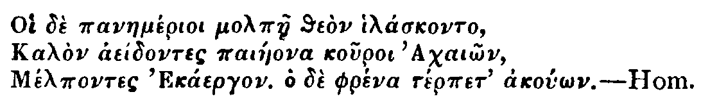.
No. 406 |
Monday, June 16, 1712 |
Steele |
Hæc studia Adolescentiam alunt, Senectutem oblectant, secundas res ornant, adversis solatium et perfugium præbet delectant domi, non impediunt foris; Pernoctant nobiscum, peregrinantur, rusticantur.
Tull..
Dear Sir,T.
You have obliged me with a very kind Letter; by which I find you shift the Scene of your Life from the Town to the Country, and enjoy that mixt State which wise Men both delight in, and are qualified for. Methinks most of the Philosophers and Moralists have run too much into Extreams, in praising entirely either Solitude or publick Life; in the former Men generally grow useless by too much Rest, and in the latter are destroyed by too much Precipitation: As Waters lying still, putrifie and are good for nothing; and running violently on, do but the more Mischief in their Passage to others, and are swallowed up and lost the sooner themselves. Those who, like you, can make themselves useful to all States, should be like gentle Streams, that not only glide through lonely Vales and Forests amidst the Flocks and Shepherds, but visit populous Towns in their Course, and are at once of Ornament and Service to them. But there is another sort of People who seem designed for Solitude, those I mean who have more to hide than to shew: As for my own Part, I am one of those of whom Seneca says, Tum Umbratiles sunt, ut putent in turbido esse quicquid in luce est. Some Men, like Pictures, are fitter for a Corner than a full Light; and I believe such as have a natural Bent to Solitude, are like Waters which may be forced into Fountains, and exalted to a great Height, may make a much nobler Figure, and a much louder Noise, but after all run more smoothly, equally and plentifully, in their own natural Course upon the Ground. The Consideration of this would make me very well contented with the Possession only of that Quiet which Cowley calls the Companion of Obscurity; but whoever has the Muses too for his Companions, can never be idle enough to be uneasie. Thus, Sir, you see I would flatter my self into a good Opinion of my own Way of Living; Plutarch just now told me, that 'tis in human Life as in a Game at Tables, one may wish he had the highest Cast, but if his Chance be otherwise, he is even to play it as well as he can, and make the best of it.
I am, Sir,
Your most obliged,
and most humble Servant.
Mr. Spectator,
The Town being so well pleased with the fine Picture of artless Love, which Nature inspired the Laplander to paint in the Ode you lately printed; we were in Hopes that the ingenious Translator would have obliged it with the other also which Scheffer has given us; but since he has not, a much inferior Hand has ventured to send you this.
It is a Custom with the Northern Lovers to divert themselves with a Song, whilst they Journey through the fenny Moors to pay a visit to their Mistresses. This is addressed by the Lover to his Rain-Deer, which is the Creature that in that Country supplies the Want of Horses. The Circumstances which successively present themselves to him in his Way, are, I believe you will think, naturally interwoven. The Anxiety of Absence, the Gloominess of the Roads, and his Resolution of frequenting only those, since those only can carry him to the Object of his Desires; the Dissatisfaction he expresses even at the greatest Swiftness with which he is carried, and his joyful Surprize at an unexpected Sight of his Mistress as she is bathing, seems beautifully described in the Original.
If all those pretty Images of Rural Nature are lost in the Imitation, yet possibly you may think fit to let this supply the Place of a long Letter, when Want of Leisure or Indisposition for Writing will not permit our being entertained by your own Hand. I propose such a Time, because tho' it is natural to have a Fondness for what one does ones self, yet I assure you I would not have any thing of mine displace a single Line of yours.
I Haste, my Rain-Deer, and let us nimbly go
Our am'rous Journey through this dreery Waste;
Haste, my Rain-Deer! still still thou art too slow;
Impetuous Love demands the Lightning's Haste.II Around us far the Rushy Moors are spread:
Soon will the Sun withdraw her chearful Ray:
Darkling and tir'd we shall the Marshes tread,
No Lay unsung to cheat the tedious Way.III The wat'ry Length of these unjoyous Moors
Does all the flow'ry Meadow's Pride excel,
Through these I fly to her my Soul adores;
Ye flowery Meadows, empty Pride, Farewel.IV Each Moment from the Charmer I'm confin'd,
My Breast is tortur'd with impatient Fires;
Fly, my Rain-Deer, fly swifter than the Wind,
Thy tardy Feet wing with my fierce Desires.V Our pleasing Toil will then be soon o'erpaid,
And thou, in Wonder lost, shalt view my Fair,
Admire each Feature of the lovely Maid,
Her artless Charms, her Bloom, her sprightly Air,VI But lo! with graceful Motion there she swims,
Gently moving each ambitious Wave;
The crowding Waves transported clasp her Limbs:
When, when, oh when, shall I such Freedoms have!VII In vain, you envious Streams, so fast you flow,
To hide her from a Lover's ardent Gaze:
From ev'ry Touch you more transparent grow,
And all reveal'd the beauteous Wanton plays.
No. 407 |
Tuesday, June 17, 1712 |
Addison |
—abest facundis Gratia dictis.
Ovid..
No. 408 |
Wednesday, June 18, 1712 |
Pope |
Decet affectus animi neque se nimium erigere, nec subjacere serviliter.Z.
Tull..
Mr. Spectator,
I have always been a very great Lover of your Speculations, as well in Regard to the Subject, as to your Manner of Treating it. Human Nature I always thought the most useful Object of human Reason, and to make the Consideration of it pleasant and entertaining, I always thought the best Employment of human Wit: Other Parts of Philosophy may perhaps make us wiser, but this not only answers that End, but makes us better too. Hence it was that the Oracle pronounced Socrates the wisest of all Men living, because he judiciously made Choice of human Nature for the Object of his Thoughts; an Enquiry into which as much exceeds all other Learning, as it is of more Consequence to adjust the true Nature and Measures of Right and Wrong, than to settle the Distance of the Planets, and compute the Times of their Circumvolutions.
One good Effect that will immediately arise from a near Observation of human Nature, is, that we shall cease to wonder at those Actions which Men are used to reckon wholly unaccountable; for as nothing is produced without a Cause, so by observing the Nature and Course of the Passions, we shall be able to trace every Action from its first Conception to its Death; We shall no more admire at the Proceedings of Catiline or Tiberius, when we know the one was actuated by a cruel Jealousie, the other by a furious Ambition; for the Actions of Men follow their Passions as naturally as Light does Heat, or as any other Effect flows from its Cause; Reason must be employed in adjusting the Passions, but they must ever remain the Principles of Action.
The strange and absurd Variety that is so apparent in Men's Actions, shews plainly they can never proceed immediately from Reason; so pure a Fountain emits no such troubled Waters: They must necessarily arise from the Passions, which are to the Mind as the Winds to a Ship, they only can move it, and they too often destroy it; if fair and gentle, they guide it into the Harbour; if contrary and furious, they overset it in the Waves: In the same manner is the Mind assisted or endangered by the Passions; Reason must then take the Place of Pilot, and can never fail of securing her Charge if she be not wanting to her self: The Strength of the Passions will never be accepted as an Excuse for complying with them, they were designed for Subjection, and if a Man suffers them to get the upper Hand, he then betrays the Liberty of his own Soul.
As Nature has framed the several Species of Beings as it were in a Chain, so Man seems to be placed as the middle Link between Angels and Brutes: Hence he participates both of Flesh and Spirit by an admirable Tie, which in him occasions perpetual War of Passions; and as a Man inclines to the angelick or brute Part of his Constitution, he is then denominated good or bad, virtuous or wicked; if Love, Mercy, and Good-nature prevail, they speak him of the Angel; if Hatred, Cruelty, and Envy predominate, they declare his Kindred to the Brute. Hence it was that some of the Ancients imagined, that as Men in this Life inclined more to the Angel or Brute, so after their Death they should transmigrate into the one or the other: and it would be no unpleasant Notion, to consider the several Species of Brutes, into which we may imagine that Tyrants, Misers, the Proud, Malicious, and Ill-natured might be changed.
As a Consequence of this Original, all Passions are in all Men, but all appear not in all; Constitution, Education, Custom of the Country, Reason, and the like Causes, may improve or abate the Strength of them, but still the Seeds remain, which are ever ready to sprout forth upon the least Encouragement. I have heard a Story of a good religious Man, who, having been bred with the Milk of a Goat, was very modest in Publick by a careful Reflection he made on his Actions, but he frequently had an Hour in Secret, wherein he had his Frisks and Capers; and if we had an Opportunity of examining the Retirement of the strictest Philosophers, no doubt but we should find perpetual Returns of those Passions they so artfully conceal from the Publick. I remember Matchiavel observes, that every State should entertain a perpetual jealousie of its Neighbours, that so it should never be unprovided when an Emergency happens1; in like manner should the Reason be perpetually on its Guard against the Passions, and never suffer them to carry on any Design that may be destructive of its Security; yet at the same Time it must be careful, that it don't so far break their Strength as to render them contemptible, and consequently it self unguarded.
The Understanding being of its self too slow and lazy to exert it self into Action, its necessary it should be put in Motion by the gentle Gales of the Passions, which may preserve it from stagnating and Corruption; for they are as necessary to the Health of the Mind, as the Circulation of the animal Spirits is to the Health of the Body; they keep it in Life, and Strength, and Vigour; nor is it possible for the Mind to perform its Offices without their Assistance: These Motions are given us with our Being, they are little Spirits that are born and dye with us; to some they are mild, easie, and gentle, to others wayward and unruly, yet never too strong for the Reins of Reason and the Guidance of Judgment.
We may generally observe a pretty nice Proportion between the Strength of Reason and Passion; the greatest Genius's have commonly the strongest Affections, as on the other hand, the weaker Understandings have generally the weaker Passions; and 'tis fit the Fury of the Coursers should not be too great for the Strength of the Charioteer. Young Men whose Passions are not a little unruly, give small Hopes of their ever being considerable; the Fire of Youth will of course abate, and is a Fault, if it be a Fault, that mends every Day; but surely unless a Man has Fire in Youth, he can hardly have Warmth in Old Age. We must therefore be very cautious, lest while we think to regulate the Passions, we should quite extinguish them, which is putting out the Light of the Soul: for to be without Passion, or to be hurried away with it, makes a Man equally blind. The extraordinary Severity used in most of our Schools has this fatal Effect, it breaks the Spring of the Mind, and most certainly destroys more good Genius's than it can possibly improve. And surely 'tis a mighty Mistake that the Passions should be so intirely subdued; for little Irregularities are sometimes not only to be borne with, but to be cultivated too, since they are frequently attended with the greatest Perfections. All great Geniuss have Faults mixed with their Virtues, and resemble the flaming Bush which has Thorns amongst Lights.
Since, therefore the Passions are the Principles of human Actions, we must endeavour to manage them so as to retain their Vigour, yet keep them under strict Command; we must govern them rather like free Subjects than Slaves, lest while we intend to make them obedient, they become abject, and unfit for those great Purposes to which they were designed. For my Part I must confess, I could never have any Regard to that Sect of Philosophers, who so much insisted upon an absolute Indifference and Vacancy from all Passion; for it seems to me a Thing very inconsistent for a Man to divest himself of Humanity, in order to acquire Tranquility of Mind, and to eradicate the very Principles of Action, because its possible they may produce ill Effects.
I am, Sir,
Your Affectionate Admirer,
T. B.
No. 409 |
Thursday, June 19, 1712 |
Addison |
Musæo contingere cuncta lepore.
Lucr..
No. 410 |
Friday, June 20, 1712 |
Tickell |
Dum foris sunt, nihil videtur Mundius,
Nec magis compositum quidquam, nec magis elegans:
Quæ, cum amatore suo cum coenant, Liguriunt,
Harum videre ingluviem, sordes, inopiam:
Quam inhonestæ solæ sint domi, atque avidæ cibi,
Quo pacto ex Jure Hesterno panem atrum varent.
Nosse omnia hæc, salus est adolescentulis.
Tert.
Madam,My good Friend could not well stand the Raillery which was rising upon him; but to put a Stop to it I deliverd Will. Honeycomb the following Letter, and desired him to read it to the Board.
I am not so meer a Country-Gentleman, but I can guess at the Law-Business you had at the Temple. If you would go down to the Country and leave off all your Vanities but your Singing, let me know at my Lodgings in Bow-street Covent-Garden, and you shall be encouraged by
Your humble Servant, Roger De Coverly.
Mr. Spectator,T.
Having seen a Translation of one of the Chapters in the Canticles into English Verse inserted among your late Papers, I have ventured to send you the 7th Chapter of the Proverbs in a poetical Dress. If you think it worthy appearing among your Speculations, it will be a sufficient Reward for the Trouble of
Your constant Reader,
A. B.
My Son, th' Instruction that my Words impart,
Grave on the Living Tablet of thy Heart;
And all the wholesome Precepts that I give,
Observe with strictest Reverence, and live.
Let all thy Homage be to Wisdom paid,
Seek her Protection and implore her Aid;
That she may keep thy Soul from Harm secure,
And turn thy Footsteps from the Harlot's Door,
Who with curs'd Charms lures the Unwary in,
And sooths with Flattery their Souls to Sin.
Once from my Window as I cast mine Eye
On those that pass'd in giddy Numbers by,
A Youth among the foolish Youths I spy'd,
Who took not sacred Wisdom for his Guide.
Just as the Sun withdrew his cooler Light,
And Evening soft led on the Shades of Night,
He stole in covert Twilight to his Fate,
And pass'd the Corner near the Harlot's Gate
When, lo, a Woman comes!—
Loose her Attire, and such her glaring Dress,
As aptly did the Harlot's Mind express:
Subtle she is, and practisd in the Arts,
By which the Wanton conquer heedless Hearts:
Stubborn and loud she is; she hates her Home,
Varying her Place and Form; she loves to roam;
Now she's within, now in the Street does stray;
Now at each Corner stands, and waits her Prey.
The Youth she seiz'd; and laying now aside
All Modesty, the Female's justest Pride,
She said, with an Embrace, Here at my House
Peace-offerings are, this Day I paid my Vows.
I therefore came abroad to meet my Dear,
And, Lo, in Happy Hour I find thee here.
My Chamber I've adornd, and o'er my Bed
Are cov'rings of the richest Tapstry spread,
With Linnen it is deck'd from Egypt brought,
And Carvings by the Curious Artist wrought,
It wants no Glad Perfume Arabia yields
In all her Citron Groves, and spicy Fields;
Here all her store of richest Odours meets,
Ill lay thee in a Wilderness of Sweets.
Whatever to the Sense can grateful be
I have collected there—I want but Thee.
My Husband's gone a Journey far away, }
Much Gold he took abroad, and long will stay, }
He nam'd for his return a distant Day. }
Upon her Tongue did such smooth Mischief dwell,
And from her Lips such welcome Flatt'ry fell,
Th' unguarded Youth, in Silken Fetters ty'd,
Resign'd his Reason, and with Ease comply'd.
Thus does the Ox to his own Slaughter go,
And thus is senseless of th' impending Blow.
Thus flies the simple Bird into the Snare,
That skilful Fowlers for his Life prepare.
But let my Sons attend, Attend may they
Whom Youthful Vigour may to Sin betray;
Let them false Charmers fly, and guard their Hearts
Against the wily Wanton's pleasing Arts,
With Care direct their Steps, nor turn astray,
To tread the Paths of her deceitful Way;
Lest they too late of Her fell Power complain,
And fall, where many mightier have been Slain.
No. 411 |
Saturday, June 21, 1712 |
Addison |
Avia Pieridum peragro loca, nullius ante
Trita solo; juvat integros accedere fonteis;
Atque haurire:—
Lucr.
No. 412 |
Monday, June 23, 1712 |
Addison |
—Divisum sic breve fiet Opus.
Mart.
Scit thalamo servare fidem, sanctasque vereturThere is a second Kind of Beauty that we find in the several Products of Art and Nature, which does not work in the Imagination with that Warmth and Violence as the Beauty that appears in our proper Species, but is apt however to raise in us a secret Delight, and a kind of Fondness for the Places or Objects in which we discover it. This consists either in the Gaiety or Variety of Colours, in the Symmetry and Proportion of Parts, in the Arrangement and Disposition of Bodies, or in a just Mixture and Concurrence of all together. Among these several Kinds of Beauty the Eye takes most Delight in Colours. We no where meet with a more glorious or pleasing Show in Nature than what appears in the Heavens at the rising and setting of the Sun, which is wholly made up of those different Stains of Light that shew themselves in Clouds of a different Situation. For this Reason we find the Poets, who are always addressing themselves to the Imagination, borrowing more of their Epithets from Colours than from any other Topic. As the Fancy delights in every thing that is Great, Strange, or Beautiful, and is still more pleased the more it finds of these Perfections in the same Object, so is it capable of receiving a new Satisfaction by the Assistance of another Sense. Thus any continued Sound, as the Musick of Birds, or a Fall of Water, awakens every moment the Mind of the Beholder, and makes him more attentive to the several Beauties of the Place that lye before him. Thus if there arises a Fragrancy of Smells or Perfumes, they heighten the Pleasures of the Imagination, and make even the Colours and Verdure of the Landskip appear more agreeable; for the Ideas of both Senses recommend each other, and are pleasanter together than when they enter the Mind separately: As the different Colours of a Picture, when they are well disposed, set off one another, and receive an additional Beauty from the Advantage of their Situation.
Connubii leges, non illum in pectore candor
Sollicitat niveus; neque pravum accendit amorem
Splendida Lanugo, vel honesta in vertice crista,
Purpureusve nitor pennarum; ast agmina latè
Fœminea explorat cautus, maculasque requirit
Cognatas, paribusque interlita corpora guttis:
Ni faceret, pictis sylvam circum undique monstris
Confusam aspiceres vulgò, partusque biformes,
Et genus ambiguum, et Veneris monumenta nefandæ.
Hinc merula in nigro se oblectat nigra marito,
Hinc socium lasciva petit Philomela canorum,
Agnoscitque pares sonitus, hinc Noctua tetram
Canitiem alarum, et glaucos miratur ocellos.
Nempe sibi semper constat, crescitque quotannis
Lucida progenies, castos confessa parentes;
Dum virides inter saltus lucosque sonoros
Vere novo exultat, plumasque decora Juventus
Explicat ad solem, patriisque coloribus ardet2
No. 413 |
Tuesday, June 24, 1712 |
Addison |
—Causa latet, vis est notissima—
Ovid.
June 24, 1712.
Mr. Spectator,
I would not divert the Course of your Discourses, when you seem bent upon obliging the World with a train of Thinking, which, rightly attended to, may render the Life of every Man who reads it, more easy and happy for the future. The Pleasures of the Imagination are what bewilder Life, when Reason and Judgment do not interpose; It is therefore a worthy Action in you to look carefully into the Powers of Fancy, that other Men, from the Knowledge of them, may improve their Joys and allay their Griefs, by a just use of that Faculty: I say, Sir, I would not interrupt you in the progress of this Discourse; but if you will do me the Favour of inserting this Letter in your next Paper, you will do some Service to the Public, though not in so noble a way of Obliging, as that of improving their Minds. Allow me, Sir, to acquaint you with a Design (of which I am partly Author), though it tends to no greater a Good than that of getting Money. I should not hope for the Favour of a Philosopher in this Matter, if it were not attempted under all the Restrictions which you Sages put upon private Acquisitions.
The first Purpose which every good Man is to propose to himself, is the Service of his Prince and Country; after that is done, he cannot add to himself, but he must also be beneficial to them. This Scheme of Gain is not only consistent with that End, but has its very Being in Subordination to it; for no Man can be a Gainer here but at the same time he himself, or some other, must succeed in their Dealings with the Government. It is called the Multiplication Table, and is so far calculated for the immediate Service of Her Majesty, that the same Person who is fortunate in the Lottery of the State, may receive yet further Advantage in this Table. And I am sure nothing can be more pleasing to Her gracious Temper than to find out additional Methods of increasing their good Fortune who adventure anything in Her Service, or laying Occasions for others to become capable of serving their Country who are at present in too low Circumstances to exert themselves. The manner of executing the Design is, by giving out Receipts for half Guineas received, which shall entitle the fortunate Bearer to certain Sums in the Table, as is set forth at large in the Proposals Printed the 23rd instant. There is another Circumstance in this Design, which gives me hopes of your Favour to it, and that is what Tully advises, to wit, that the Benefit is made as diffusive as possible. Every one that has half a Guinea is put into a possibility, from that small Sum, to raise himself an easy Fortune; when these little parcels of Wealth are, as it were, thus thrown back again into the Redonation of Providence, we are to expect that some who live under Hardship or Obscurity, may be produced to the World in the Figure they deserve by this means. I doubt not but this last Argument will have Force with you, and I cannot add another to it, but what your Severity will, I fear, very little regard; which is, that
I am, Sir, Your greatest Admirer,
Richard Steele.
No. 414 |
Wednesday, June 25, 1712 |
Addison |
—Alterius sic
Altera poscit opem res et conjurat amicè.
Hor.
Scriptorum chorus omnis amat nemus et fugit Urbes.But tho' there are several of these wild Scenes, that are more delightful than any artificial Shows; yet we find the Works of Nature still more pleasant, the more they resemble those of Art: For in this case our Pleasure rises from a double Principle; from the Agreeableness of the Objects to the Eye, and from their Similitude to other Objects: We are pleased as well with comparing their Beauties, as with surveying them, and can represent them to our Minds, either as Copies or Originals. Hence it is that we take Delight in a Prospect which is well laid out, and diversified with Fields and Meadows, Woods and Rivers; in those accidental Landskips of Trees, Clouds and Cities, that are sometimes found in the Veins of Marble; in the curious Fret-work of Rocks and Grottos; and, in a Word, in any thing that hath such a Variety or Regularity as may seem the Effect of Design, in what we call the Works of Chance.
Hor.
Hic Secura quies, et nescia fallere vita,
Dives opum variarum; hic latis otia fundis,
Speluncæ, vivique lacus, hic frigida Tempe,
Mugitusque boum, mollesque sub arbore somni.br>
Virg.
No. 415 |
Thursday, June 26, 1712 |
Addison |
Adde tot egregias urbes, operumque laborem.
Virg.
No. 416 |
Friday, June 27, 1712 |
Addison |
Quatenûs hoc simile est oculis, quod mente videmus.
Lucr.